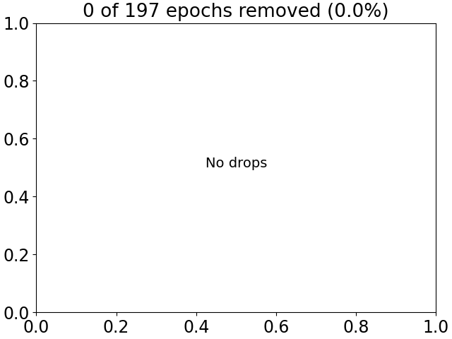

Note
Click here to download the full example code
Visualize bad sensors per trial¶
This example demonstrates how to use autoreject to
visualize the bad sensors in each trial
# Author: Mainak Jas <mainak.jas@telecom-paristech.fr>
# Denis A. Engemann <denis.engemann@gmail.com>
# License: BSD-3-Clause
# sphinx_gallery_thumbnail_number = 2
First, we download the data from OpenfMRI which is hosted on OpenNeuro.
We will do this using openneuro-py which can be installed using pip
(pip install openneuro-py).
import os
import openneuro
import autoreject
dataset = 'ds000117' # The id code on OpenNeuro for this example dataset
subject_id = 16 # OpenfMRI format of subject numbering
target_dir = os.path.join(
os.path.dirname(autoreject.__file__), '..', 'examples', dataset)
if not os.path.isdir(target_dir):
os.makedirs(target_dir)
openneuro.download(dataset=dataset, target_dir=target_dir,
include=[f'sub-{subject_id}/ses-meg/'])
Hello! This is openneuro-py 2022.1.0. Great to see you!
Please report problems and bugs at
https://github.com/hoechenberger/openneuro-py/issues
Preparing to download ds000117 ...
Retrieving up to 22 files (5 concurrent downloads).
participants.tsv: 0.00B [00:00, ?B/s]
dataset_description.json: 0.00B [00:00, ?B/s]
README: 0.00B [00:00, ?B/s]
CHANGES: 0.00B [00:00, ?B/s]
sub-16_ses-meg_task-facerecognition_events.tsv: 0.00B [00:00, ?B/s]
sub-16_ses-meg_task-facerecognition_run-05_events.tsv: 0.00B [00:00, ?B/s]
sub-16_ses-meg_scans.tsv: 0.00B [00:00, ?B/s]
sub-16_ses-meg_task-facerecognition_run-06_events.tsv: 0.00B [00:00, ?B/s]
sub-16_ses-meg_task-facerecognition_channels.tsv: 0.00B [00:00, ?B/s]
sub-16_ses-meg_task-facerecognition_meg.json: 0.00B [00:00, ?B/s]
sub-16_ses-meg_task-facerecognition_run-02_events.tsv: 0.00B [00:00, ?B/s]
sub-16_ses-meg_task-facerecognition_run-01_events.tsv: 0.00B [00:00, ?B/s]
sub-16_ses-meg_coordsystem.json: 0.00B [00:00, ?B/s]
sub-16_ses-meg_task-facerecognition_run-03_meg.fif: 0.00B [00:00, ?B/s]
sub-16_ses-meg_task-facerecognition_run-06_meg.fif: 0.00B [00:00, ?B/s]
sub-16_ses-meg_task-facerecognition_run-03_meg.fif: 229kB [00:00, 2.34MB/s]
sub-16_ses-meg_task-facerecognition_run-06_meg.fif: 201kB [00:00, 2.06MB/s]
sub-16_ses-meg_task-facerecognition_run-03_meg.fif: 562kB [00:00, 2.96MB/s]
sub-16_ses-meg_task-facerecognition_run-06_meg.fif: 533kB [00:00, 2.84MB/s]
sub-16_ses-meg_task-facerecognition_run-03_meg.fif: 861kB [00:00, 3.00MB/s]
sub-16_ses-meg_task-facerecognition_run-06_meg.fif: 814kB [00:00, 2.85MB/s]
sub-16_ses-meg_task-facerecognition_run-05_meg.fif: 0.00B [00:00, ?B/s]
sub-16_ses-meg_task-facerecognition_run-03_meg.fif: 1.52MB [00:00, 4.62MB/s]
sub-16_ses-meg_task-facerecognition_run-06_meg.fif: 1.47MB [00:00, 4.48MB/s]
sub-16_ses-meg_task-facerecognition_run-05_meg.fif: 135kB [00:00, 1.37MB/s]
sub-16_ses-meg_task-facerecognition_run-03_meg.fif: 2.64MB [00:00, 7.18MB/s]
sub-16_ses-meg_task-facerecognition_run-06_meg.fif: 2.63MB [00:00, 7.26MB/s]
sub-16_ses-meg_task-facerecognition_run-05_meg.fif: 369kB [00:00, 1.97MB/s]
sub-16_ses-meg_task-facerecognition_run-03_meg.fif: 3.72MB [00:00, 8.59MB/s]
sub-16_ses-meg_task-facerecognition_run-06_meg.fif: 3.71MB [00:00, 8.62MB/s]
sub-16_ses-meg_task-facerecognition_run-05_meg.fif: 603kB [00:00, 2.16MB/s]
sub-16_ses-meg_task-facerecognition_run-03_meg.fif: 4.79MB [00:00, 9.42MB/s]
sub-16_ses-meg_task-facerecognition_run-06_meg.fif: 4.83MB [00:00, 9.53MB/s]
sub-16_ses-meg_task-facerecognition_run-05_meg.fif: 813kB [00:00, 2.13MB/s]
sub-16_ses-meg_task-facerecognition_run-02_meg.fif: 0.00B [00:00, ?B/s]
sub-16_ses-meg_task-facerecognition_run-03_meg.fif: 5.81MB [00:00, 9.80MB/s]
sub-16_ses-meg_task-facerecognition_run-06_meg.fif: 5.96MB [00:00, 10.2MB/s]
sub-16_ses-meg_task-facerecognition_run-03_meg.fif: 6.84MB [00:00, 10.1MB/s]
sub-16_ses-meg_task-facerecognition_run-02_meg.fif: 101kB [00:00, 1.02MB/s]
sub-16_ses-meg_task-facerecognition_run-05_meg.fif: 1.00MB [00:00, 2.05MB/s]
sub-16_ses-meg_task-facerecognition_run-06_meg.fif: 7.48MB [00:00, 12.0MB/s]
sub-16_ses-meg_task-facerecognition_run-02_meg.fif: 273kB [00:00, 1.45MB/s]
sub-16_ses-meg_task-facerecognition_run-03_meg.fif: 8.09MB [00:01, 11.0MB/s]
sub-16_ses-meg_task-facerecognition_run-05_meg.fif: 1.78MB [00:00, 4.07MB/s]
sub-16_ses-meg_task-facerecognition_run-06_meg.fif: 8.71MB [00:01, 12.1MB/s]
sub-16_ses-meg_task-facerecognition_run-02_meg.fif: 426kB [00:00, 1.50MB/s]
sub-16_ses-meg_task-facerecognition_run-03_meg.fif: 9.33MB [00:01, 11.6MB/s]
sub-16_ses-meg_task-facerecognition_run-05_meg.fif: 2.53MB [00:00, 5.27MB/s]
sub-16_ses-meg_task-facerecognition_run-01_meg.fif: 0.00B [00:00, ?B/s]
sub-16_ses-meg_task-facerecognition_run-06_meg.fif: 10.1MB [00:01, 12.7MB/s]
sub-16_ses-meg_task-facerecognition_run-02_meg.fif: 582kB [00:00, 1.54MB/s]
sub-16_ses-meg_task-facerecognition_run-03_meg.fif: 10.5MB [00:01, 11.7MB/s]
sub-16_ses-meg_task-facerecognition_run-05_meg.fif: 3.56MB [00:00, 6.99MB/s]
sub-16_ses-meg_task-facerecognition_run-01_meg.fif: 75.6kB [00:00, 772kB/s]
sub-16_ses-meg_task-facerecognition_run-06_meg.fif: 11.3MB [00:01, 12.8MB/s]
sub-16_ses-meg_task-facerecognition_run-05_meg.fif: 4.24MB [00:00, 7.03MB/s]
sub-16_ses-meg_task-facerecognition_run-01_meg.fif: 206kB [00:00, 1.10MB/s]
sub-16_ses-meg_task-facerecognition_run-03_meg.fif: 11.6MB [00:01, 11.4MB/s]
sub-16_ses-meg_task-facerecognition_run-02_meg.fif: 733kB [00:00, 1.47MB/s]
sub-16_ses-meg_task-facerecognition_run-06_meg.fif: 12.5MB [00:01, 12.3MB/s]
sub-16_ses-meg_task-facerecognition_run-05_meg.fif: 5.15MB [00:01, 7.80MB/s]
sub-16_ses-meg_task-facerecognition_run-01_meg.fif: 340kB [00:00, 1.22MB/s]
sub-16_ses-meg_task-facerecognition_run-02_meg.fif: 877kB [00:00, 1.44MB/s]
sub-16_ses-meg_task-facerecognition_run-03_meg.fif: 12.7MB [00:01, 11.0MB/s]
sub-16_ses-meg_task-facerecognition_run-06_meg.fif: 13.7MB [00:01, 12.1MB/s]
sub-16_ses-meg_task-facerecognition_run-05_meg.fif: 6.24MB [00:01, 8.90MB/s]
sub-16_ses-meg_task-facerecognition_run-01_meg.fif: 472kB [00:00, 1.27MB/s]
sub-16_ses-meg_task-facerecognition_run-02_meg.fif: 0.99MB [00:00, 1.43MB/s]
sub-16_ses-meg_task-facerecognition_run-03_meg.fif: 13.8MB [00:01, 10.8MB/s]
sub-16_ses-meg_task-facerecognition_run-06_meg.fif: 14.9MB [00:01, 12.0MB/s]
sub-16_ses-meg_task-facerecognition_run-05_meg.fif: 7.28MB [00:01, 9.48MB/s]
sub-16_ses-meg_task-facerecognition_run-01_meg.fif: 601kB [00:00, 1.29MB/s]
sub-16_ses-meg_task-facerecognition_run-02_meg.fif: 1.59MB [00:00, 2.92MB/s]
sub-16_ses-meg_task-facerecognition_run-03_meg.fif: 14.8MB [00:01, 10.7MB/s]
sub-16_ses-meg_task-facerecognition_run-06_meg.fif: 16.1MB [00:01, 11.6MB/s]
sub-16_ses-meg_task-facerecognition_run-05_meg.fif: 8.33MB [00:01, 9.93MB/s]
sub-16_ses-meg_task-facerecognition_run-01_meg.fif: 728kB [00:00, 1.29MB/s]
sub-16_ses-meg_task-facerecognition_run-02_meg.fif: 2.26MB [00:00, 4.16MB/s]
sub-16_ses-meg_task-facerecognition_run-03_meg.fif: 15.9MB [00:01, 10.8MB/s]
sub-16_ses-meg_task-facerecognition_run-06_meg.fif: 17.2MB [00:01, 11.4MB/s]
sub-16_ses-meg_task-facerecognition_run-05_meg.fif: 9.41MB [00:01, 10.3MB/s]
sub-16_ses-meg_task-facerecognition_run-01_meg.fif: 861kB [00:00, 1.31MB/s]
sub-16_ses-meg_task-facerecognition_run-02_meg.fif: 2.89MB [00:01, 4.91MB/s]
sub-16_ses-meg_task-facerecognition_run-03_meg.fif: 17.0MB [00:01, 10.9MB/s]
sub-16_ses-meg_task-facerecognition_run-06_meg.fif: 18.3MB [00:01, 11.4MB/s]
sub-16_ses-meg_task-facerecognition_run-05_meg.fif: 10.5MB [00:01, 10.6MB/s]
sub-16_ses-meg_task-facerecognition_run-01_meg.fif: 994kB [00:00, 1.33MB/s]
sub-16_ses-meg_task-facerecognition_run-02_meg.fif: 3.94MB [00:01, 6.73MB/s]
sub-16_ses-meg_task-facerecognition_run-03_meg.fif: 18.0MB [00:01, 10.9MB/s]
sub-16_ses-meg_task-facerecognition_run-06_meg.fif: 19.4MB [00:01, 11.4MB/s]
sub-16_ses-meg_task-facerecognition_run-05_meg.fif: 11.6MB [00:01, 10.8MB/s]
sub-16_ses-meg_task-facerecognition_run-01_meg.fif: 1.41MB [00:00, 2.36MB/s]
sub-16_ses-meg_task-facerecognition_run-02_meg.fif: 5.01MB [00:01, 8.05MB/s]
sub-16_ses-meg_task-facerecognition_run-03_meg.fif: 19.1MB [00:02, 11.0MB/s]
sub-16_ses-meg_task-facerecognition_run-06_meg.fif: 20.5MB [00:02, 11.3MB/s]
sub-16_ses-meg_task-facerecognition_run-05_meg.fif: 12.6MB [00:01, 10.8MB/s]
sub-16_ses-meg_task-facerecognition_run-01_meg.fif: 2.05MB [00:01, 3.67MB/s]
sub-16_ses-meg_task-facerecognition_run-02_meg.fif: 6.05MB [00:01, 8.93MB/s]
sub-16_ses-meg_task-facerecognition_run-03_meg.fif: 20.1MB [00:02, 10.9MB/s]
sub-16_ses-meg_task-facerecognition_run-06_meg.fif: 21.5MB [00:02, 11.2MB/s]
sub-16_ses-meg_task-facerecognition_run-05_meg.fif: 13.7MB [00:01, 10.9MB/s]
sub-16_ses-meg_task-facerecognition_run-01_meg.fif: 2.62MB [00:01, 4.38MB/s]
sub-16_ses-meg_task-facerecognition_run-02_meg.fif: 7.12MB [00:01, 9.58MB/s]
sub-16_ses-meg_task-facerecognition_run-03_meg.fif: 21.2MB [00:02, 10.9MB/s]
sub-16_ses-meg_task-facerecognition_run-06_meg.fif: 22.6MB [00:02, 11.2MB/s]
sub-16_ses-meg_task-facerecognition_run-05_meg.fif: 14.7MB [00:01, 10.9MB/s]
sub-16_ses-meg_task-facerecognition_run-01_meg.fif: 3.70MB [00:01, 6.48MB/s]
sub-16_ses-meg_task-facerecognition_run-02_meg.fif: 8.15MB [00:01, 9.93MB/s]
sub-16_ses-meg_task-facerecognition_run-03_meg.fif: 22.2MB [00:02, 10.9MB/s]
sub-16_ses-meg_task-facerecognition_run-06_meg.fif: 23.7MB [00:02, 11.1MB/s]
sub-16_ses-meg_task-facerecognition_run-01_meg.fif: 4.74MB [00:01, 7.83MB/s]
sub-16_ses-meg_task-facerecognition_run-05_meg.fif: 15.8MB [00:02, 10.8MB/s]
sub-16_ses-meg_task-facerecognition_run-02_meg.fif: 9.19MB [00:01, 10.2MB/s]
sub-16_ses-meg_task-facerecognition_run-03_meg.fif: 23.3MB [00:02, 10.8MB/s]
sub-16_ses-meg_task-facerecognition_run-06_meg.fif: 24.8MB [00:02, 11.3MB/s]
sub-16_ses-meg_task-facerecognition_run-01_meg.fif: 5.79MB [00:01, 8.77MB/s]
sub-16_ses-meg_task-facerecognition_run-05_meg.fif: 16.8MB [00:02, 10.7MB/s]
sub-16_ses-meg_task-facerecognition_run-02_meg.fif: 10.2MB [00:01, 10.4MB/s]
sub-16_ses-meg_task-facerecognition_run-03_meg.fif: 24.3MB [00:02, 10.7MB/s]
sub-16_ses-meg_task-facerecognition_run-06_meg.fif: 25.9MB [00:02, 11.2MB/s]
sub-16_ses-meg_task-facerecognition_run-01_meg.fif: 6.84MB [00:01, 9.41MB/s]
sub-16_ses-meg_task-facerecognition_run-05_meg.fif: 17.8MB [00:02, 10.8MB/s]
sub-16_ses-meg_task-facerecognition_run-02_meg.fif: 11.3MB [00:01, 10.6MB/s]
sub-16_ses-meg_task-facerecognition_run-03_meg.fif: 25.3MB [00:02, 10.7MB/s]
sub-16_ses-meg_task-facerecognition_run-06_meg.fif: 27.0MB [00:02, 11.1MB/s]
sub-16_ses-meg_task-facerecognition_run-01_meg.fif: 7.88MB [00:01, 9.82MB/s]
sub-16_ses-meg_task-facerecognition_run-05_meg.fif: 18.9MB [00:02, 10.8MB/s]
sub-16_ses-meg_task-facerecognition_run-02_meg.fif: 12.3MB [00:01, 10.7MB/s]
sub-16_ses-meg_task-facerecognition_run-03_meg.fif: 26.4MB [00:02, 10.7MB/s]
sub-16_ses-meg_task-facerecognition_run-06_meg.fif: 28.0MB [00:02, 11.0MB/s]
sub-16_ses-meg_task-facerecognition_run-01_meg.fif: 8.93MB [00:01, 10.1MB/s]
sub-16_ses-meg_task-facerecognition_run-05_meg.fif: 19.9MB [00:02, 10.8MB/s]
sub-16_ses-meg_task-facerecognition_run-02_meg.fif: 13.4MB [00:02, 10.8MB/s]
sub-16_ses-meg_task-facerecognition_run-03_meg.fif: 27.4MB [00:02, 10.7MB/s]
sub-16_ses-meg_task-facerecognition_run-06_meg.fif: 29.1MB [00:02, 10.9MB/s]
sub-16_ses-meg_task-facerecognition_run-01_meg.fif: 9.99MB [00:01, 10.4MB/s]
sub-16_ses-meg_task-facerecognition_run-05_meg.fif: 21.0MB [00:02, 10.8MB/s]
sub-16_ses-meg_task-facerecognition_run-02_meg.fif: 14.5MB [00:02, 10.8MB/s]
sub-16_ses-meg_task-facerecognition_run-03_meg.fif: 28.5MB [00:02, 10.7MB/s]
sub-16_ses-meg_task-facerecognition_run-06_meg.fif: 30.1MB [00:02, 10.9MB/s]
sub-16_ses-meg_task-facerecognition_run-01_meg.fif: 11.0MB [00:01, 10.5MB/s]
sub-16_ses-meg_task-facerecognition_run-05_meg.fif: 22.0MB [00:02, 10.9MB/s]
sub-16_ses-meg_task-facerecognition_run-02_meg.fif: 15.5MB [00:02, 10.8MB/s]
sub-16_ses-meg_task-facerecognition_run-03_meg.fif: 29.5MB [00:03, 10.8MB/s]
sub-16_ses-meg_task-facerecognition_run-06_meg.fif: 31.2MB [00:03, 10.9MB/s]
sub-16_ses-meg_task-facerecognition_run-01_meg.fif: 12.1MB [00:02, 10.6MB/s]
sub-16_ses-meg_task-facerecognition_run-05_meg.fif: 23.1MB [00:02, 10.9MB/s]
sub-16_ses-meg_task-facerecognition_run-02_meg.fif: 16.6MB [00:02, 10.7MB/s]
sub-16_ses-meg_task-facerecognition_run-03_meg.fif: 30.5MB [00:03, 10.7MB/s]
sub-16_ses-meg_task-facerecognition_run-06_meg.fif: 32.2MB [00:03, 10.9MB/s]
sub-16_ses-meg_task-facerecognition_run-01_meg.fif: 13.1MB [00:02, 10.7MB/s]
sub-16_ses-meg_task-facerecognition_run-05_meg.fif: 24.1MB [00:02, 10.8MB/s]
sub-16_ses-meg_task-facerecognition_run-02_meg.fif: 17.6MB [00:02, 10.7MB/s]
sub-16_ses-meg_task-facerecognition_run-03_meg.fif: 31.6MB [00:03, 10.8MB/s]
sub-16_ses-meg_task-facerecognition_run-06_meg.fif: 33.3MB [00:03, 10.9MB/s]
sub-16_ses-meg_task-facerecognition_run-01_meg.fif: 14.2MB [00:02, 10.8MB/s]
sub-16_ses-meg_task-facerecognition_run-05_meg.fif: 25.2MB [00:02, 10.8MB/s]
sub-16_ses-meg_task-facerecognition_run-02_meg.fif: 18.6MB [00:02, 10.8MB/s]
sub-16_ses-meg_task-facerecognition_run-03_meg.fif: 32.6MB [00:03, 10.7MB/s]
sub-16_ses-meg_task-facerecognition_run-06_meg.fif: 34.3MB [00:03, 10.9MB/s]
sub-16_ses-meg_task-facerecognition_run-01_meg.fif: 15.2MB [00:02, 10.8MB/s]
sub-16_ses-meg_task-facerecognition_run-05_meg.fif: 26.3MB [00:03, 10.9MB/s]
sub-16_ses-meg_task-facerecognition_run-02_meg.fif: 19.7MB [00:02, 10.9MB/s]
sub-16_ses-meg_task-facerecognition_run-03_meg.fif: 33.7MB [00:03, 10.8MB/s]
sub-16_ses-meg_task-facerecognition_run-06_meg.fif: 35.4MB [00:03, 10.9MB/s]
sub-16_ses-meg_task-facerecognition_run-01_meg.fif: 16.3MB [00:02, 10.8MB/s]
sub-16_ses-meg_task-facerecognition_run-05_meg.fif: 27.3MB [00:03, 11.0MB/s]
sub-16_ses-meg_task-facerecognition_run-02_meg.fif: 20.8MB [00:02, 10.9MB/s]
sub-16_ses-meg_task-facerecognition_run-03_meg.fif: 34.7MB [00:03, 10.8MB/s]
sub-16_ses-meg_task-facerecognition_run-06_meg.fif: 36.5MB [00:03, 10.8MB/s]
sub-16_ses-meg_task-facerecognition_run-01_meg.fif: 17.3MB [00:02, 10.9MB/s]
sub-16_ses-meg_task-facerecognition_run-05_meg.fif: 28.4MB [00:03, 10.9MB/s]
sub-16_ses-meg_task-facerecognition_run-02_meg.fif: 21.8MB [00:02, 10.9MB/s]
sub-16_ses-meg_task-facerecognition_run-03_meg.fif: 35.8MB [00:03, 10.8MB/s]
sub-16_ses-meg_task-facerecognition_run-06_meg.fif: 37.5MB [00:03, 10.7MB/s]
sub-16_ses-meg_task-facerecognition_run-01_meg.fif: 18.3MB [00:02, 10.9MB/s]
sub-16_ses-meg_task-facerecognition_run-05_meg.fif: 29.5MB [00:03, 10.9MB/s]
sub-16_ses-meg_task-facerecognition_run-02_meg.fif: 22.8MB [00:02, 10.8MB/s]
sub-16_ses-meg_task-facerecognition_run-03_meg.fif: 36.8MB [00:03, 10.8MB/s]
sub-16_ses-meg_task-facerecognition_run-06_meg.fif: 38.5MB [00:03, 10.7MB/s]
sub-16_ses-meg_task-facerecognition_run-01_meg.fif: 19.4MB [00:02, 10.8MB/s]
sub-16_ses-meg_task-facerecognition_run-05_meg.fif: 30.5MB [00:03, 10.9MB/s]
sub-16_ses-meg_task-facerecognition_run-02_meg.fif: 23.9MB [00:03, 10.8MB/s]
sub-16_ses-meg_task-facerecognition_run-03_meg.fif: 37.8MB [00:03, 10.7MB/s]
sub-16_ses-meg_task-facerecognition_run-06_meg.fif: 39.6MB [00:03, 10.7MB/s]
sub-16_ses-meg_task-facerecognition_run-01_meg.fif: 20.4MB [00:02, 10.8MB/s]
sub-16_ses-meg_task-facerecognition_run-05_meg.fif: 31.5MB [00:03, 10.9MB/s]
sub-16_ses-meg_task-facerecognition_run-02_meg.fif: 24.9MB [00:03, 10.8MB/s]
sub-16_ses-meg_task-facerecognition_run-03_meg.fif: 38.9MB [00:03, 10.7MB/s]
sub-16_ses-meg_task-facerecognition_run-06_meg.fif: 40.6MB [00:04, 10.8MB/s]
sub-16_ses-meg_task-facerecognition_run-01_meg.fif: 21.5MB [00:02, 10.8MB/s]
sub-16_ses-meg_task-facerecognition_run-05_meg.fif: 32.6MB [00:03, 10.8MB/s]
sub-16_ses-meg_task-facerecognition_run-02_meg.fif: 26.0MB [00:03, 10.9MB/s]
sub-16_ses-meg_task-facerecognition_run-03_meg.fif: 39.9MB [00:04, 10.7MB/s]
sub-16_ses-meg_task-facerecognition_run-06_meg.fif: 41.6MB [00:04, 10.7MB/s]
sub-16_ses-meg_task-facerecognition_run-01_meg.fif: 22.5MB [00:03, 10.8MB/s]
sub-16_ses-meg_task-facerecognition_run-05_meg.fif: 33.6MB [00:03, 10.8MB/s]
sub-16_ses-meg_task-facerecognition_run-02_meg.fif: 27.1MB [00:03, 10.7MB/s]
sub-16_ses-meg_task-facerecognition_run-03_meg.fif: 40.9MB [00:04, 10.7MB/s]
sub-16_ses-meg_task-facerecognition_run-06_meg.fif: 42.7MB [00:04, 10.7MB/s]
sub-16_ses-meg_task-facerecognition_run-01_meg.fif: 23.6MB [00:03, 10.8MB/s]
sub-16_ses-meg_task-facerecognition_run-05_meg.fif: 34.7MB [00:03, 10.8MB/s]
sub-16_ses-meg_task-facerecognition_run-02_meg.fif: 28.1MB [00:03, 10.7MB/s]
sub-16_ses-meg_task-facerecognition_run-03_meg.fif: 42.0MB [00:04, 10.7MB/s]
sub-16_ses-meg_task-facerecognition_run-06_meg.fif: 43.7MB [00:04, 10.8MB/s]
sub-16_ses-meg_task-facerecognition_run-01_meg.fif: 24.6MB [00:03, 10.8MB/s]
sub-16_ses-meg_task-facerecognition_run-05_meg.fif: 35.7MB [00:03, 10.7MB/s]
sub-16_ses-meg_task-facerecognition_run-02_meg.fif: 29.1MB [00:03, 10.8MB/s]
sub-16_ses-meg_task-facerecognition_run-03_meg.fif: 43.0MB [00:04, 10.8MB/s]
sub-16_ses-meg_task-facerecognition_run-06_meg.fif: 44.8MB [00:04, 10.7MB/s]
sub-16_ses-meg_task-facerecognition_run-01_meg.fif: 25.6MB [00:03, 10.8MB/s]
sub-16_ses-meg_task-facerecognition_run-05_meg.fif: 36.7MB [00:04, 10.7MB/s]
sub-16_ses-meg_task-facerecognition_run-02_meg.fif: 30.2MB [00:03, 10.7MB/s]
sub-16_ses-meg_task-facerecognition_run-03_meg.fif: 44.1MB [00:04, 10.8MB/s]
sub-16_ses-meg_task-facerecognition_run-06_meg.fif: 45.8MB [00:04, 10.7MB/s]
sub-16_ses-meg_task-facerecognition_run-01_meg.fif: 26.7MB [00:03, 10.7MB/s]
sub-16_ses-meg_task-facerecognition_run-05_meg.fif: 37.8MB [00:04, 10.7MB/s]
sub-16_ses-meg_task-facerecognition_run-02_meg.fif: 31.2MB [00:03, 10.7MB/s]
sub-16_ses-meg_task-facerecognition_run-03_meg.fif: 45.1MB [00:04, 10.9MB/s]
sub-16_ses-meg_task-facerecognition_run-06_meg.fif: 46.8MB [00:04, 10.7MB/s]
sub-16_ses-meg_task-facerecognition_run-01_meg.fif: 27.7MB [00:03, 10.8MB/s]
sub-16_ses-meg_task-facerecognition_run-05_meg.fif: 38.8MB [00:04, 10.8MB/s]
sub-16_ses-meg_task-facerecognition_run-02_meg.fif: 32.2MB [00:03, 10.7MB/s]
sub-16_ses-meg_task-facerecognition_run-03_meg.fif: 46.2MB [00:04, 10.9MB/s]
sub-16_ses-meg_task-facerecognition_run-06_meg.fif: 47.9MB [00:04, 10.8MB/s]
sub-16_ses-meg_task-facerecognition_run-01_meg.fif: 28.8MB [00:03, 10.8MB/s]
sub-16_ses-meg_task-facerecognition_run-05_meg.fif: 39.8MB [00:04, 10.8MB/s]
sub-16_ses-meg_task-facerecognition_run-02_meg.fif: 33.3MB [00:03, 10.8MB/s]
sub-16_ses-meg_task-facerecognition_run-03_meg.fif: 47.2MB [00:04, 10.9MB/s]
sub-16_ses-meg_task-facerecognition_run-06_meg.fif: 48.9MB [00:04, 10.8MB/s]
sub-16_ses-meg_task-facerecognition_run-01_meg.fif: 29.8MB [00:03, 10.8MB/s]
sub-16_ses-meg_task-facerecognition_run-05_meg.fif: 40.9MB [00:04, 10.8MB/s]
sub-16_ses-meg_task-facerecognition_run-02_meg.fif: 34.3MB [00:04, 10.8MB/s]
sub-16_ses-meg_task-facerecognition_run-03_meg.fif: 48.3MB [00:04, 10.8MB/s]
sub-16_ses-meg_task-facerecognition_run-06_meg.fif: 49.9MB [00:04, 10.8MB/s]
sub-16_ses-meg_task-facerecognition_run-01_meg.fif: 30.8MB [00:03, 10.8MB/s]
sub-16_ses-meg_task-facerecognition_run-05_meg.fif: 41.9MB [00:04, 10.7MB/s]
sub-16_ses-meg_task-facerecognition_run-02_meg.fif: 35.4MB [00:04, 10.8MB/s]
sub-16_ses-meg_task-facerecognition_run-03_meg.fif: 49.3MB [00:04, 10.8MB/s]
sub-16_ses-meg_task-facerecognition_run-06_meg.fif: 51.0MB [00:05, 10.7MB/s]
sub-16_ses-meg_task-facerecognition_run-01_meg.fif: 31.9MB [00:03, 10.8MB/s]
sub-16_ses-meg_task-facerecognition_run-05_meg.fif: 42.9MB [00:04, 10.7MB/s]
sub-16_ses-meg_task-facerecognition_run-02_meg.fif: 36.4MB [00:04, 10.9MB/s]
sub-16_ses-meg_task-facerecognition_run-03_meg.fif: 50.3MB [00:05, 10.8MB/s]
sub-16_ses-meg_task-facerecognition_run-06_meg.fif: 52.0MB [00:05, 10.8MB/s]
sub-16_ses-meg_task-facerecognition_run-01_meg.fif: 33.0MB [00:04, 10.9MB/s]
sub-16_ses-meg_task-facerecognition_run-05_meg.fif: 44.0MB [00:04, 10.8MB/s]
sub-16_ses-meg_task-facerecognition_run-02_meg.fif: 37.5MB [00:04, 10.8MB/s]
sub-16_ses-meg_task-facerecognition_run-03_meg.fif: 51.4MB [00:05, 10.8MB/s]
sub-16_ses-meg_task-facerecognition_run-06_meg.fif: 53.1MB [00:05, 10.8MB/s]
sub-16_ses-meg_task-facerecognition_run-01_meg.fif: 34.0MB [00:04, 10.7MB/s]
sub-16_ses-meg_task-facerecognition_run-05_meg.fif: 45.0MB [00:04, 10.8MB/s]
sub-16_ses-meg_task-facerecognition_run-02_meg.fif: 38.5MB [00:04, 10.8MB/s]
sub-16_ses-meg_task-facerecognition_run-03_meg.fif: 52.4MB [00:05, 10.8MB/s]
sub-16_ses-meg_task-facerecognition_run-06_meg.fif: 54.1MB [00:05, 10.9MB/s]
sub-16_ses-meg_task-facerecognition_run-01_meg.fif: 35.1MB [00:04, 10.8MB/s]
sub-16_ses-meg_task-facerecognition_run-05_meg.fif: 46.1MB [00:04, 10.9MB/s]
sub-16_ses-meg_task-facerecognition_run-02_meg.fif: 39.5MB [00:04, 10.7MB/s]
sub-16_ses-meg_task-facerecognition_run-03_meg.fif: 53.5MB [00:05, 10.8MB/s]
sub-16_ses-meg_task-facerecognition_run-06_meg.fif: 55.2MB [00:05, 11.1MB/s]
sub-16_ses-meg_task-facerecognition_run-01_meg.fif: 36.1MB [00:04, 10.8MB/s]
sub-16_ses-meg_task-facerecognition_run-05_meg.fif: 47.1MB [00:05, 10.9MB/s]
sub-16_ses-meg_task-facerecognition_run-02_meg.fif: 40.6MB [00:04, 10.8MB/s]
sub-16_ses-meg_task-facerecognition_run-03_meg.fif: 54.5MB [00:05, 10.8MB/s]
sub-16_ses-meg_task-facerecognition_run-06_meg.fif: 56.3MB [00:05, 11.0MB/s]
sub-16_ses-meg_task-facerecognition_run-01_meg.fif: 37.2MB [00:04, 10.9MB/s]
sub-16_ses-meg_task-facerecognition_run-05_meg.fif: 48.2MB [00:05, 10.9MB/s]
sub-16_ses-meg_task-facerecognition_run-02_meg.fif: 41.7MB [00:04, 10.9MB/s]
sub-16_ses-meg_task-facerecognition_run-03_meg.fif: 55.6MB [00:05, 10.9MB/s]
sub-16_ses-meg_task-facerecognition_run-06_meg.fif: 57.4MB [00:05, 11.0MB/s]
sub-16_ses-meg_task-facerecognition_run-01_meg.fif: 38.2MB [00:04, 10.9MB/s]
sub-16_ses-meg_task-facerecognition_run-05_meg.fif: 49.3MB [00:05, 11.0MB/s]
sub-16_ses-meg_task-facerecognition_run-02_meg.fif: 42.7MB [00:04, 10.8MB/s]
sub-16_ses-meg_task-facerecognition_run-03_meg.fif: 56.6MB [00:05, 10.9MB/s]
sub-16_ses-meg_task-facerecognition_run-06_meg.fif: 58.4MB [00:05, 11.0MB/s]
sub-16_ses-meg_task-facerecognition_run-01_meg.fif: 39.3MB [00:04, 11.0MB/s]
sub-16_ses-meg_task-facerecognition_run-05_meg.fif: 50.4MB [00:05, 11.1MB/s]
sub-16_ses-meg_task-facerecognition_run-02_meg.fif: 43.8MB [00:04, 11.0MB/s]
sub-16_ses-meg_task-facerecognition_run-03_meg.fif: 57.7MB [00:05, 10.9MB/s]
sub-16_ses-meg_task-facerecognition_run-06_meg.fif: 59.5MB [00:05, 11.1MB/s]
sub-16_ses-meg_task-facerecognition_run-01_meg.fif: 40.4MB [00:04, 11.1MB/s]
sub-16_ses-meg_task-facerecognition_run-05_meg.fif: 51.5MB [00:05, 11.1MB/s]
sub-16_ses-meg_task-facerecognition_run-02_meg.fif: 44.8MB [00:05, 10.8MB/s]
sub-16_ses-meg_task-facerecognition_run-03_meg.fif: 58.7MB [00:05, 10.8MB/s]
sub-16_ses-meg_task-facerecognition_run-06_meg.fif: 60.6MB [00:05, 10.9MB/s]
sub-16_ses-meg_task-facerecognition_run-01_meg.fif: 41.4MB [00:04, 10.7MB/s]
sub-16_ses-meg_task-facerecognition_run-05_meg.fif: 52.5MB [00:05, 10.8MB/s]
sub-16_ses-meg_task-facerecognition_run-02_meg.fif: 45.9MB [00:05, 10.5MB/s]
sub-16_ses-meg_task-facerecognition_run-03_meg.fif: 59.7MB [00:06, 10.4MB/s]
sub-16_ses-meg_task-facerecognition_run-06_meg.fif: 61.6MB [00:06, 10.6MB/s]
sub-16_ses-meg_task-facerecognition_run-01_meg.fif: 42.5MB [00:04, 10.6MB/s]
sub-16_ses-meg_task-facerecognition_run-05_meg.fif: 53.6MB [00:05, 10.7MB/s]
sub-16_ses-meg_task-facerecognition_run-02_meg.fif: 46.9MB [00:05, 10.6MB/s]
sub-16_ses-meg_task-facerecognition_run-03_meg.fif: 60.8MB [00:06, 10.5MB/s]
sub-16_ses-meg_task-facerecognition_run-06_meg.fif: 62.7MB [00:06, 10.8MB/s]
sub-16_ses-meg_task-facerecognition_run-01_meg.fif: 43.6MB [00:05, 10.8MB/s]
sub-16_ses-meg_task-facerecognition_run-05_meg.fif: 54.6MB [00:05, 10.9MB/s]
sub-16_ses-meg_task-facerecognition_run-02_meg.fif: 48.0MB [00:05, 10.8MB/s]
sub-16_ses-meg_task-facerecognition_run-03_meg.fif: 61.9MB [00:06, 10.7MB/s]
sub-16_ses-meg_task-facerecognition_run-06_meg.fif: 63.8MB [00:06, 10.9MB/s]
sub-16_ses-meg_task-facerecognition_run-01_meg.fif: 44.6MB [00:05, 10.9MB/s]
sub-16_ses-meg_task-facerecognition_run-05_meg.fif: 55.7MB [00:05, 11.0MB/s]
sub-16_ses-meg_task-facerecognition_run-02_meg.fif: 49.1MB [00:05, 10.9MB/s]
sub-16_ses-meg_task-facerecognition_run-03_meg.fif: 62.9MB [00:06, 10.8MB/s]
sub-16_ses-meg_task-facerecognition_run-06_meg.fif: 64.9MB [00:06, 11.0MB/s]
sub-16_ses-meg_task-facerecognition_run-01_meg.fif: 45.7MB [00:05, 10.9MB/s]
sub-16_ses-meg_task-facerecognition_run-05_meg.fif: 56.8MB [00:05, 11.1MB/s]
sub-16_ses-meg_task-facerecognition_run-02_meg.fif: 50.1MB [00:05, 11.0MB/s]
sub-16_ses-meg_task-facerecognition_run-03_meg.fif: 64.0MB [00:06, 11.0MB/s]
sub-16_ses-meg_task-facerecognition_run-06_meg.fif: 65.9MB [00:06, 11.0MB/s]
sub-16_ses-meg_task-facerecognition_run-01_meg.fif: 46.7MB [00:05, 10.9MB/s]
sub-16_ses-meg_task-facerecognition_run-05_meg.fif: 57.9MB [00:06, 11.0MB/s]
sub-16_ses-meg_task-facerecognition_run-02_meg.fif: 51.2MB [00:05, 11.0MB/s]
sub-16_ses-meg_task-facerecognition_run-03_meg.fif: 65.1MB [00:06, 10.9MB/s]
sub-16_ses-meg_task-facerecognition_run-06_meg.fif: 67.0MB [00:06, 10.9MB/s]
sub-16_ses-meg_task-facerecognition_run-01_meg.fif: 47.8MB [00:05, 11.0MB/s]
sub-16_ses-meg_task-facerecognition_run-05_meg.fif: 59.0MB [00:06, 11.1MB/s]
sub-16_ses-meg_task-facerecognition_run-02_meg.fif: 52.3MB [00:05, 11.0MB/s]
sub-16_ses-meg_task-facerecognition_run-03_meg.fif: 66.1MB [00:06, 10.9MB/s]
sub-16_ses-meg_task-facerecognition_run-06_meg.fif: 68.0MB [00:06, 11.0MB/s]
sub-16_ses-meg_task-facerecognition_run-01_meg.fif: 48.9MB [00:05, 10.9MB/s]
sub-16_ses-meg_task-facerecognition_run-05_meg.fif: 60.0MB [00:06, 10.9MB/s]
sub-16_ses-meg_task-facerecognition_run-02_meg.fif: 53.3MB [00:05, 10.9MB/s]
sub-16_ses-meg_task-facerecognition_run-03_meg.fif: 67.2MB [00:06, 10.9MB/s]
sub-16_ses-meg_task-facerecognition_run-06_meg.fif: 69.1MB [00:06, 11.0MB/s]
sub-16_ses-meg_task-facerecognition_run-01_meg.fif: 49.9MB [00:05, 10.9MB/s]
sub-16_ses-meg_task-facerecognition_run-05_meg.fif: 61.1MB [00:06, 10.9MB/s]
sub-16_ses-meg_task-facerecognition_run-02_meg.fif: 54.4MB [00:06, 11.0MB/s]
sub-16_ses-meg_task-facerecognition_run-03_meg.fif: 68.2MB [00:06, 10.9MB/s]
sub-16_ses-meg_task-facerecognition_run-06_meg.fif: 70.1MB [00:06, 11.0MB/s]
sub-16_ses-meg_task-facerecognition_run-01_meg.fif: 51.0MB [00:05, 10.9MB/s]
sub-16_ses-meg_task-facerecognition_run-05_meg.fif: 62.2MB [00:06, 11.0MB/s]
sub-16_ses-meg_task-facerecognition_run-02_meg.fif: 55.5MB [00:06, 11.0MB/s]
sub-16_ses-meg_task-facerecognition_run-03_meg.fif: 69.3MB [00:06, 11.0MB/s]
sub-16_ses-meg_task-facerecognition_run-06_meg.fif: 71.2MB [00:06, 11.0MB/s]
sub-16_ses-meg_task-facerecognition_run-01_meg.fif: 52.0MB [00:05, 10.9MB/s]
sub-16_ses-meg_task-facerecognition_run-05_meg.fif: 63.2MB [00:06, 10.9MB/s]
sub-16_ses-meg_task-facerecognition_run-02_meg.fif: 56.5MB [00:06, 11.0MB/s]
sub-16_ses-meg_task-facerecognition_run-03_meg.fif: 70.4MB [00:07, 11.1MB/s]
sub-16_ses-meg_task-facerecognition_run-06_meg.fif: 72.3MB [00:07, 10.9MB/s]
sub-16_ses-meg_task-facerecognition_run-01_meg.fif: 53.1MB [00:05, 10.9MB/s]
sub-16_ses-meg_task-facerecognition_run-05_meg.fif: 64.3MB [00:06, 10.7MB/s]
sub-16_ses-meg_task-facerecognition_run-02_meg.fif: 57.6MB [00:06, 10.9MB/s]
sub-16_ses-meg_task-facerecognition_run-03_meg.fif: 71.4MB [00:07, 11.0MB/s]
sub-16_ses-meg_task-facerecognition_run-06_meg.fif: 73.3MB [00:07, 11.0MB/s]
sub-16_ses-meg_task-facerecognition_run-01_meg.fif: 54.1MB [00:06, 10.9MB/s]
sub-16_ses-meg_task-facerecognition_run-05_meg.fif: 65.3MB [00:06, 10.8MB/s]
sub-16_ses-meg_task-facerecognition_run-02_meg.fif: 58.6MB [00:06, 10.8MB/s]
sub-16_ses-meg_task-facerecognition_run-03_meg.fif: 72.5MB [00:07, 10.9MB/s]
sub-16_ses-meg_task-facerecognition_run-06_meg.fif: 74.4MB [00:07, 10.8MB/s]
sub-16_ses-meg_task-facerecognition_run-01_meg.fif: 55.2MB [00:06, 10.9MB/s]
sub-16_ses-meg_task-facerecognition_run-05_meg.fif: 66.4MB [00:06, 10.9MB/s]
sub-16_ses-meg_task-facerecognition_run-02_meg.fif: 59.6MB [00:06, 10.8MB/s]
sub-16_ses-meg_task-facerecognition_run-03_meg.fif: 73.5MB [00:07, 10.9MB/s]
sub-16_ses-meg_task-facerecognition_run-06_meg.fif: 75.4MB [00:07, 10.8MB/s]
sub-16_ses-meg_task-facerecognition_run-01_meg.fif: 56.2MB [00:06, 10.9MB/s]
sub-16_ses-meg_task-facerecognition_run-05_meg.fif: 67.4MB [00:07, 10.9MB/s]
sub-16_ses-meg_task-facerecognition_run-02_meg.fif: 60.7MB [00:06, 10.8MB/s]
sub-16_ses-meg_task-facerecognition_run-03_meg.fif: 74.6MB [00:07, 10.9MB/s]
sub-16_ses-meg_task-facerecognition_run-06_meg.fif: 76.4MB [00:07, 10.8MB/s]
sub-16_ses-meg_task-facerecognition_run-01_meg.fif: 57.3MB [00:06, 10.9MB/s]
sub-16_ses-meg_task-facerecognition_run-05_meg.fif: 68.5MB [00:07, 10.8MB/s]
sub-16_ses-meg_task-facerecognition_run-02_meg.fif: 61.7MB [00:06, 10.8MB/s]
sub-16_ses-meg_task-facerecognition_run-03_meg.fif: 75.6MB [00:07, 10.9MB/s]
sub-16_ses-meg_task-facerecognition_run-06_meg.fif: 77.5MB [00:07, 10.8MB/s]
sub-16_ses-meg_task-facerecognition_run-01_meg.fif: 58.3MB [00:06, 10.9MB/s]
sub-16_ses-meg_task-facerecognition_run-05_meg.fif: 69.5MB [00:07, 10.7MB/s]
sub-16_ses-meg_task-facerecognition_run-02_meg.fif: 62.8MB [00:06, 10.8MB/s]
sub-16_ses-meg_task-facerecognition_run-03_meg.fif: 76.7MB [00:07, 10.8MB/s]
sub-16_ses-meg_task-facerecognition_run-06_meg.fif: 78.5MB [00:07, 10.7MB/s]
sub-16_ses-meg_task-facerecognition_run-01_meg.fif: 59.4MB [00:06, 10.9MB/s]
sub-16_ses-meg_task-facerecognition_run-05_meg.fif: 70.5MB [00:07, 10.7MB/s]
sub-16_ses-meg_task-facerecognition_run-02_meg.fif: 63.8MB [00:06, 10.8MB/s]
sub-16_ses-meg_task-facerecognition_run-03_meg.fif: 77.7MB [00:07, 10.9MB/s]
sub-16_ses-meg_task-facerecognition_run-06_meg.fif: 79.6MB [00:07, 10.8MB/s]
sub-16_ses-meg_task-facerecognition_run-01_meg.fif: 60.4MB [00:06, 10.8MB/s]
sub-16_ses-meg_task-facerecognition_run-05_meg.fif: 71.6MB [00:07, 10.8MB/s]
sub-16_ses-meg_task-facerecognition_run-02_meg.fif: 64.9MB [00:07, 10.9MB/s]
sub-16_ses-meg_task-facerecognition_run-03_meg.fif: 78.8MB [00:07, 10.9MB/s]
sub-16_ses-meg_task-facerecognition_run-06_meg.fif: 80.7MB [00:07, 10.9MB/s]
sub-16_ses-meg_task-facerecognition_run-01_meg.fif: 61.5MB [00:06, 10.7MB/s]
sub-16_ses-meg_task-facerecognition_run-05_meg.fif: 72.6MB [00:07, 10.8MB/s]
sub-16_ses-meg_task-facerecognition_run-02_meg.fif: 65.9MB [00:07, 10.9MB/s]
sub-16_ses-meg_task-facerecognition_run-03_meg.fif: 79.8MB [00:07, 10.8MB/s]
sub-16_ses-meg_task-facerecognition_run-06_meg.fif: 81.7MB [00:07, 10.8MB/s]
sub-16_ses-meg_task-facerecognition_run-01_meg.fif: 62.5MB [00:06, 10.7MB/s]
sub-16_ses-meg_task-facerecognition_run-05_meg.fif: 73.7MB [00:07, 10.8MB/s]
sub-16_ses-meg_task-facerecognition_run-02_meg.fif: 67.0MB [00:07, 10.8MB/s]
sub-16_ses-meg_task-facerecognition_run-03_meg.fif: 80.9MB [00:08, 10.8MB/s]
sub-16_ses-meg_task-facerecognition_run-06_meg.fif: 82.7MB [00:08, 10.7MB/s]
sub-16_ses-meg_task-facerecognition_run-01_meg.fif: 63.5MB [00:06, 10.6MB/s]
sub-16_ses-meg_task-facerecognition_run-05_meg.fif: 74.7MB [00:07, 10.7MB/s]
sub-16_ses-meg_task-facerecognition_run-02_meg.fif: 68.0MB [00:07, 10.7MB/s]
sub-16_ses-meg_task-facerecognition_run-03_meg.fif: 81.9MB [00:08, 10.7MB/s]
sub-16_ses-meg_task-facerecognition_run-06_meg.fif: 83.8MB [00:08, 10.7MB/s]
sub-16_ses-meg_task-facerecognition_run-01_meg.fif: 64.6MB [00:07, 10.7MB/s]
sub-16_ses-meg_task-facerecognition_run-05_meg.fif: 75.7MB [00:07, 10.7MB/s]
sub-16_ses-meg_task-facerecognition_run-02_meg.fif: 69.1MB [00:07, 10.8MB/s]
sub-16_ses-meg_task-facerecognition_run-03_meg.fif: 82.9MB [00:08, 10.8MB/s]
sub-16_ses-meg_task-facerecognition_run-06_meg.fif: 84.8MB [00:08, 10.8MB/s]
sub-16_ses-meg_task-facerecognition_run-01_meg.fif: 65.6MB [00:07, 10.7MB/s]
sub-16_ses-meg_task-facerecognition_run-05_meg.fif: 76.8MB [00:07, 10.8MB/s]
sub-16_ses-meg_task-facerecognition_run-02_meg.fif: 70.1MB [00:07, 10.8MB/s]
sub-16_ses-meg_task-facerecognition_run-03_meg.fif: 84.0MB [00:08, 11.0MB/s]
sub-16_ses-meg_task-facerecognition_run-06_meg.fif: 85.9MB [00:08, 10.8MB/s]
sub-16_ses-meg_task-facerecognition_run-01_meg.fif: 66.6MB [00:07, 10.7MB/s]
sub-16_ses-meg_task-facerecognition_run-05_meg.fif: 77.8MB [00:08, 10.8MB/s]
sub-16_ses-meg_task-facerecognition_run-02_meg.fif: 71.1MB [00:07, 10.8MB/s]
sub-16_ses-meg_task-facerecognition_run-03_meg.fif: 85.1MB [00:08, 10.9MB/s]
sub-16_ses-meg_task-facerecognition_run-06_meg.fif: 86.9MB [00:08, 10.8MB/s]
sub-16_ses-meg_task-facerecognition_run-01_meg.fif: 67.6MB [00:07, 10.7MB/s]
sub-16_ses-meg_task-facerecognition_run-05_meg.fif: 78.9MB [00:08, 10.8MB/s]
sub-16_ses-meg_task-facerecognition_run-02_meg.fif: 72.2MB [00:07, 10.8MB/s]
sub-16_ses-meg_task-facerecognition_run-03_meg.fif: 86.1MB [00:08, 10.9MB/s]
sub-16_ses-meg_task-facerecognition_run-06_meg.fif: 87.9MB [00:08, 10.8MB/s]
sub-16_ses-meg_task-facerecognition_run-01_meg.fif: 68.7MB [00:07, 10.7MB/s]
sub-16_ses-meg_task-facerecognition_run-05_meg.fif: 79.9MB [00:08, 10.8MB/s]
sub-16_ses-meg_task-facerecognition_run-02_meg.fif: 73.2MB [00:07, 10.9MB/s]
sub-16_ses-meg_task-facerecognition_run-03_meg.fif: 87.2MB [00:08, 11.0MB/s]
sub-16_ses-meg_task-facerecognition_run-06_meg.fif: 89.0MB [00:08, 10.9MB/s]
sub-16_ses-meg_task-facerecognition_run-01_meg.fif: 69.7MB [00:07, 10.8MB/s]
sub-16_ses-meg_task-facerecognition_run-05_meg.fif: 80.9MB [00:08, 10.8MB/s]
sub-16_ses-meg_task-facerecognition_run-02_meg.fif: 74.3MB [00:07, 11.0MB/s]
sub-16_ses-meg_task-facerecognition_run-03_meg.fif: 88.3MB [00:08, 11.0MB/s]
sub-16_ses-meg_task-facerecognition_run-06_meg.fif: 90.0MB [00:08, 10.9MB/s]
sub-16_ses-meg_task-facerecognition_run-01_meg.fif: 70.8MB [00:07, 10.7MB/s]
sub-16_ses-meg_task-facerecognition_run-05_meg.fif: 82.0MB [00:08, 10.8MB/s]
sub-16_ses-meg_task-facerecognition_run-02_meg.fif: 75.4MB [00:08, 10.8MB/s]
sub-16_ses-meg_task-facerecognition_run-03_meg.fif: 89.4MB [00:08, 10.9MB/s]
sub-16_ses-meg_task-facerecognition_run-06_meg.fif: 91.1MB [00:08, 10.8MB/s]
sub-16_ses-meg_task-facerecognition_run-01_meg.fif: 71.8MB [00:07, 10.7MB/s]
sub-16_ses-meg_task-facerecognition_run-05_meg.fif: 83.0MB [00:08, 10.8MB/s]
sub-16_ses-meg_task-facerecognition_run-02_meg.fif: 76.4MB [00:08, 10.8MB/s]
sub-16_ses-meg_task-facerecognition_run-03_meg.fif: 90.4MB [00:08, 10.9MB/s]
sub-16_ses-meg_task-facerecognition_run-06_meg.fif: 92.1MB [00:08, 10.8MB/s]
sub-16_ses-meg_task-facerecognition_run-01_meg.fif: 72.8MB [00:07, 10.7MB/s]
sub-16_ses-meg_task-facerecognition_run-05_meg.fif: 84.1MB [00:08, 10.8MB/s]
sub-16_ses-meg_task-facerecognition_run-02_meg.fif: 77.5MB [00:08, 10.8MB/s]
sub-16_ses-meg_task-facerecognition_run-03_meg.fif: 91.5MB [00:09, 11.0MB/s]
sub-16_ses-meg_task-facerecognition_run-06_meg.fif: 93.2MB [00:09, 10.8MB/s]
sub-16_ses-meg_task-facerecognition_run-01_meg.fif: 73.9MB [00:08, 10.8MB/s]
sub-16_ses-meg_task-facerecognition_run-05_meg.fif: 85.1MB [00:08, 10.8MB/s]
sub-16_ses-meg_task-facerecognition_run-02_meg.fif: 78.5MB [00:08, 10.9MB/s]
sub-16_ses-meg_task-facerecognition_run-03_meg.fif: 92.5MB [00:09, 11.0MB/s]
sub-16_ses-meg_task-facerecognition_run-06_meg.fif: 94.2MB [00:09, 10.8MB/s]
sub-16_ses-meg_task-facerecognition_run-01_meg.fif: 74.9MB [00:08, 10.9MB/s]
sub-16_ses-meg_task-facerecognition_run-05_meg.fif: 86.1MB [00:08, 10.8MB/s]
sub-16_ses-meg_task-facerecognition_run-02_meg.fif: 79.6MB [00:08, 10.9MB/s]
sub-16_ses-meg_task-facerecognition_run-03_meg.fif: 93.6MB [00:09, 11.0MB/s]
sub-16_ses-meg_task-facerecognition_run-06_meg.fif: 95.3MB [00:09, 10.8MB/s]
sub-16_ses-meg_task-facerecognition_run-01_meg.fif: 76.0MB [00:08, 10.9MB/s]
sub-16_ses-meg_task-facerecognition_run-05_meg.fif: 87.2MB [00:08, 10.8MB/s]
sub-16_ses-meg_task-facerecognition_run-02_meg.fif: 80.6MB [00:08, 10.8MB/s]
sub-16_ses-meg_task-facerecognition_run-03_meg.fif: 94.6MB [00:09, 10.9MB/s]
sub-16_ses-meg_task-facerecognition_run-06_meg.fif: 96.3MB [00:09, 10.8MB/s]
sub-16_ses-meg_task-facerecognition_run-01_meg.fif: 77.0MB [00:08, 10.8MB/s]
sub-16_ses-meg_task-facerecognition_run-05_meg.fif: 88.2MB [00:09, 10.8MB/s]
sub-16_ses-meg_task-facerecognition_run-02_meg.fif: 81.7MB [00:08, 10.8MB/s]
sub-16_ses-meg_task-facerecognition_run-03_meg.fif: 95.7MB [00:09, 10.8MB/s]
sub-16_ses-meg_task-facerecognition_run-06_meg.fif: 97.4MB [00:09, 10.8MB/s]
sub-16_ses-meg_task-facerecognition_run-01_meg.fif: 78.1MB [00:08, 10.7MB/s]
sub-16_ses-meg_task-facerecognition_run-05_meg.fif: 89.2MB [00:09, 10.7MB/s]
sub-16_ses-meg_task-facerecognition_run-02_meg.fif: 82.7MB [00:08, 10.8MB/s]
sub-16_ses-meg_task-facerecognition_run-03_meg.fif: 96.7MB [00:09, 10.9MB/s]
sub-16_ses-meg_task-facerecognition_run-06_meg.fif: 98.4MB [00:09, 10.8MB/s]
sub-16_ses-meg_task-facerecognition_run-01_meg.fif: 79.1MB [00:08, 10.8MB/s]
sub-16_ses-meg_task-facerecognition_run-05_meg.fif: 90.3MB [00:09, 10.8MB/s]
sub-16_ses-meg_task-facerecognition_run-02_meg.fif: 83.7MB [00:08, 10.8MB/s]
sub-16_ses-meg_task-facerecognition_run-03_meg.fif: 97.8MB [00:09, 10.8MB/s]
sub-16_ses-meg_task-facerecognition_run-06_meg.fif: 99.4MB [00:09, 10.7MB/s]
sub-16_ses-meg_task-facerecognition_run-01_meg.fif: 80.2MB [00:08, 10.7MB/s]
sub-16_ses-meg_task-facerecognition_run-05_meg.fif: 91.3MB [00:09, 10.6MB/s]
sub-16_ses-meg_task-facerecognition_run-02_meg.fif: 84.8MB [00:08, 10.7MB/s]
sub-16_ses-meg_task-facerecognition_run-03_meg.fif: 98.8MB [00:09, 10.9MB/s]
sub-16_ses-meg_task-facerecognition_run-06_meg.fif: 100MB [00:09, 10.8MB/s]
sub-16_ses-meg_task-facerecognition_run-01_meg.fif: 81.2MB [00:08, 10.7MB/s]
sub-16_ses-meg_task-facerecognition_run-05_meg.fif: 92.4MB [00:09, 10.7MB/s]
sub-16_ses-meg_task-facerecognition_run-02_meg.fif: 85.8MB [00:09, 10.8MB/s]
sub-16_ses-meg_task-facerecognition_run-03_meg.fif: 99.9MB [00:09, 10.9MB/s]
sub-16_ses-meg_task-facerecognition_run-06_meg.fif: 102MB [00:09, 10.8MB/s]
sub-16_ses-meg_task-facerecognition_run-01_meg.fif: 82.2MB [00:08, 10.8MB/s]
sub-16_ses-meg_task-facerecognition_run-05_meg.fif: 93.4MB [00:09, 10.9MB/s]
sub-16_ses-meg_task-facerecognition_run-02_meg.fif: 86.9MB [00:09, 10.9MB/s]
sub-16_ses-meg_task-facerecognition_run-03_meg.fif: 101MB [00:09, 11.0MB/s]
sub-16_ses-meg_task-facerecognition_run-06_meg.fif: 103MB [00:10, 10.9MB/s]
sub-16_ses-meg_task-facerecognition_run-01_meg.fif: 83.3MB [00:08, 10.9MB/s]
sub-16_ses-meg_task-facerecognition_run-05_meg.fif: 94.5MB [00:09, 11.0MB/s]
sub-16_ses-meg_task-facerecognition_run-02_meg.fif: 88.0MB [00:09, 10.9MB/s]
sub-16_ses-meg_task-facerecognition_run-03_meg.fif: 102MB [00:10, 11.1MB/s]
sub-16_ses-meg_task-facerecognition_run-06_meg.fif: 104MB [00:10, 11.0MB/s]
sub-16_ses-meg_task-facerecognition_run-01_meg.fif: 84.4MB [00:09, 11.1MB/s]
sub-16_ses-meg_task-facerecognition_run-05_meg.fif: 95.6MB [00:09, 11.0MB/s]
sub-16_ses-meg_task-facerecognition_run-02_meg.fif: 89.0MB [00:09, 11.0MB/s]
sub-16_ses-meg_task-facerecognition_run-03_meg.fif: 103MB [00:10, 11.0MB/s]
sub-16_ses-meg_task-facerecognition_run-06_meg.fif: 105MB [00:10, 11.0MB/s]
sub-16_ses-meg_task-facerecognition_run-01_meg.fif: 85.5MB [00:09, 11.1MB/s]
sub-16_ses-meg_task-facerecognition_run-05_meg.fif: 96.7MB [00:09, 11.1MB/s]
sub-16_ses-meg_task-facerecognition_run-02_meg.fif: 90.1MB [00:09, 11.1MB/s]
sub-16_ses-meg_task-facerecognition_run-03_meg.fif: 104MB [00:10, 11.1MB/s]
sub-16_ses-meg_task-facerecognition_run-06_meg.fif: 106MB [00:10, 11.1MB/s]
sub-16_ses-meg_task-facerecognition_run-01_meg.fif: 86.5MB [00:09, 11.1MB/s]
sub-16_ses-meg_task-facerecognition_run-05_meg.fif: 97.7MB [00:09, 11.0MB/s]
sub-16_ses-meg_task-facerecognition_run-02_meg.fif: 91.2MB [00:09, 11.1MB/s]
sub-16_ses-meg_task-facerecognition_run-03_meg.fif: 105MB [00:10, 11.2MB/s]
sub-16_ses-meg_task-facerecognition_run-06_meg.fif: 107MB [00:10, 11.2MB/s]
sub-16_ses-meg_task-facerecognition_run-01_meg.fif: 87.6MB [00:09, 11.1MB/s]
sub-16_ses-meg_task-facerecognition_run-05_meg.fif: 98.8MB [00:10, 11.0MB/s]
sub-16_ses-meg_task-facerecognition_run-02_meg.fif: 92.3MB [00:09, 11.3MB/s]
sub-16_ses-meg_task-facerecognition_run-03_meg.fif: 106MB [00:10, 11.2MB/s]
sub-16_ses-meg_task-facerecognition_run-06_meg.fif: 108MB [00:10, 11.1MB/s]
sub-16_ses-meg_task-facerecognition_run-01_meg.fif: 88.7MB [00:09, 11.1MB/s]
sub-16_ses-meg_task-facerecognition_run-05_meg.fif: 99.8MB [00:10, 11.0MB/s]
sub-16_ses-meg_task-facerecognition_run-02_meg.fif: 93.4MB [00:09, 11.2MB/s]
sub-16_ses-meg_task-facerecognition_run-03_meg.fif: 107MB [00:10, 11.2MB/s]
sub-16_ses-meg_task-facerecognition_run-06_meg.fif: 109MB [00:10, 11.1MB/s]
sub-16_ses-meg_task-facerecognition_run-01_meg.fif: 89.7MB [00:09, 11.0MB/s]
sub-16_ses-meg_task-facerecognition_run-05_meg.fif: 101MB [00:10, 11.0MB/s]
sub-16_ses-meg_task-facerecognition_run-02_meg.fif: 94.5MB [00:09, 11.1MB/s]
sub-16_ses-meg_task-facerecognition_run-03_meg.fif: 109MB [00:10, 11.0MB/s]
sub-16_ses-meg_task-facerecognition_run-06_meg.fif: 110MB [00:10, 11.0MB/s]
sub-16_ses-meg_task-facerecognition_run-01_meg.fif: 90.8MB [00:09, 11.0MB/s]
sub-16_ses-meg_task-facerecognition_run-05_meg.fif: 102MB [00:10, 11.0MB/s]
sub-16_ses-meg_task-facerecognition_run-02_meg.fif: 95.5MB [00:09, 11.0MB/s]
sub-16_ses-meg_task-facerecognition_run-03_meg.fif: 110MB [00:10, 11.1MB/s]
sub-16_ses-meg_task-facerecognition_run-06_meg.fif: 111MB [00:10, 11.0MB/s]
sub-16_ses-meg_task-facerecognition_run-01_meg.fif: 91.9MB [00:09, 11.0MB/s]
sub-16_ses-meg_task-facerecognition_run-05_meg.fif: 103MB [00:10, 11.0MB/s]
sub-16_ses-meg_task-facerecognition_run-02_meg.fif: 96.6MB [00:10, 11.1MB/s]
sub-16_ses-meg_task-facerecognition_run-03_meg.fif: 111MB [00:10, 11.1MB/s]
sub-16_ses-meg_task-facerecognition_run-06_meg.fif: 112MB [00:10, 10.9MB/s]
sub-16_ses-meg_task-facerecognition_run-01_meg.fif: 92.9MB [00:09, 11.0MB/s]
sub-16_ses-meg_task-facerecognition_run-05_meg.fif: 104MB [00:10, 10.9MB/s]
sub-16_ses-meg_task-facerecognition_run-02_meg.fif: 97.7MB [00:10, 11.1MB/s]
sub-16_ses-meg_task-facerecognition_run-03_meg.fif: 112MB [00:10, 11.2MB/s]
sub-16_ses-meg_task-facerecognition_run-06_meg.fif: 113MB [00:11, 11.0MB/s]
sub-16_ses-meg_task-facerecognition_run-01_meg.fif: 94.0MB [00:09, 10.9MB/s]
sub-16_ses-meg_task-facerecognition_run-05_meg.fif: 105MB [00:10, 10.9MB/s]
sub-16_ses-meg_task-facerecognition_run-02_meg.fif: 98.8MB [00:10, 11.2MB/s]
sub-16_ses-meg_task-facerecognition_run-03_meg.fif: 113MB [00:11, 11.1MB/s]
sub-16_ses-meg_task-facerecognition_run-06_meg.fif: 114MB [00:11, 11.0MB/s]
sub-16_ses-meg_task-facerecognition_run-01_meg.fif: 95.0MB [00:10, 10.9MB/s]
sub-16_ses-meg_task-facerecognition_run-05_meg.fif: 106MB [00:10, 10.9MB/s]
sub-16_ses-meg_task-facerecognition_run-02_meg.fif: 99.9MB [00:10, 11.1MB/s]
sub-16_ses-meg_task-facerecognition_run-03_meg.fif: 114MB [00:11, 10.9MB/s]
sub-16_ses-meg_task-facerecognition_run-06_meg.fif: 115MB [00:11, 10.9MB/s]
sub-16_ses-meg_task-facerecognition_run-01_meg.fif: 96.1MB [00:10, 10.8MB/s]
sub-16_ses-meg_task-facerecognition_run-05_meg.fif: 107MB [00:10, 10.8MB/s]
sub-16_ses-meg_task-facerecognition_run-02_meg.fif: 101MB [00:10, 10.8MB/s]
sub-16_ses-meg_task-facerecognition_run-03_meg.fif: 115MB [00:11, 10.6MB/s]
sub-16_ses-meg_task-facerecognition_run-06_meg.fif: 116MB [00:11, 10.6MB/s]
sub-16_ses-meg_task-facerecognition_run-01_meg.fif: 97.1MB [00:10, 10.5MB/s]
sub-16_ses-meg_task-facerecognition_run-05_meg.fif: 108MB [00:10, 10.3MB/s]
sub-16_ses-meg_task-facerecognition_run-02_meg.fif: 102MB [00:10, 10.3MB/s]
sub-16_ses-meg_task-facerecognition_run-03_meg.fif: 116MB [00:11, 10.3MB/s]
sub-16_ses-meg_task-facerecognition_run-06_meg.fif: 117MB [00:11, 10.1MB/s]
sub-16_ses-meg_task-facerecognition_run-01_meg.fif: 98.1MB [00:10, 10.0MB/s]
sub-16_ses-meg_task-facerecognition_run-05_meg.fif: 109MB [00:11, 9.73MB/s]
sub-16_ses-meg_task-facerecognition_run-02_meg.fif: 103MB [00:10, 9.85MB/s]
sub-16_ses-meg_task-facerecognition_run-03_meg.fif: 117MB [00:11, 9.92MB/s]
sub-16_ses-meg_task-facerecognition_run-06_meg.fif: 118MB [00:11, 10.1MB/s]
sub-16_ses-meg_task-facerecognition_run-01_meg.fif: 99.1MB [00:10, 9.97MB/s]
sub-16_ses-meg_task-facerecognition_run-05_meg.fif: 110MB [00:11, 9.89MB/s]
sub-16_ses-meg_task-facerecognition_run-02_meg.fif: 104MB [00:10, 10.1MB/s]
sub-16_ses-meg_task-facerecognition_run-03_meg.fif: 118MB [00:11, 10.1MB/s]
sub-16_ses-meg_task-facerecognition_run-06_meg.fif: 119MB [00:11, 10.3MB/s]
sub-16_ses-meg_task-facerecognition_run-01_meg.fif: 100MB [00:10, 10.3MB/s]
sub-16_ses-meg_task-facerecognition_run-05_meg.fif: 111MB [00:11, 10.2MB/s]
sub-16_ses-meg_task-facerecognition_run-02_meg.fif: 105MB [00:10, 10.4MB/s]
sub-16_ses-meg_task-facerecognition_run-03_meg.fif: 119MB [00:11, 10.2MB/s]
sub-16_ses-meg_task-facerecognition_run-06_meg.fif: 120MB [00:11, 10.5MB/s]
sub-16_ses-meg_task-facerecognition_run-01_meg.fif: 101MB [00:10, 10.5MB/s]
sub-16_ses-meg_task-facerecognition_run-05_meg.fif: 112MB [00:11, 10.5MB/s]
sub-16_ses-meg_task-facerecognition_run-02_meg.fif: 106MB [00:11, 10.6MB/s]
sub-16_ses-meg_task-facerecognition_run-03_meg.fif: 120MB [00:11, 10.5MB/s]
sub-16_ses-meg_task-facerecognition_run-06_meg.fif: 122MB [00:11, 10.5MB/s]
sub-16_ses-meg_task-facerecognition_run-01_meg.fif: 102MB [00:10, 10.6MB/s]
sub-16_ses-meg_task-facerecognition_run-05_meg.fif: 113MB [00:11, 10.6MB/s]
sub-16_ses-meg_task-facerecognition_run-02_meg.fif: 107MB [00:11, 10.7MB/s]
sub-16_ses-meg_task-facerecognition_run-03_meg.fif: 121MB [00:11, 10.6MB/s]
sub-16_ses-meg_task-facerecognition_run-06_meg.fif: 123MB [00:11, 10.8MB/s]
sub-16_ses-meg_task-facerecognition_run-01_meg.fif: 103MB [00:10, 10.7MB/s]
sub-16_ses-meg_task-facerecognition_run-05_meg.fif: 114MB [00:11, 10.8MB/s]
sub-16_ses-meg_task-facerecognition_run-02_meg.fif: 108MB [00:11, 10.9MB/s]
sub-16_ses-meg_task-facerecognition_run-03_meg.fif: 122MB [00:12, 10.7MB/s]
sub-16_ses-meg_task-facerecognition_run-06_meg.fif: 124MB [00:12, 10.9MB/s]
sub-16_ses-meg_task-facerecognition_run-01_meg.fif: 104MB [00:10, 10.8MB/s]
sub-16_ses-meg_task-facerecognition_run-05_meg.fif: 116MB [00:11, 10.8MB/s]
sub-16_ses-meg_task-facerecognition_run-02_meg.fif: 109MB [00:11, 10.9MB/s]
sub-16_ses-meg_task-facerecognition_run-03_meg.fif: 123MB [00:12, 10.8MB/s]
sub-16_ses-meg_task-facerecognition_run-06_meg.fif: 125MB [00:12, 10.8MB/s]
sub-16_ses-meg_task-facerecognition_run-01_meg.fif: 105MB [00:11, 10.8MB/s]
sub-16_ses-meg_task-facerecognition_run-05_meg.fif: 117MB [00:11, 10.9MB/s]
sub-16_ses-meg_task-facerecognition_run-02_meg.fif: 110MB [00:11, 11.0MB/s]
sub-16_ses-meg_task-facerecognition_run-03_meg.fif: 124MB [00:12, 10.9MB/s]
sub-16_ses-meg_task-facerecognition_run-06_meg.fif: 126MB [00:12, 10.9MB/s]
sub-16_ses-meg_task-facerecognition_run-01_meg.fif: 106MB [00:11, 10.9MB/s]
sub-16_ses-meg_task-facerecognition_run-05_meg.fif: 118MB [00:11, 11.0MB/s]
sub-16_ses-meg_task-facerecognition_run-02_meg.fif: 111MB [00:11, 10.9MB/s]
sub-16_ses-meg_task-facerecognition_run-03_meg.fif: 125MB [00:12, 10.8MB/s]
sub-16_ses-meg_task-facerecognition_run-06_meg.fif: 127MB [00:12, 10.9MB/s]
sub-16_ses-meg_task-facerecognition_run-01_meg.fif: 108MB [00:11, 10.8MB/s]
sub-16_ses-meg_task-facerecognition_run-05_meg.fif: 119MB [00:12, 10.8MB/s]
sub-16_ses-meg_task-facerecognition_run-02_meg.fif: 113MB [00:11, 10.9MB/s]
sub-16_ses-meg_task-facerecognition_run-03_meg.fif: 126MB [00:12, 10.7MB/s]
sub-16_ses-meg_task-facerecognition_run-06_meg.fif: 128MB [00:12, 10.9MB/s]
sub-16_ses-meg_task-facerecognition_run-01_meg.fif: 109MB [00:11, 10.8MB/s]
sub-16_ses-meg_task-facerecognition_run-05_meg.fif: 120MB [00:12, 10.8MB/s]
sub-16_ses-meg_task-facerecognition_run-02_meg.fif: 114MB [00:11, 10.9MB/s]
sub-16_ses-meg_task-facerecognition_run-03_meg.fif: 127MB [00:12, 10.7MB/s]
sub-16_ses-meg_task-facerecognition_run-06_meg.fif: 129MB [00:12, 10.8MB/s]
sub-16_ses-meg_task-facerecognition_run-01_meg.fif: 110MB [00:11, 10.8MB/s]
sub-16_ses-meg_task-facerecognition_run-05_meg.fif: 121MB [00:12, 10.8MB/s]
sub-16_ses-meg_task-facerecognition_run-02_meg.fif: 115MB [00:11, 10.8MB/s]
sub-16_ses-meg_task-facerecognition_run-03_meg.fif: 128MB [00:12, 10.7MB/s]
sub-16_ses-meg_task-facerecognition_run-06_meg.fif: 130MB [00:12, 10.7MB/s]
sub-16_ses-meg_task-facerecognition_run-01_meg.fif: 111MB [00:11, 10.8MB/s]
sub-16_ses-meg_task-facerecognition_run-05_meg.fif: 122MB [00:12, 10.8MB/s]
sub-16_ses-meg_task-facerecognition_run-02_meg.fif: 116MB [00:11, 10.8MB/s]
sub-16_ses-meg_task-facerecognition_run-03_meg.fif: 129MB [00:12, 10.7MB/s]
sub-16_ses-meg_task-facerecognition_run-06_meg.fif: 131MB [00:12, 10.7MB/s]
sub-16_ses-meg_task-facerecognition_run-01_meg.fif: 112MB [00:11, 10.8MB/s]
sub-16_ses-meg_task-facerecognition_run-05_meg.fif: 123MB [00:12, 10.8MB/s]
sub-16_ses-meg_task-facerecognition_run-02_meg.fif: 117MB [00:12, 10.7MB/s]
sub-16_ses-meg_task-facerecognition_run-03_meg.fif: 131MB [00:12, 10.8MB/s]
sub-16_ses-meg_task-facerecognition_run-06_meg.fif: 132MB [00:12, 10.8MB/s]
sub-16_ses-meg_task-facerecognition_run-01_meg.fif: 113MB [00:11, 10.9MB/s]
sub-16_ses-meg_task-facerecognition_run-05_meg.fif: 124MB [00:12, 10.8MB/s]
sub-16_ses-meg_task-facerecognition_run-02_meg.fif: 118MB [00:12, 10.8MB/s]
sub-16_ses-meg_task-facerecognition_run-03_meg.fif: 132MB [00:12, 10.9MB/s]
sub-16_ses-meg_task-facerecognition_run-06_meg.fif: 133MB [00:12, 10.9MB/s]
sub-16_ses-meg_task-facerecognition_run-01_meg.fif: 114MB [00:11, 11.0MB/s]
sub-16_ses-meg_task-facerecognition_run-05_meg.fif: 125MB [00:12, 10.9MB/s]
sub-16_ses-meg_task-facerecognition_run-02_meg.fif: 119MB [00:12, 10.9MB/s]
sub-16_ses-meg_task-facerecognition_run-03_meg.fif: 133MB [00:13, 10.9MB/s]
sub-16_ses-meg_task-facerecognition_run-06_meg.fif: 134MB [00:13, 11.0MB/s]
sub-16_ses-meg_task-facerecognition_run-01_meg.fif: 115MB [00:11, 10.8MB/s]
sub-16_ses-meg_task-facerecognition_run-05_meg.fif: 126MB [00:12, 10.8MB/s]
sub-16_ses-meg_task-facerecognition_run-02_meg.fif: 120MB [00:12, 10.8MB/s]
sub-16_ses-meg_task-facerecognition_run-03_meg.fif: 134MB [00:13, 10.8MB/s]
sub-16_ses-meg_task-facerecognition_run-06_meg.fif: 135MB [00:13, 10.9MB/s]
sub-16_ses-meg_task-facerecognition_run-01_meg.fif: 116MB [00:12, 10.7MB/s]
sub-16_ses-meg_task-facerecognition_run-05_meg.fif: 127MB [00:12, 10.7MB/s]
sub-16_ses-meg_task-facerecognition_run-02_meg.fif: 121MB [00:12, 10.8MB/s]
sub-16_ses-meg_task-facerecognition_run-03_meg.fif: 135MB [00:13, 10.8MB/s]
sub-16_ses-meg_task-facerecognition_run-06_meg.fif: 136MB [00:13, 11.0MB/s]
sub-16_ses-meg_task-facerecognition_run-01_meg.fif: 117MB [00:12, 11.0MB/s]
sub-16_ses-meg_task-facerecognition_run-05_meg.fif: 128MB [00:12, 11.0MB/s]
sub-16_ses-meg_task-facerecognition_run-02_meg.fif: 122MB [00:12, 10.9MB/s]
sub-16_ses-meg_task-facerecognition_run-03_meg.fif: 136MB [00:13, 10.9MB/s]
sub-16_ses-meg_task-facerecognition_run-06_meg.fif: 137MB [00:13, 11.1MB/s]
sub-16_ses-meg_task-facerecognition_run-01_meg.fif: 118MB [00:12, 11.0MB/s]
sub-16_ses-meg_task-facerecognition_run-05_meg.fif: 129MB [00:13, 11.0MB/s]
sub-16_ses-meg_task-facerecognition_run-02_meg.fif: 123MB [00:12, 11.0MB/s]
sub-16_ses-meg_task-facerecognition_run-03_meg.fif: 137MB [00:13, 10.9MB/s]
sub-16_ses-meg_task-facerecognition_run-06_meg.fif: 139MB [00:13, 11.2MB/s]
sub-16_ses-meg_task-facerecognition_run-01_meg.fif: 119MB [00:12, 11.2MB/s]
sub-16_ses-meg_task-facerecognition_run-05_meg.fif: 130MB [00:13, 11.0MB/s]
sub-16_ses-meg_task-facerecognition_run-02_meg.fif: 124MB [00:12, 11.0MB/s]
sub-16_ses-meg_task-facerecognition_run-03_meg.fif: 138MB [00:13, 10.9MB/s]
sub-16_ses-meg_task-facerecognition_run-06_meg.fif: 140MB [00:13, 11.2MB/s]
sub-16_ses-meg_task-facerecognition_run-01_meg.fif: 120MB [00:12, 11.2MB/s]
sub-16_ses-meg_task-facerecognition_run-05_meg.fif: 131MB [00:13, 11.1MB/s]
sub-16_ses-meg_task-facerecognition_run-02_meg.fif: 125MB [00:12, 11.1MB/s]
sub-16_ses-meg_task-facerecognition_run-03_meg.fif: 139MB [00:13, 11.0MB/s]
sub-16_ses-meg_task-facerecognition_run-06_meg.fif: 141MB [00:13, 11.2MB/s]
sub-16_ses-meg_task-facerecognition_run-01_meg.fif: 121MB [00:12, 11.0MB/s]
sub-16_ses-meg_task-facerecognition_run-05_meg.fif: 132MB [00:13, 11.1MB/s]
sub-16_ses-meg_task-facerecognition_run-02_meg.fif: 126MB [00:12, 11.1MB/s]
sub-16_ses-meg_task-facerecognition_run-03_meg.fif: 140MB [00:13, 11.0MB/s]
sub-16_ses-meg_task-facerecognition_run-06_meg.fif: 142MB [00:13, 11.0MB/s]
sub-16_ses-meg_task-facerecognition_run-01_meg.fif: 122MB [00:12, 11.0MB/s]
sub-16_ses-meg_task-facerecognition_run-05_meg.fif: 133MB [00:13, 11.0MB/s]
sub-16_ses-meg_task-facerecognition_run-02_meg.fif: 127MB [00:13, 10.9MB/s]
sub-16_ses-meg_task-facerecognition_run-03_meg.fif: 141MB [00:13, 10.9MB/s]
sub-16_ses-meg_task-facerecognition_run-06_meg.fif: 143MB [00:13, 11.0MB/s]
sub-16_ses-meg_task-facerecognition_run-01_meg.fif: 124MB [00:12, 11.0MB/s]
sub-16_ses-meg_task-facerecognition_run-05_meg.fif: 135MB [00:13, 10.9MB/s]
sub-16_ses-meg_task-facerecognition_run-02_meg.fif: 128MB [00:13, 10.9MB/s]
sub-16_ses-meg_task-facerecognition_run-03_meg.fif: 142MB [00:13, 10.8MB/s]
sub-16_ses-meg_task-facerecognition_run-06_meg.fif: 144MB [00:13, 10.9MB/s]
sub-16_ses-meg_task-facerecognition_run-01_meg.fif: 125MB [00:12, 10.9MB/s]
sub-16_ses-meg_task-facerecognition_run-05_meg.fif: 136MB [00:13, 11.0MB/s]
sub-16_ses-meg_task-facerecognition_run-02_meg.fif: 129MB [00:13, 10.9MB/s]
sub-16_ses-meg_task-facerecognition_run-03_meg.fif: 143MB [00:14, 10.9MB/s]
sub-16_ses-meg_task-facerecognition_run-06_meg.fif: 145MB [00:14, 10.8MB/s]
sub-16_ses-meg_task-facerecognition_run-01_meg.fif: 126MB [00:13, 11.0MB/s]
sub-16_ses-meg_task-facerecognition_run-05_meg.fif: 137MB [00:13, 11.0MB/s]
sub-16_ses-meg_task-facerecognition_run-02_meg.fif: 130MB [00:13, 10.9MB/s]
sub-16_ses-meg_task-facerecognition_run-03_meg.fif: 144MB [00:14, 10.9MB/s]
sub-16_ses-meg_task-facerecognition_run-06_meg.fif: 146MB [00:14, 11.0MB/s]
sub-16_ses-meg_task-facerecognition_run-01_meg.fif: 127MB [00:13, 11.0MB/s]
sub-16_ses-meg_task-facerecognition_run-05_meg.fif: 138MB [00:13, 11.1MB/s]
sub-16_ses-meg_task-facerecognition_run-02_meg.fif: 132MB [00:13, 11.0MB/s]
sub-16_ses-meg_task-facerecognition_run-03_meg.fif: 145MB [00:14, 10.9MB/s]
sub-16_ses-meg_task-facerecognition_run-06_meg.fif: 147MB [00:14, 11.0MB/s]
sub-16_ses-meg_task-facerecognition_run-01_meg.fif: 128MB [00:13, 11.1MB/s]
sub-16_ses-meg_task-facerecognition_run-05_meg.fif: 139MB [00:13, 11.1MB/s]
sub-16_ses-meg_task-facerecognition_run-02_meg.fif: 133MB [00:13, 11.0MB/s]
sub-16_ses-meg_task-facerecognition_run-03_meg.fif: 146MB [00:14, 10.9MB/s]
sub-16_ses-meg_task-facerecognition_run-06_meg.fif: 148MB [00:14, 11.1MB/s]
sub-16_ses-meg_task-facerecognition_run-01_meg.fif: 129MB [00:13, 11.1MB/s]
sub-16_ses-meg_task-facerecognition_run-05_meg.fif: 140MB [00:14, 11.2MB/s]
sub-16_ses-meg_task-facerecognition_run-02_meg.fif: 134MB [00:13, 11.1MB/s]
sub-16_ses-meg_task-facerecognition_run-03_meg.fif: 147MB [00:14, 11.1MB/s]
sub-16_ses-meg_task-facerecognition_run-06_meg.fif: 149MB [00:14, 11.1MB/s]
sub-16_ses-meg_task-facerecognition_run-01_meg.fif: 130MB [00:13, 11.1MB/s]
sub-16_ses-meg_task-facerecognition_run-05_meg.fif: 141MB [00:14, 11.2MB/s]
sub-16_ses-meg_task-facerecognition_run-02_meg.fif: 135MB [00:13, 11.1MB/s]
sub-16_ses-meg_task-facerecognition_run-03_meg.fif: 149MB [00:14, 11.2MB/s]
sub-16_ses-meg_task-facerecognition_run-06_meg.fif: 150MB [00:14, 11.2MB/s]
sub-16_ses-meg_task-facerecognition_run-01_meg.fif: 131MB [00:13, 11.1MB/s]
sub-16_ses-meg_task-facerecognition_run-05_meg.fif: 142MB [00:14, 11.1MB/s]
sub-16_ses-meg_task-facerecognition_run-02_meg.fif: 136MB [00:13, 11.0MB/s]
sub-16_ses-meg_task-facerecognition_run-03_meg.fif: 150MB [00:14, 11.1MB/s]
sub-16_ses-meg_task-facerecognition_run-06_meg.fif: 151MB [00:14, 11.1MB/s]
sub-16_ses-meg_task-facerecognition_run-01_meg.fif: 132MB [00:13, 11.0MB/s]
sub-16_ses-meg_task-facerecognition_run-05_meg.fif: 143MB [00:14, 11.0MB/s]
sub-16_ses-meg_task-facerecognition_run-02_meg.fif: 137MB [00:13, 10.9MB/s]
sub-16_ses-meg_task-facerecognition_run-03_meg.fif: 151MB [00:14, 11.0MB/s]
sub-16_ses-meg_task-facerecognition_run-06_meg.fif: 152MB [00:14, 10.9MB/s]
sub-16_ses-meg_task-facerecognition_run-01_meg.fif: 133MB [00:13, 10.9MB/s]
sub-16_ses-meg_task-facerecognition_run-05_meg.fif: 144MB [00:14, 10.9MB/s]
sub-16_ses-meg_task-facerecognition_run-02_meg.fif: 138MB [00:14, 10.8MB/s]
sub-16_ses-meg_task-facerecognition_run-03_meg.fif: 152MB [00:14, 11.0MB/s]
sub-16_ses-meg_task-facerecognition_run-06_meg.fif: 153MB [00:14, 10.8MB/s]
sub-16_ses-meg_task-facerecognition_run-01_meg.fif: 134MB [00:13, 10.9MB/s]
sub-16_ses-meg_task-facerecognition_run-05_meg.fif: 145MB [00:14, 11.0MB/s]
sub-16_ses-meg_task-facerecognition_run-02_meg.fif: 139MB [00:14, 10.9MB/s]
sub-16_ses-meg_task-facerecognition_run-03_meg.fif: 153MB [00:14, 10.9MB/s]
sub-16_ses-meg_task-facerecognition_run-06_meg.fif: 155MB [00:15, 10.7MB/s]
sub-16_ses-meg_task-facerecognition_run-01_meg.fif: 135MB [00:13, 10.9MB/s]
sub-16_ses-meg_task-facerecognition_run-05_meg.fif: 146MB [00:14, 11.0MB/s]
sub-16_ses-meg_task-facerecognition_run-02_meg.fif: 140MB [00:14, 10.9MB/s]
sub-16_ses-meg_task-facerecognition_run-03_meg.fif: 154MB [00:15, 10.9MB/s]
sub-16_ses-meg_task-facerecognition_run-06_meg.fif: 156MB [00:15, 10.8MB/s]
sub-16_ses-meg_task-facerecognition_run-01_meg.fif: 136MB [00:14, 11.0MB/s]
sub-16_ses-meg_task-facerecognition_run-05_meg.fif: 147MB [00:14, 10.9MB/s]
sub-16_ses-meg_task-facerecognition_run-02_meg.fif: 141MB [00:14, 11.0MB/s]
sub-16_ses-meg_task-facerecognition_run-03_meg.fif: 155MB [00:15, 10.9MB/s]
sub-16_ses-meg_task-facerecognition_run-06_meg.fif: 157MB [00:15, 10.8MB/s]
sub-16_ses-meg_task-facerecognition_run-01_meg.fif: 137MB [00:14, 11.0MB/s]
sub-16_ses-meg_task-facerecognition_run-05_meg.fif: 149MB [00:14, 10.9MB/s]
sub-16_ses-meg_task-facerecognition_run-02_meg.fif: 142MB [00:14, 11.0MB/s]
sub-16_ses-meg_task-facerecognition_run-03_meg.fif: 156MB [00:15, 10.9MB/s]
sub-16_ses-meg_task-facerecognition_run-06_meg.fif: 158MB [00:15, 10.9MB/s]
sub-16_ses-meg_task-facerecognition_run-01_meg.fif: 138MB [00:14, 11.0MB/s]
sub-16_ses-meg_task-facerecognition_run-05_meg.fif: 150MB [00:14, 11.0MB/s]
sub-16_ses-meg_task-facerecognition_run-02_meg.fif: 143MB [00:14, 10.9MB/s]
sub-16_ses-meg_task-facerecognition_run-03_meg.fif: 157MB [00:15, 10.8MB/s]
sub-16_ses-meg_task-facerecognition_run-06_meg.fif: 159MB [00:15, 10.9MB/s]
sub-16_ses-meg_task-facerecognition_run-01_meg.fif: 139MB [00:14, 10.9MB/s]
sub-16_ses-meg_task-facerecognition_run-05_meg.fif: 151MB [00:15, 11.0MB/s]
sub-16_ses-meg_task-facerecognition_run-02_meg.fif: 144MB [00:14, 10.9MB/s]
sub-16_ses-meg_task-facerecognition_run-03_meg.fif: 158MB [00:15, 10.8MB/s]
sub-16_ses-meg_task-facerecognition_run-06_meg.fif: 160MB [00:15, 10.8MB/s]
sub-16_ses-meg_task-facerecognition_run-01_meg.fif: 141MB [00:14, 11.0MB/s]
sub-16_ses-meg_task-facerecognition_run-05_meg.fif: 152MB [00:15, 11.0MB/s]
sub-16_ses-meg_task-facerecognition_run-02_meg.fif: 145MB [00:14, 10.8MB/s]
sub-16_ses-meg_task-facerecognition_run-03_meg.fif: 159MB [00:15, 10.7MB/s]
sub-16_ses-meg_task-facerecognition_run-06_meg.fif: 161MB [00:15, 10.8MB/s]
sub-16_ses-meg_task-facerecognition_run-01_meg.fif: 142MB [00:14, 10.9MB/s]
sub-16_ses-meg_task-facerecognition_run-05_meg.fif: 153MB [00:15, 10.9MB/s]
sub-16_ses-meg_task-facerecognition_run-02_meg.fif: 146MB [00:14, 10.7MB/s]
sub-16_ses-meg_task-facerecognition_run-03_meg.fif: 160MB [00:15, 10.7MB/s]
sub-16_ses-meg_task-facerecognition_run-06_meg.fif: 162MB [00:15, 10.9MB/s]
sub-16_ses-meg_task-facerecognition_run-01_meg.fif: 143MB [00:14, 10.9MB/s]
sub-16_ses-meg_task-facerecognition_run-05_meg.fif: 154MB [00:15, 10.9MB/s]
sub-16_ses-meg_task-facerecognition_run-02_meg.fif: 147MB [00:14, 10.7MB/s]
sub-16_ses-meg_task-facerecognition_run-03_meg.fif: 161MB [00:15, 10.7MB/s]
sub-16_ses-meg_task-facerecognition_run-06_meg.fif: 163MB [00:15, 10.9MB/s]
sub-16_ses-meg_task-facerecognition_run-01_meg.fif: 144MB [00:14, 10.9MB/s]
sub-16_ses-meg_task-facerecognition_run-05_meg.fif: 155MB [00:15, 10.8MB/s]
sub-16_ses-meg_task-facerecognition_run-02_meg.fif: 148MB [00:15, 10.8MB/s]
sub-16_ses-meg_task-facerecognition_run-03_meg.fif: 162MB [00:15, 10.7MB/s]
sub-16_ses-meg_task-facerecognition_run-06_meg.fif: 164MB [00:15, 10.8MB/s]
sub-16_ses-meg_task-facerecognition_run-01_meg.fif: 145MB [00:14, 10.9MB/s]
sub-16_ses-meg_task-facerecognition_run-05_meg.fif: 156MB [00:15, 10.8MB/s]
sub-16_ses-meg_task-facerecognition_run-02_meg.fif: 149MB [00:15, 10.8MB/s]
sub-16_ses-meg_task-facerecognition_run-03_meg.fif: 163MB [00:15, 10.8MB/s]
sub-16_ses-meg_task-facerecognition_run-06_meg.fif: 165MB [00:16, 10.8MB/s]
sub-16_ses-meg_task-facerecognition_run-01_meg.fif: 146MB [00:14, 11.0MB/s]
sub-16_ses-meg_task-facerecognition_run-05_meg.fif: 157MB [00:15, 10.8MB/s]
sub-16_ses-meg_task-facerecognition_run-02_meg.fif: 150MB [00:15, 10.8MB/s]
sub-16_ses-meg_task-facerecognition_run-03_meg.fif: 164MB [00:16, 10.8MB/s]
sub-16_ses-meg_task-facerecognition_run-06_meg.fif: 166MB [00:16, 10.8MB/s]
sub-16_ses-meg_task-facerecognition_run-01_meg.fif: 147MB [00:15, 10.9MB/s]
sub-16_ses-meg_task-facerecognition_run-05_meg.fif: 158MB [00:15, 10.9MB/s]
sub-16_ses-meg_task-facerecognition_run-02_meg.fif: 152MB [00:15, 10.9MB/s]
sub-16_ses-meg_task-facerecognition_run-03_meg.fif: 165MB [00:16, 10.7MB/s]
sub-16_ses-meg_task-facerecognition_run-06_meg.fif: 167MB [00:16, 10.8MB/s]
sub-16_ses-meg_task-facerecognition_run-01_meg.fif: 148MB [00:15, 10.9MB/s]
sub-16_ses-meg_task-facerecognition_run-05_meg.fif: 159MB [00:15, 10.8MB/s]
sub-16_ses-meg_task-facerecognition_run-02_meg.fif: 153MB [00:15, 10.8MB/s]
sub-16_ses-meg_task-facerecognition_run-03_meg.fif: 166MB [00:16, 10.8MB/s]
sub-16_ses-meg_task-facerecognition_run-06_meg.fif: 168MB [00:16, 10.8MB/s]
sub-16_ses-meg_task-facerecognition_run-01_meg.fif: 149MB [00:15, 10.8MB/s]
sub-16_ses-meg_task-facerecognition_run-05_meg.fif: 160MB [00:15, 10.8MB/s]
sub-16_ses-meg_task-facerecognition_run-02_meg.fif: 154MB [00:15, 10.9MB/s]
sub-16_ses-meg_task-facerecognition_run-03_meg.fif: 167MB [00:16, 10.7MB/s]
sub-16_ses-meg_task-facerecognition_run-06_meg.fif: 169MB [00:16, 10.7MB/s]
sub-16_ses-meg_task-facerecognition_run-01_meg.fif: 150MB [00:15, 10.7MB/s]
sub-16_ses-meg_task-facerecognition_run-05_meg.fif: 161MB [00:16, 10.7MB/s]
sub-16_ses-meg_task-facerecognition_run-02_meg.fif: 155MB [00:15, 10.7MB/s]
sub-16_ses-meg_task-facerecognition_run-03_meg.fif: 168MB [00:16, 10.7MB/s]
sub-16_ses-meg_task-facerecognition_run-06_meg.fif: 170MB [00:16, 10.7MB/s]
sub-16_ses-meg_task-facerecognition_run-01_meg.fif: 151MB [00:15, 10.7MB/s]
sub-16_ses-meg_task-facerecognition_run-05_meg.fif: 162MB [00:16, 10.7MB/s]
sub-16_ses-meg_task-facerecognition_run-02_meg.fif: 156MB [00:15, 10.8MB/s]
sub-16_ses-meg_task-facerecognition_run-03_meg.fif: 169MB [00:16, 10.7MB/s]
sub-16_ses-meg_task-facerecognition_run-06_meg.fif: 171MB [00:16, 10.7MB/s]
sub-16_ses-meg_task-facerecognition_run-01_meg.fif: 152MB [00:15, 10.8MB/s]
sub-16_ses-meg_task-facerecognition_run-05_meg.fif: 163MB [00:16, 10.8MB/s]
sub-16_ses-meg_task-facerecognition_run-02_meg.fif: 157MB [00:15, 10.7MB/s]
sub-16_ses-meg_task-facerecognition_run-03_meg.fif: 170MB [00:16, 10.8MB/s]
sub-16_ses-meg_task-facerecognition_run-06_meg.fif: 172MB [00:16, 10.8MB/s]
sub-16_ses-meg_task-facerecognition_run-01_meg.fif: 153MB [00:15, 10.7MB/s]
sub-16_ses-meg_task-facerecognition_run-05_meg.fif: 164MB [00:16, 10.8MB/s]
sub-16_ses-meg_task-facerecognition_run-02_meg.fif: 158MB [00:15, 10.7MB/s]
sub-16_ses-meg_task-facerecognition_run-03_meg.fif: 171MB [00:16, 10.7MB/s]
sub-16_ses-meg_task-facerecognition_run-06_meg.fif: 173MB [00:16, 10.8MB/s]
sub-16_ses-meg_task-facerecognition_run-01_meg.fif: 154MB [00:15, 10.7MB/s]
sub-16_ses-meg_task-facerecognition_run-05_meg.fif: 165MB [00:16, 10.8MB/s]
sub-16_ses-meg_task-facerecognition_run-02_meg.fif: 159MB [00:16, 10.8MB/s]
sub-16_ses-meg_task-facerecognition_run-03_meg.fif: 173MB [00:16, 10.7MB/s]
sub-16_ses-meg_task-facerecognition_run-06_meg.fif: 174MB [00:16, 10.9MB/s]
sub-16_ses-meg_task-facerecognition_run-01_meg.fif: 155MB [00:15, 10.8MB/s]
sub-16_ses-meg_task-facerecognition_run-05_meg.fif: 166MB [00:16, 10.8MB/s]
sub-16_ses-meg_task-facerecognition_run-02_meg.fif: 160MB [00:16, 10.9MB/s]
sub-16_ses-meg_task-facerecognition_run-03_meg.fif: 174MB [00:17, 10.8MB/s]
sub-16_ses-meg_task-facerecognition_run-06_meg.fif: 175MB [00:17, 10.9MB/s]
sub-16_ses-meg_task-facerecognition_run-01_meg.fif: 156MB [00:15, 10.8MB/s]
sub-16_ses-meg_task-facerecognition_run-05_meg.fif: 167MB [00:16, 10.9MB/s]
sub-16_ses-meg_task-facerecognition_run-02_meg.fif: 161MB [00:16, 11.0MB/s]
sub-16_ses-meg_task-facerecognition_run-03_meg.fif: 175MB [00:17, 11.0MB/s]
sub-16_ses-meg_task-facerecognition_run-06_meg.fif: 177MB [00:17, 10.9MB/s]
sub-16_ses-meg_task-facerecognition_run-01_meg.fif: 157MB [00:16, 10.8MB/s]
sub-16_ses-meg_task-facerecognition_run-05_meg.fif: 168MB [00:16, 10.9MB/s]
sub-16_ses-meg_task-facerecognition_run-02_meg.fif: 162MB [00:16, 10.9MB/s]
sub-16_ses-meg_task-facerecognition_run-03_meg.fif: 176MB [00:17, 11.0MB/s]
sub-16_ses-meg_task-facerecognition_run-06_meg.fif: 178MB [00:17, 10.9MB/s]
sub-16_ses-meg_task-facerecognition_run-01_meg.fif: 158MB [00:16, 10.9MB/s]
sub-16_ses-meg_task-facerecognition_run-05_meg.fif: 170MB [00:16, 11.0MB/s]
sub-16_ses-meg_task-facerecognition_run-02_meg.fif: 163MB [00:16, 11.0MB/s]
sub-16_ses-meg_task-facerecognition_run-03_meg.fif: 177MB [00:17, 10.9MB/s]
sub-16_ses-meg_task-facerecognition_run-06_meg.fif: 179MB [00:17, 10.9MB/s]
sub-16_ses-meg_task-facerecognition_run-01_meg.fif: 159MB [00:16, 10.9MB/s]
sub-16_ses-meg_task-facerecognition_run-05_meg.fif: 171MB [00:16, 11.0MB/s]
sub-16_ses-meg_task-facerecognition_run-02_meg.fif: 164MB [00:16, 11.0MB/s]
sub-16_ses-meg_task-facerecognition_run-03_meg.fif: 178MB [00:17, 10.9MB/s]
sub-16_ses-meg_task-facerecognition_run-06_meg.fif: 180MB [00:17, 10.9MB/s]
sub-16_ses-meg_task-facerecognition_run-01_meg.fif: 160MB [00:16, 10.9MB/s]
sub-16_ses-meg_task-facerecognition_run-05_meg.fif: 172MB [00:17, 10.9MB/s]
sub-16_ses-meg_task-facerecognition_run-02_meg.fif: 165MB [00:16, 11.0MB/s]
sub-16_ses-meg_task-facerecognition_run-03_meg.fif: 179MB [00:17, 10.8MB/s]
sub-16_ses-meg_task-facerecognition_run-06_meg.fif: 181MB [00:17, 10.9MB/s]
sub-16_ses-meg_task-facerecognition_run-01_meg.fif: 162MB [00:16, 10.9MB/s]
sub-16_ses-meg_task-facerecognition_run-05_meg.fif: 173MB [00:17, 10.9MB/s]
sub-16_ses-meg_task-facerecognition_run-02_meg.fif: 166MB [00:16, 10.9MB/s]
sub-16_ses-meg_task-facerecognition_run-03_meg.fif: 180MB [00:17, 10.9MB/s]
sub-16_ses-meg_task-facerecognition_run-06_meg.fif: 182MB [00:17, 10.9MB/s]
sub-16_ses-meg_task-facerecognition_run-01_meg.fif: 163MB [00:16, 10.9MB/s]
sub-16_ses-meg_task-facerecognition_run-05_meg.fif: 174MB [00:17, 10.9MB/s]
sub-16_ses-meg_task-facerecognition_run-02_meg.fif: 167MB [00:16, 10.9MB/s]
sub-16_ses-meg_task-facerecognition_run-03_meg.fif: 181MB [00:17, 10.9MB/s]
sub-16_ses-meg_task-facerecognition_run-06_meg.fif: 183MB [00:17, 10.9MB/s]
sub-16_ses-meg_task-facerecognition_run-01_meg.fif: 164MB [00:16, 11.0MB/s]
sub-16_ses-meg_task-facerecognition_run-05_meg.fif: 175MB [00:17, 10.9MB/s]
sub-16_ses-meg_task-facerecognition_run-02_meg.fif: 168MB [00:17, 11.0MB/s]
sub-16_ses-meg_task-facerecognition_run-03_meg.fif: 182MB [00:17, 11.0MB/s]
sub-16_ses-meg_task-facerecognition_run-06_meg.fif: 184MB [00:17, 11.0MB/s]
sub-16_ses-meg_task-facerecognition_run-01_meg.fif: 165MB [00:16, 11.0MB/s]
sub-16_ses-meg_task-facerecognition_run-05_meg.fif: 176MB [00:17, 10.9MB/s]
sub-16_ses-meg_task-facerecognition_run-02_meg.fif: 169MB [00:17, 10.9MB/s]
sub-16_ses-meg_task-facerecognition_run-03_meg.fif: 183MB [00:17, 10.9MB/s]
sub-16_ses-meg_task-facerecognition_run-06_meg.fif: 185MB [00:17, 10.9MB/s]
sub-16_ses-meg_task-facerecognition_run-01_meg.fif: 166MB [00:16, 11.0MB/s]
sub-16_ses-meg_task-facerecognition_run-05_meg.fif: 177MB [00:17, 11.0MB/s]
sub-16_ses-meg_task-facerecognition_run-02_meg.fif: 170MB [00:17, 10.9MB/s]
sub-16_ses-meg_task-facerecognition_run-03_meg.fif: 184MB [00:18, 10.8MB/s]
sub-16_ses-meg_task-facerecognition_run-06_meg.fif: 186MB [00:18, 10.9MB/s]
sub-16_ses-meg_task-facerecognition_run-01_meg.fif: 167MB [00:16, 11.0MB/s]
sub-16_ses-meg_task-facerecognition_run-05_meg.fif: 178MB [00:17, 10.9MB/s]
sub-16_ses-meg_task-facerecognition_run-02_meg.fif: 171MB [00:17, 10.9MB/s]
sub-16_ses-meg_task-facerecognition_run-03_meg.fif: 185MB [00:18, 10.9MB/s]
sub-16_ses-meg_task-facerecognition_run-06_meg.fif: 187MB [00:18, 10.9MB/s]
sub-16_ses-meg_task-facerecognition_run-01_meg.fif: 168MB [00:17, 10.9MB/s]
sub-16_ses-meg_task-facerecognition_run-05_meg.fif: 179MB [00:17, 10.9MB/s]
sub-16_ses-meg_task-facerecognition_run-02_meg.fif: 173MB [00:17, 10.8MB/s]
sub-16_ses-meg_task-facerecognition_run-03_meg.fif: 186MB [00:18, 10.9MB/s]
sub-16_ses-meg_task-facerecognition_run-06_meg.fif: 188MB [00:18, 10.9MB/s]
sub-16_ses-meg_task-facerecognition_run-01_meg.fif: 169MB [00:17, 10.9MB/s]
sub-16_ses-meg_task-facerecognition_run-05_meg.fif: 180MB [00:17, 10.8MB/s]
sub-16_ses-meg_task-facerecognition_run-02_meg.fif: 174MB [00:17, 10.8MB/s]
sub-16_ses-meg_task-facerecognition_run-03_meg.fif: 187MB [00:18, 10.8MB/s]
sub-16_ses-meg_task-facerecognition_run-06_meg.fif: 189MB [00:18, 10.9MB/s]
sub-16_ses-meg_task-facerecognition_run-01_meg.fif: 170MB [00:17, 11.0MB/s]
sub-16_ses-meg_task-facerecognition_run-05_meg.fif: 181MB [00:18, 10.9MB/s]
sub-16_ses-meg_task-facerecognition_run-02_meg.fif: 175MB [00:17, 10.9MB/s]
sub-16_ses-meg_task-facerecognition_run-03_meg.fif: 188MB [00:18, 10.9MB/s]
sub-16_ses-meg_task-facerecognition_run-06_meg.fif: 190MB [00:18, 10.9MB/s]
sub-16_ses-meg_task-facerecognition_run-01_meg.fif: 171MB [00:17, 10.9MB/s]
sub-16_ses-meg_task-facerecognition_run-05_meg.fif: 182MB [00:18, 10.8MB/s]
sub-16_ses-meg_task-facerecognition_run-02_meg.fif: 176MB [00:17, 10.8MB/s]
sub-16_ses-meg_task-facerecognition_run-03_meg.fif: 189MB [00:18, 10.9MB/s]
sub-16_ses-meg_task-facerecognition_run-06_meg.fif: 191MB [00:18, 10.8MB/s]
sub-16_ses-meg_task-facerecognition_run-01_meg.fif: 172MB [00:17, 10.8MB/s]
sub-16_ses-meg_task-facerecognition_run-05_meg.fif: 183MB [00:18, 10.7MB/s]
sub-16_ses-meg_task-facerecognition_run-02_meg.fif: 177MB [00:17, 10.9MB/s]
sub-16_ses-meg_task-facerecognition_run-03_meg.fif: 190MB [00:18, 10.9MB/s]
sub-16_ses-meg_task-facerecognition_run-06_meg.fif: 192MB [00:18, 10.8MB/s]
sub-16_ses-meg_task-facerecognition_run-01_meg.fif: 173MB [00:17, 10.8MB/s]
sub-16_ses-meg_task-facerecognition_run-05_meg.fif: 184MB [00:18, 10.7MB/s]
sub-16_ses-meg_task-facerecognition_run-02_meg.fif: 178MB [00:17, 10.8MB/s]
sub-16_ses-meg_task-facerecognition_run-03_meg.fif: 192MB [00:18, 10.9MB/s]
sub-16_ses-meg_task-facerecognition_run-06_meg.fif: 193MB [00:18, 10.8MB/s]
sub-16_ses-meg_task-facerecognition_run-01_meg.fif: 174MB [00:17, 10.8MB/s]
sub-16_ses-meg_task-facerecognition_run-05_meg.fif: 185MB [00:18, 10.7MB/s]
sub-16_ses-meg_task-facerecognition_run-02_meg.fif: 179MB [00:18, 10.8MB/s]
sub-16_ses-meg_task-facerecognition_run-03_meg.fif: 193MB [00:18, 10.8MB/s]
sub-16_ses-meg_task-facerecognition_run-06_meg.fif: 194MB [00:18, 10.8MB/s]
sub-16_ses-meg_task-facerecognition_run-01_meg.fif: 175MB [00:17, 10.8MB/s]
sub-16_ses-meg_task-facerecognition_run-05_meg.fif: 186MB [00:18, 10.8MB/s]
sub-16_ses-meg_task-facerecognition_run-02_meg.fif: 180MB [00:18, 10.8MB/s]
sub-16_ses-meg_task-facerecognition_run-03_meg.fif: 194MB [00:18, 10.8MB/s]
sub-16_ses-meg_task-facerecognition_run-06_meg.fif: 195MB [00:18, 10.8MB/s]
sub-16_ses-meg_task-facerecognition_run-01_meg.fif: 176MB [00:17, 10.8MB/s]
sub-16_ses-meg_task-facerecognition_run-05_meg.fif: 187MB [00:18, 10.8MB/s]
sub-16_ses-meg_task-facerecognition_run-02_meg.fif: 181MB [00:18, 10.8MB/s]
sub-16_ses-meg_task-facerecognition_run-03_meg.fif: 195MB [00:19, 10.8MB/s]
sub-16_ses-meg_task-facerecognition_run-06_meg.fif: 196MB [00:19, 10.8MB/s]
sub-16_ses-meg_task-facerecognition_run-01_meg.fif: 177MB [00:17, 10.7MB/s]
sub-16_ses-meg_task-facerecognition_run-05_meg.fif: 188MB [00:18, 10.9MB/s]
sub-16_ses-meg_task-facerecognition_run-02_meg.fif: 182MB [00:18, 10.9MB/s]
sub-16_ses-meg_task-facerecognition_run-03_meg.fif: 196MB [00:19, 10.8MB/s]
sub-16_ses-meg_task-facerecognition_run-06_meg.fif: 197MB [00:19, 10.8MB/s]
sub-16_ses-meg_task-facerecognition_run-01_meg.fif: 178MB [00:18, 10.8MB/s]
sub-16_ses-meg_task-facerecognition_run-05_meg.fif: 190MB [00:18, 10.8MB/s]
sub-16_ses-meg_task-facerecognition_run-02_meg.fif: 183MB [00:18, 10.9MB/s]
sub-16_ses-meg_task-facerecognition_run-03_meg.fif: 197MB [00:19, 10.8MB/s]
sub-16_ses-meg_task-facerecognition_run-06_meg.fif: 199MB [00:19, 10.9MB/s]
sub-16_ses-meg_task-facerecognition_run-01_meg.fif: 179MB [00:18, 10.8MB/s]
sub-16_ses-meg_task-facerecognition_run-05_meg.fif: 191MB [00:18, 10.9MB/s]
sub-16_ses-meg_task-facerecognition_run-02_meg.fif: 184MB [00:18, 10.8MB/s]
sub-16_ses-meg_task-facerecognition_run-03_meg.fif: 198MB [00:19, 10.7MB/s]
sub-16_ses-meg_task-facerecognition_run-06_meg.fif: 200MB [00:19, 10.9MB/s]
sub-16_ses-meg_task-facerecognition_run-01_meg.fif: 180MB [00:18, 10.8MB/s]
sub-16_ses-meg_task-facerecognition_run-05_meg.fif: 192MB [00:19, 10.9MB/s]
sub-16_ses-meg_task-facerecognition_run-02_meg.fif: 185MB [00:18, 10.8MB/s]
sub-16_ses-meg_task-facerecognition_run-03_meg.fif: 199MB [00:19, 10.7MB/s]
sub-16_ses-meg_task-facerecognition_run-06_meg.fif: 201MB [00:19, 11.0MB/s]
sub-16_ses-meg_task-facerecognition_run-01_meg.fif: 182MB [00:18, 10.8MB/s]
sub-16_ses-meg_task-facerecognition_run-05_meg.fif: 193MB [00:19, 11.0MB/s]
sub-16_ses-meg_task-facerecognition_run-02_meg.fif: 186MB [00:18, 10.9MB/s]
sub-16_ses-meg_task-facerecognition_run-03_meg.fif: 200MB [00:19, 11.0MB/s]
sub-16_ses-meg_task-facerecognition_run-06_meg.fif: 202MB [00:19, 11.1MB/s]
sub-16_ses-meg_task-facerecognition_run-01_meg.fif: 183MB [00:18, 11.0MB/s]
sub-16_ses-meg_task-facerecognition_run-05_meg.fif: 194MB [00:19, 11.0MB/s]
sub-16_ses-meg_task-facerecognition_run-02_meg.fif: 187MB [00:18, 11.1MB/s]
sub-16_ses-meg_task-facerecognition_run-03_meg.fif: 201MB [00:19, 11.0MB/s]
sub-16_ses-meg_task-facerecognition_run-06_meg.fif: 203MB [00:19, 11.1MB/s]
sub-16_ses-meg_task-facerecognition_run-01_meg.fif: 184MB [00:18, 11.0MB/s]
sub-16_ses-meg_task-facerecognition_run-05_meg.fif: 195MB [00:19, 10.9MB/s]
sub-16_ses-meg_task-facerecognition_run-02_meg.fif: 188MB [00:18, 11.1MB/s]
sub-16_ses-meg_task-facerecognition_run-03_meg.fif: 202MB [00:19, 11.0MB/s]
sub-16_ses-meg_task-facerecognition_run-06_meg.fif: 204MB [00:19, 11.1MB/s]
sub-16_ses-meg_task-facerecognition_run-01_meg.fif: 185MB [00:18, 11.0MB/s]
sub-16_ses-meg_task-facerecognition_run-05_meg.fif: 196MB [00:19, 11.1MB/s]
sub-16_ses-meg_task-facerecognition_run-02_meg.fif: 189MB [00:19, 11.1MB/s]
sub-16_ses-meg_task-facerecognition_run-03_meg.fif: 203MB [00:19, 11.1MB/s]
sub-16_ses-meg_task-facerecognition_run-06_meg.fif: 205MB [00:19, 11.2MB/s]
sub-16_ses-meg_task-facerecognition_run-01_meg.fif: 186MB [00:18, 11.0MB/s]
sub-16_ses-meg_task-facerecognition_run-05_meg.fif: 197MB [00:19, 11.1MB/s]
sub-16_ses-meg_task-facerecognition_run-02_meg.fif: 191MB [00:19, 11.1MB/s]
sub-16_ses-meg_task-facerecognition_run-03_meg.fif: 204MB [00:19, 11.1MB/s]
sub-16_ses-meg_task-facerecognition_run-06_meg.fif: 206MB [00:19, 11.2MB/s]
sub-16_ses-meg_task-facerecognition_run-01_meg.fif: 187MB [00:18, 11.2MB/s]
sub-16_ses-meg_task-facerecognition_run-05_meg.fif: 198MB [00:19, 11.0MB/s]
sub-16_ses-meg_task-facerecognition_run-02_meg.fif: 192MB [00:19, 11.1MB/s]
sub-16_ses-meg_task-facerecognition_run-03_meg.fif: 205MB [00:20, 11.1MB/s]
sub-16_ses-meg_task-facerecognition_run-06_meg.fif: 207MB [00:20, 11.2MB/s]
sub-16_ses-meg_task-facerecognition_run-01_meg.fif: 188MB [00:19, 11.1MB/s]
sub-16_ses-meg_task-facerecognition_run-05_meg.fif: 199MB [00:19, 11.1MB/s]
sub-16_ses-meg_task-facerecognition_run-02_meg.fif: 193MB [00:19, 11.2MB/s]
sub-16_ses-meg_task-facerecognition_run-03_meg.fif: 206MB [00:20, 11.2MB/s]
sub-16_ses-meg_task-facerecognition_run-06_meg.fif: 208MB [00:20, 11.2MB/s]
sub-16_ses-meg_task-facerecognition_run-01_meg.fif: 189MB [00:19, 11.1MB/s]
sub-16_ses-meg_task-facerecognition_run-05_meg.fif: 200MB [00:19, 11.1MB/s]
sub-16_ses-meg_task-facerecognition_run-02_meg.fif: 194MB [00:19, 11.2MB/s]
sub-16_ses-meg_task-facerecognition_run-03_meg.fif: 207MB [00:20, 11.3MB/s]
sub-16_ses-meg_task-facerecognition_run-06_meg.fif: 209MB [00:20, 11.3MB/s]
sub-16_ses-meg_task-facerecognition_run-01_meg.fif: 190MB [00:19, 11.2MB/s]
sub-16_ses-meg_task-facerecognition_run-05_meg.fif: 201MB [00:19, 11.2MB/s]
sub-16_ses-meg_task-facerecognition_run-02_meg.fif: 195MB [00:19, 11.2MB/s]
sub-16_ses-meg_task-facerecognition_run-03_meg.fif: 209MB [00:20, 11.4MB/s]
sub-16_ses-meg_task-facerecognition_run-06_meg.fif: 210MB [00:20, 11.3MB/s]
sub-16_ses-meg_task-facerecognition_run-01_meg.fif: 191MB [00:19, 11.2MB/s]
sub-16_ses-meg_task-facerecognition_run-05_meg.fif: 202MB [00:20, 11.2MB/s]
sub-16_ses-meg_task-facerecognition_run-02_meg.fif: 196MB [00:19, 11.1MB/s]
sub-16_ses-meg_task-facerecognition_run-03_meg.fif: 210MB [00:20, 11.3MB/s]
sub-16_ses-meg_task-facerecognition_run-06_meg.fif: 211MB [00:20, 11.2MB/s]
sub-16_ses-meg_task-facerecognition_run-01_meg.fif: 192MB [00:19, 11.0MB/s]
sub-16_ses-meg_task-facerecognition_run-05_meg.fif: 203MB [00:20, 11.2MB/s]
sub-16_ses-meg_task-facerecognition_run-02_meg.fif: 197MB [00:19, 11.1MB/s]
sub-16_ses-meg_task-facerecognition_run-03_meg.fif: 211MB [00:20, 11.2MB/s]
sub-16_ses-meg_task-facerecognition_run-06_meg.fif: 213MB [00:20, 11.1MB/s]
sub-16_ses-meg_task-facerecognition_run-01_meg.fif: 193MB [00:19, 11.0MB/s]
sub-16_ses-meg_task-facerecognition_run-05_meg.fif: 205MB [00:20, 11.1MB/s]
sub-16_ses-meg_task-facerecognition_run-02_meg.fif: 198MB [00:19, 11.1MB/s]
sub-16_ses-meg_task-facerecognition_run-03_meg.fif: 212MB [00:20, 11.1MB/s]
sub-16_ses-meg_task-facerecognition_run-06_meg.fif: 214MB [00:20, 11.0MB/s]
sub-16_ses-meg_task-facerecognition_run-01_meg.fif: 194MB [00:19, 11.0MB/s]
sub-16_ses-meg_task-facerecognition_run-05_meg.fif: 206MB [00:20, 11.1MB/s]
sub-16_ses-meg_task-facerecognition_run-02_meg.fif: 199MB [00:19, 11.1MB/s]
sub-16_ses-meg_task-facerecognition_run-03_meg.fif: 213MB [00:20, 11.1MB/s]
sub-16_ses-meg_task-facerecognition_run-06_meg.fif: 215MB [00:20, 11.0MB/s]
sub-16_ses-meg_task-facerecognition_run-01_meg.fif: 195MB [00:19, 11.0MB/s]
sub-16_ses-meg_task-facerecognition_run-05_meg.fif: 207MB [00:20, 11.1MB/s]
sub-16_ses-meg_task-facerecognition_run-02_meg.fif: 200MB [00:20, 11.1MB/s]
sub-16_ses-meg_task-facerecognition_run-03_meg.fif: 214MB [00:20, 11.2MB/s]
sub-16_ses-meg_task-facerecognition_run-06_meg.fif: 216MB [00:20, 11.1MB/s]
sub-16_ses-meg_task-facerecognition_run-01_meg.fif: 197MB [00:19, 11.0MB/s]
sub-16_ses-meg_task-facerecognition_run-05_meg.fif: 208MB [00:20, 11.1MB/s]
sub-16_ses-meg_task-facerecognition_run-02_meg.fif: 201MB [00:20, 11.1MB/s]
sub-16_ses-meg_task-facerecognition_run-03_meg.fif: 215MB [00:20, 11.2MB/s]
sub-16_ses-meg_task-facerecognition_run-06_meg.fif: 217MB [00:20, 11.0MB/s]
sub-16_ses-meg_task-facerecognition_run-01_meg.fif: 198MB [00:19, 11.1MB/s]
sub-16_ses-meg_task-facerecognition_run-05_meg.fif: 209MB [00:20, 11.1MB/s]
sub-16_ses-meg_task-facerecognition_run-02_meg.fif: 202MB [00:20, 11.1MB/s]
sub-16_ses-meg_task-facerecognition_run-03_meg.fif: 216MB [00:21, 11.1MB/s]
sub-16_ses-meg_task-facerecognition_run-06_meg.fif: 218MB [00:21, 10.9MB/s]
sub-16_ses-meg_task-facerecognition_run-01_meg.fif: 199MB [00:20, 11.1MB/s]
sub-16_ses-meg_task-facerecognition_run-05_meg.fif: 210MB [00:20, 11.0MB/s]
sub-16_ses-meg_task-facerecognition_run-02_meg.fif: 203MB [00:20, 11.0MB/s]
sub-16_ses-meg_task-facerecognition_run-03_meg.fif: 217MB [00:21, 11.0MB/s]
sub-16_ses-meg_task-facerecognition_run-06_meg.fif: 219MB [00:21, 10.8MB/s]
sub-16_ses-meg_task-facerecognition_run-01_meg.fif: 200MB [00:20, 10.9MB/s]
sub-16_ses-meg_task-facerecognition_run-05_meg.fif: 211MB [00:20, 10.9MB/s]
sub-16_ses-meg_task-facerecognition_run-02_meg.fif: 204MB [00:20, 10.9MB/s]
sub-16_ses-meg_task-facerecognition_run-03_meg.fif: 218MB [00:21, 10.9MB/s]
sub-16_ses-meg_task-facerecognition_run-06_meg.fif: 220MB [00:21, 10.7MB/s]
sub-16_ses-meg_task-facerecognition_run-01_meg.fif: 201MB [00:20, 10.9MB/s]
sub-16_ses-meg_task-facerecognition_run-05_meg.fif: 212MB [00:20, 10.8MB/s]
sub-16_ses-meg_task-facerecognition_run-02_meg.fif: 205MB [00:20, 10.8MB/s]
sub-16_ses-meg_task-facerecognition_run-03_meg.fif: 219MB [00:21, 10.9MB/s]
sub-16_ses-meg_task-facerecognition_run-06_meg.fif: 221MB [00:21, 10.8MB/s]
sub-16_ses-meg_task-facerecognition_run-01_meg.fif: 202MB [00:20, 10.9MB/s]
sub-16_ses-meg_task-facerecognition_run-05_meg.fif: 213MB [00:21, 10.9MB/s]
sub-16_ses-meg_task-facerecognition_run-02_meg.fif: 207MB [00:20, 10.8MB/s]
sub-16_ses-meg_task-facerecognition_run-03_meg.fif: 220MB [00:21, 10.8MB/s]
sub-16_ses-meg_task-facerecognition_run-06_meg.fif: 222MB [00:21, 10.8MB/s]
sub-16_ses-meg_task-facerecognition_run-01_meg.fif: 203MB [00:20, 10.8MB/s]
sub-16_ses-meg_task-facerecognition_run-05_meg.fif: 214MB [00:21, 10.9MB/s]
sub-16_ses-meg_task-facerecognition_run-02_meg.fif: 208MB [00:20, 10.8MB/s]
sub-16_ses-meg_task-facerecognition_run-03_meg.fif: 221MB [00:21, 10.8MB/s]
sub-16_ses-meg_task-facerecognition_run-06_meg.fif: 223MB [00:21, 10.8MB/s]
sub-16_ses-meg_task-facerecognition_run-01_meg.fif: 204MB [00:20, 10.7MB/s]
sub-16_ses-meg_task-facerecognition_run-05_meg.fif: 215MB [00:21, 10.8MB/s]
sub-16_ses-meg_task-facerecognition_run-02_meg.fif: 209MB [00:20, 10.8MB/s]
sub-16_ses-meg_task-facerecognition_run-03_meg.fif: 222MB [00:21, 10.8MB/s]
sub-16_ses-meg_task-facerecognition_run-06_meg.fif: 224MB [00:21, 10.9MB/s]
sub-16_ses-meg_task-facerecognition_run-01_meg.fif: 205MB [00:20, 10.7MB/s]
sub-16_ses-meg_task-facerecognition_run-05_meg.fif: 216MB [00:21, 10.8MB/s]
sub-16_ses-meg_task-facerecognition_run-02_meg.fif: 210MB [00:20, 10.8MB/s]
sub-16_ses-meg_task-facerecognition_run-03_meg.fif: 223MB [00:21, 10.8MB/s]
sub-16_ses-meg_task-facerecognition_run-06_meg.fif: 225MB [00:21, 10.8MB/s]
sub-16_ses-meg_task-facerecognition_run-01_meg.fif: 206MB [00:20, 10.9MB/s]
sub-16_ses-meg_task-facerecognition_run-05_meg.fif: 217MB [00:21, 10.7MB/s]
sub-16_ses-meg_task-facerecognition_run-02_meg.fif: 211MB [00:21, 10.9MB/s]
sub-16_ses-meg_task-facerecognition_run-03_meg.fif: 225MB [00:21, 10.8MB/s]
sub-16_ses-meg_task-facerecognition_run-06_meg.fif: 226MB [00:21, 10.8MB/s]
sub-16_ses-meg_task-facerecognition_run-01_meg.fif: 207MB [00:20, 10.9MB/s]
sub-16_ses-meg_task-facerecognition_run-05_meg.fif: 218MB [00:21, 10.8MB/s]
sub-16_ses-meg_task-facerecognition_run-02_meg.fif: 212MB [00:21, 10.9MB/s]
sub-16_ses-meg_task-facerecognition_run-03_meg.fif: 226MB [00:21, 10.8MB/s]
sub-16_ses-meg_task-facerecognition_run-06_meg.fif: 227MB [00:22, 10.9MB/s]
sub-16_ses-meg_task-facerecognition_run-01_meg.fif: 208MB [00:20, 11.1MB/s]
sub-16_ses-meg_task-facerecognition_run-05_meg.fif: 219MB [00:21, 10.9MB/s]
sub-16_ses-meg_task-facerecognition_run-02_meg.fif: 213MB [00:21, 11.0MB/s]
sub-16_ses-meg_task-facerecognition_run-03_meg.fif: 227MB [00:22, 10.9MB/s]
sub-16_ses-meg_task-facerecognition_run-06_meg.fif: 228MB [00:22, 11.0MB/s]
sub-16_ses-meg_task-facerecognition_run-01_meg.fif: 209MB [00:21, 11.1MB/s]
sub-16_ses-meg_task-facerecognition_run-05_meg.fif: 220MB [00:21, 11.0MB/s]
sub-16_ses-meg_task-facerecognition_run-02_meg.fif: 214MB [00:21, 11.1MB/s]
sub-16_ses-meg_task-facerecognition_run-03_meg.fif: 228MB [00:22, 10.9MB/s]
sub-16_ses-meg_task-facerecognition_run-06_meg.fif: 229MB [00:22, 11.0MB/s]
sub-16_ses-meg_task-facerecognition_run-01_meg.fif: 210MB [00:21, 11.1MB/s]
sub-16_ses-meg_task-facerecognition_run-05_meg.fif: 221MB [00:21, 11.0MB/s]
sub-16_ses-meg_task-facerecognition_run-02_meg.fif: 215MB [00:21, 11.0MB/s]
sub-16_ses-meg_task-facerecognition_run-03_meg.fif: 229MB [00:22, 10.7MB/s]
sub-16_ses-meg_task-facerecognition_run-06_meg.fif: 231MB [00:22, 10.7MB/s]
sub-16_ses-meg_task-facerecognition_run-01_meg.fif: 211MB [00:21, 10.9MB/s]
sub-16_ses-meg_task-facerecognition_run-05_meg.fif: 222MB [00:21, 10.6MB/s]
sub-16_ses-meg_task-facerecognition_run-02_meg.fif: 216MB [00:21, 10.5MB/s]
sub-16_ses-meg_task-facerecognition_run-03_meg.fif: 230MB [00:22, 10.7MB/s]
sub-16_ses-meg_task-facerecognition_run-06_meg.fif: 232MB [00:22, 10.7MB/s]
sub-16_ses-meg_task-facerecognition_run-01_meg.fif: 212MB [00:21, 10.9MB/s]
sub-16_ses-meg_task-facerecognition_run-05_meg.fif: 224MB [00:22, 10.8MB/s]
sub-16_ses-meg_task-facerecognition_run-02_meg.fif: 217MB [00:21, 10.7MB/s]
sub-16_ses-meg_task-facerecognition_run-03_meg.fif: 231MB [00:22, 10.7MB/s]
sub-16_ses-meg_task-facerecognition_run-06_meg.fif: 233MB [00:22, 10.9MB/s]
sub-16_ses-meg_task-facerecognition_run-01_meg.fif: 214MB [00:21, 11.0MB/s]
sub-16_ses-meg_task-facerecognition_run-05_meg.fif: 225MB [00:22, 10.8MB/s]
sub-16_ses-meg_task-facerecognition_run-02_meg.fif: 218MB [00:21, 10.8MB/s]
sub-16_ses-meg_task-facerecognition_run-03_meg.fif: 232MB [00:22, 10.9MB/s]
sub-16_ses-meg_task-facerecognition_run-06_meg.fif: 234MB [00:22, 10.9MB/s]
sub-16_ses-meg_task-facerecognition_run-01_meg.fif: 215MB [00:21, 10.9MB/s]
sub-16_ses-meg_task-facerecognition_run-05_meg.fif: 226MB [00:22, 10.7MB/s]
sub-16_ses-meg_task-facerecognition_run-02_meg.fif: 219MB [00:21, 10.8MB/s]
sub-16_ses-meg_task-facerecognition_run-03_meg.fif: 233MB [00:22, 10.8MB/s]
sub-16_ses-meg_task-facerecognition_run-06_meg.fif: 235MB [00:22, 10.9MB/s]
sub-16_ses-meg_task-facerecognition_run-01_meg.fif: 216MB [00:21, 10.9MB/s]
sub-16_ses-meg_task-facerecognition_run-05_meg.fif: 227MB [00:22, 10.9MB/s]
sub-16_ses-meg_task-facerecognition_run-02_meg.fif: 220MB [00:21, 10.9MB/s]
sub-16_ses-meg_task-facerecognition_run-03_meg.fif: 234MB [00:22, 10.8MB/s]
sub-16_ses-meg_task-facerecognition_run-06_meg.fif: 236MB [00:22, 10.9MB/s]
sub-16_ses-meg_task-facerecognition_run-01_meg.fif: 217MB [00:21, 10.9MB/s]
sub-16_ses-meg_task-facerecognition_run-05_meg.fif: 228MB [00:22, 10.9MB/s]
sub-16_ses-meg_task-facerecognition_run-02_meg.fif: 221MB [00:22, 10.9MB/s]
sub-16_ses-meg_task-facerecognition_run-03_meg.fif: 235MB [00:22, 10.9MB/s]
sub-16_ses-meg_task-facerecognition_run-06_meg.fif: 237MB [00:22, 11.0MB/s]
sub-16_ses-meg_task-facerecognition_run-01_meg.fif: 218MB [00:21, 11.0MB/s]
sub-16_ses-meg_task-facerecognition_run-05_meg.fif: 229MB [00:22, 10.9MB/s]
sub-16_ses-meg_task-facerecognition_run-02_meg.fif: 222MB [00:22, 10.9MB/s]
sub-16_ses-meg_task-facerecognition_run-03_meg.fif: 236MB [00:23, 10.9MB/s]
sub-16_ses-meg_task-facerecognition_run-06_meg.fif: 238MB [00:23, 11.0MB/s]
sub-16_ses-meg_task-facerecognition_run-01_meg.fif: 219MB [00:21, 10.9MB/s]
sub-16_ses-meg_task-facerecognition_run-05_meg.fif: 230MB [00:22, 10.7MB/s]
sub-16_ses-meg_task-facerecognition_run-02_meg.fif: 223MB [00:22, 10.9MB/s]
sub-16_ses-meg_task-facerecognition_run-03_meg.fif: 237MB [00:23, 10.9MB/s]
sub-16_ses-meg_task-facerecognition_run-06_meg.fif: 239MB [00:23, 10.8MB/s]
sub-16_ses-meg_task-facerecognition_run-01_meg.fif: 220MB [00:22, 10.8MB/s]
sub-16_ses-meg_task-facerecognition_run-05_meg.fif: 231MB [00:22, 10.7MB/s]
sub-16_ses-meg_task-facerecognition_run-02_meg.fif: 225MB [00:22, 10.9MB/s]
sub-16_ses-meg_task-facerecognition_run-03_meg.fif: 238MB [00:23, 10.8MB/s]
sub-16_ses-meg_task-facerecognition_run-06_meg.fif: 240MB [00:23, 10.9MB/s]
sub-16_ses-meg_task-facerecognition_run-01_meg.fif: 221MB [00:22, 10.8MB/s]
sub-16_ses-meg_task-facerecognition_run-05_meg.fif: 232MB [00:22, 10.7MB/s]
sub-16_ses-meg_task-facerecognition_run-02_meg.fif: 226MB [00:22, 10.9MB/s]
sub-16_ses-meg_task-facerecognition_run-03_meg.fif: 239MB [00:23, 10.7MB/s]
sub-16_ses-meg_task-facerecognition_run-06_meg.fif: 241MB [00:23, 10.8MB/s]
sub-16_ses-meg_task-facerecognition_run-01_meg.fif: 222MB [00:22, 10.8MB/s]
sub-16_ses-meg_task-facerecognition_run-05_meg.fif: 233MB [00:23, 10.8MB/s]
sub-16_ses-meg_task-facerecognition_run-02_meg.fif: 227MB [00:22, 11.0MB/s]
sub-16_ses-meg_task-facerecognition_run-03_meg.fif: 240MB [00:23, 10.8MB/s]
sub-16_ses-meg_task-facerecognition_run-06_meg.fif: 242MB [00:23, 10.8MB/s]
sub-16_ses-meg_task-facerecognition_run-01_meg.fif: 223MB [00:22, 10.8MB/s]
sub-16_ses-meg_task-facerecognition_run-05_meg.fif: 234MB [00:23, 10.8MB/s]
sub-16_ses-meg_task-facerecognition_run-02_meg.fif: 228MB [00:22, 11.0MB/s]
sub-16_ses-meg_task-facerecognition_run-03_meg.fif: 241MB [00:23, 10.8MB/s]
sub-16_ses-meg_task-facerecognition_run-06_meg.fif: 243MB [00:23, 10.8MB/s]
sub-16_ses-meg_task-facerecognition_run-01_meg.fif: 224MB [00:22, 10.7MB/s]
sub-16_ses-meg_task-facerecognition_run-05_meg.fif: 235MB [00:23, 10.8MB/s]
sub-16_ses-meg_task-facerecognition_run-02_meg.fif: 229MB [00:22, 11.0MB/s]
sub-16_ses-meg_task-facerecognition_run-03_meg.fif: 242MB [00:23, 10.8MB/s]
sub-16_ses-meg_task-facerecognition_run-06_meg.fif: 244MB [00:23, 10.8MB/s]
sub-16_ses-meg_task-facerecognition_run-01_meg.fif: 225MB [00:22, 10.8MB/s]
sub-16_ses-meg_task-facerecognition_run-05_meg.fif: 236MB [00:23, 10.9MB/s]
sub-16_ses-meg_task-facerecognition_run-02_meg.fif: 230MB [00:22, 11.0MB/s]
sub-16_ses-meg_task-facerecognition_run-03_meg.fif: 243MB [00:23, 10.7MB/s]
sub-16_ses-meg_task-facerecognition_run-06_meg.fif: 245MB [00:23, 10.7MB/s]
sub-16_ses-meg_task-facerecognition_run-01_meg.fif: 226MB [00:22, 10.9MB/s]
sub-16_ses-meg_task-facerecognition_run-05_meg.fif: 237MB [00:23, 10.9MB/s]
sub-16_ses-meg_task-facerecognition_run-02_meg.fif: 231MB [00:23, 10.9MB/s]
sub-16_ses-meg_task-facerecognition_run-03_meg.fif: 244MB [00:23, 10.7MB/s]
sub-16_ses-meg_task-facerecognition_run-06_meg.fif: 246MB [00:23, 10.9MB/s]
sub-16_ses-meg_task-facerecognition_run-01_meg.fif: 227MB [00:22, 10.9MB/s]
sub-16_ses-meg_task-facerecognition_run-05_meg.fif: 238MB [00:23, 11.0MB/s]
sub-16_ses-meg_task-facerecognition_run-02_meg.fif: 232MB [00:23, 11.0MB/s]
sub-16_ses-meg_task-facerecognition_run-03_meg.fif: 245MB [00:23, 10.8MB/s]
sub-16_ses-meg_task-facerecognition_run-06_meg.fif: 247MB [00:23, 11.0MB/s]
sub-16_ses-meg_task-facerecognition_run-01_meg.fif: 228MB [00:22, 11.1MB/s]
sub-16_ses-meg_task-facerecognition_run-05_meg.fif: 239MB [00:23, 11.1MB/s]
sub-16_ses-meg_task-facerecognition_run-02_meg.fif: 233MB [00:23, 11.2MB/s]
sub-16_ses-meg_task-facerecognition_run-03_meg.fif: 247MB [00:24, 11.0MB/s]
sub-16_ses-meg_task-facerecognition_run-06_meg.fif: 248MB [00:24, 11.0MB/s]
sub-16_ses-meg_task-facerecognition_run-01_meg.fif: 229MB [00:22, 11.1MB/s]
sub-16_ses-meg_task-facerecognition_run-05_meg.fif: 240MB [00:23, 11.1MB/s]
sub-16_ses-meg_task-facerecognition_run-02_meg.fif: 234MB [00:23, 11.2MB/s]
sub-16_ses-meg_task-facerecognition_run-03_meg.fif: 248MB [00:24, 11.1MB/s]
sub-16_ses-meg_task-facerecognition_run-06_meg.fif: 250MB [00:24, 11.1MB/s]
sub-16_ses-meg_task-facerecognition_run-01_meg.fif: 230MB [00:23, 11.0MB/s]
sub-16_ses-meg_task-facerecognition_run-05_meg.fif: 241MB [00:23, 11.1MB/s]
sub-16_ses-meg_task-facerecognition_run-02_meg.fif: 235MB [00:23, 11.2MB/s]
sub-16_ses-meg_task-facerecognition_run-03_meg.fif: 249MB [00:24, 11.2MB/s]
sub-16_ses-meg_task-facerecognition_run-06_meg.fif: 251MB [00:24, 11.1MB/s]
sub-16_ses-meg_task-facerecognition_run-01_meg.fif: 231MB [00:23, 11.0MB/s]
sub-16_ses-meg_task-facerecognition_run-05_meg.fif: 243MB [00:23, 11.1MB/s]
sub-16_ses-meg_task-facerecognition_run-02_meg.fif: 236MB [00:23, 11.1MB/s]
sub-16_ses-meg_task-facerecognition_run-03_meg.fif: 250MB [00:24, 11.3MB/s]
sub-16_ses-meg_task-facerecognition_run-06_meg.fif: 252MB [00:24, 11.1MB/s]
sub-16_ses-meg_task-facerecognition_run-01_meg.fif: 233MB [00:23, 11.0MB/s]
sub-16_ses-meg_task-facerecognition_run-05_meg.fif: 244MB [00:24, 11.1MB/s]
sub-16_ses-meg_task-facerecognition_run-02_meg.fif: 237MB [00:23, 11.1MB/s]
sub-16_ses-meg_task-facerecognition_run-03_meg.fif: 251MB [00:24, 11.2MB/s]
sub-16_ses-meg_task-facerecognition_run-06_meg.fif: 253MB [00:24, 11.1MB/s]
sub-16_ses-meg_task-facerecognition_run-01_meg.fif: 234MB [00:23, 11.1MB/s]
sub-16_ses-meg_task-facerecognition_run-05_meg.fif: 245MB [00:24, 11.0MB/s]
sub-16_ses-meg_task-facerecognition_run-02_meg.fif: 238MB [00:23, 11.2MB/s]
sub-16_ses-meg_task-facerecognition_run-03_meg.fif: 252MB [00:24, 11.1MB/s]
sub-16_ses-meg_task-facerecognition_run-06_meg.fif: 254MB [00:24, 11.1MB/s]
sub-16_ses-meg_task-facerecognition_run-01_meg.fif: 235MB [00:23, 10.9MB/s]
sub-16_ses-meg_task-facerecognition_run-05_meg.fif: 246MB [00:24, 10.9MB/s]
sub-16_ses-meg_task-facerecognition_run-02_meg.fif: 240MB [00:23, 10.9MB/s]
sub-16_ses-meg_task-facerecognition_run-03_meg.fif: 253MB [00:24, 10.9MB/s]
sub-16_ses-meg_task-facerecognition_run-06_meg.fif: 255MB [00:24, 10.7MB/s]
sub-16_ses-meg_task-facerecognition_run-01_meg.fif: 236MB [00:23, 10.8MB/s]
sub-16_ses-meg_task-facerecognition_run-05_meg.fif: 247MB [00:24, 10.7MB/s]
sub-16_ses-meg_task-facerecognition_run-02_meg.fif: 241MB [00:23, 10.8MB/s]
sub-16_ses-meg_task-facerecognition_run-03_meg.fif: 254MB [00:24, 10.8MB/s]
sub-16_ses-meg_task-facerecognition_run-06_meg.fif: 256MB [00:24, 10.7MB/s]
sub-16_ses-meg_task-facerecognition_run-01_meg.fif: 237MB [00:23, 10.8MB/s]
sub-16_ses-meg_task-facerecognition_run-05_meg.fif: 248MB [00:24, 10.7MB/s]
sub-16_ses-meg_task-facerecognition_run-02_meg.fif: 242MB [00:24, 10.8MB/s]
sub-16_ses-meg_task-facerecognition_run-03_meg.fif: 255MB [00:24, 10.8MB/s]
sub-16_ses-meg_task-facerecognition_run-06_meg.fif: 257MB [00:24, 10.8MB/s]
sub-16_ses-meg_task-facerecognition_run-01_meg.fif: 238MB [00:23, 10.8MB/s]
sub-16_ses-meg_task-facerecognition_run-05_meg.fif: 249MB [00:24, 10.7MB/s]
sub-16_ses-meg_task-facerecognition_run-02_meg.fif: 243MB [00:24, 10.8MB/s]
sub-16_ses-meg_task-facerecognition_run-03_meg.fif: 256MB [00:24, 10.8MB/s]
sub-16_ses-meg_task-facerecognition_run-06_meg.fif: 258MB [00:24, 10.8MB/s]
sub-16_ses-meg_task-facerecognition_run-01_meg.fif: 239MB [00:23, 10.9MB/s]
sub-16_ses-meg_task-facerecognition_run-05_meg.fif: 250MB [00:24, 10.8MB/s]
sub-16_ses-meg_task-facerecognition_run-02_meg.fif: 244MB [00:24, 11.0MB/s]
sub-16_ses-meg_task-facerecognition_run-03_meg.fif: 257MB [00:25, 10.8MB/s]
sub-16_ses-meg_task-facerecognition_run-06_meg.fif: 259MB [00:25, 10.8MB/s]
sub-16_ses-meg_task-facerecognition_run-01_meg.fif: 240MB [00:23, 10.9MB/s]
sub-16_ses-meg_task-facerecognition_run-05_meg.fif: 251MB [00:24, 10.9MB/s]
sub-16_ses-meg_task-facerecognition_run-02_meg.fif: 245MB [00:24, 10.9MB/s]
sub-16_ses-meg_task-facerecognition_run-03_meg.fif: 258MB [00:25, 10.8MB/s]
sub-16_ses-meg_task-facerecognition_run-06_meg.fif: 260MB [00:25, 10.7MB/s]
sub-16_ses-meg_task-facerecognition_run-01_meg.fif: 241MB [00:24, 11.0MB/s]
sub-16_ses-meg_task-facerecognition_run-05_meg.fif: 252MB [00:24, 10.9MB/s]
sub-16_ses-meg_task-facerecognition_run-02_meg.fif: 246MB [00:24, 10.8MB/s]
sub-16_ses-meg_task-facerecognition_run-03_meg.fif: 259MB [00:25, 10.7MB/s]
sub-16_ses-meg_task-facerecognition_run-06_meg.fif: 261MB [00:25, 10.8MB/s]
sub-16_ses-meg_task-facerecognition_run-01_meg.fif: 242MB [00:24, 10.9MB/s]
sub-16_ses-meg_task-facerecognition_run-05_meg.fif: 253MB [00:24, 10.8MB/s]
sub-16_ses-meg_task-facerecognition_run-02_meg.fif: 247MB [00:24, 10.9MB/s]
sub-16_ses-meg_task-facerecognition_run-03_meg.fif: 260MB [00:25, 10.7MB/s]
sub-16_ses-meg_task-facerecognition_run-06_meg.fif: 262MB [00:25, 10.8MB/s]
sub-16_ses-meg_task-facerecognition_run-01_meg.fif: 243MB [00:24, 10.9MB/s]
sub-16_ses-meg_task-facerecognition_run-05_meg.fif: 254MB [00:25, 10.9MB/s]
sub-16_ses-meg_task-facerecognition_run-02_meg.fif: 248MB [00:24, 10.9MB/s]
sub-16_ses-meg_task-facerecognition_run-03_meg.fif: 261MB [00:25, 10.8MB/s]
sub-16_ses-meg_task-facerecognition_run-06_meg.fif: 263MB [00:25, 10.8MB/s]
sub-16_ses-meg_task-facerecognition_run-01_meg.fif: 244MB [00:24, 11.0MB/s]
sub-16_ses-meg_task-facerecognition_run-05_meg.fif: 255MB [00:25, 10.7MB/s]
sub-16_ses-meg_task-facerecognition_run-02_meg.fif: 249MB [00:24, 10.8MB/s]
sub-16_ses-meg_task-facerecognition_run-03_meg.fif: 262MB [00:25, 10.8MB/s]
sub-16_ses-meg_task-facerecognition_run-06_meg.fif: 264MB [00:25, 10.8MB/s]
sub-16_ses-meg_task-facerecognition_run-01_meg.fif: 245MB [00:24, 10.9MB/s]
sub-16_ses-meg_task-facerecognition_run-05_meg.fif: 256MB [00:25, 10.7MB/s]
sub-16_ses-meg_task-facerecognition_run-02_meg.fif: 250MB [00:24, 10.8MB/s]
sub-16_ses-meg_task-facerecognition_run-03_meg.fif: 264MB [00:25, 10.8MB/s]
sub-16_ses-meg_task-facerecognition_run-06_meg.fif: 265MB [00:25, 10.7MB/s]
sub-16_ses-meg_task-facerecognition_run-01_meg.fif: 246MB [00:24, 10.9MB/s]
sub-16_ses-meg_task-facerecognition_run-05_meg.fif: 257MB [00:25, 10.7MB/s]
sub-16_ses-meg_task-facerecognition_run-02_meg.fif: 251MB [00:24, 10.8MB/s]
sub-16_ses-meg_task-facerecognition_run-03_meg.fif: 265MB [00:25, 10.8MB/s]
sub-16_ses-meg_task-facerecognition_run-06_meg.fif: 266MB [00:25, 10.7MB/s]
sub-16_ses-meg_task-facerecognition_run-01_meg.fif: 247MB [00:24, 11.0MB/s]
sub-16_ses-meg_task-facerecognition_run-05_meg.fif: 258MB [00:25, 10.9MB/s]
sub-16_ses-meg_task-facerecognition_run-02_meg.fif: 252MB [00:25, 10.8MB/s]
sub-16_ses-meg_task-facerecognition_run-03_meg.fif: 266MB [00:25, 10.8MB/s]
sub-16_ses-meg_task-facerecognition_run-06_meg.fif: 267MB [00:25, 10.8MB/s]
sub-16_ses-meg_task-facerecognition_run-01_meg.fif: 248MB [00:24, 11.0MB/s]
sub-16_ses-meg_task-facerecognition_run-05_meg.fif: 259MB [00:25, 10.9MB/s]
sub-16_ses-meg_task-facerecognition_run-02_meg.fif: 253MB [00:25, 10.9MB/s]
sub-16_ses-meg_task-facerecognition_run-03_meg.fif: 267MB [00:25, 10.8MB/s]
sub-16_ses-meg_task-facerecognition_run-06_meg.fif: 268MB [00:25, 10.8MB/s]
sub-16_ses-meg_task-facerecognition_run-01_meg.fif: 249MB [00:24, 11.0MB/s]
sub-16_ses-meg_task-facerecognition_run-05_meg.fif: 260MB [00:25, 10.9MB/s]
sub-16_ses-meg_task-facerecognition_run-02_meg.fif: 254MB [00:25, 11.0MB/s]
sub-16_ses-meg_task-facerecognition_run-03_meg.fif: 268MB [00:26, 10.8MB/s]
sub-16_ses-meg_task-facerecognition_run-06_meg.fif: 270MB [00:26, 10.9MB/s]
sub-16_ses-meg_task-facerecognition_run-01_meg.fif: 251MB [00:24, 11.0MB/s]
sub-16_ses-meg_task-facerecognition_run-05_meg.fif: 261MB [00:25, 10.9MB/s]
sub-16_ses-meg_task-facerecognition_run-02_meg.fif: 255MB [00:25, 11.0MB/s]
sub-16_ses-meg_task-facerecognition_run-03_meg.fif: 269MB [00:26, 10.8MB/s]
sub-16_ses-meg_task-facerecognition_run-06_meg.fif: 271MB [00:26, 11.0MB/s]
sub-16_ses-meg_task-facerecognition_run-01_meg.fif: 252MB [00:25, 11.0MB/s]
sub-16_ses-meg_task-facerecognition_run-05_meg.fif: 263MB [00:25, 11.0MB/s]
sub-16_ses-meg_task-facerecognition_run-03_meg.fif: 270MB [00:26, 10.8MB/s]
sub-16_ses-meg_task-facerecognition_run-02_meg.fif: 256MB [00:25, 10.9MB/s]
sub-16_ses-meg_task-facerecognition_run-06_meg.fif: 272MB [00:26, 10.9MB/s]
sub-16_ses-meg_task-facerecognition_run-01_meg.fif: 253MB [00:25, 11.0MB/s]
sub-16_ses-meg_task-facerecognition_run-05_meg.fif: 264MB [00:25, 11.0MB/s]
sub-16_ses-meg_task-facerecognition_run-03_meg.fif: 271MB [00:26, 10.9MB/s]
sub-16_ses-meg_task-facerecognition_run-02_meg.fif: 257MB [00:25, 10.9MB/s]
sub-16_ses-meg_task-facerecognition_run-06_meg.fif: 273MB [00:26, 10.8MB/s]
sub-16_ses-meg_task-facerecognition_run-01_meg.fif: 254MB [00:25, 10.9MB/s]
sub-16_ses-meg_task-facerecognition_run-05_meg.fif: 265MB [00:26, 10.8MB/s]
sub-16_ses-meg_task-facerecognition_run-03_meg.fif: 272MB [00:26, 10.8MB/s]
sub-16_ses-meg_task-facerecognition_run-02_meg.fif: 259MB [00:25, 10.8MB/s]
sub-16_ses-meg_task-facerecognition_run-06_meg.fif: 274MB [00:26, 10.8MB/s]
sub-16_ses-meg_task-facerecognition_run-01_meg.fif: 255MB [00:25, 11.0MB/s]
sub-16_ses-meg_task-facerecognition_run-05_meg.fif: 266MB [00:26, 10.9MB/s]
sub-16_ses-meg_task-facerecognition_run-03_meg.fif: 273MB [00:26, 10.8MB/s]
sub-16_ses-meg_task-facerecognition_run-02_meg.fif: 260MB [00:25, 10.8MB/s]
sub-16_ses-meg_task-facerecognition_run-06_meg.fif: 275MB [00:26, 11.0MB/s]
sub-16_ses-meg_task-facerecognition_run-01_meg.fif: 256MB [00:25, 11.0MB/s]
sub-16_ses-meg_task-facerecognition_run-05_meg.fif: 267MB [00:26, 10.9MB/s]
sub-16_ses-meg_task-facerecognition_run-03_meg.fif: 274MB [00:26, 10.8MB/s]
sub-16_ses-meg_task-facerecognition_run-02_meg.fif: 261MB [00:25, 10.8MB/s]
sub-16_ses-meg_task-facerecognition_run-06_meg.fif: 276MB [00:26, 10.9MB/s]
sub-16_ses-meg_task-facerecognition_run-01_meg.fif: 257MB [00:25, 11.1MB/s]
sub-16_ses-meg_task-facerecognition_run-05_meg.fif: 268MB [00:26, 10.9MB/s]
sub-16_ses-meg_task-facerecognition_run-03_meg.fif: 275MB [00:26, 10.9MB/s]
sub-16_ses-meg_task-facerecognition_run-02_meg.fif: 262MB [00:25, 10.9MB/s]
sub-16_ses-meg_task-facerecognition_run-06_meg.fif: 277MB [00:26, 10.8MB/s]
sub-16_ses-meg_task-facerecognition_run-01_meg.fif: 258MB [00:25, 11.1MB/s]
sub-16_ses-meg_task-facerecognition_run-05_meg.fif: 269MB [00:26, 11.0MB/s]
sub-16_ses-meg_task-facerecognition_run-03_meg.fif: 276MB [00:26, 11.0MB/s]
sub-16_ses-meg_task-facerecognition_run-02_meg.fif: 263MB [00:26, 10.9MB/s]
sub-16_ses-meg_task-facerecognition_run-06_meg.fif: 278MB [00:26, 10.8MB/s]
sub-16_ses-meg_task-facerecognition_run-01_meg.fif: 259MB [00:25, 10.9MB/s]
sub-16_ses-meg_task-facerecognition_run-05_meg.fif: 270MB [00:26, 10.7MB/s]
sub-16_ses-meg_task-facerecognition_run-03_meg.fif: 277MB [00:26, 10.6MB/s]
sub-16_ses-meg_task-facerecognition_run-02_meg.fif: 264MB [00:26, 10.5MB/s]
sub-16_ses-meg_task-facerecognition_run-06_meg.fif: 279MB [00:27, 10.5MB/s]
sub-16_ses-meg_task-facerecognition_run-01_meg.fif: 260MB [00:25, 10.4MB/s]
sub-16_ses-meg_task-facerecognition_run-05_meg.fif: 271MB [00:26, 10.2MB/s]
sub-16_ses-meg_task-facerecognition_run-03_meg.fif: 278MB [00:27, 9.98MB/s]
sub-16_ses-meg_task-facerecognition_run-02_meg.fif: 265MB [00:26, 10.0MB/s]
sub-16_ses-meg_task-facerecognition_run-06_meg.fif: 280MB [00:27, 10.0MB/s]
sub-16_ses-meg_task-facerecognition_run-01_meg.fif: 261MB [00:26, 9.80MB/s]
sub-16_ses-meg_task-facerecognition_run-05_meg.fif: 272MB [00:26, 9.75MB/s]
sub-16_ses-meg_task-facerecognition_run-03_meg.fif: 279MB [00:27, 9.43MB/s]
sub-16_ses-meg_task-facerecognition_run-02_meg.fif: 266MB [00:26, 9.59MB/s]
sub-16_ses-meg_task-facerecognition_run-06_meg.fif: 281MB [00:27, 9.70MB/s]
sub-16_ses-meg_task-facerecognition_run-01_meg.fif: 262MB [00:26, 9.60MB/s]
sub-16_ses-meg_task-facerecognition_run-05_meg.fif: 273MB [00:26, 9.49MB/s]
sub-16_ses-meg_task-facerecognition_run-03_meg.fif: 280MB [00:27, 9.52MB/s]
sub-16_ses-meg_task-facerecognition_run-02_meg.fif: 267MB [00:26, 9.58MB/s]
sub-16_ses-meg_task-facerecognition_run-06_meg.fif: 282MB [00:27, 9.82MB/s]
sub-16_ses-meg_task-facerecognition_run-01_meg.fif: 263MB [00:26, 9.70MB/s]
sub-16_ses-meg_task-facerecognition_run-05_meg.fif: 274MB [00:27, 9.87MB/s]
sub-16_ses-meg_task-facerecognition_run-03_meg.fif: 281MB [00:27, 9.96MB/s]
sub-16_ses-meg_task-facerecognition_run-02_meg.fif: 268MB [00:26, 9.95MB/s]
sub-16_ses-meg_task-facerecognition_run-06_meg.fif: 283MB [00:27, 10.1MB/s]
sub-16_ses-meg_task-facerecognition_run-01_meg.fif: 264MB [00:26, 10.1MB/s]
sub-16_ses-meg_task-facerecognition_run-05_meg.fif: 275MB [00:27, 10.3MB/s]
sub-16_ses-meg_task-facerecognition_run-03_meg.fif: 282MB [00:27, 10.4MB/s]
sub-16_ses-meg_task-facerecognition_run-02_meg.fif: 269MB [00:26, 10.3MB/s]
sub-16_ses-meg_task-facerecognition_run-06_meg.fif: 284MB [00:27, 10.4MB/s]
sub-16_ses-meg_task-facerecognition_run-01_meg.fif: 265MB [00:26, 10.4MB/s]
sub-16_ses-meg_task-facerecognition_run-05_meg.fif: 276MB [00:27, 10.5MB/s]
sub-16_ses-meg_task-facerecognition_run-03_meg.fif: 283MB [00:27, 10.7MB/s]
sub-16_ses-meg_task-facerecognition_run-02_meg.fif: 270MB [00:26, 10.6MB/s]
sub-16_ses-meg_task-facerecognition_run-06_meg.fif: 285MB [00:27, 10.6MB/s]
sub-16_ses-meg_task-facerecognition_run-01_meg.fif: 266MB [00:26, 10.5MB/s]
sub-16_ses-meg_task-facerecognition_run-05_meg.fif: 277MB [00:27, 10.6MB/s]
sub-16_ses-meg_task-facerecognition_run-03_meg.fif: 284MB [00:27, 10.8MB/s]
sub-16_ses-meg_task-facerecognition_run-02_meg.fif: 271MB [00:26, 10.7MB/s]
sub-16_ses-meg_task-facerecognition_run-06_meg.fif: 286MB [00:27, 10.6MB/s]
sub-16_ses-meg_task-facerecognition_run-01_meg.fif: 267MB [00:26, 10.7MB/s]
sub-16_ses-meg_task-facerecognition_run-05_meg.fif: 278MB [00:27, 10.7MB/s]
sub-16_ses-meg_task-facerecognition_run-03_meg.fif: 285MB [00:27, 10.8MB/s]
sub-16_ses-meg_task-facerecognition_run-02_meg.fif: 272MB [00:27, 10.7MB/s]
sub-16_ses-meg_task-facerecognition_run-06_meg.fif: 287MB [00:27, 10.6MB/s]
sub-16_ses-meg_task-facerecognition_run-01_meg.fif: 268MB [00:26, 10.7MB/s]
sub-16_ses-meg_task-facerecognition_run-05_meg.fif: 279MB [00:27, 10.7MB/s]
sub-16_ses-meg_task-facerecognition_run-02_meg.fif: 273MB [00:27, 10.7MB/s]
sub-16_ses-meg_task-facerecognition_run-03_meg.fif: 286MB [00:27, 10.7MB/s]
sub-16_ses-meg_task-facerecognition_run-06_meg.fif: 288MB [00:27, 10.6MB/s]
sub-16_ses-meg_task-facerecognition_run-01_meg.fif: 269MB [00:26, 10.8MB/s]
sub-16_ses-meg_task-facerecognition_run-05_meg.fif: 280MB [00:27, 10.8MB/s]
sub-16_ses-meg_task-facerecognition_run-02_meg.fif: 274MB [00:27, 10.8MB/s]
sub-16_ses-meg_task-facerecognition_run-03_meg.fif: 287MB [00:28, 10.8MB/s]
sub-16_ses-meg_task-facerecognition_run-06_meg.fif: 289MB [00:28, 10.8MB/s]
sub-16_ses-meg_task-facerecognition_run-01_meg.fif: 270MB [00:26, 10.9MB/s]
sub-16_ses-meg_task-facerecognition_run-05_meg.fif: 281MB [00:27, 10.8MB/s]
sub-16_ses-meg_task-facerecognition_run-02_meg.fif: 275MB [00:27, 10.9MB/s]
sub-16_ses-meg_task-facerecognition_run-03_meg.fif: 289MB [00:28, 10.9MB/s]
sub-16_ses-meg_task-facerecognition_run-06_meg.fif: 290MB [00:28, 10.8MB/s]
sub-16_ses-meg_task-facerecognition_run-01_meg.fif: 271MB [00:27, 10.9MB/s]
sub-16_ses-meg_task-facerecognition_run-05_meg.fif: 282MB [00:27, 10.9MB/s]
sub-16_ses-meg_task-facerecognition_run-02_meg.fif: 276MB [00:27, 10.9MB/s]
sub-16_ses-meg_task-facerecognition_run-03_meg.fif: 290MB [00:28, 10.8MB/s]
sub-16_ses-meg_task-facerecognition_run-06_meg.fif: 291MB [00:28, 10.9MB/s]
sub-16_ses-meg_task-facerecognition_run-01_meg.fif: 273MB [00:27, 11.0MB/s]
sub-16_ses-meg_task-facerecognition_run-05_meg.fif: 283MB [00:27, 10.9MB/s]
sub-16_ses-meg_task-facerecognition_run-02_meg.fif: 277MB [00:27, 10.9MB/s]
sub-16_ses-meg_task-facerecognition_run-03_meg.fif: 291MB [00:28, 10.8MB/s]
sub-16_ses-meg_task-facerecognition_run-06_meg.fif: 292MB [00:28, 10.9MB/s]
sub-16_ses-meg_task-facerecognition_run-01_meg.fif: 274MB [00:27, 11.0MB/s]
sub-16_ses-meg_task-facerecognition_run-05_meg.fif: 284MB [00:28, 10.9MB/s]
sub-16_ses-meg_task-facerecognition_run-03_meg.fif: 292MB [00:28, 10.8MB/s]
sub-16_ses-meg_task-facerecognition_run-02_meg.fif: 278MB [00:27, 10.8MB/s]
sub-16_ses-meg_task-facerecognition_run-06_meg.fif: 293MB [00:28, 10.9MB/s]
sub-16_ses-meg_task-facerecognition_run-01_meg.fif: 275MB [00:27, 10.9MB/s]
sub-16_ses-meg_task-facerecognition_run-05_meg.fif: 285MB [00:28, 10.9MB/s]
sub-16_ses-meg_task-facerecognition_run-03_meg.fif: 293MB [00:28, 10.9MB/s]
sub-16_ses-meg_task-facerecognition_run-02_meg.fif: 279MB [00:27, 10.8MB/s]
sub-16_ses-meg_task-facerecognition_run-06_meg.fif: 295MB [00:28, 10.9MB/s]
sub-16_ses-meg_task-facerecognition_run-01_meg.fif: 276MB [00:27, 10.9MB/s]
sub-16_ses-meg_task-facerecognition_run-05_meg.fif: 286MB [00:28, 10.9MB/s]
sub-16_ses-meg_task-facerecognition_run-03_meg.fif: 294MB [00:28, 10.9MB/s]
sub-16_ses-meg_task-facerecognition_run-02_meg.fif: 280MB [00:27, 10.7MB/s]
sub-16_ses-meg_task-facerecognition_run-06_meg.fif: 296MB [00:28, 10.9MB/s]
sub-16_ses-meg_task-facerecognition_run-01_meg.fif: 277MB [00:27, 11.0MB/s]
sub-16_ses-meg_task-facerecognition_run-05_meg.fif: 288MB [00:28, 10.9MB/s]
sub-16_ses-meg_task-facerecognition_run-03_meg.fif: 295MB [00:28, 10.9MB/s]
sub-16_ses-meg_task-facerecognition_run-02_meg.fif: 281MB [00:27, 10.8MB/s]
sub-16_ses-meg_task-facerecognition_run-06_meg.fif: 297MB [00:28, 10.9MB/s]
sub-16_ses-meg_task-facerecognition_run-01_meg.fif: 278MB [00:27, 10.9MB/s]
sub-16_ses-meg_task-facerecognition_run-05_meg.fif: 289MB [00:28, 10.9MB/s]
sub-16_ses-meg_task-facerecognition_run-02_meg.fif: 282MB [00:28, 10.8MB/s]
sub-16_ses-meg_task-facerecognition_run-03_meg.fif: 296MB [00:28, 10.7MB/s]
sub-16_ses-meg_task-facerecognition_run-06_meg.fif: 298MB [00:28, 10.8MB/s]
sub-16_ses-meg_task-facerecognition_run-01_meg.fif: 279MB [00:27, 10.9MB/s]
sub-16_ses-meg_task-facerecognition_run-05_meg.fif: 290MB [00:28, 10.8MB/s]
sub-16_ses-meg_task-facerecognition_run-02_meg.fif: 284MB [00:28, 10.9MB/s]
sub-16_ses-meg_task-facerecognition_run-03_meg.fif: 297MB [00:28, 10.9MB/s]
sub-16_ses-meg_task-facerecognition_run-06_meg.fif: 299MB [00:28, 10.9MB/s]
sub-16_ses-meg_task-facerecognition_run-01_meg.fif: 280MB [00:27, 10.9MB/s]
sub-16_ses-meg_task-facerecognition_run-05_meg.fif: 291MB [00:28, 10.8MB/s]
sub-16_ses-meg_task-facerecognition_run-02_meg.fif: 285MB [00:28, 11.0MB/s]
sub-16_ses-meg_task-facerecognition_run-03_meg.fif: 298MB [00:29, 11.0MB/s]
sub-16_ses-meg_task-facerecognition_run-06_meg.fif: 300MB [00:29, 10.9MB/s]
sub-16_ses-meg_task-facerecognition_run-01_meg.fif: 281MB [00:27, 10.9MB/s]
sub-16_ses-meg_task-facerecognition_run-05_meg.fif: 292MB [00:28, 10.8MB/s]
sub-16_ses-meg_task-facerecognition_run-02_meg.fif: 286MB [00:28, 10.9MB/s]
sub-16_ses-meg_task-facerecognition_run-03_meg.fif: 299MB [00:29, 10.9MB/s]
sub-16_ses-meg_task-facerecognition_run-06_meg.fif: 301MB [00:29, 10.8MB/s]
sub-16_ses-meg_task-facerecognition_run-01_meg.fif: 282MB [00:28, 10.8MB/s]
sub-16_ses-meg_task-facerecognition_run-05_meg.fif: 293MB [00:28, 10.9MB/s]
sub-16_ses-meg_task-facerecognition_run-02_meg.fif: 287MB [00:28, 10.9MB/s]
sub-16_ses-meg_task-facerecognition_run-03_meg.fif: 300MB [00:29, 10.8MB/s]
sub-16_ses-meg_task-facerecognition_run-06_meg.fif: 302MB [00:29, 10.8MB/s]
sub-16_ses-meg_task-facerecognition_run-01_meg.fif: 283MB [00:28, 10.8MB/s]
sub-16_ses-meg_task-facerecognition_run-05_meg.fif: 294MB [00:28, 10.8MB/s]
sub-16_ses-meg_task-facerecognition_run-02_meg.fif: 288MB [00:28, 10.9MB/s]
sub-16_ses-meg_task-facerecognition_run-03_meg.fif: 301MB [00:29, 10.8MB/s]
sub-16_ses-meg_task-facerecognition_run-06_meg.fif: 303MB [00:29, 10.8MB/s]
sub-16_ses-meg_task-facerecognition_run-01_meg.fif: 284MB [00:28, 10.9MB/s]
sub-16_ses-meg_task-facerecognition_run-05_meg.fif: 295MB [00:29, 10.8MB/s]
sub-16_ses-meg_task-facerecognition_run-02_meg.fif: 289MB [00:28, 10.8MB/s]
sub-16_ses-meg_task-facerecognition_run-03_meg.fif: 302MB [00:29, 10.7MB/s]
sub-16_ses-meg_task-facerecognition_run-06_meg.fif: 304MB [00:29, 10.8MB/s]
sub-16_ses-meg_task-facerecognition_run-01_meg.fif: 285MB [00:28, 10.8MB/s]
sub-16_ses-meg_task-facerecognition_run-05_meg.fif: 296MB [00:29, 10.8MB/s]
sub-16_ses-meg_task-facerecognition_run-02_meg.fif: 290MB [00:28, 10.9MB/s]
sub-16_ses-meg_task-facerecognition_run-03_meg.fif: 303MB [00:29, 10.8MB/s]
sub-16_ses-meg_task-facerecognition_run-06_meg.fif: 305MB [00:29, 10.8MB/s]
sub-16_ses-meg_task-facerecognition_run-01_meg.fif: 286MB [00:28, 10.8MB/s]
sub-16_ses-meg_task-facerecognition_run-05_meg.fif: 297MB [00:29, 10.8MB/s]
sub-16_ses-meg_task-facerecognition_run-02_meg.fif: 291MB [00:28, 10.9MB/s]
sub-16_ses-meg_task-facerecognition_run-03_meg.fif: 304MB [00:29, 10.9MB/s]
sub-16_ses-meg_task-facerecognition_run-06_meg.fif: 306MB [00:29, 10.9MB/s]
sub-16_ses-meg_task-facerecognition_run-01_meg.fif: 287MB [00:28, 10.9MB/s]
sub-16_ses-meg_task-facerecognition_run-05_meg.fif: 298MB [00:29, 10.9MB/s]
sub-16_ses-meg_task-facerecognition_run-02_meg.fif: 292MB [00:28, 11.0MB/s]
sub-16_ses-meg_task-facerecognition_run-03_meg.fif: 305MB [00:29, 10.9MB/s]
sub-16_ses-meg_task-facerecognition_run-06_meg.fif: 307MB [00:29, 11.0MB/s]
sub-16_ses-meg_task-facerecognition_run-01_meg.fif: 288MB [00:28, 11.0MB/s]
sub-16_ses-meg_task-facerecognition_run-05_meg.fif: 299MB [00:29, 11.1MB/s]
sub-16_ses-meg_task-facerecognition_run-02_meg.fif: 293MB [00:29, 11.1MB/s]
sub-16_ses-meg_task-facerecognition_run-03_meg.fif: 307MB [00:29, 11.2MB/s]
sub-16_ses-meg_task-facerecognition_run-06_meg.fif: 308MB [00:29, 11.2MB/s]
sub-16_ses-meg_task-facerecognition_run-01_meg.fif: 289MB [00:28, 11.2MB/s]
sub-16_ses-meg_task-facerecognition_run-05_meg.fif: 300MB [00:29, 11.2MB/s]
sub-16_ses-meg_task-facerecognition_run-02_meg.fif: 294MB [00:29, 11.1MB/s]
sub-16_ses-meg_task-facerecognition_run-03_meg.fif: 308MB [00:29, 11.2MB/s]
sub-16_ses-meg_task-facerecognition_run-06_meg.fif: 309MB [00:29, 11.3MB/s]
sub-16_ses-meg_task-facerecognition_run-01_meg.fif: 291MB [00:28, 11.3MB/s]
sub-16_ses-meg_task-facerecognition_run-05_meg.fif: 301MB [00:29, 11.2MB/s]
sub-16_ses-meg_task-facerecognition_run-02_meg.fif: 295MB [00:29, 11.2MB/s]
sub-16_ses-meg_task-facerecognition_run-03_meg.fif: 309MB [00:30, 11.3MB/s]
sub-16_ses-meg_task-facerecognition_run-06_meg.fif: 310MB [00:30, 11.3MB/s]
sub-16_ses-meg_task-facerecognition_run-01_meg.fif: 292MB [00:28, 11.3MB/s]
sub-16_ses-meg_task-facerecognition_run-05_meg.fif: 302MB [00:29, 11.3MB/s]
sub-16_ses-meg_task-facerecognition_run-02_meg.fif: 296MB [00:29, 11.2MB/s]
sub-16_ses-meg_task-facerecognition_run-03_meg.fif: 310MB [00:30, 11.3MB/s]
sub-16_ses-meg_task-facerecognition_run-06_meg.fif: 312MB [00:30, 11.3MB/s]
sub-16_ses-meg_task-facerecognition_run-01_meg.fif: 293MB [00:29, 11.1MB/s]
sub-16_ses-meg_task-facerecognition_run-05_meg.fif: 304MB [00:29, 11.1MB/s]
sub-16_ses-meg_task-facerecognition_run-02_meg.fif: 297MB [00:29, 11.1MB/s]
sub-16_ses-meg_task-facerecognition_run-03_meg.fif: 311MB [00:30, 11.1MB/s]
sub-16_ses-meg_task-facerecognition_run-06_meg.fif: 313MB [00:30, 11.1MB/s]
sub-16_ses-meg_task-facerecognition_run-01_meg.fif: 294MB [00:29, 10.9MB/s]
sub-16_ses-meg_task-facerecognition_run-05_meg.fif: 305MB [00:29, 11.0MB/s]
sub-16_ses-meg_task-facerecognition_run-02_meg.fif: 298MB [00:29, 11.1MB/s]
sub-16_ses-meg_task-facerecognition_run-03_meg.fif: 312MB [00:30, 11.0MB/s]
sub-16_ses-meg_task-facerecognition_run-06_meg.fif: 314MB [00:30, 11.0MB/s]
sub-16_ses-meg_task-facerecognition_run-01_meg.fif: 295MB [00:29, 10.9MB/s]
sub-16_ses-meg_task-facerecognition_run-05_meg.fif: 306MB [00:30, 10.9MB/s]
sub-16_ses-meg_task-facerecognition_run-02_meg.fif: 300MB [00:29, 11.0MB/s]
sub-16_ses-meg_task-facerecognition_run-03_meg.fif: 313MB [00:30, 11.0MB/s]
sub-16_ses-meg_task-facerecognition_run-06_meg.fif: 315MB [00:30, 11.0MB/s]
sub-16_ses-meg_task-facerecognition_run-01_meg.fif: 296MB [00:29, 10.9MB/s]
sub-16_ses-meg_task-facerecognition_run-05_meg.fif: 307MB [00:30, 10.9MB/s]
sub-16_ses-meg_task-facerecognition_run-02_meg.fif: 301MB [00:29, 11.0MB/s]
sub-16_ses-meg_task-facerecognition_run-03_meg.fif: 314MB [00:30, 11.0MB/s]
sub-16_ses-meg_task-facerecognition_run-06_meg.fif: 316MB [00:30, 11.0MB/s]
sub-16_ses-meg_task-facerecognition_run-01_meg.fif: 297MB [00:29, 10.9MB/s]
sub-16_ses-meg_task-facerecognition_run-05_meg.fif: 308MB [00:30, 10.9MB/s]
sub-16_ses-meg_task-facerecognition_run-02_meg.fif: 302MB [00:29, 10.9MB/s]
sub-16_ses-meg_task-facerecognition_run-03_meg.fif: 315MB [00:30, 10.9MB/s]
sub-16_ses-meg_task-facerecognition_run-06_meg.fif: 317MB [00:30, 10.9MB/s]
sub-16_ses-meg_task-facerecognition_run-01_meg.fif: 298MB [00:29, 10.9MB/s]
sub-16_ses-meg_task-facerecognition_run-05_meg.fif: 309MB [00:30, 10.9MB/s]
sub-16_ses-meg_task-facerecognition_run-02_meg.fif: 303MB [00:29, 10.9MB/s]
sub-16_ses-meg_task-facerecognition_run-03_meg.fif: 316MB [00:30, 10.9MB/s]
sub-16_ses-meg_task-facerecognition_run-06_meg.fif: 318MB [00:30, 11.0MB/s]
sub-16_ses-meg_task-facerecognition_run-01_meg.fif: 299MB [00:29, 10.9MB/s]
sub-16_ses-meg_task-facerecognition_run-05_meg.fif: 310MB [00:30, 10.9MB/s]
sub-16_ses-meg_task-facerecognition_run-02_meg.fif: 304MB [00:30, 10.9MB/s]
sub-16_ses-meg_task-facerecognition_run-03_meg.fif: 317MB [00:30, 10.9MB/s]
sub-16_ses-meg_task-facerecognition_run-06_meg.fif: 319MB [00:30, 10.9MB/s]
sub-16_ses-meg_task-facerecognition_run-01_meg.fif: 300MB [00:29, 11.0MB/s]
sub-16_ses-meg_task-facerecognition_run-05_meg.fif: 311MB [00:30, 10.9MB/s]
sub-16_ses-meg_task-facerecognition_run-02_meg.fif: 305MB [00:30, 11.0MB/s]
sub-16_ses-meg_task-facerecognition_run-03_meg.fif: 318MB [00:30, 10.9MB/s]
sub-16_ses-meg_task-facerecognition_run-06_meg.fif: 320MB [00:30, 10.9MB/s]
sub-16_ses-meg_task-facerecognition_run-01_meg.fif: 301MB [00:29, 11.1MB/s]
sub-16_ses-meg_task-facerecognition_run-05_meg.fif: 312MB [00:30, 10.9MB/s]
sub-16_ses-meg_task-facerecognition_run-02_meg.fif: 306MB [00:30, 10.9MB/s]
sub-16_ses-meg_task-facerecognition_run-03_meg.fif: 319MB [00:31, 10.9MB/s]
sub-16_ses-meg_task-facerecognition_run-06_meg.fif: 321MB [00:31, 10.9MB/s]
sub-16_ses-meg_task-facerecognition_run-01_meg.fif: 302MB [00:30, 11.0MB/s]
sub-16_ses-meg_task-facerecognition_run-05_meg.fif: 313MB [00:30, 10.8MB/s]
sub-16_ses-meg_task-facerecognition_run-02_meg.fif: 307MB [00:30, 10.9MB/s]
sub-16_ses-meg_task-facerecognition_run-03_meg.fif: 320MB [00:31, 10.9MB/s]
sub-16_ses-meg_task-facerecognition_run-06_meg.fif: 322MB [00:31, 10.9MB/s]
sub-16_ses-meg_task-facerecognition_run-01_meg.fif: 303MB [00:30, 10.9MB/s]
sub-16_ses-meg_task-facerecognition_run-05_meg.fif: 314MB [00:30, 10.6MB/s]
sub-16_ses-meg_task-facerecognition_run-02_meg.fif: 308MB [00:30, 10.5MB/s]
sub-16_ses-meg_task-facerecognition_run-03_meg.fif: 321MB [00:31, 10.5MB/s]
sub-16_ses-meg_task-facerecognition_run-06_meg.fif: 323MB [00:31, 10.2MB/s]
sub-16_ses-meg_task-facerecognition_run-01_meg.fif: 304MB [00:30, 10.0MB/s]
sub-16_ses-meg_task-facerecognition_run-05_meg.fif: 315MB [00:30, 9.81MB/s]
sub-16_ses-meg_task-facerecognition_run-02_meg.fif: 309MB [00:30, 9.83MB/s]
sub-16_ses-meg_task-facerecognition_run-03_meg.fif: 322MB [00:31, 9.53MB/s]
sub-16_ses-meg_task-facerecognition_run-06_meg.fif: 324MB [00:31, 9.42MB/s]
sub-16_ses-meg_task-facerecognition_run-01_meg.fif: 305MB [00:30, 9.16MB/s]
sub-16_ses-meg_task-facerecognition_run-05_meg.fif: 316MB [00:31, 9.02MB/s]
sub-16_ses-meg_task-facerecognition_run-02_meg.fif: 310MB [00:30, 9.00MB/s]
sub-16_ses-meg_task-facerecognition_run-03_meg.fif: 323MB [00:31, 8.95MB/s]
sub-16_ses-meg_task-facerecognition_run-06_meg.fif: 325MB [00:31, 8.88MB/s]
sub-16_ses-meg_task-facerecognition_run-01_meg.fif: 306MB [00:30, 8.89MB/s]
sub-16_ses-meg_task-facerecognition_run-05_meg.fif: 317MB [00:31, 8.80MB/s]
sub-16_ses-meg_task-facerecognition_run-02_meg.fif: 311MB [00:30, 8.79MB/s]
sub-16_ses-meg_task-facerecognition_run-03_meg.fif: 324MB [00:31, 8.75MB/s]
sub-16_ses-meg_task-facerecognition_run-06_meg.fif: 326MB [00:31, 8.72MB/s]
sub-16_ses-meg_task-facerecognition_run-01_meg.fif: 307MB [00:30, 8.83MB/s]
sub-16_ses-meg_task-facerecognition_run-05_meg.fif: 318MB [00:31, 8.83MB/s]
sub-16_ses-meg_task-facerecognition_run-02_meg.fif: 312MB [00:30, 9.01MB/s]
sub-16_ses-meg_task-facerecognition_run-03_meg.fif: 325MB [00:31, 9.04MB/s]
sub-16_ses-meg_task-facerecognition_run-06_meg.fif: 327MB [00:31, 9.15MB/s]
sub-16_ses-meg_task-facerecognition_run-01_meg.fif: 308MB [00:30, 9.33MB/s]
sub-16_ses-meg_task-facerecognition_run-05_meg.fif: 319MB [00:31, 9.42MB/s]
sub-16_ses-meg_task-facerecognition_run-02_meg.fif: 313MB [00:31, 9.54MB/s]
sub-16_ses-meg_task-facerecognition_run-03_meg.fif: 326MB [00:31, 9.55MB/s]
sub-16_ses-meg_task-facerecognition_run-06_meg.fif: 328MB [00:31, 9.66MB/s]
sub-16_ses-meg_task-facerecognition_run-01_meg.fif: 309MB [00:30, 9.70MB/s]
sub-16_ses-meg_task-facerecognition_run-05_meg.fif: 320MB [00:31, 9.84MB/s]
sub-16_ses-meg_task-facerecognition_run-02_meg.fif: 314MB [00:31, 9.97MB/s]
sub-16_ses-meg_task-facerecognition_run-03_meg.fif: 327MB [00:31, 9.74MB/s]
sub-16_ses-meg_task-facerecognition_run-06_meg.fif: 329MB [00:31, 9.87MB/s]
sub-16_ses-meg_task-facerecognition_run-01_meg.fif: 310MB [00:30, 9.82MB/s]
sub-16_ses-meg_task-facerecognition_run-05_meg.fif: 321MB [00:31, 9.96MB/s]
sub-16_ses-meg_task-facerecognition_run-02_meg.fif: 315MB [00:31, 10.1MB/s]
sub-16_ses-meg_task-facerecognition_run-03_meg.fif: 328MB [00:32, 9.96MB/s]
sub-16_ses-meg_task-facerecognition_run-06_meg.fif: 330MB [00:32, 10.1MB/s]
sub-16_ses-meg_task-facerecognition_run-01_meg.fif: 311MB [00:31, 10.1MB/s]
sub-16_ses-meg_task-facerecognition_run-05_meg.fif: 322MB [00:31, 10.3MB/s]
sub-16_ses-meg_task-facerecognition_run-02_meg.fif: 316MB [00:31, 10.4MB/s]
sub-16_ses-meg_task-facerecognition_run-03_meg.fif: 329MB [00:32, 10.3MB/s]
sub-16_ses-meg_task-facerecognition_run-06_meg.fif: 331MB [00:32, 10.4MB/s]
sub-16_ses-meg_task-facerecognition_run-01_meg.fif: 312MB [00:31, 10.4MB/s]
sub-16_ses-meg_task-facerecognition_run-05_meg.fif: 323MB [00:31, 10.3MB/s]
sub-16_ses-meg_task-facerecognition_run-02_meg.fif: 317MB [00:31, 10.5MB/s]
sub-16_ses-meg_task-facerecognition_run-03_meg.fif: 330MB [00:32, 10.5MB/s]
sub-16_ses-meg_task-facerecognition_run-06_meg.fif: 332MB [00:32, 10.6MB/s]
sub-16_ses-meg_task-facerecognition_run-01_meg.fif: 313MB [00:31, 10.5MB/s]
sub-16_ses-meg_task-facerecognition_run-05_meg.fif: 324MB [00:31, 10.6MB/s]
sub-16_ses-meg_task-facerecognition_run-02_meg.fif: 318MB [00:31, 10.6MB/s]
sub-16_ses-meg_task-facerecognition_run-03_meg.fif: 331MB [00:32, 10.7MB/s]
sub-16_ses-meg_task-facerecognition_run-06_meg.fif: 333MB [00:32, 10.6MB/s]
sub-16_ses-meg_task-facerecognition_run-01_meg.fif: 314MB [00:31, 10.6MB/s]
sub-16_ses-meg_task-facerecognition_run-05_meg.fif: 325MB [00:32, 10.7MB/s]
sub-16_ses-meg_task-facerecognition_run-02_meg.fif: 319MB [00:31, 10.6MB/s]
sub-16_ses-meg_task-facerecognition_run-03_meg.fif: 332MB [00:32, 10.7MB/s]
sub-16_ses-meg_task-facerecognition_run-06_meg.fif: 334MB [00:32, 10.5MB/s]
sub-16_ses-meg_task-facerecognition_run-01_meg.fif: 315MB [00:31, 10.1MB/s]
sub-16_ses-meg_task-facerecognition_run-05_meg.fif: 326MB [00:32, 10.1MB/s]
sub-16_ses-meg_task-facerecognition_run-02_meg.fif: 320MB [00:31, 9.86MB/s]
sub-16_ses-meg_task-facerecognition_run-03_meg.fif: 334MB [00:32, 9.68MB/s]
sub-16_ses-meg_task-facerecognition_run-06_meg.fif: 335MB [00:32, 9.65MB/s]
sub-16_ses-meg_task-facerecognition_run-01_meg.fif: 316MB [00:31, 9.41MB/s]
sub-16_ses-meg_task-facerecognition_run-05_meg.fif: 327MB [00:32, 9.43MB/s]
sub-16_ses-meg_task-facerecognition_run-02_meg.fif: 321MB [00:31, 9.18MB/s]
sub-16_ses-meg_task-facerecognition_run-03_meg.fif: 334MB [00:32, 9.23MB/s]
sub-16_ses-meg_task-facerecognition_run-06_meg.fif: 336MB [00:32, 9.04MB/s]
sub-16_ses-meg_task-facerecognition_run-01_meg.fif: 317MB [00:31, 8.95MB/s]
sub-16_ses-meg_task-facerecognition_run-05_meg.fif: 328MB [00:32, 9.14MB/s]
sub-16_ses-meg_task-facerecognition_run-02_meg.fif: 322MB [00:32, 9.22MB/s]
sub-16_ses-meg_task-facerecognition_run-03_meg.fif: 335MB [00:32, 9.29MB/s]
sub-16_ses-meg_task-facerecognition_run-06_meg.fif: 337MB [00:32, 9.26MB/s]
sub-16_ses-meg_task-facerecognition_run-01_meg.fif: 318MB [00:31, 9.47MB/s]
sub-16_ses-meg_task-facerecognition_run-05_meg.fif: 329MB [00:32, 9.55MB/s]
sub-16_ses-meg_task-facerecognition_run-02_meg.fif: 323MB [00:32, 9.71MB/s]
sub-16_ses-meg_task-facerecognition_run-03_meg.fif: 336MB [00:32, 9.65MB/s]
sub-16_ses-meg_task-facerecognition_run-06_meg.fif: 338MB [00:32, 9.72MB/s]
sub-16_ses-meg_task-facerecognition_run-01_meg.fif: 319MB [00:31, 9.90MB/s]
sub-16_ses-meg_task-facerecognition_run-05_meg.fif: 330MB [00:32, 10.1MB/s]
sub-16_ses-meg_task-facerecognition_run-02_meg.fif: 324MB [00:32, 10.1MB/s]
sub-16_ses-meg_task-facerecognition_run-03_meg.fif: 337MB [00:33, 10.0MB/s]
sub-16_ses-meg_task-facerecognition_run-06_meg.fif: 339MB [00:33, 10.1MB/s]
sub-16_ses-meg_task-facerecognition_run-01_meg.fif: 320MB [00:31, 10.2MB/s]
sub-16_ses-meg_task-facerecognition_run-05_meg.fif: 331MB [00:32, 10.3MB/s]
sub-16_ses-meg_task-facerecognition_run-02_meg.fif: 325MB [00:32, 10.4MB/s]
sub-16_ses-meg_task-facerecognition_run-03_meg.fif: 339MB [00:33, 10.3MB/s]
sub-16_ses-meg_task-facerecognition_run-06_meg.fif: 340MB [00:33, 10.3MB/s]
sub-16_ses-meg_task-facerecognition_run-01_meg.fif: 321MB [00:32, 10.4MB/s]
sub-16_ses-meg_task-facerecognition_run-05_meg.fif: 332MB [00:32, 10.6MB/s]
sub-16_ses-meg_task-facerecognition_run-02_meg.fif: 326MB [00:32, 10.6MB/s]
sub-16_ses-meg_task-facerecognition_run-03_meg.fif: 340MB [00:33, 10.4MB/s]
sub-16_ses-meg_task-facerecognition_run-06_meg.fif: 341MB [00:33, 10.4MB/s]
sub-16_ses-meg_task-facerecognition_run-01_meg.fif: 323MB [00:32, 10.6MB/s]
sub-16_ses-meg_task-facerecognition_run-05_meg.fif: 333MB [00:32, 10.6MB/s]
sub-16_ses-meg_task-facerecognition_run-02_meg.fif: 327MB [00:32, 10.7MB/s]
sub-16_ses-meg_task-facerecognition_run-03_meg.fif: 341MB [00:33, 10.6MB/s]
sub-16_ses-meg_task-facerecognition_run-06_meg.fif: 342MB [00:33, 10.6MB/s]
sub-16_ses-meg_task-facerecognition_run-01_meg.fif: 324MB [00:32, 10.7MB/s]
sub-16_ses-meg_task-facerecognition_run-05_meg.fif: 334MB [00:33, 10.7MB/s]
sub-16_ses-meg_task-facerecognition_run-02_meg.fif: 328MB [00:32, 10.8MB/s]
sub-16_ses-meg_task-facerecognition_run-03_meg.fif: 342MB [00:33, 10.7MB/s]
sub-16_ses-meg_task-facerecognition_run-06_meg.fif: 343MB [00:33, 10.7MB/s]
sub-16_ses-meg_task-facerecognition_run-01_meg.fif: 325MB [00:32, 10.8MB/s]
sub-16_ses-meg_task-facerecognition_run-05_meg.fif: 335MB [00:33, 10.7MB/s]
sub-16_ses-meg_task-facerecognition_run-02_meg.fif: 329MB [00:32, 10.7MB/s]
sub-16_ses-meg_task-facerecognition_run-03_meg.fif: 343MB [00:33, 10.8MB/s]
sub-16_ses-meg_task-facerecognition_run-06_meg.fif: 344MB [00:33, 10.7MB/s]
sub-16_ses-meg_task-facerecognition_run-01_meg.fif: 326MB [00:32, 10.9MB/s]
sub-16_ses-meg_task-facerecognition_run-05_meg.fif: 336MB [00:33, 10.8MB/s]
sub-16_ses-meg_task-facerecognition_run-02_meg.fif: 330MB [00:32, 10.8MB/s]
sub-16_ses-meg_task-facerecognition_run-03_meg.fif: 344MB [00:33, 10.7MB/s]
sub-16_ses-meg_task-facerecognition_run-06_meg.fif: 345MB [00:33, 10.9MB/s]
sub-16_ses-meg_task-facerecognition_run-01_meg.fif: 327MB [00:32, 10.9MB/s]
sub-16_ses-meg_task-facerecognition_run-05_meg.fif: 337MB [00:33, 10.9MB/s]
sub-16_ses-meg_task-facerecognition_run-02_meg.fif: 331MB [00:32, 10.9MB/s]
sub-16_ses-meg_task-facerecognition_run-03_meg.fif: 345MB [00:33, 10.8MB/s]
sub-16_ses-meg_task-facerecognition_run-06_meg.fif: 347MB [00:33, 10.9MB/s]
sub-16_ses-meg_task-facerecognition_run-01_meg.fif: 328MB [00:32, 10.9MB/s]
sub-16_ses-meg_task-facerecognition_run-05_meg.fif: 338MB [00:33, 10.8MB/s]
sub-16_ses-meg_task-facerecognition_run-02_meg.fif: 333MB [00:33, 10.8MB/s]
sub-16_ses-meg_task-facerecognition_run-03_meg.fif: 346MB [00:33, 10.8MB/s]
sub-16_ses-meg_task-facerecognition_run-06_meg.fif: 348MB [00:33, 10.9MB/s]
sub-16_ses-meg_task-facerecognition_run-01_meg.fif: 329MB [00:32, 10.8MB/s]
sub-16_ses-meg_task-facerecognition_run-05_meg.fif: 340MB [00:33, 10.7MB/s]
sub-16_ses-meg_task-facerecognition_run-02_meg.fif: 334MB [00:33, 10.9MB/s]
sub-16_ses-meg_task-facerecognition_run-03_meg.fif: 347MB [00:33, 10.9MB/s]
sub-16_ses-meg_task-facerecognition_run-06_meg.fif: 349MB [00:33, 10.9MB/s]
sub-16_ses-meg_task-facerecognition_run-01_meg.fif: 330MB [00:32, 10.8MB/s]
sub-16_ses-meg_task-facerecognition_run-05_meg.fif: 341MB [00:33, 10.8MB/s]
sub-16_ses-meg_task-facerecognition_run-02_meg.fif: 335MB [00:33, 10.8MB/s]
sub-16_ses-meg_task-facerecognition_run-03_meg.fif: 348MB [00:34, 10.8MB/s]
sub-16_ses-meg_task-facerecognition_run-06_meg.fif: 350MB [00:34, 10.9MB/s]
sub-16_ses-meg_task-facerecognition_run-01_meg.fif: 331MB [00:32, 10.8MB/s]
sub-16_ses-meg_task-facerecognition_run-05_meg.fif: 342MB [00:33, 10.9MB/s]
sub-16_ses-meg_task-facerecognition_run-02_meg.fif: 336MB [00:33, 11.0MB/s]
sub-16_ses-meg_task-facerecognition_run-03_meg.fif: 349MB [00:34, 10.8MB/s]
sub-16_ses-meg_task-facerecognition_run-06_meg.fif: 351MB [00:34, 10.8MB/s]
sub-16_ses-meg_task-facerecognition_run-01_meg.fif: 332MB [00:33, 10.8MB/s]
sub-16_ses-meg_task-facerecognition_run-05_meg.fif: 343MB [00:33, 10.9MB/s]
sub-16_ses-meg_task-facerecognition_run-02_meg.fif: 337MB [00:33, 11.0MB/s]
sub-16_ses-meg_task-facerecognition_run-03_meg.fif: 350MB [00:34, 10.8MB/s]
sub-16_ses-meg_task-facerecognition_run-06_meg.fif: 352MB [00:34, 10.9MB/s]
sub-16_ses-meg_task-facerecognition_run-01_meg.fif: 333MB [00:33, 10.8MB/s]
sub-16_ses-meg_task-facerecognition_run-05_meg.fif: 344MB [00:33, 10.9MB/s]
sub-16_ses-meg_task-facerecognition_run-02_meg.fif: 338MB [00:33, 11.1MB/s]
sub-16_ses-meg_task-facerecognition_run-03_meg.fif: 351MB [00:34, 11.0MB/s]
sub-16_ses-meg_task-facerecognition_run-06_meg.fif: 353MB [00:34, 10.9MB/s]
sub-16_ses-meg_task-facerecognition_run-01_meg.fif: 334MB [00:33, 10.9MB/s]
sub-16_ses-meg_task-facerecognition_run-05_meg.fif: 345MB [00:34, 10.9MB/s]
sub-16_ses-meg_task-facerecognition_run-02_meg.fif: 339MB [00:33, 11.0MB/s]
sub-16_ses-meg_task-facerecognition_run-03_meg.fif: 352MB [00:34, 10.8MB/s]
sub-16_ses-meg_task-facerecognition_run-06_meg.fif: 354MB [00:34, 10.9MB/s]
sub-16_ses-meg_task-facerecognition_run-01_meg.fif: 335MB [00:33, 10.8MB/s]
sub-16_ses-meg_task-facerecognition_run-05_meg.fif: 346MB [00:34, 10.8MB/s]
sub-16_ses-meg_task-facerecognition_run-02_meg.fif: 340MB [00:33, 11.0MB/s]
sub-16_ses-meg_task-facerecognition_run-03_meg.fif: 353MB [00:34, 10.7MB/s]
sub-16_ses-meg_task-facerecognition_run-06_meg.fif: 355MB [00:34, 10.8MB/s]
sub-16_ses-meg_task-facerecognition_run-01_meg.fif: 336MB [00:33, 10.7MB/s]
sub-16_ses-meg_task-facerecognition_run-05_meg.fif: 347MB [00:34, 10.8MB/s]
sub-16_ses-meg_task-facerecognition_run-02_meg.fif: 341MB [00:33, 11.0MB/s]
sub-16_ses-meg_task-facerecognition_run-03_meg.fif: 354MB [00:34, 10.8MB/s]
sub-16_ses-meg_task-facerecognition_run-06_meg.fif: 356MB [00:34, 11.0MB/s]
sub-16_ses-meg_task-facerecognition_run-01_meg.fif: 337MB [00:33, 10.8MB/s]
sub-16_ses-meg_task-facerecognition_run-05_meg.fif: 348MB [00:34, 10.8MB/s]
sub-16_ses-meg_task-facerecognition_run-02_meg.fif: 342MB [00:33, 11.0MB/s]
sub-16_ses-meg_task-facerecognition_run-03_meg.fif: 355MB [00:34, 10.8MB/s]
sub-16_ses-meg_task-facerecognition_run-06_meg.fif: 357MB [00:34, 10.9MB/s]
sub-16_ses-meg_task-facerecognition_run-01_meg.fif: 338MB [00:33, 10.8MB/s]
sub-16_ses-meg_task-facerecognition_run-05_meg.fif: 349MB [00:34, 10.9MB/s]
sub-16_ses-meg_task-facerecognition_run-02_meg.fif: 343MB [00:34, 11.0MB/s]
sub-16_ses-meg_task-facerecognition_run-03_meg.fif: 356MB [00:34, 11.0MB/s]
sub-16_ses-meg_task-facerecognition_run-06_meg.fif: 358MB [00:34, 11.0MB/s]
sub-16_ses-meg_task-facerecognition_run-01_meg.fif: 339MB [00:33, 10.9MB/s]
sub-16_ses-meg_task-facerecognition_run-05_meg.fif: 350MB [00:34, 10.9MB/s]
sub-16_ses-meg_task-facerecognition_run-02_meg.fif: 344MB [00:34, 11.0MB/s]
sub-16_ses-meg_task-facerecognition_run-03_meg.fif: 358MB [00:34, 10.8MB/s]
sub-16_ses-meg_task-facerecognition_run-06_meg.fif: 359MB [00:34, 11.0MB/s]
sub-16_ses-meg_task-facerecognition_run-01_meg.fif: 340MB [00:33, 10.9MB/s]
sub-16_ses-meg_task-facerecognition_run-05_meg.fif: 351MB [00:34, 11.0MB/s]
sub-16_ses-meg_task-facerecognition_run-02_meg.fif: 345MB [00:34, 11.0MB/s]
sub-16_ses-meg_task-facerecognition_run-03_meg.fif: 359MB [00:35, 10.9MB/s]
sub-16_ses-meg_task-facerecognition_run-06_meg.fif: 360MB [00:35, 11.0MB/s]
sub-16_ses-meg_task-facerecognition_run-01_meg.fif: 341MB [00:34, 10.9MB/s]
sub-16_ses-meg_task-facerecognition_run-05_meg.fif: 352MB [00:34, 10.9MB/s]
sub-16_ses-meg_task-facerecognition_run-02_meg.fif: 346MB [00:34, 11.0MB/s]
sub-16_ses-meg_task-facerecognition_run-03_meg.fif: 360MB [00:35, 10.9MB/s]
sub-16_ses-meg_task-facerecognition_run-06_meg.fif: 361MB [00:35, 11.0MB/s]
sub-16_ses-meg_task-facerecognition_run-01_meg.fif: 343MB [00:34, 10.9MB/s]
sub-16_ses-meg_task-facerecognition_run-05_meg.fif: 353MB [00:34, 10.9MB/s]
sub-16_ses-meg_task-facerecognition_run-02_meg.fif: 347MB [00:34, 11.1MB/s]
sub-16_ses-meg_task-facerecognition_run-03_meg.fif: 361MB [00:35, 11.0MB/s]
sub-16_ses-meg_task-facerecognition_run-06_meg.fif: 362MB [00:35, 11.1MB/s]
sub-16_ses-meg_task-facerecognition_run-01_meg.fif: 344MB [00:34, 11.0MB/s]
sub-16_ses-meg_task-facerecognition_run-05_meg.fif: 354MB [00:34, 11.0MB/s]
sub-16_ses-meg_task-facerecognition_run-02_meg.fif: 349MB [00:34, 11.1MB/s]
sub-16_ses-meg_task-facerecognition_run-03_meg.fif: 362MB [00:35, 11.2MB/s]
sub-16_ses-meg_task-facerecognition_run-06_meg.fif: 363MB [00:35, 11.1MB/s]
sub-16_ses-meg_task-facerecognition_run-01_meg.fif: 345MB [00:34, 11.0MB/s]
sub-16_ses-meg_task-facerecognition_run-05_meg.fif: 355MB [00:35, 11.1MB/s]
sub-16_ses-meg_task-facerecognition_run-02_meg.fif: 350MB [00:34, 11.1MB/s]
sub-16_ses-meg_task-facerecognition_run-06_meg.fif: 365MB [00:35, 11.1MB/s]
sub-16_ses-meg_task-facerecognition_run-03_meg.fif: 363MB [00:35, 11.1MB/s]
sub-16_ses-meg_task-facerecognition_run-01_meg.fif: 346MB [00:34, 11.1MB/s]
sub-16_ses-meg_task-facerecognition_run-05_meg.fif: 356MB [00:35, 11.0MB/s]
sub-16_ses-meg_task-facerecognition_run-02_meg.fif: 351MB [00:34, 11.1MB/s]
sub-16_ses-meg_task-facerecognition_run-06_meg.fif: 366MB [00:35, 11.2MB/s]
sub-16_ses-meg_task-facerecognition_run-03_meg.fif: 364MB [00:35, 11.1MB/s]
sub-16_ses-meg_task-facerecognition_run-01_meg.fif: 347MB [00:34, 11.1MB/s]
sub-16_ses-meg_task-facerecognition_run-05_meg.fif: 358MB [00:35, 11.1MB/s]
sub-16_ses-meg_task-facerecognition_run-02_meg.fif: 352MB [00:34, 11.1MB/s]
sub-16_ses-meg_task-facerecognition_run-06_meg.fif: 367MB [00:35, 11.3MB/s]
sub-16_ses-meg_task-facerecognition_run-03_meg.fif: 365MB [00:35, 11.3MB/s]
sub-16_ses-meg_task-facerecognition_run-01_meg.fif: 348MB [00:34, 11.3MB/s]
sub-16_ses-meg_task-facerecognition_run-05_meg.fif: 359MB [00:35, 11.3MB/s]
sub-16_ses-meg_task-facerecognition_run-02_meg.fif: 353MB [00:34, 11.3MB/s]
sub-16_ses-meg_task-facerecognition_run-06_meg.fif: 368MB [00:35, 11.4MB/s]
sub-16_ses-meg_task-facerecognition_run-03_meg.fif: 366MB [00:35, 11.4MB/s]
sub-16_ses-meg_task-facerecognition_run-01_meg.fif: 349MB [00:34, 11.3MB/s]
sub-16_ses-meg_task-facerecognition_run-05_meg.fif: 360MB [00:35, 11.3MB/s]
sub-16_ses-meg_task-facerecognition_run-02_meg.fif: 354MB [00:35, 11.2MB/s]
sub-16_ses-meg_task-facerecognition_run-06_meg.fif: 369MB [00:35, 11.3MB/s]
sub-16_ses-meg_task-facerecognition_run-03_meg.fif: 367MB [00:35, 11.3MB/s]
sub-16_ses-meg_task-facerecognition_run-01_meg.fif: 350MB [00:34, 11.2MB/s]
sub-16_ses-meg_task-facerecognition_run-05_meg.fif: 361MB [00:35, 11.2MB/s]
sub-16_ses-meg_task-facerecognition_run-02_meg.fif: 355MB [00:35, 11.1MB/s]
sub-16_ses-meg_task-facerecognition_run-06_meg.fif: 370MB [00:35, 11.2MB/s]
sub-16_ses-meg_task-facerecognition_run-03_meg.fif: 368MB [00:35, 11.2MB/s]
sub-16_ses-meg_task-facerecognition_run-01_meg.fif: 351MB [00:34, 11.2MB/s]
sub-16_ses-meg_task-facerecognition_run-05_meg.fif: 362MB [00:35, 11.1MB/s]
sub-16_ses-meg_task-facerecognition_run-02_meg.fif: 356MB [00:35, 11.0MB/s]
sub-16_ses-meg_task-facerecognition_run-06_meg.fif: 371MB [00:36, 11.2MB/s]
sub-16_ses-meg_task-facerecognition_run-03_meg.fif: 369MB [00:36, 11.0MB/s]
sub-16_ses-meg_task-facerecognition_run-01_meg.fif: 352MB [00:35, 11.0MB/s]
sub-16_ses-meg_task-facerecognition_run-05_meg.fif: 363MB [00:35, 11.0MB/s]
sub-16_ses-meg_task-facerecognition_run-02_meg.fif: 357MB [00:35, 10.9MB/s]
sub-16_ses-meg_task-facerecognition_run-06_meg.fif: 372MB [00:36, 11.0MB/s]
sub-16_ses-meg_task-facerecognition_run-03_meg.fif: 371MB [00:36, 10.9MB/s]
sub-16_ses-meg_task-facerecognition_run-01_meg.fif: 353MB [00:35, 11.0MB/s]
sub-16_ses-meg_task-facerecognition_run-05_meg.fif: 364MB [00:35, 11.0MB/s]
sub-16_ses-meg_task-facerecognition_run-02_meg.fif: 358MB [00:35, 10.8MB/s]
sub-16_ses-meg_task-facerecognition_run-06_meg.fif: 373MB [00:36, 11.0MB/s]
sub-16_ses-meg_task-facerecognition_run-03_meg.fif: 372MB [00:36, 11.0MB/s]
sub-16_ses-meg_task-facerecognition_run-01_meg.fif: 354MB [00:35, 11.0MB/s]
sub-16_ses-meg_task-facerecognition_run-05_meg.fif: 365MB [00:35, 11.0MB/s]
sub-16_ses-meg_task-facerecognition_run-02_meg.fif: 359MB [00:35, 11.0MB/s]
sub-16_ses-meg_task-facerecognition_run-06_meg.fif: 374MB [00:36, 11.1MB/s]
sub-16_ses-meg_task-facerecognition_run-03_meg.fif: 373MB [00:36, 11.1MB/s]
sub-16_ses-meg_task-facerecognition_run-01_meg.fif: 356MB [00:35, 11.1MB/s]
sub-16_ses-meg_task-facerecognition_run-05_meg.fif: 366MB [00:36, 11.1MB/s]
sub-16_ses-meg_task-facerecognition_run-02_meg.fif: 360MB [00:35, 11.0MB/s]
sub-16_ses-meg_task-facerecognition_run-06_meg.fif: 375MB [00:36, 11.1MB/s]
sub-16_ses-meg_task-facerecognition_run-03_meg.fif: 374MB [00:36, 11.1MB/s]
sub-16_ses-meg_task-facerecognition_run-01_meg.fif: 357MB [00:35, 11.2MB/s]
sub-16_ses-meg_task-facerecognition_run-05_meg.fif: 367MB [00:36, 11.2MB/s]
sub-16_ses-meg_task-facerecognition_run-02_meg.fif: 361MB [00:35, 11.1MB/s]
sub-16_ses-meg_task-facerecognition_run-06_meg.fif: 377MB [00:36, 11.2MB/s]
sub-16_ses-meg_task-facerecognition_run-03_meg.fif: 375MB [00:36, 11.3MB/s]
sub-16_ses-meg_task-facerecognition_run-01_meg.fif: 358MB [00:35, 11.2MB/s]
sub-16_ses-meg_task-facerecognition_run-05_meg.fif: 368MB [00:36, 11.2MB/s]
sub-16_ses-meg_task-facerecognition_run-02_meg.fif: 362MB [00:35, 11.1MB/s]
sub-16_ses-meg_task-facerecognition_run-06_meg.fif: 378MB [00:36, 11.1MB/s]
sub-16_ses-meg_task-facerecognition_run-03_meg.fif: 376MB [00:36, 11.0MB/s]
sub-16_ses-meg_task-facerecognition_run-01_meg.fif: 359MB [00:35, 11.1MB/s]
sub-16_ses-meg_task-facerecognition_run-05_meg.fif: 369MB [00:36, 11.1MB/s]
sub-16_ses-meg_task-facerecognition_run-02_meg.fif: 364MB [00:35, 11.2MB/s]
sub-16_ses-meg_task-facerecognition_run-06_meg.fif: 379MB [00:36, 11.0MB/s]
sub-16_ses-meg_task-facerecognition_run-03_meg.fif: 377MB [00:36, 10.9MB/s]
sub-16_ses-meg_task-facerecognition_run-01_meg.fif: 360MB [00:35, 11.1MB/s]
sub-16_ses-meg_task-facerecognition_run-05_meg.fif: 370MB [00:36, 11.1MB/s]
sub-16_ses-meg_task-facerecognition_run-02_meg.fif: 365MB [00:36, 11.0MB/s]
sub-16_ses-meg_task-facerecognition_run-06_meg.fif: 380MB [00:36, 10.9MB/s]
sub-16_ses-meg_task-facerecognition_run-03_meg.fif: 378MB [00:36, 11.0MB/s]
sub-16_ses-meg_task-facerecognition_run-01_meg.fif: 361MB [00:35, 11.1MB/s]
sub-16_ses-meg_task-facerecognition_run-05_meg.fif: 372MB [00:36, 11.0MB/s]
sub-16_ses-meg_task-facerecognition_run-02_meg.fif: 366MB [00:36, 11.0MB/s]
sub-16_ses-meg_task-facerecognition_run-06_meg.fif: 381MB [00:36, 10.9MB/s]
sub-16_ses-meg_task-facerecognition_run-03_meg.fif: 379MB [00:37, 10.9MB/s]
sub-16_ses-meg_task-facerecognition_run-01_meg.fif: 362MB [00:35, 11.1MB/s]
sub-16_ses-meg_task-facerecognition_run-05_meg.fif: 373MB [00:36, 11.0MB/s]
sub-16_ses-meg_task-facerecognition_run-02_meg.fif: 367MB [00:36, 11.0MB/s]
sub-16_ses-meg_task-facerecognition_run-06_meg.fif: 382MB [00:37, 11.0MB/s]
sub-16_ses-meg_task-facerecognition_run-03_meg.fif: 380MB [00:37, 11.0MB/s]
sub-16_ses-meg_task-facerecognition_run-01_meg.fif: 363MB [00:36, 11.1MB/s]
sub-16_ses-meg_task-facerecognition_run-05_meg.fif: 374MB [00:36, 11.0MB/s]
sub-16_ses-meg_task-facerecognition_run-02_meg.fif: 368MB [00:36, 11.0MB/s]
sub-16_ses-meg_task-facerecognition_run-06_meg.fif: 383MB [00:37, 11.0MB/s]
sub-16_ses-meg_task-facerecognition_run-03_meg.fif: 381MB [00:37, 11.0MB/s]
sub-16_ses-meg_task-facerecognition_run-01_meg.fif: 364MB [00:36, 11.2MB/s]
sub-16_ses-meg_task-facerecognition_run-05_meg.fif: 375MB [00:36, 10.9MB/s]
sub-16_ses-meg_task-facerecognition_run-02_meg.fif: 369MB [00:36, 11.0MB/s]
sub-16_ses-meg_task-facerecognition_run-06_meg.fif: 384MB [00:37, 11.0MB/s]
sub-16_ses-meg_task-facerecognition_run-03_meg.fif: 382MB [00:37, 11.0MB/s]
sub-16_ses-meg_task-facerecognition_run-01_meg.fif: 365MB [00:36, 11.2MB/s]
sub-16_ses-meg_task-facerecognition_run-05_meg.fif: 376MB [00:36, 11.0MB/s]
sub-16_ses-meg_task-facerecognition_run-02_meg.fif: 370MB [00:36, 11.0MB/s]
sub-16_ses-meg_task-facerecognition_run-06_meg.fif: 385MB [00:37, 11.0MB/s]
sub-16_ses-meg_task-facerecognition_run-03_meg.fif: 383MB [00:37, 10.9MB/s]
sub-16_ses-meg_task-facerecognition_run-01_meg.fif: 366MB [00:36, 11.1MB/s]
sub-16_ses-meg_task-facerecognition_run-05_meg.fif: 377MB [00:37, 11.0MB/s]
sub-16_ses-meg_task-facerecognition_run-02_meg.fif: 371MB [00:36, 10.9MB/s]
sub-16_ses-meg_task-facerecognition_run-06_meg.fif: 386MB [00:37, 11.0MB/s]
sub-16_ses-meg_task-facerecognition_run-03_meg.fif: 384MB [00:37, 10.9MB/s]
sub-16_ses-meg_task-facerecognition_run-01_meg.fif: 367MB [00:36, 11.0MB/s]
sub-16_ses-meg_task-facerecognition_run-05_meg.fif: 378MB [00:37, 11.0MB/s]
sub-16_ses-meg_task-facerecognition_run-02_meg.fif: 372MB [00:36, 10.8MB/s]
sub-16_ses-meg_task-facerecognition_run-06_meg.fif: 387MB [00:37, 10.9MB/s]
sub-16_ses-meg_task-facerecognition_run-03_meg.fif: 385MB [00:37, 10.9MB/s]
sub-16_ses-meg_task-facerecognition_run-01_meg.fif: 368MB [00:36, 11.0MB/s]
sub-16_ses-meg_task-facerecognition_run-05_meg.fif: 379MB [00:37, 10.9MB/s]
sub-16_ses-meg_task-facerecognition_run-02_meg.fif: 373MB [00:36, 10.7MB/s]
sub-16_ses-meg_task-facerecognition_run-06_meg.fif: 388MB [00:37, 10.7MB/s]
sub-16_ses-meg_task-facerecognition_run-03_meg.fif: 386MB [00:37, 10.7MB/s]
sub-16_ses-meg_task-facerecognition_run-01_meg.fif: 369MB [00:36, 10.9MB/s]
sub-16_ses-meg_task-facerecognition_run-05_meg.fif: 380MB [00:37, 10.7MB/s]
sub-16_ses-meg_task-facerecognition_run-02_meg.fif: 374MB [00:36, 10.7MB/s]
sub-16_ses-meg_task-facerecognition_run-06_meg.fif: 389MB [00:37, 10.6MB/s]
sub-16_ses-meg_task-facerecognition_run-03_meg.fif: 388MB [00:37, 10.7MB/s]
sub-16_ses-meg_task-facerecognition_run-01_meg.fif: 371MB [00:36, 10.8MB/s]
sub-16_ses-meg_task-facerecognition_run-05_meg.fif: 381MB [00:37, 10.7MB/s]
sub-16_ses-meg_task-facerecognition_run-02_meg.fif: 375MB [00:37, 10.7MB/s]
sub-16_ses-meg_task-facerecognition_run-06_meg.fif: 390MB [00:37, 10.8MB/s]
sub-16_ses-meg_task-facerecognition_run-03_meg.fif: 389MB [00:37, 10.8MB/s]
sub-16_ses-meg_task-facerecognition_run-01_meg.fif: 372MB [00:36, 11.0MB/s]
sub-16_ses-meg_task-facerecognition_run-05_meg.fif: 382MB [00:37, 10.8MB/s]
sub-16_ses-meg_task-facerecognition_run-02_meg.fif: 376MB [00:37, 10.8MB/s]
sub-16_ses-meg_task-facerecognition_run-06_meg.fif: 391MB [00:38, 10.9MB/s]
sub-16_ses-meg_task-facerecognition_run-03_meg.fif: 390MB [00:38, 10.9MB/s]
sub-16_ses-meg_task-facerecognition_run-01_meg.fif: 373MB [00:36, 11.0MB/s]
sub-16_ses-meg_task-facerecognition_run-05_meg.fif: 383MB [00:37, 10.9MB/s]
sub-16_ses-meg_task-facerecognition_run-02_meg.fif: 377MB [00:37, 10.8MB/s]
sub-16_ses-meg_task-facerecognition_run-06_meg.fif: 392MB [00:38, 10.9MB/s]
sub-16_ses-meg_task-facerecognition_run-03_meg.fif: 391MB [00:38, 10.9MB/s]
sub-16_ses-meg_task-facerecognition_run-01_meg.fif: 374MB [00:37, 11.0MB/s]
sub-16_ses-meg_task-facerecognition_run-05_meg.fif: 384MB [00:37, 10.9MB/s]
sub-16_ses-meg_task-facerecognition_run-02_meg.fif: 378MB [00:37, 10.8MB/s]
sub-16_ses-meg_task-facerecognition_run-06_meg.fif: 393MB [00:38, 10.9MB/s]
sub-16_ses-meg_task-facerecognition_run-03_meg.fif: 392MB [00:38, 10.9MB/s]
sub-16_ses-meg_task-facerecognition_run-01_meg.fif: 375MB [00:37, 11.1MB/s]
sub-16_ses-meg_task-facerecognition_run-05_meg.fif: 385MB [00:37, 10.9MB/s]
sub-16_ses-meg_task-facerecognition_run-02_meg.fif: 379MB [00:37, 10.8MB/s]
sub-16_ses-meg_task-facerecognition_run-06_meg.fif: 394MB [00:38, 10.9MB/s]
sub-16_ses-meg_task-facerecognition_run-03_meg.fif: 393MB [00:38, 11.0MB/s]
sub-16_ses-meg_task-facerecognition_run-01_meg.fif: 376MB [00:37, 11.1MB/s]
sub-16_ses-meg_task-facerecognition_run-05_meg.fif: 386MB [00:37, 10.9MB/s]
sub-16_ses-meg_task-facerecognition_run-02_meg.fif: 380MB [00:37, 10.8MB/s]
sub-16_ses-meg_task-facerecognition_run-06_meg.fif: 396MB [00:38, 10.9MB/s]
sub-16_ses-meg_task-facerecognition_run-03_meg.fif: 394MB [00:38, 11.0MB/s]
sub-16_ses-meg_task-facerecognition_run-01_meg.fif: 377MB [00:37, 11.0MB/s]
sub-16_ses-meg_task-facerecognition_run-05_meg.fif: 387MB [00:38, 11.0MB/s]
sub-16_ses-meg_task-facerecognition_run-02_meg.fif: 381MB [00:37, 11.0MB/s]
sub-16_ses-meg_task-facerecognition_run-06_meg.fif: 397MB [00:38, 10.9MB/s]
sub-16_ses-meg_task-facerecognition_run-03_meg.fif: 395MB [00:38, 10.9MB/s]
sub-16_ses-meg_task-facerecognition_run-01_meg.fif: 378MB [00:37, 10.9MB/s]
sub-16_ses-meg_task-facerecognition_run-05_meg.fif: 388MB [00:38, 11.0MB/s]
sub-16_ses-meg_task-facerecognition_run-02_meg.fif: 383MB [00:37, 10.9MB/s]
sub-16_ses-meg_task-facerecognition_run-06_meg.fif: 398MB [00:38, 10.9MB/s]
sub-16_ses-meg_task-facerecognition_run-03_meg.fif: 396MB [00:38, 10.9MB/s]
sub-16_ses-meg_task-facerecognition_run-01_meg.fif: 379MB [00:37, 10.8MB/s]
sub-16_ses-meg_task-facerecognition_run-05_meg.fif: 390MB [00:38, 10.9MB/s]
sub-16_ses-meg_task-facerecognition_run-02_meg.fif: 384MB [00:37, 10.9MB/s]
sub-16_ses-meg_task-facerecognition_run-06_meg.fif: 399MB [00:38, 11.0MB/s]
sub-16_ses-meg_task-facerecognition_run-03_meg.fif: 397MB [00:38, 10.9MB/s]
sub-16_ses-meg_task-facerecognition_run-01_meg.fif: 380MB [00:37, 10.9MB/s]
sub-16_ses-meg_task-facerecognition_run-05_meg.fif: 391MB [00:38, 10.9MB/s]
sub-16_ses-meg_task-facerecognition_run-02_meg.fif: 385MB [00:38, 11.0MB/s]
sub-16_ses-meg_task-facerecognition_run-06_meg.fif: 400MB [00:38, 11.0MB/s]
sub-16_ses-meg_task-facerecognition_run-03_meg.fif: 398MB [00:38, 11.0MB/s]
sub-16_ses-meg_task-facerecognition_run-01_meg.fif: 381MB [00:37, 10.9MB/s]
sub-16_ses-meg_task-facerecognition_run-05_meg.fif: 392MB [00:38, 11.0MB/s]
sub-16_ses-meg_task-facerecognition_run-02_meg.fif: 386MB [00:38, 11.0MB/s]
sub-16_ses-meg_task-facerecognition_run-06_meg.fif: 401MB [00:38, 11.1MB/s]
sub-16_ses-meg_task-facerecognition_run-03_meg.fif: 399MB [00:38, 10.9MB/s]
sub-16_ses-meg_task-facerecognition_run-01_meg.fif: 382MB [00:37, 10.8MB/s]
sub-16_ses-meg_task-facerecognition_run-05_meg.fif: 393MB [00:38, 11.0MB/s]
sub-16_ses-meg_task-facerecognition_run-02_meg.fif: 387MB [00:38, 10.9MB/s]
sub-16_ses-meg_task-facerecognition_run-06_meg.fif: 402MB [00:39, 11.0MB/s]
sub-16_ses-meg_task-facerecognition_run-03_meg.fif: 400MB [00:39, 10.8MB/s]
sub-16_ses-meg_task-facerecognition_run-01_meg.fif: 383MB [00:37, 10.9MB/s]
sub-16_ses-meg_task-facerecognition_run-05_meg.fif: 394MB [00:38, 11.0MB/s]
sub-16_ses-meg_task-facerecognition_run-02_meg.fif: 388MB [00:38, 11.0MB/s]
sub-16_ses-meg_task-facerecognition_run-06_meg.fif: 403MB [00:39, 10.9MB/s]
sub-16_ses-meg_task-facerecognition_run-03_meg.fif: 401MB [00:39, 11.0MB/s]
sub-16_ses-meg_task-facerecognition_run-01_meg.fif: 384MB [00:38, 10.8MB/s]
sub-16_ses-meg_task-facerecognition_run-05_meg.fif: 395MB [00:38, 11.0MB/s]
sub-16_ses-meg_task-facerecognition_run-02_meg.fif: 389MB [00:38, 10.9MB/s]
sub-16_ses-meg_task-facerecognition_run-06_meg.fif: 404MB [00:39, 10.9MB/s]
sub-16_ses-meg_task-facerecognition_run-03_meg.fif: 402MB [00:39, 11.0MB/s]
sub-16_ses-meg_task-facerecognition_run-01_meg.fif: 385MB [00:38, 10.8MB/s]
sub-16_ses-meg_task-facerecognition_run-05_meg.fif: 396MB [00:38, 11.0MB/s]
sub-16_ses-meg_task-facerecognition_run-02_meg.fif: 390MB [00:38, 10.8MB/s]
sub-16_ses-meg_task-facerecognition_run-06_meg.fif: 405MB [00:39, 11.0MB/s]
sub-16_ses-meg_task-facerecognition_run-03_meg.fif: 403MB [00:39, 11.0MB/s]
sub-16_ses-meg_task-facerecognition_run-01_meg.fif: 386MB [00:38, 10.8MB/s]
sub-16_ses-meg_task-facerecognition_run-05_meg.fif: 397MB [00:39, 11.0MB/s]
sub-16_ses-meg_task-facerecognition_run-02_meg.fif: 391MB [00:38, 10.9MB/s]
sub-16_ses-meg_task-facerecognition_run-06_meg.fif: 406MB [00:39, 10.9MB/s]
sub-16_ses-meg_task-facerecognition_run-03_meg.fif: 404MB [00:39, 10.9MB/s]
sub-16_ses-meg_task-facerecognition_run-01_meg.fif: 387MB [00:38, 10.9MB/s]
sub-16_ses-meg_task-facerecognition_run-05_meg.fif: 398MB [00:39, 11.0MB/s]
sub-16_ses-meg_task-facerecognition_run-02_meg.fif: 392MB [00:38, 10.9MB/s]
sub-16_ses-meg_task-facerecognition_run-06_meg.fif: 407MB [00:39, 10.8MB/s]
sub-16_ses-meg_task-facerecognition_run-03_meg.fif: 406MB [00:39, 11.0MB/s]
sub-16_ses-meg_task-facerecognition_run-01_meg.fif: 389MB [00:38, 10.9MB/s]
sub-16_ses-meg_task-facerecognition_run-05_meg.fif: 399MB [00:39, 11.0MB/s]
sub-16_ses-meg_task-facerecognition_run-02_meg.fif: 393MB [00:38, 10.8MB/s]
sub-16_ses-meg_task-facerecognition_run-06_meg.fif: 408MB [00:39, 10.8MB/s]
sub-16_ses-meg_task-facerecognition_run-03_meg.fif: 407MB [00:39, 11.1MB/s]
sub-16_ses-meg_task-facerecognition_run-01_meg.fif: 390MB [00:38, 10.9MB/s]
sub-16_ses-meg_task-facerecognition_run-05_meg.fif: 400MB [00:39, 11.0MB/s]
sub-16_ses-meg_task-facerecognition_run-02_meg.fif: 394MB [00:38, 10.9MB/s]
sub-16_ses-meg_task-facerecognition_run-06_meg.fif: 409MB [00:39, 10.9MB/s]
sub-16_ses-meg_task-facerecognition_run-03_meg.fif: 408MB [00:39, 11.0MB/s]
sub-16_ses-meg_task-facerecognition_run-01_meg.fif: 391MB [00:38, 10.9MB/s]
sub-16_ses-meg_task-facerecognition_run-05_meg.fif: 401MB [00:39, 11.0MB/s]
sub-16_ses-meg_task-facerecognition_run-02_meg.fif: 395MB [00:39, 10.9MB/s]
sub-16_ses-meg_task-facerecognition_run-06_meg.fif: 410MB [00:39, 10.8MB/s]
sub-16_ses-meg_task-facerecognition_run-03_meg.fif: 409MB [00:39, 11.0MB/s]
sub-16_ses-meg_task-facerecognition_run-01_meg.fif: 392MB [00:38, 10.9MB/s]
sub-16_ses-meg_task-facerecognition_run-05_meg.fif: 402MB [00:39, 10.9MB/s]
sub-16_ses-meg_task-facerecognition_run-02_meg.fif: 396MB [00:39, 10.9MB/s]
sub-16_ses-meg_task-facerecognition_run-06_meg.fif: 411MB [00:39, 10.9MB/s]
sub-16_ses-meg_task-facerecognition_run-03_meg.fif: 410MB [00:39, 11.1MB/s]
sub-16_ses-meg_task-facerecognition_run-01_meg.fif: 393MB [00:38, 10.9MB/s]
sub-16_ses-meg_task-facerecognition_run-05_meg.fif: 403MB [00:39, 10.9MB/s]
sub-16_ses-meg_task-facerecognition_run-02_meg.fif: 397MB [00:39, 11.0MB/s]
sub-16_ses-meg_task-facerecognition_run-06_meg.fif: 412MB [00:40, 11.1MB/s]
sub-16_ses-meg_task-facerecognition_run-03_meg.fif: 411MB [00:40, 11.0MB/s]
sub-16_ses-meg_task-facerecognition_run-01_meg.fif: 394MB [00:38, 10.9MB/s]
sub-16_ses-meg_task-facerecognition_run-05_meg.fif: 404MB [00:39, 10.9MB/s]
sub-16_ses-meg_task-facerecognition_run-02_meg.fif: 398MB [00:39, 11.0MB/s]
sub-16_ses-meg_task-facerecognition_run-06_meg.fif: 414MB [00:40, 11.0MB/s]
sub-16_ses-meg_task-facerecognition_run-03_meg.fif: 412MB [00:40, 11.2MB/s]
sub-16_ses-meg_task-facerecognition_run-01_meg.fif: 395MB [00:39, 11.1MB/s]
sub-16_ses-meg_task-facerecognition_run-05_meg.fif: 405MB [00:39, 11.0MB/s]
sub-16_ses-meg_task-facerecognition_run-02_meg.fif: 399MB [00:39, 11.1MB/s]
sub-16_ses-meg_task-facerecognition_run-06_meg.fif: 415MB [00:40, 11.1MB/s]
sub-16_ses-meg_task-facerecognition_run-03_meg.fif: 413MB [00:40, 11.2MB/s]
sub-16_ses-meg_task-facerecognition_run-01_meg.fif: 396MB [00:39, 11.2MB/s]
sub-16_ses-meg_task-facerecognition_run-05_meg.fif: 407MB [00:39, 11.1MB/s]
sub-16_ses-meg_task-facerecognition_run-02_meg.fif: 401MB [00:39, 11.1MB/s]
sub-16_ses-meg_task-facerecognition_run-06_meg.fif: 416MB [00:40, 10.9MB/s]
sub-16_ses-meg_task-facerecognition_run-03_meg.fif: 414MB [00:40, 10.9MB/s]
sub-16_ses-meg_task-facerecognition_run-01_meg.fif: 397MB [00:39, 10.8MB/s]
sub-16_ses-meg_task-facerecognition_run-05_meg.fif: 408MB [00:40, 10.7MB/s]
sub-16_ses-meg_task-facerecognition_run-02_meg.fif: 402MB [00:39, 10.7MB/s]
sub-16_ses-meg_task-facerecognition_run-06_meg.fif: 417MB [00:40, 10.8MB/s]
sub-16_ses-meg_task-facerecognition_run-03_meg.fif: 415MB [00:40, 10.7MB/s]
sub-16_ses-meg_task-facerecognition_run-01_meg.fif: 398MB [00:39, 10.8MB/s]
sub-16_ses-meg_task-facerecognition_run-05_meg.fif: 409MB [00:40, 10.5MB/s]
sub-16_ses-meg_task-facerecognition_run-02_meg.fif: 403MB [00:39, 10.5MB/s]
sub-16_ses-meg_task-facerecognition_run-06_meg.fif: 418MB [00:40, 10.8MB/s]
sub-16_ses-meg_task-facerecognition_run-03_meg.fif: 416MB [00:40, 10.6MB/s]
sub-16_ses-meg_task-facerecognition_run-01_meg.fif: 399MB [00:39, 10.8MB/s]
sub-16_ses-meg_task-facerecognition_run-05_meg.fif: 410MB [00:40, 10.6MB/s]
sub-16_ses-meg_task-facerecognition_run-02_meg.fif: 404MB [00:39, 10.6MB/s]
sub-16_ses-meg_task-facerecognition_run-06_meg.fif: 419MB [00:40, 10.8MB/s]
sub-16_ses-meg_task-facerecognition_run-03_meg.fif: 417MB [00:40, 10.8MB/s]
sub-16_ses-meg_task-facerecognition_run-01_meg.fif: 400MB [00:39, 10.9MB/s]
sub-16_ses-meg_task-facerecognition_run-05_meg.fif: 411MB [00:40, 10.8MB/s]
sub-16_ses-meg_task-facerecognition_run-02_meg.fif: 405MB [00:39, 10.8MB/s]
sub-16_ses-meg_task-facerecognition_run-06_meg.fif: 420MB [00:40, 10.9MB/s]
sub-16_ses-meg_task-facerecognition_run-03_meg.fif: 418MB [00:40, 10.9MB/s]
sub-16_ses-meg_task-facerecognition_run-01_meg.fif: 401MB [00:39, 10.9MB/s]
sub-16_ses-meg_task-facerecognition_run-05_meg.fif: 412MB [00:40, 10.8MB/s]
sub-16_ses-meg_task-facerecognition_run-02_meg.fif: 406MB [00:40, 10.8MB/s]
sub-16_ses-meg_task-facerecognition_run-06_meg.fif: 421MB [00:40, 10.9MB/s]
sub-16_ses-meg_task-facerecognition_run-03_meg.fif: 419MB [00:40, 10.9MB/s]
sub-16_ses-meg_task-facerecognition_run-01_meg.fif: 402MB [00:39, 10.9MB/s]
sub-16_ses-meg_task-facerecognition_run-05_meg.fif: 413MB [00:40, 10.7MB/s]
sub-16_ses-meg_task-facerecognition_run-02_meg.fif: 407MB [00:40, 10.9MB/s]
sub-16_ses-meg_task-facerecognition_run-06_meg.fif: 422MB [00:40, 10.9MB/s]
sub-16_ses-meg_task-facerecognition_run-03_meg.fif: 420MB [00:40, 10.7MB/s]
sub-16_ses-meg_task-facerecognition_run-01_meg.fif: 403MB [00:39, 10.9MB/s]
sub-16_ses-meg_task-facerecognition_run-05_meg.fif: 414MB [00:40, 10.9MB/s]
sub-16_ses-meg_task-facerecognition_run-02_meg.fif: 408MB [00:40, 11.0MB/s]
sub-16_ses-meg_task-facerecognition_run-06_meg.fif: 423MB [00:41, 11.0MB/s]
sub-16_ses-meg_task-facerecognition_run-03_meg.fif: 422MB [00:41, 10.9MB/s]
sub-16_ses-meg_task-facerecognition_run-01_meg.fif: 404MB [00:40, 11.0MB/s]
sub-16_ses-meg_task-facerecognition_run-05_meg.fif: 415MB [00:40, 10.9MB/s]
sub-16_ses-meg_task-facerecognition_run-02_meg.fif: 409MB [00:40, 10.9MB/s]
sub-16_ses-meg_task-facerecognition_run-06_meg.fif: 424MB [00:41, 11.0MB/s]
sub-16_ses-meg_task-facerecognition_run-03_meg.fif: 423MB [00:41, 10.9MB/s]
sub-16_ses-meg_task-facerecognition_run-01_meg.fif: 405MB [00:40, 10.9MB/s]
sub-16_ses-meg_task-facerecognition_run-05_meg.fif: 416MB [00:40, 10.9MB/s]
sub-16_ses-meg_task-facerecognition_run-02_meg.fif: 410MB [00:40, 10.9MB/s]
sub-16_ses-meg_task-facerecognition_run-06_meg.fif: 425MB [00:41, 10.9MB/s]
sub-16_ses-meg_task-facerecognition_run-03_meg.fif: 424MB [00:41, 10.8MB/s]
sub-16_ses-meg_task-facerecognition_run-01_meg.fif: 406MB [00:40, 10.8MB/s]
sub-16_ses-meg_task-facerecognition_run-05_meg.fif: 417MB [00:40, 10.8MB/s]
sub-16_ses-meg_task-facerecognition_run-02_meg.fif: 411MB [00:40, 10.8MB/s]
sub-16_ses-meg_task-facerecognition_run-06_meg.fif: 426MB [00:41, 10.7MB/s]
sub-16_ses-meg_task-facerecognition_run-03_meg.fif: 425MB [00:41, 10.7MB/s]
sub-16_ses-meg_task-facerecognition_run-01_meg.fif: 408MB [00:40, 10.8MB/s]
sub-16_ses-meg_task-facerecognition_run-05_meg.fif: 418MB [00:41, 10.8MB/s]
sub-16_ses-meg_task-facerecognition_run-02_meg.fif: 412MB [00:40, 10.8MB/s]
sub-16_ses-meg_task-facerecognition_run-06_meg.fif: 427MB [00:41, 10.7MB/s]
sub-16_ses-meg_task-facerecognition_run-03_meg.fif: 426MB [00:41, 10.7MB/s]
sub-16_ses-meg_task-facerecognition_run-01_meg.fif: 409MB [00:40, 10.8MB/s]
sub-16_ses-meg_task-facerecognition_run-05_meg.fif: 419MB [00:41, 10.9MB/s]
sub-16_ses-meg_task-facerecognition_run-02_meg.fif: 413MB [00:40, 10.9MB/s]
sub-16_ses-meg_task-facerecognition_run-06_meg.fif: 428MB [00:41, 10.8MB/s]
sub-16_ses-meg_task-facerecognition_run-03_meg.fif: 427MB [00:41, 11.0MB/s]
sub-16_ses-meg_task-facerecognition_run-01_meg.fif: 410MB [00:40, 10.9MB/s]
sub-16_ses-meg_task-facerecognition_run-05_meg.fif: 420MB [00:41, 11.0MB/s]
sub-16_ses-meg_task-facerecognition_run-02_meg.fif: 414MB [00:40, 11.0MB/s]
sub-16_ses-meg_task-facerecognition_run-06_meg.fif: 429MB [00:41, 10.9MB/s]
sub-16_ses-meg_task-facerecognition_run-03_meg.fif: 428MB [00:41, 11.0MB/s]
sub-16_ses-meg_task-facerecognition_run-01_meg.fif: 411MB [00:40, 11.0MB/s]
sub-16_ses-meg_task-facerecognition_run-05_meg.fif: 421MB [00:41, 10.9MB/s]
sub-16_ses-meg_task-facerecognition_run-02_meg.fif: 415MB [00:40, 11.0MB/s]
sub-16_ses-meg_task-facerecognition_run-06_meg.fif: 430MB [00:41, 10.9MB/s]
sub-16_ses-meg_task-facerecognition_run-03_meg.fif: 429MB [00:41, 11.1MB/s]
sub-16_ses-meg_task-facerecognition_run-01_meg.fif: 412MB [00:40, 11.0MB/s]
sub-16_ses-meg_task-facerecognition_run-05_meg.fif: 422MB [00:41, 11.0MB/s]
sub-16_ses-meg_task-facerecognition_run-02_meg.fif: 416MB [00:41, 11.1MB/s]
sub-16_ses-meg_task-facerecognition_run-06_meg.fif: 432MB [00:41, 11.0MB/s]
sub-16_ses-meg_task-facerecognition_run-03_meg.fif: 430MB [00:41, 11.1MB/s]
sub-16_ses-meg_task-facerecognition_run-01_meg.fif: 413MB [00:40, 11.0MB/s]
sub-16_ses-meg_task-facerecognition_run-05_meg.fif: 423MB [00:41, 11.0MB/s]
sub-16_ses-meg_task-facerecognition_run-02_meg.fif: 417MB [00:41, 11.1MB/s]
sub-16_ses-meg_task-facerecognition_run-06_meg.fif: 433MB [00:41, 10.9MB/s]
sub-16_ses-meg_task-facerecognition_run-03_meg.fif: 431MB [00:42, 11.2MB/s]
sub-16_ses-meg_task-facerecognition_run-01_meg.fif: 414MB [00:40, 11.0MB/s]
sub-16_ses-meg_task-facerecognition_run-05_meg.fif: 424MB [00:41, 11.0MB/s]
sub-16_ses-meg_task-facerecognition_run-02_meg.fif: 419MB [00:41, 11.0MB/s]
sub-16_ses-meg_task-facerecognition_run-06_meg.fif: 434MB [00:42, 10.9MB/s]
sub-16_ses-meg_task-facerecognition_run-03_meg.fif: 432MB [00:42, 11.2MB/s]
sub-16_ses-meg_task-facerecognition_run-01_meg.fif: 415MB [00:41, 10.9MB/s]
sub-16_ses-meg_task-facerecognition_run-05_meg.fif: 426MB [00:41, 10.9MB/s]
sub-16_ses-meg_task-facerecognition_run-02_meg.fif: 420MB [00:41, 11.0MB/s]
sub-16_ses-meg_task-facerecognition_run-06_meg.fif: 435MB [00:42, 10.9MB/s]
sub-16_ses-meg_task-facerecognition_run-03_meg.fif: 433MB [00:42, 11.2MB/s]
sub-16_ses-meg_task-facerecognition_run-01_meg.fif: 416MB [00:41, 10.9MB/s]
sub-16_ses-meg_task-facerecognition_run-05_meg.fif: 427MB [00:41, 10.9MB/s]
sub-16_ses-meg_task-facerecognition_run-02_meg.fif: 421MB [00:41, 11.0MB/s]
sub-16_ses-meg_task-facerecognition_run-06_meg.fif: 436MB [00:42, 10.9MB/s]
sub-16_ses-meg_task-facerecognition_run-03_meg.fif: 434MB [00:42, 11.1MB/s]
sub-16_ses-meg_task-facerecognition_run-01_meg.fif: 417MB [00:41, 10.9MB/s]
sub-16_ses-meg_task-facerecognition_run-05_meg.fif: 428MB [00:41, 10.9MB/s]
sub-16_ses-meg_task-facerecognition_run-02_meg.fif: 422MB [00:41, 11.0MB/s]
sub-16_ses-meg_task-facerecognition_run-06_meg.fif: 437MB [00:42, 11.0MB/s]
sub-16_ses-meg_task-facerecognition_run-03_meg.fif: 435MB [00:42, 11.1MB/s]
sub-16_ses-meg_task-facerecognition_run-01_meg.fif: 418MB [00:41, 10.9MB/s]
sub-16_ses-meg_task-facerecognition_run-05_meg.fif: 429MB [00:42, 10.9MB/s]
sub-16_ses-meg_task-facerecognition_run-02_meg.fif: 423MB [00:41, 11.0MB/s]
sub-16_ses-meg_task-facerecognition_run-06_meg.fif: 438MB [00:42, 10.9MB/s]
sub-16_ses-meg_task-facerecognition_run-03_meg.fif: 436MB [00:42, 11.1MB/s]
sub-16_ses-meg_task-facerecognition_run-01_meg.fif: 419MB [00:41, 10.9MB/s]
sub-16_ses-meg_task-facerecognition_run-05_meg.fif: 430MB [00:42, 10.9MB/s]
sub-16_ses-meg_task-facerecognition_run-02_meg.fif: 424MB [00:41, 11.0MB/s]
sub-16_ses-meg_task-facerecognition_run-06_meg.fif: 439MB [00:42, 10.8MB/s]
sub-16_ses-meg_task-facerecognition_run-03_meg.fif: 438MB [00:42, 11.0MB/s]
sub-16_ses-meg_task-facerecognition_run-01_meg.fif: 420MB [00:41, 10.8MB/s]
sub-16_ses-meg_task-facerecognition_run-05_meg.fif: 431MB [00:42, 10.8MB/s]
sub-16_ses-meg_task-facerecognition_run-02_meg.fif: 425MB [00:41, 10.8MB/s]
sub-16_ses-meg_task-facerecognition_run-06_meg.fif: 440MB [00:42, 10.8MB/s]
sub-16_ses-meg_task-facerecognition_run-03_meg.fif: 439MB [00:42, 10.9MB/s]
sub-16_ses-meg_task-facerecognition_run-01_meg.fif: 421MB [00:41, 10.7MB/s]
sub-16_ses-meg_task-facerecognition_run-05_meg.fif: 432MB [00:42, 10.7MB/s]
sub-16_ses-meg_task-facerecognition_run-02_meg.fif: 426MB [00:41, 10.7MB/s]
sub-16_ses-meg_task-facerecognition_run-06_meg.fif: 441MB [00:42, 10.7MB/s]
sub-16_ses-meg_task-facerecognition_run-03_meg.fif: 440MB [00:42, 10.7MB/s]
sub-16_ses-meg_task-facerecognition_run-01_meg.fif: 422MB [00:41, 10.6MB/s]
sub-16_ses-meg_task-facerecognition_run-05_meg.fif: 433MB [00:42, 10.6MB/s]
sub-16_ses-meg_task-facerecognition_run-02_meg.fif: 427MB [00:42, 10.4MB/s]
sub-16_ses-meg_task-facerecognition_run-06_meg.fif: 442MB [00:42, 10.4MB/s]
sub-16_ses-meg_task-facerecognition_run-03_meg.fif: 441MB [00:42, 10.4MB/s]
sub-16_ses-meg_task-facerecognition_run-01_meg.fif: 423MB [00:41, 10.1MB/s]
sub-16_ses-meg_task-facerecognition_run-05_meg.fif: 434MB [00:42, 10.1MB/s]
sub-16_ses-meg_task-facerecognition_run-02_meg.fif: 428MB [00:42, 9.99MB/s]
sub-16_ses-meg_task-facerecognition_run-06_meg.fif: 443MB [00:43, 10.0MB/s]
sub-16_ses-meg_task-facerecognition_run-03_meg.fif: 442MB [00:43, 10.1MB/s]
sub-16_ses-meg_task-facerecognition_run-01_meg.fif: 424MB [00:41, 9.78MB/s]
sub-16_ses-meg_task-facerecognition_run-05_meg.fif: 435MB [00:42, 9.55MB/s]
sub-16_ses-meg_task-facerecognition_run-02_meg.fif: 429MB [00:42, 9.70MB/s]
sub-16_ses-meg_task-facerecognition_run-06_meg.fif: 444MB [00:43, 9.51MB/s]
sub-16_ses-meg_task-facerecognition_run-03_meg.fif: 443MB [00:43, 9.66MB/s]
sub-16_ses-meg_task-facerecognition_run-01_meg.fif: 425MB [00:42, 9.53MB/s]
sub-16_ses-meg_task-facerecognition_run-05_meg.fif: 436MB [00:42, 9.34MB/s]
sub-16_ses-meg_task-facerecognition_run-02_meg.fif: 430MB [00:42, 9.46MB/s]
sub-16_ses-meg_task-facerecognition_run-06_meg.fif: 445MB [00:43, 9.22MB/s]
sub-16_ses-meg_task-facerecognition_run-03_meg.fif: 444MB [00:43, 9.47MB/s]
sub-16_ses-meg_task-facerecognition_run-01_meg.fif: 426MB [00:42, 9.57MB/s]
sub-16_ses-meg_task-facerecognition_run-05_meg.fif: 437MB [00:42, 9.38MB/s]
sub-16_ses-meg_task-facerecognition_run-02_meg.fif: 431MB [00:42, 9.76MB/s]
sub-16_ses-meg_task-facerecognition_run-06_meg.fif: 446MB [00:43, 9.86MB/s]
sub-16_ses-meg_task-facerecognition_run-03_meg.fif: 445MB [00:43, 9.98MB/s]
sub-16_ses-meg_task-facerecognition_run-01_meg.fif: 427MB [00:42, 10.1MB/s]
sub-16_ses-meg_task-facerecognition_run-05_meg.fif: 438MB [00:43, 9.92MB/s]
sub-16_ses-meg_task-facerecognition_run-02_meg.fif: 432MB [00:42, 10.1MB/s]
sub-16_ses-meg_task-facerecognition_run-06_meg.fif: 447MB [00:43, 10.2MB/s]
sub-16_ses-meg_task-facerecognition_run-03_meg.fif: 446MB [00:43, 10.3MB/s]
sub-16_ses-meg_task-facerecognition_run-01_meg.fif: 428MB [00:42, 10.5MB/s]
sub-16_ses-meg_task-facerecognition_run-05_meg.fif: 439MB [00:43, 10.2MB/s]
sub-16_ses-meg_task-facerecognition_run-02_meg.fif: 433MB [00:42, 10.4MB/s]
sub-16_ses-meg_task-facerecognition_run-06_meg.fif: 448MB [00:43, 10.4MB/s]
sub-16_ses-meg_task-facerecognition_run-03_meg.fif: 447MB [00:43, 10.6MB/s]
sub-16_ses-meg_task-facerecognition_run-01_meg.fif: 429MB [00:42, 10.6MB/s]
sub-16_ses-meg_task-facerecognition_run-05_meg.fif: 440MB [00:43, 10.4MB/s]
sub-16_ses-meg_task-facerecognition_run-02_meg.fif: 434MB [00:42, 10.5MB/s]
sub-16_ses-meg_task-facerecognition_run-06_meg.fif: 449MB [00:43, 10.5MB/s]
sub-16_ses-meg_task-facerecognition_run-03_meg.fif: 448MB [00:43, 10.7MB/s]
sub-16_ses-meg_task-facerecognition_run-01_meg.fif: 430MB [00:42, 10.7MB/s]
sub-16_ses-meg_task-facerecognition_run-05_meg.fif: 441MB [00:43, 10.7MB/s]
sub-16_ses-meg_task-facerecognition_run-02_meg.fif: 435MB [00:42, 10.6MB/s]
sub-16_ses-meg_task-facerecognition_run-06_meg.fif: 450MB [00:43, 10.7MB/s]
sub-16_ses-meg_task-facerecognition_run-03_meg.fif: 449MB [00:43, 10.8MB/s]
sub-16_ses-meg_task-facerecognition_run-01_meg.fif: 431MB [00:42, 10.7MB/s]
sub-16_ses-meg_task-facerecognition_run-05_meg.fif: 442MB [00:43, 10.6MB/s]
sub-16_ses-meg_task-facerecognition_run-02_meg.fif: 436MB [00:43, 10.5MB/s]
sub-16_ses-meg_task-facerecognition_run-06_meg.fif: 451MB [00:43, 10.6MB/s]
sub-16_ses-meg_task-facerecognition_run-03_meg.fif: 450MB [00:43, 10.9MB/s]
sub-16_ses-meg_task-facerecognition_run-01_meg.fif: 433MB [00:42, 10.7MB/s]
sub-16_ses-meg_task-facerecognition_run-05_meg.fif: 443MB [00:43, 10.6MB/s]
sub-16_ses-meg_task-facerecognition_run-02_meg.fif: 437MB [00:43, 10.7MB/s]
sub-16_ses-meg_task-facerecognition_run-06_meg.fif: 452MB [00:43, 10.7MB/s]
sub-16_ses-meg_task-facerecognition_run-03_meg.fif: 451MB [00:43, 10.9MB/s]
sub-16_ses-meg_task-facerecognition_run-01_meg.fif: 434MB [00:42, 10.7MB/s]
sub-16_ses-meg_task-facerecognition_run-05_meg.fif: 444MB [00:43, 10.7MB/s]
sub-16_ses-meg_task-facerecognition_run-02_meg.fif: 438MB [00:43, 10.7MB/s]
sub-16_ses-meg_task-facerecognition_run-06_meg.fif: 453MB [00:44, 10.7MB/s]
sub-16_ses-meg_task-facerecognition_run-03_meg.fif: 452MB [00:44, 10.9MB/s]
sub-16_ses-meg_task-facerecognition_run-01_meg.fif: 435MB [00:42, 10.8MB/s]
sub-16_ses-meg_task-facerecognition_run-05_meg.fif: 445MB [00:43, 10.7MB/s]
sub-16_ses-meg_task-facerecognition_run-02_meg.fif: 439MB [00:43, 10.8MB/s]
sub-16_ses-meg_task-facerecognition_run-06_meg.fif: 454MB [00:44, 10.7MB/s]
sub-16_ses-meg_task-facerecognition_run-03_meg.fif: 453MB [00:44, 10.7MB/s]
sub-16_ses-meg_task-facerecognition_run-01_meg.fif: 436MB [00:43, 10.7MB/s]
sub-16_ses-meg_task-facerecognition_run-05_meg.fif: 446MB [00:43, 10.6MB/s]
sub-16_ses-meg_task-facerecognition_run-02_meg.fif: 440MB [00:43, 10.7MB/s]
sub-16_ses-meg_task-facerecognition_run-06_meg.fif: 455MB [00:44, 10.8MB/s]
sub-16_ses-meg_task-facerecognition_run-03_meg.fif: 454MB [00:44, 10.8MB/s]
sub-16_ses-meg_task-facerecognition_run-01_meg.fif: 437MB [00:43, 10.8MB/s]
sub-16_ses-meg_task-facerecognition_run-05_meg.fif: 447MB [00:43, 10.7MB/s]
sub-16_ses-meg_task-facerecognition_run-02_meg.fif: 441MB [00:43, 10.7MB/s]
sub-16_ses-meg_task-facerecognition_run-06_meg.fif: 456MB [00:44, 10.8MB/s]
sub-16_ses-meg_task-facerecognition_run-03_meg.fif: 455MB [00:44, 10.8MB/s]
sub-16_ses-meg_task-facerecognition_run-01_meg.fif: 438MB [00:43, 10.9MB/s]
sub-16_ses-meg_task-facerecognition_run-05_meg.fif: 448MB [00:44, 10.8MB/s]
sub-16_ses-meg_task-facerecognition_run-02_meg.fif: 442MB [00:43, 10.8MB/s]
sub-16_ses-meg_task-facerecognition_run-06_meg.fif: 457MB [00:44, 10.8MB/s]
sub-16_ses-meg_task-facerecognition_run-03_meg.fif: 456MB [00:44, 10.7MB/s]
sub-16_ses-meg_task-facerecognition_run-01_meg.fif: 439MB [00:43, 10.7MB/s]
sub-16_ses-meg_task-facerecognition_run-05_meg.fif: 449MB [00:44, 10.7MB/s]
sub-16_ses-meg_task-facerecognition_run-02_meg.fif: 443MB [00:43, 10.8MB/s]
sub-16_ses-meg_task-facerecognition_run-06_meg.fif: 458MB [00:44, 10.7MB/s]
sub-16_ses-meg_task-facerecognition_run-03_meg.fif: 457MB [00:44, 10.5MB/s]
sub-16_ses-meg_task-facerecognition_run-01_meg.fif: 440MB [00:43, 10.6MB/s]
sub-16_ses-meg_task-facerecognition_run-05_meg.fif: 450MB [00:44, 10.6MB/s]
sub-16_ses-meg_task-facerecognition_run-02_meg.fif: 444MB [00:43, 10.8MB/s]
sub-16_ses-meg_task-facerecognition_run-06_meg.fif: 460MB [00:44, 10.7MB/s]
sub-16_ses-meg_task-facerecognition_run-03_meg.fif: 458MB [00:44, 10.7MB/s]
sub-16_ses-meg_task-facerecognition_run-01_meg.fif: 441MB [00:43, 10.6MB/s]
sub-16_ses-meg_task-facerecognition_run-05_meg.fif: 451MB [00:44, 10.7MB/s]
sub-16_ses-meg_task-facerecognition_run-02_meg.fif: 446MB [00:43, 10.9MB/s]
sub-16_ses-meg_task-facerecognition_run-06_meg.fif: 461MB [00:44, 10.6MB/s]
sub-16_ses-meg_task-facerecognition_run-03_meg.fif: 459MB [00:44, 10.7MB/s]
sub-16_ses-meg_task-facerecognition_run-01_meg.fif: 442MB [00:43, 10.7MB/s]
sub-16_ses-meg_task-facerecognition_run-05_meg.fif: 452MB [00:44, 10.7MB/s]
sub-16_ses-meg_task-facerecognition_run-02_meg.fif: 447MB [00:44, 10.8MB/s]
sub-16_ses-meg_task-facerecognition_run-06_meg.fif: 462MB [00:44, 10.7MB/s]
sub-16_ses-meg_task-facerecognition_run-03_meg.fif: 460MB [00:44, 10.7MB/s]
sub-16_ses-meg_task-facerecognition_run-01_meg.fif: 443MB [00:43, 10.6MB/s]
sub-16_ses-meg_task-facerecognition_run-05_meg.fif: 453MB [00:44, 10.7MB/s]
sub-16_ses-meg_task-facerecognition_run-02_meg.fif: 448MB [00:44, 10.8MB/s]
sub-16_ses-meg_task-facerecognition_run-06_meg.fif: 463MB [00:44, 10.7MB/s]
sub-16_ses-meg_task-facerecognition_run-03_meg.fif: 461MB [00:45, 10.6MB/s]
sub-16_ses-meg_task-facerecognition_run-01_meg.fif: 444MB [00:43, 10.6MB/s]
sub-16_ses-meg_task-facerecognition_run-05_meg.fif: 454MB [00:44, 10.7MB/s]
sub-16_ses-meg_task-facerecognition_run-02_meg.fif: 449MB [00:44, 10.8MB/s]
sub-16_ses-meg_task-facerecognition_run-06_meg.fif: 464MB [00:45, 10.7MB/s]
sub-16_ses-meg_task-facerecognition_run-03_meg.fif: 463MB [00:45, 10.6MB/s]
sub-16_ses-meg_task-facerecognition_run-01_meg.fif: 445MB [00:44, 10.6MB/s]
sub-16_ses-meg_task-facerecognition_run-05_meg.fif: 455MB [00:44, 10.7MB/s]
sub-16_ses-meg_task-facerecognition_run-02_meg.fif: 450MB [00:44, 10.7MB/s]
sub-16_ses-meg_task-facerecognition_run-06_meg.fif: 465MB [00:45, 10.6MB/s]
sub-16_ses-meg_task-facerecognition_run-03_meg.fif: 464MB [00:45, 10.6MB/s]
sub-16_ses-meg_task-facerecognition_run-01_meg.fif: 446MB [00:44, 10.6MB/s]
sub-16_ses-meg_task-facerecognition_run-05_meg.fif: 456MB [00:44, 10.6MB/s]
sub-16_ses-meg_task-facerecognition_run-02_meg.fif: 451MB [00:44, 10.7MB/s]
sub-16_ses-meg_task-facerecognition_run-06_meg.fif: 466MB [00:45, 10.6MB/s]
sub-16_ses-meg_task-facerecognition_run-03_meg.fif: 465MB [00:45, 10.7MB/s]
sub-16_ses-meg_task-facerecognition_run-01_meg.fif: 447MB [00:44, 10.6MB/s]
sub-16_ses-meg_task-facerecognition_run-05_meg.fif: 457MB [00:44, 10.7MB/s]
sub-16_ses-meg_task-facerecognition_run-02_meg.fif: 452MB [00:44, 10.7MB/s]
sub-16_ses-meg_task-facerecognition_run-06_meg.fif: 467MB [00:45, 10.6MB/s]
sub-16_ses-meg_task-facerecognition_run-03_meg.fif: 466MB [00:45, 10.6MB/s]
sub-16_ses-meg_task-facerecognition_run-01_meg.fif: 448MB [00:44, 10.6MB/s]
sub-16_ses-meg_task-facerecognition_run-05_meg.fif: 458MB [00:45, 10.6MB/s]
sub-16_ses-meg_task-facerecognition_run-02_meg.fif: 453MB [00:44, 10.7MB/s]
sub-16_ses-meg_task-facerecognition_run-06_meg.fif: 468MB [00:45, 10.5MB/s]
sub-16_ses-meg_task-facerecognition_run-03_meg.fif: 467MB [00:45, 10.6MB/s]
sub-16_ses-meg_task-facerecognition_run-01_meg.fif: 449MB [00:44, 10.7MB/s]
sub-16_ses-meg_task-facerecognition_run-05_meg.fif: 459MB [00:45, 10.6MB/s]
sub-16_ses-meg_task-facerecognition_run-02_meg.fif: 454MB [00:44, 10.7MB/s]
sub-16_ses-meg_task-facerecognition_run-06_meg.fif: 469MB [00:45, 10.6MB/s]
sub-16_ses-meg_task-facerecognition_run-03_meg.fif: 468MB [00:45, 10.7MB/s]
sub-16_ses-meg_task-facerecognition_run-01_meg.fif: 450MB [00:44, 10.7MB/s]
sub-16_ses-meg_task-facerecognition_run-05_meg.fif: 461MB [00:45, 10.7MB/s]
sub-16_ses-meg_task-facerecognition_run-02_meg.fif: 455MB [00:44, 10.7MB/s]
sub-16_ses-meg_task-facerecognition_run-06_meg.fif: 470MB [00:45, 10.6MB/s]
sub-16_ses-meg_task-facerecognition_run-03_meg.fif: 469MB [00:45, 10.5MB/s]
sub-16_ses-meg_task-facerecognition_run-01_meg.fif: 451MB [00:44, 10.6MB/s]
sub-16_ses-meg_task-facerecognition_run-05_meg.fif: 462MB [00:45, 10.7MB/s]
sub-16_ses-meg_task-facerecognition_run-02_meg.fif: 456MB [00:44, 10.7MB/s]
sub-16_ses-meg_task-facerecognition_run-06_meg.fif: 471MB [00:45, 10.5MB/s]
sub-16_ses-meg_task-facerecognition_run-03_meg.fif: 470MB [00:45, 10.5MB/s]
sub-16_ses-meg_task-facerecognition_run-01_meg.fif: 452MB [00:44, 10.5MB/s]
sub-16_ses-meg_task-facerecognition_run-05_meg.fif: 463MB [00:45, 10.6MB/s]
sub-16_ses-meg_task-facerecognition_run-02_meg.fif: 457MB [00:45, 10.7MB/s]
sub-16_ses-meg_task-facerecognition_run-06_meg.fif: 472MB [00:45, 10.6MB/s]
sub-16_ses-meg_task-facerecognition_run-03_meg.fif: 471MB [00:45, 10.5MB/s]
sub-16_ses-meg_task-facerecognition_run-01_meg.fif: 453MB [00:44, 10.5MB/s]
sub-16_ses-meg_task-facerecognition_run-05_meg.fif: 464MB [00:45, 10.7MB/s]
sub-16_ses-meg_task-facerecognition_run-02_meg.fif: 458MB [00:45, 10.7MB/s]
sub-16_ses-meg_task-facerecognition_run-06_meg.fif: 473MB [00:45, 10.6MB/s]
sub-16_ses-meg_task-facerecognition_run-03_meg.fif: 472MB [00:46, 10.6MB/s]
sub-16_ses-meg_task-facerecognition_run-01_meg.fif: 454MB [00:44, 10.5MB/s]
sub-16_ses-meg_task-facerecognition_run-05_meg.fif: 465MB [00:45, 10.6MB/s]
sub-16_ses-meg_task-facerecognition_run-02_meg.fif: 459MB [00:45, 10.7MB/s]
sub-16_ses-meg_task-facerecognition_run-06_meg.fif: 474MB [00:46, 10.6MB/s]
sub-16_ses-meg_task-facerecognition_run-03_meg.fif: 473MB [00:46, 10.6MB/s]
sub-16_ses-meg_task-facerecognition_run-01_meg.fif: 455MB [00:45, 10.5MB/s]
sub-16_ses-meg_task-facerecognition_run-05_meg.fif: 466MB [00:45, 10.8MB/s]
sub-16_ses-meg_task-facerecognition_run-02_meg.fif: 460MB [00:45, 10.6MB/s]
sub-16_ses-meg_task-facerecognition_run-06_meg.fif: 475MB [00:46, 10.7MB/s]
sub-16_ses-meg_task-facerecognition_run-03_meg.fif: 474MB [00:46, 10.7MB/s]
sub-16_ses-meg_task-facerecognition_run-01_meg.fif: 456MB [00:45, 10.6MB/s]
sub-16_ses-meg_task-facerecognition_run-05_meg.fif: 467MB [00:45, 10.7MB/s]
sub-16_ses-meg_task-facerecognition_run-02_meg.fif: 461MB [00:45, 10.6MB/s]
sub-16_ses-meg_task-facerecognition_run-06_meg.fif: 476MB [00:46, 10.8MB/s]
sub-16_ses-meg_task-facerecognition_run-03_meg.fif: 475MB [00:46, 10.7MB/s]
sub-16_ses-meg_task-facerecognition_run-01_meg.fif: 457MB [00:45, 10.7MB/s]
sub-16_ses-meg_task-facerecognition_run-05_meg.fif: 468MB [00:45, 10.8MB/s]
sub-16_ses-meg_task-facerecognition_run-02_meg.fif: 462MB [00:45, 10.7MB/s]
sub-16_ses-meg_task-facerecognition_run-06_meg.fif: 477MB [00:46, 10.9MB/s]
sub-16_ses-meg_task-facerecognition_run-03_meg.fif: 476MB [00:46, 10.7MB/s]
sub-16_ses-meg_task-facerecognition_run-01_meg.fif: 458MB [00:45, 10.9MB/s]
sub-16_ses-meg_task-facerecognition_run-05_meg.fif: 469MB [00:46, 10.8MB/s]
sub-16_ses-meg_task-facerecognition_run-02_meg.fif: 463MB [00:45, 10.7MB/s]
sub-16_ses-meg_task-facerecognition_run-06_meg.fif: 478MB [00:46, 10.8MB/s]
sub-16_ses-meg_task-facerecognition_run-03_meg.fif: 477MB [00:46, 10.7MB/s]
sub-16_ses-meg_task-facerecognition_run-01_meg.fif: 459MB [00:45, 10.9MB/s]
sub-16_ses-meg_task-facerecognition_run-05_meg.fif: 470MB [00:46, 10.8MB/s]
sub-16_ses-meg_task-facerecognition_run-02_meg.fif: 464MB [00:45, 10.7MB/s]
sub-16_ses-meg_task-facerecognition_run-06_meg.fif: 479MB [00:46, 10.7MB/s]
sub-16_ses-meg_task-facerecognition_run-03_meg.fif: 478MB [00:46, 10.6MB/s]
sub-16_ses-meg_task-facerecognition_run-01_meg.fif: 461MB [00:45, 10.8MB/s]
sub-16_ses-meg_task-facerecognition_run-05_meg.fif: 471MB [00:46, 10.8MB/s]
sub-16_ses-meg_task-facerecognition_run-02_meg.fif: 465MB [00:45, 10.6MB/s]
sub-16_ses-meg_task-facerecognition_run-06_meg.fif: 480MB [00:46, 10.8MB/s]
sub-16_ses-meg_task-facerecognition_run-03_meg.fif: 479MB [00:46, 10.5MB/s]
sub-16_ses-meg_task-facerecognition_run-01_meg.fif: 462MB [00:45, 10.9MB/s]
sub-16_ses-meg_task-facerecognition_run-05_meg.fif: 472MB [00:46, 10.8MB/s]
sub-16_ses-meg_task-facerecognition_run-02_meg.fif: 466MB [00:45, 10.6MB/s]
sub-16_ses-meg_task-facerecognition_run-06_meg.fif: 481MB [00:46, 10.8MB/s]
sub-16_ses-meg_task-facerecognition_run-03_meg.fif: 480MB [00:46, 10.5MB/s]
sub-16_ses-meg_task-facerecognition_run-01_meg.fif: 463MB [00:45, 11.0MB/s]
sub-16_ses-meg_task-facerecognition_run-05_meg.fif: 473MB [00:46, 10.8MB/s]
sub-16_ses-meg_task-facerecognition_run-02_meg.fif: 467MB [00:46, 10.6MB/s]
sub-16_ses-meg_task-facerecognition_run-06_meg.fif: 482MB [00:46, 10.8MB/s]
sub-16_ses-meg_task-facerecognition_run-03_meg.fif: 481MB [00:46, 10.6MB/s]
sub-16_ses-meg_task-facerecognition_run-01_meg.fif: 464MB [00:45, 10.9MB/s]
sub-16_ses-meg_task-facerecognition_run-05_meg.fif: 474MB [00:46, 10.7MB/s]
sub-16_ses-meg_task-facerecognition_run-02_meg.fif: 468MB [00:46, 10.7MB/s]
sub-16_ses-meg_task-facerecognition_run-06_meg.fif: 483MB [00:46, 10.9MB/s]
sub-16_ses-meg_task-facerecognition_run-03_meg.fif: 482MB [00:47, 10.5MB/s]
sub-16_ses-meg_task-facerecognition_run-01_meg.fif: 465MB [00:45, 10.8MB/s]
sub-16_ses-meg_task-facerecognition_run-05_meg.fif: 475MB [00:46, 10.7MB/s]
sub-16_ses-meg_task-facerecognition_run-02_meg.fif: 469MB [00:46, 10.6MB/s]
sub-16_ses-meg_task-facerecognition_run-06_meg.fif: 484MB [00:47, 10.9MB/s]
sub-16_ses-meg_task-facerecognition_run-03_meg.fif: 483MB [00:47, 10.5MB/s]
sub-16_ses-meg_task-facerecognition_run-01_meg.fif: 466MB [00:46, 10.8MB/s]
sub-16_ses-meg_task-facerecognition_run-05_meg.fif: 476MB [00:46, 10.8MB/s]
sub-16_ses-meg_task-facerecognition_run-02_meg.fif: 470MB [00:46, 10.7MB/s]
sub-16_ses-meg_task-facerecognition_run-06_meg.fif: 485MB [00:47, 10.9MB/s]
sub-16_ses-meg_task-facerecognition_run-03_meg.fif: 484MB [00:47, 10.5MB/s]
sub-16_ses-meg_task-facerecognition_run-01_meg.fif: 467MB [00:46, 10.9MB/s]
sub-16_ses-meg_task-facerecognition_run-05_meg.fif: 477MB [00:46, 10.8MB/s]
sub-16_ses-meg_task-facerecognition_run-02_meg.fif: 471MB [00:46, 10.7MB/s]
sub-16_ses-meg_task-facerecognition_run-06_meg.fif: 486MB [00:47, 10.9MB/s]
sub-16_ses-meg_task-facerecognition_run-03_meg.fif: 485MB [00:47, 10.6MB/s]
sub-16_ses-meg_task-facerecognition_run-01_meg.fif: 468MB [00:46, 10.8MB/s]
sub-16_ses-meg_task-facerecognition_run-05_meg.fif: 478MB [00:46, 10.8MB/s]
sub-16_ses-meg_task-facerecognition_run-02_meg.fif: 472MB [00:46, 10.7MB/s]
sub-16_ses-meg_task-facerecognition_run-06_meg.fif: 487MB [00:47, 10.9MB/s]
sub-16_ses-meg_task-facerecognition_run-03_meg.fif: 486MB [00:47, 10.6MB/s]
sub-16_ses-meg_task-facerecognition_run-01_meg.fif: 469MB [00:46, 10.8MB/s]
sub-16_ses-meg_task-facerecognition_run-05_meg.fif: 479MB [00:47, 10.7MB/s]
sub-16_ses-meg_task-facerecognition_run-02_meg.fif: 473MB [00:46, 10.6MB/s]
sub-16_ses-meg_task-facerecognition_run-06_meg.fif: 489MB [00:47, 10.8MB/s]
sub-16_ses-meg_task-facerecognition_run-03_meg.fif: 487MB [00:47, 10.6MB/s]
sub-16_ses-meg_task-facerecognition_run-01_meg.fif: 470MB [00:46, 10.8MB/s]
sub-16_ses-meg_task-facerecognition_run-05_meg.fif: 480MB [00:47, 10.7MB/s]
sub-16_ses-meg_task-facerecognition_run-02_meg.fif: 474MB [00:46, 10.7MB/s]
sub-16_ses-meg_task-facerecognition_run-06_meg.fif: 490MB [00:47, 10.9MB/s]
sub-16_ses-meg_task-facerecognition_run-03_meg.fif: 488MB [00:47, 10.6MB/s]
sub-16_ses-meg_task-facerecognition_run-01_meg.fif: 471MB [00:46, 10.9MB/s]
sub-16_ses-meg_task-facerecognition_run-05_meg.fif: 481MB [00:47, 10.8MB/s]
sub-16_ses-meg_task-facerecognition_run-02_meg.fif: 476MB [00:46, 10.8MB/s]
sub-16_ses-meg_task-facerecognition_run-06_meg.fif: 491MB [00:47, 11.0MB/s]
sub-16_ses-meg_task-facerecognition_run-03_meg.fif: 489MB [00:47, 10.8MB/s]
sub-16_ses-meg_task-facerecognition_run-01_meg.fif: 472MB [00:46, 10.9MB/s]
sub-16_ses-meg_task-facerecognition_run-05_meg.fif: 482MB [00:47, 11.0MB/s]
sub-16_ses-meg_task-facerecognition_run-02_meg.fif: 477MB [00:46, 10.8MB/s]
sub-16_ses-meg_task-facerecognition_run-06_meg.fif: 492MB [00:47, 11.0MB/s]
sub-16_ses-meg_task-facerecognition_run-03_meg.fif: 490MB [00:47, 10.8MB/s]
sub-16_ses-meg_task-facerecognition_run-01_meg.fif: 473MB [00:46, 11.0MB/s]
sub-16_ses-meg_task-facerecognition_run-05_meg.fif: 483MB [00:47, 10.8MB/s]
sub-16_ses-meg_task-facerecognition_run-02_meg.fif: 478MB [00:47, 10.9MB/s]
sub-16_ses-meg_task-facerecognition_run-06_meg.fif: 493MB [00:47, 10.9MB/s]
sub-16_ses-meg_task-facerecognition_run-03_meg.fif: 491MB [00:47, 10.8MB/s]
sub-16_ses-meg_task-facerecognition_run-01_meg.fif: 474MB [00:46, 10.9MB/s]
sub-16_ses-meg_task-facerecognition_run-05_meg.fif: 485MB [00:47, 10.8MB/s]
sub-16_ses-meg_task-facerecognition_run-02_meg.fif: 479MB [00:47, 11.1MB/s]
sub-16_ses-meg_task-facerecognition_run-06_meg.fif: 494MB [00:48, 11.1MB/s]
sub-16_ses-meg_task-facerecognition_run-03_meg.fif: 492MB [00:48, 11.0MB/s]
sub-16_ses-meg_task-facerecognition_run-01_meg.fif: 475MB [00:46, 11.1MB/s]
sub-16_ses-meg_task-facerecognition_run-05_meg.fif: 486MB [00:47, 10.9MB/s]
sub-16_ses-meg_task-facerecognition_run-02_meg.fif: 480MB [00:47, 11.2MB/s]
sub-16_ses-meg_task-facerecognition_run-06_meg.fif: 495MB [00:48, 11.0MB/s]
sub-16_ses-meg_task-facerecognition_run-03_meg.fif: 493MB [00:48, 10.8MB/s]
sub-16_ses-meg_task-facerecognition_run-01_meg.fif: 476MB [00:47, 11.1MB/s]
sub-16_ses-meg_task-facerecognition_run-05_meg.fif: 487MB [00:47, 10.8MB/s]
sub-16_ses-meg_task-facerecognition_run-02_meg.fif: 481MB [00:47, 11.0MB/s]
sub-16_ses-meg_task-facerecognition_run-06_meg.fif: 496MB [00:48, 10.8MB/s]
sub-16_ses-meg_task-facerecognition_run-03_meg.fif: 495MB [00:48, 10.6MB/s]
sub-16_ses-meg_task-facerecognition_run-01_meg.fif: 477MB [00:47, 10.9MB/s]
sub-16_ses-meg_task-facerecognition_run-05_meg.fif: 488MB [00:47, 10.8MB/s]
sub-16_ses-meg_task-facerecognition_run-02_meg.fif: 482MB [00:47, 11.0MB/s]
sub-16_ses-meg_task-facerecognition_run-06_meg.fif: 497MB [00:48, 10.8MB/s]
sub-16_ses-meg_task-facerecognition_run-03_meg.fif: 496MB [00:48, 10.7MB/s]
sub-16_ses-meg_task-facerecognition_run-01_meg.fif: 478MB [00:47, 10.9MB/s]
sub-16_ses-meg_task-facerecognition_run-05_meg.fif: 489MB [00:47, 10.8MB/s]
sub-16_ses-meg_task-facerecognition_run-02_meg.fif: 483MB [00:47, 11.0MB/s]
sub-16_ses-meg_task-facerecognition_run-06_meg.fif: 498MB [00:48, 10.8MB/s]
sub-16_ses-meg_task-facerecognition_run-03_meg.fif: 497MB [00:48, 10.7MB/s]
sub-16_ses-meg_task-facerecognition_run-01_meg.fif: 480MB [00:47, 10.9MB/s]
sub-16_ses-meg_task-facerecognition_run-05_meg.fif: 490MB [00:48, 10.8MB/s]
sub-16_ses-meg_task-facerecognition_run-02_meg.fif: 484MB [00:47, 11.0MB/s]
sub-16_ses-meg_task-facerecognition_run-06_meg.fif: 499MB [00:48, 10.9MB/s]
sub-16_ses-meg_task-facerecognition_run-03_meg.fif: 498MB [00:48, 10.7MB/s]
sub-16_ses-meg_task-facerecognition_run-01_meg.fif: 481MB [00:47, 11.1MB/s]
sub-16_ses-meg_task-facerecognition_run-05_meg.fif: 491MB [00:48, 10.8MB/s]
sub-16_ses-meg_task-facerecognition_run-02_meg.fif: 485MB [00:47, 11.1MB/s]
sub-16_ses-meg_task-facerecognition_run-06_meg.fif: 500MB [00:48, 11.0MB/s]
sub-16_ses-meg_task-facerecognition_run-03_meg.fif: 499MB [00:48, 11.0MB/s]
sub-16_ses-meg_task-facerecognition_run-01_meg.fif: 482MB [00:47, 11.2MB/s]
sub-16_ses-meg_task-facerecognition_run-05_meg.fif: 492MB [00:48, 11.0MB/s]
sub-16_ses-meg_task-facerecognition_run-02_meg.fif: 486MB [00:47, 11.2MB/s]
sub-16_ses-meg_task-facerecognition_run-06_meg.fif: 501MB [00:48, 11.2MB/s]
sub-16_ses-meg_task-facerecognition_run-03_meg.fif: 500MB [00:48, 11.2MB/s]
sub-16_ses-meg_task-facerecognition_run-01_meg.fif: 483MB [00:47, 11.2MB/s]
sub-16_ses-meg_task-facerecognition_run-05_meg.fif: 493MB [00:48, 11.1MB/s]
sub-16_ses-meg_task-facerecognition_run-02_meg.fif: 487MB [00:48, 11.3MB/s]
sub-16_ses-meg_task-facerecognition_run-06_meg.fif: 502MB [00:48, 11.2MB/s]
sub-16_ses-meg_task-facerecognition_run-03_meg.fif: 501MB [00:48, 11.2MB/s]
sub-16_ses-meg_task-facerecognition_run-01_meg.fif: 484MB [00:47, 11.2MB/s]
sub-16_ses-meg_task-facerecognition_run-05_meg.fif: 494MB [00:48, 11.1MB/s]
sub-16_ses-meg_task-facerecognition_run-02_meg.fif: 488MB [00:48, 11.2MB/s]
sub-16_ses-meg_task-facerecognition_run-06_meg.fif: 504MB [00:48, 11.2MB/s]
sub-16_ses-meg_task-facerecognition_run-03_meg.fif: 502MB [00:48, 11.2MB/s]
sub-16_ses-meg_task-facerecognition_run-01_meg.fif: 485MB [00:47, 11.1MB/s]
sub-16_ses-meg_task-facerecognition_run-05_meg.fif: 495MB [00:48, 11.1MB/s]
sub-16_ses-meg_task-facerecognition_run-02_meg.fif: 490MB [00:48, 11.2MB/s]
sub-16_ses-meg_task-facerecognition_run-06_meg.fif: 505MB [00:49, 11.2MB/s]
sub-16_ses-meg_task-facerecognition_run-03_meg.fif: 503MB [00:49, 11.2MB/s]
sub-16_ses-meg_task-facerecognition_run-01_meg.fif: 486MB [00:47, 11.1MB/s]
sub-16_ses-meg_task-facerecognition_run-05_meg.fif: 496MB [00:48, 11.1MB/s]
sub-16_ses-meg_task-facerecognition_run-02_meg.fif: 491MB [00:48, 11.1MB/s]
sub-16_ses-meg_task-facerecognition_run-06_meg.fif: 506MB [00:49, 11.1MB/s]
sub-16_ses-meg_task-facerecognition_run-03_meg.fif: 504MB [00:49, 11.0MB/s]
sub-16_ses-meg_task-facerecognition_run-01_meg.fif: 487MB [00:48, 11.1MB/s]
sub-16_ses-meg_task-facerecognition_run-05_meg.fif: 497MB [00:48, 11.1MB/s]
sub-16_ses-meg_task-facerecognition_run-02_meg.fif: 492MB [00:48, 11.0MB/s]
sub-16_ses-meg_task-facerecognition_run-06_meg.fif: 507MB [00:49, 11.1MB/s]
sub-16_ses-meg_task-facerecognition_run-03_meg.fif: 505MB [00:49, 11.1MB/s]
sub-16_ses-meg_task-facerecognition_run-01_meg.fif: 488MB [00:48, 11.2MB/s]
sub-16_ses-meg_task-facerecognition_run-05_meg.fif: 498MB [00:48, 11.1MB/s]
sub-16_ses-meg_task-facerecognition_run-02_meg.fif: 493MB [00:48, 11.1MB/s]
sub-16_ses-meg_task-facerecognition_run-06_meg.fif: 508MB [00:49, 11.0MB/s]
sub-16_ses-meg_task-facerecognition_run-03_meg.fif: 506MB [00:49, 11.0MB/s]
sub-16_ses-meg_task-facerecognition_run-01_meg.fif: 489MB [00:48, 11.1MB/s]
sub-16_ses-meg_task-facerecognition_run-05_meg.fif: 499MB [00:49, 11.1MB/s]
sub-16_ses-meg_task-facerecognition_run-02_meg.fif: 494MB [00:48, 11.2MB/s]
sub-16_ses-meg_task-facerecognition_run-06_meg.fif: 509MB [00:49, 11.1MB/s]
sub-16_ses-meg_task-facerecognition_run-03_meg.fif: 507MB [00:49, 10.9MB/s]
sub-16_ses-meg_task-facerecognition_run-01_meg.fif: 490MB [00:48, 11.0MB/s]
sub-16_ses-meg_task-facerecognition_run-05_meg.fif: 500MB [00:49, 11.0MB/s]
sub-16_ses-meg_task-facerecognition_run-02_meg.fif: 495MB [00:48, 10.9MB/s]
sub-16_ses-meg_task-facerecognition_run-06_meg.fif: 510MB [00:49, 11.0MB/s]
sub-16_ses-meg_task-facerecognition_run-03_meg.fif: 508MB [00:49, 10.9MB/s]
sub-16_ses-meg_task-facerecognition_run-01_meg.fif: 491MB [00:48, 11.0MB/s]
sub-16_ses-meg_task-facerecognition_run-05_meg.fif: 502MB [00:49, 11.0MB/s]
sub-16_ses-meg_task-facerecognition_run-02_meg.fif: 496MB [00:48, 10.9MB/s]
sub-16_ses-meg_task-facerecognition_run-06_meg.fif: 511MB [00:49, 11.0MB/s]
sub-16_ses-meg_task-facerecognition_run-03_meg.fif: 509MB [00:49, 10.9MB/s]
sub-16_ses-meg_task-facerecognition_run-01_meg.fif: 492MB [00:48, 10.9MB/s]
sub-16_ses-meg_task-facerecognition_run-05_meg.fif: 503MB [00:49, 10.9MB/s]
sub-16_ses-meg_task-facerecognition_run-02_meg.fif: 497MB [00:48, 10.8MB/s]
sub-16_ses-meg_task-facerecognition_run-06_meg.fif: 512MB [00:49, 10.9MB/s]
sub-16_ses-meg_task-facerecognition_run-03_meg.fif: 510MB [00:49, 10.8MB/s]
sub-16_ses-meg_task-facerecognition_run-01_meg.fif: 493MB [00:48, 10.7MB/s]
sub-16_ses-meg_task-facerecognition_run-05_meg.fif: 504MB [00:49, 10.9MB/s]
sub-16_ses-meg_task-facerecognition_run-02_meg.fif: 498MB [00:49, 10.8MB/s]
sub-16_ses-meg_task-facerecognition_run-06_meg.fif: 513MB [00:49, 10.8MB/s]
sub-16_ses-meg_task-facerecognition_run-03_meg.fif: 512MB [00:49, 10.7MB/s]
sub-16_ses-meg_task-facerecognition_run-01_meg.fif: 495MB [00:48, 10.6MB/s]
sub-16_ses-meg_task-facerecognition_run-05_meg.fif: 505MB [00:49, 10.8MB/s]
sub-16_ses-meg_task-facerecognition_run-02_meg.fif: 499MB [00:49, 10.8MB/s]
sub-16_ses-meg_task-facerecognition_run-06_meg.fif: 514MB [00:49, 10.8MB/s]
sub-16_ses-meg_task-facerecognition_run-03_meg.fif: 513MB [00:49, 10.7MB/s]
sub-16_ses-meg_task-facerecognition_run-01_meg.fif: 496MB [00:48, 10.7MB/s]
sub-16_ses-meg_task-facerecognition_run-05_meg.fif: 506MB [00:49, 10.7MB/s]
sub-16_ses-meg_task-facerecognition_run-02_meg.fif: 500MB [00:49, 10.7MB/s]
sub-16_ses-meg_task-facerecognition_run-06_meg.fif: 515MB [00:50, 10.8MB/s]
sub-16_ses-meg_task-facerecognition_run-03_meg.fif: 514MB [00:50, 10.8MB/s]
sub-16_ses-meg_task-facerecognition_run-01_meg.fif: 497MB [00:48, 10.7MB/s]
sub-16_ses-meg_task-facerecognition_run-05_meg.fif: 507MB [00:49, 10.7MB/s]
sub-16_ses-meg_task-facerecognition_run-02_meg.fif: 501MB [00:49, 10.7MB/s]
sub-16_ses-meg_task-facerecognition_run-06_meg.fif: 516MB [00:50, 10.7MB/s]
sub-16_ses-meg_task-facerecognition_run-03_meg.fif: 515MB [00:50, 10.8MB/s]
sub-16_ses-meg_task-facerecognition_run-01_meg.fif: 498MB [00:49, 10.6MB/s]
sub-16_ses-meg_task-facerecognition_run-05_meg.fif: 508MB [00:49, 10.7MB/s]
sub-16_ses-meg_task-facerecognition_run-02_meg.fif: 502MB [00:49, 10.6MB/s]
sub-16_ses-meg_task-facerecognition_run-06_meg.fif: 517MB [00:50, 10.7MB/s]
sub-16_ses-meg_task-facerecognition_run-03_meg.fif: 516MB [00:50, 10.7MB/s]
sub-16_ses-meg_task-facerecognition_run-01_meg.fif: 499MB [00:49, 10.7MB/s]
sub-16_ses-meg_task-facerecognition_run-05_meg.fif: 509MB [00:49, 10.7MB/s]
sub-16_ses-meg_task-facerecognition_run-02_meg.fif: 503MB [00:49, 10.7MB/s]
sub-16_ses-meg_task-facerecognition_run-06_meg.fif: 518MB [00:50, 10.8MB/s]
sub-16_ses-meg_task-facerecognition_run-03_meg.fif: 517MB [00:50, 10.7MB/s]
sub-16_ses-meg_task-facerecognition_run-01_meg.fif: 500MB [00:49, 10.8MB/s]
sub-16_ses-meg_task-facerecognition_run-05_meg.fif: 510MB [00:50, 10.8MB/s]
sub-16_ses-meg_task-facerecognition_run-02_meg.fif: 504MB [00:49, 10.7MB/s]
sub-16_ses-meg_task-facerecognition_run-06_meg.fif: 519MB [00:50, 10.7MB/s]
sub-16_ses-meg_task-facerecognition_run-03_meg.fif: 518MB [00:50, 10.6MB/s]
sub-16_ses-meg_task-facerecognition_run-01_meg.fif: 501MB [00:49, 10.8MB/s]
sub-16_ses-meg_task-facerecognition_run-05_meg.fif: 511MB [00:50, 10.7MB/s]
sub-16_ses-meg_task-facerecognition_run-02_meg.fif: 505MB [00:49, 10.6MB/s]
sub-16_ses-meg_task-facerecognition_run-06_meg.fif: 520MB [00:50, 10.7MB/s]
sub-16_ses-meg_task-facerecognition_run-03_meg.fif: 519MB [00:50, 10.5MB/s]
sub-16_ses-meg_task-facerecognition_run-01_meg.fif: 502MB [00:49, 10.6MB/s]
sub-16_ses-meg_task-facerecognition_run-05_meg.fif: 512MB [00:50, 10.7MB/s]
sub-16_ses-meg_task-facerecognition_run-02_meg.fif: 506MB [00:49, 10.6MB/s]
sub-16_ses-meg_task-facerecognition_run-06_meg.fif: 521MB [00:50, 10.6MB/s]
sub-16_ses-meg_task-facerecognition_run-03_meg.fif: 520MB [00:50, 10.6MB/s]
sub-16_ses-meg_task-facerecognition_run-01_meg.fif: 503MB [00:49, 10.5MB/s]
sub-16_ses-meg_task-facerecognition_run-05_meg.fif: 513MB [00:50, 10.7MB/s]
sub-16_ses-meg_task-facerecognition_run-02_meg.fif: 507MB [00:49, 10.7MB/s]
sub-16_ses-meg_task-facerecognition_run-06_meg.fif: 522MB [00:50, 10.7MB/s]
sub-16_ses-meg_task-facerecognition_run-03_meg.fif: 521MB [00:50, 10.6MB/s]
sub-16_ses-meg_task-facerecognition_run-01_meg.fif: 504MB [00:49, 10.7MB/s]
sub-16_ses-meg_task-facerecognition_run-05_meg.fif: 514MB [00:50, 10.8MB/s]
sub-16_ses-meg_task-facerecognition_run-02_meg.fif: 508MB [00:50, 10.7MB/s]
sub-16_ses-meg_task-facerecognition_run-06_meg.fif: 523MB [00:50, 10.7MB/s]
sub-16_ses-meg_task-facerecognition_run-03_meg.fif: 522MB [00:50, 10.7MB/s]
sub-16_ses-meg_task-facerecognition_run-05_meg.fif: 515MB [00:50, 10.8MB/s]
sub-16_ses-meg_task-facerecognition_run-01_meg.fif: 505MB [00:49, 10.5MB/s]
sub-16_ses-meg_task-facerecognition_run-02_meg.fif: 509MB [00:50, 10.8MB/s]
sub-16_ses-meg_task-facerecognition_run-06_meg.fif: 525MB [00:50, 10.7MB/s]
sub-16_ses-meg_task-facerecognition_run-03_meg.fif: 523MB [00:51, 10.8MB/s]
sub-16_ses-meg_task-facerecognition_run-05_meg.fif: 516MB [00:50, 10.9MB/s]
sub-16_ses-meg_task-facerecognition_run-01_meg.fif: 506MB [00:49, 10.6MB/s]
sub-16_ses-meg_task-facerecognition_run-02_meg.fif: 510MB [00:50, 10.8MB/s]
sub-16_ses-meg_task-facerecognition_run-06_meg.fif: 526MB [00:51, 10.7MB/s]
sub-16_ses-meg_task-facerecognition_run-03_meg.fif: 524MB [00:51, 10.7MB/s]
sub-16_ses-meg_task-facerecognition_run-05_meg.fif: 517MB [00:50, 10.8MB/s]
sub-16_ses-meg_task-facerecognition_run-01_meg.fif: 507MB [00:50, 10.7MB/s]
sub-16_ses-meg_task-facerecognition_run-02_meg.fif: 512MB [00:50, 10.8MB/s]
sub-16_ses-meg_task-facerecognition_run-06_meg.fif: 527MB [00:51, 10.7MB/s]
sub-16_ses-meg_task-facerecognition_run-03_meg.fif: 525MB [00:51, 10.7MB/s]
sub-16_ses-meg_task-facerecognition_run-05_meg.fif: 518MB [00:50, 10.8MB/s]
sub-16_ses-meg_task-facerecognition_run-01_meg.fif: 508MB [00:50, 10.6MB/s]
sub-16_ses-meg_task-facerecognition_run-02_meg.fif: 513MB [00:50, 10.8MB/s]
sub-16_ses-meg_task-facerecognition_run-06_meg.fif: 528MB [00:51, 10.7MB/s]
sub-16_ses-meg_task-facerecognition_run-03_meg.fif: 526MB [00:51, 10.7MB/s]
sub-16_ses-meg_task-facerecognition_run-05_meg.fif: 519MB [00:50, 10.7MB/s]
sub-16_ses-meg_task-facerecognition_run-01_meg.fif: 509MB [00:50, 10.7MB/s]
sub-16_ses-meg_task-facerecognition_run-02_meg.fif: 514MB [00:50, 10.8MB/s]
sub-16_ses-meg_task-facerecognition_run-06_meg.fif: 529MB [00:51, 10.7MB/s]
sub-16_ses-meg_task-facerecognition_run-03_meg.fif: 527MB [00:51, 10.6MB/s]
sub-16_ses-meg_task-facerecognition_run-05_meg.fif: 520MB [00:51, 10.7MB/s]
sub-16_ses-meg_task-facerecognition_run-01_meg.fif: 510MB [00:50, 10.7MB/s]
sub-16_ses-meg_task-facerecognition_run-02_meg.fif: 515MB [00:50, 10.7MB/s]
sub-16_ses-meg_task-facerecognition_run-06_meg.fif: 530MB [00:51, 10.7MB/s]
sub-16_ses-meg_task-facerecognition_run-03_meg.fif: 528MB [00:51, 10.7MB/s]
sub-16_ses-meg_task-facerecognition_run-05_meg.fif: 521MB [00:51, 10.7MB/s]
sub-16_ses-meg_task-facerecognition_run-01_meg.fif: 511MB [00:50, 10.7MB/s]
sub-16_ses-meg_task-facerecognition_run-02_meg.fif: 516MB [00:50, 10.8MB/s]
sub-16_ses-meg_task-facerecognition_run-06_meg.fif: 531MB [00:51, 10.8MB/s]
sub-16_ses-meg_task-facerecognition_run-03_meg.fif: 529MB [00:51, 10.8MB/s]
sub-16_ses-meg_task-facerecognition_run-05_meg.fif: 522MB [00:51, 10.8MB/s]
sub-16_ses-meg_task-facerecognition_run-01_meg.fif: 512MB [00:50, 10.7MB/s]
sub-16_ses-meg_task-facerecognition_run-02_meg.fif: 517MB [00:50, 10.7MB/s]
sub-16_ses-meg_task-facerecognition_run-06_meg.fif: 532MB [00:51, 10.7MB/s]
sub-16_ses-meg_task-facerecognition_run-03_meg.fif: 530MB [00:51, 10.7MB/s]
sub-16_ses-meg_task-facerecognition_run-05_meg.fif: 523MB [00:51, 10.8MB/s]
sub-16_ses-meg_task-facerecognition_run-01_meg.fif: 513MB [00:50, 10.7MB/s]
sub-16_ses-meg_task-facerecognition_run-02_meg.fif: 518MB [00:50, 10.8MB/s]
sub-16_ses-meg_task-facerecognition_run-06_meg.fif: 533MB [00:51, 10.8MB/s]
sub-16_ses-meg_task-facerecognition_run-03_meg.fif: 531MB [00:51, 10.7MB/s]
sub-16_ses-meg_task-facerecognition_run-01_meg.fif: 514MB [00:50, 10.8MB/s]
sub-16_ses-meg_task-facerecognition_run-05_meg.fif: 524MB [00:51, 10.7MB/s]
sub-16_ses-meg_task-facerecognition_run-02_meg.fif: 519MB [00:51, 10.7MB/s]
sub-16_ses-meg_task-facerecognition_run-06_meg.fif: 534MB [00:51, 10.7MB/s]
sub-16_ses-meg_task-facerecognition_run-03_meg.fif: 532MB [00:51, 10.7MB/s]
sub-16_ses-meg_task-facerecognition_run-01_meg.fif: 515MB [00:50, 10.8MB/s]
sub-16_ses-meg_task-facerecognition_run-05_meg.fif: 525MB [00:51, 10.8MB/s]
sub-16_ses-meg_task-facerecognition_run-02_meg.fif: 520MB [00:51, 10.9MB/s]
sub-16_ses-meg_task-facerecognition_run-06_meg.fif: 535MB [00:51, 10.8MB/s]
sub-16_ses-meg_task-facerecognition_run-03_meg.fif: 533MB [00:52, 10.6MB/s]
sub-16_ses-meg_task-facerecognition_run-01_meg.fif: 516MB [00:50, 10.8MB/s]
sub-16_ses-meg_task-facerecognition_run-05_meg.fif: 526MB [00:51, 10.7MB/s]
sub-16_ses-meg_task-facerecognition_run-02_meg.fif: 521MB [00:51, 10.8MB/s]
sub-16_ses-meg_task-facerecognition_run-06_meg.fif: 536MB [00:52, 10.6MB/s]
sub-16_ses-meg_task-facerecognition_run-03_meg.fif: 534MB [00:52, 10.6MB/s]
sub-16_ses-meg_task-facerecognition_run-05_meg.fif: 528MB [00:51, 10.7MB/s]
sub-16_ses-meg_task-facerecognition_run-01_meg.fif: 517MB [00:51, 10.7MB/s]
sub-16_ses-meg_task-facerecognition_run-02_meg.fif: 522MB [00:51, 10.8MB/s]
sub-16_ses-meg_task-facerecognition_run-06_meg.fif: 537MB [00:52, 10.7MB/s]
sub-16_ses-meg_task-facerecognition_run-03_meg.fif: 535MB [00:52, 10.9MB/s]
sub-16_ses-meg_task-facerecognition_run-05_meg.fif: 529MB [00:51, 10.7MB/s]
sub-16_ses-meg_task-facerecognition_run-01_meg.fif: 518MB [00:51, 10.8MB/s]
sub-16_ses-meg_task-facerecognition_run-02_meg.fif: 523MB [00:51, 10.7MB/s]
sub-16_ses-meg_task-facerecognition_run-06_meg.fif: 538MB [00:52, 10.6MB/s]
sub-16_ses-meg_task-facerecognition_run-03_meg.fif: 536MB [00:52, 10.8MB/s]
sub-16_ses-meg_task-facerecognition_run-05_meg.fif: 530MB [00:51, 10.7MB/s]
sub-16_ses-meg_task-facerecognition_run-01_meg.fif: 519MB [00:51, 10.8MB/s]
sub-16_ses-meg_task-facerecognition_run-02_meg.fif: 524MB [00:51, 10.8MB/s]
sub-16_ses-meg_task-facerecognition_run-06_meg.fif: 539MB [00:52, 10.7MB/s]
sub-16_ses-meg_task-facerecognition_run-03_meg.fif: 537MB [00:52, 10.7MB/s]
sub-16_ses-meg_task-facerecognition_run-01_meg.fif: 520MB [00:51, 10.8MB/s]
sub-16_ses-meg_task-facerecognition_run-05_meg.fif: 531MB [00:52, 10.6MB/s]
sub-16_ses-meg_task-facerecognition_run-02_meg.fif: 525MB [00:51, 10.8MB/s]
sub-16_ses-meg_task-facerecognition_run-06_meg.fif: 540MB [00:52, 10.7MB/s]
sub-16_ses-meg_task-facerecognition_run-03_meg.fif: 538MB [00:52, 10.7MB/s]
sub-16_ses-meg_task-facerecognition_run-01_meg.fif: 522MB [00:51, 10.8MB/s]
sub-16_ses-meg_task-facerecognition_run-05_meg.fif: 532MB [00:52, 10.6MB/s]
sub-16_ses-meg_task-facerecognition_run-02_meg.fif: 526MB [00:51, 10.8MB/s]
sub-16_ses-meg_task-facerecognition_run-06_meg.fif: 541MB [00:52, 10.8MB/s]
sub-16_ses-meg_task-facerecognition_run-03_meg.fif: 540MB [00:52, 10.7MB/s]
sub-16_ses-meg_task-facerecognition_run-05_meg.fif: 533MB [00:52, 10.8MB/s]
sub-16_ses-meg_task-facerecognition_run-01_meg.fif: 523MB [00:51, 10.6MB/s]
sub-16_ses-meg_task-facerecognition_run-02_meg.fif: 527MB [00:51, 10.7MB/s]
sub-16_ses-meg_task-facerecognition_run-06_meg.fif: 542MB [00:52, 10.7MB/s]
sub-16_ses-meg_task-facerecognition_run-03_meg.fif: 541MB [00:52, 10.7MB/s]
sub-16_ses-meg_task-facerecognition_run-01_meg.fif: 524MB [00:51, 10.7MB/s]
sub-16_ses-meg_task-facerecognition_run-05_meg.fif: 534MB [00:52, 10.6MB/s]
sub-16_ses-meg_task-facerecognition_run-02_meg.fif: 528MB [00:51, 10.7MB/s]
sub-16_ses-meg_task-facerecognition_run-06_meg.fif: 543MB [00:52, 10.7MB/s]
sub-16_ses-meg_task-facerecognition_run-03_meg.fif: 542MB [00:52, 10.7MB/s]
sub-16_ses-meg_task-facerecognition_run-05_meg.fif: 535MB [00:52, 10.6MB/s]
sub-16_ses-meg_task-facerecognition_run-01_meg.fif: 525MB [00:51, 10.6MB/s]
sub-16_ses-meg_task-facerecognition_run-02_meg.fif: 529MB [00:52, 10.6MB/s]
sub-16_ses-meg_task-facerecognition_run-06_meg.fif: 544MB [00:52, 10.7MB/s]
sub-16_ses-meg_task-facerecognition_run-03_meg.fif: 543MB [00:52, 10.8MB/s]
sub-16_ses-meg_task-facerecognition_run-05_meg.fif: 536MB [00:52, 10.8MB/s]
sub-16_ses-meg_task-facerecognition_run-01_meg.fif: 526MB [00:51, 10.7MB/s]
sub-16_ses-meg_task-facerecognition_run-02_meg.fif: 530MB [00:52, 10.8MB/s]
sub-16_ses-meg_task-facerecognition_run-06_meg.fif: 545MB [00:52, 10.9MB/s]
sub-16_ses-meg_task-facerecognition_run-03_meg.fif: 544MB [00:53, 10.8MB/s]
sub-16_ses-meg_task-facerecognition_run-05_meg.fif: 537MB [00:52, 10.8MB/s]
sub-16_ses-meg_task-facerecognition_run-01_meg.fif: 527MB [00:51, 10.8MB/s]
sub-16_ses-meg_task-facerecognition_run-02_meg.fif: 531MB [00:52, 11.0MB/s]
sub-16_ses-meg_task-facerecognition_run-06_meg.fif: 546MB [00:53, 11.0MB/s]
sub-16_ses-meg_task-facerecognition_run-03_meg.fif: 545MB [00:53, 10.9MB/s]
sub-16_ses-meg_task-facerecognition_run-05_meg.fif: 538MB [00:52, 10.9MB/s]
sub-16_ses-meg_task-facerecognition_run-01_meg.fif: 528MB [00:52, 10.9MB/s]
sub-16_ses-meg_task-facerecognition_run-02_meg.fif: 532MB [00:52, 10.8MB/s]
sub-16_ses-meg_task-facerecognition_run-06_meg.fif: 547MB [00:53, 10.9MB/s]
sub-16_ses-meg_task-facerecognition_run-03_meg.fif: 546MB [00:53, 10.9MB/s]
sub-16_ses-meg_task-facerecognition_run-01_meg.fif: 529MB [00:52, 10.8MB/s]
sub-16_ses-meg_task-facerecognition_run-05_meg.fif: 539MB [00:52, 10.7MB/s]
sub-16_ses-meg_task-facerecognition_run-02_meg.fif: 533MB [00:52, 10.8MB/s]
sub-16_ses-meg_task-facerecognition_run-06_meg.fif: 548MB [00:53, 10.8MB/s]
sub-16_ses-meg_task-facerecognition_run-03_meg.fif: 547MB [00:53, 10.9MB/s]
sub-16_ses-meg_task-facerecognition_run-01_meg.fif: 530MB [00:52, 10.9MB/s]
sub-16_ses-meg_task-facerecognition_run-05_meg.fif: 540MB [00:52, 10.8MB/s]
sub-16_ses-meg_task-facerecognition_run-02_meg.fif: 535MB [00:52, 10.8MB/s]
sub-16_ses-meg_task-facerecognition_run-06_meg.fif: 549MB [00:53, 10.7MB/s]
sub-16_ses-meg_task-facerecognition_run-03_meg.fif: 548MB [00:53, 10.8MB/s]
sub-16_ses-meg_task-facerecognition_run-05_meg.fif: 541MB [00:53, 10.8MB/s]
sub-16_ses-meg_task-facerecognition_run-01_meg.fif: 531MB [00:52, 10.9MB/s]
sub-16_ses-meg_task-facerecognition_run-02_meg.fif: 536MB [00:52, 10.9MB/s]
sub-16_ses-meg_task-facerecognition_run-06_meg.fif: 550MB [00:53, 10.7MB/s]
sub-16_ses-meg_task-facerecognition_run-03_meg.fif: 549MB [00:53, 10.9MB/s]
sub-16_ses-meg_task-facerecognition_run-01_meg.fif: 532MB [00:52, 10.8MB/s]
sub-16_ses-meg_task-facerecognition_run-05_meg.fif: 542MB [00:53, 10.7MB/s]
sub-16_ses-meg_task-facerecognition_run-02_meg.fif: 537MB [00:52, 10.9MB/s]
sub-16_ses-meg_task-facerecognition_run-06_meg.fif: 552MB [00:53, 10.7MB/s]
sub-16_ses-meg_task-facerecognition_run-03_meg.fif: 550MB [00:53, 10.8MB/s]
sub-16_ses-meg_task-facerecognition_run-01_meg.fif: 533MB [00:52, 10.8MB/s]
sub-16_ses-meg_task-facerecognition_run-05_meg.fif: 543MB [00:53, 10.6MB/s]
sub-16_ses-meg_task-facerecognition_run-02_meg.fif: 538MB [00:52, 10.8MB/s]
sub-16_ses-meg_task-facerecognition_run-06_meg.fif: 553MB [00:53, 10.7MB/s]
sub-16_ses-meg_task-facerecognition_run-03_meg.fif: 551MB [00:53, 10.8MB/s]
sub-16_ses-meg_task-facerecognition_run-01_meg.fif: 534MB [00:52, 10.7MB/s]
sub-16_ses-meg_task-facerecognition_run-05_meg.fif: 544MB [00:53, 10.7MB/s]
sub-16_ses-meg_task-facerecognition_run-02_meg.fif: 539MB [00:52, 10.7MB/s]
sub-16_ses-meg_task-facerecognition_run-06_meg.fif: 554MB [00:53, 10.7MB/s]
sub-16_ses-meg_task-facerecognition_run-03_meg.fif: 552MB [00:53, 10.7MB/s]
sub-16_ses-meg_task-facerecognition_run-01_meg.fif: 535MB [00:52, 10.8MB/s]
sub-16_ses-meg_task-facerecognition_run-05_meg.fif: 545MB [00:53, 10.7MB/s]
sub-16_ses-meg_task-facerecognition_run-02_meg.fif: 540MB [00:53, 10.7MB/s]
sub-16_ses-meg_task-facerecognition_run-06_meg.fif: 555MB [00:53, 10.7MB/s]
sub-16_ses-meg_task-facerecognition_run-03_meg.fif: 553MB [00:53, 10.7MB/s]
sub-16_ses-meg_task-facerecognition_run-05_meg.fif: 546MB [00:53, 10.7MB/s]
sub-16_ses-meg_task-facerecognition_run-01_meg.fif: 536MB [00:52, 10.7MB/s]
sub-16_ses-meg_task-facerecognition_run-02_meg.fif: 541MB [00:53, 10.7MB/s]
sub-16_ses-meg_task-facerecognition_run-06_meg.fif: 556MB [00:54, 10.5MB/s]
sub-16_ses-meg_task-facerecognition_run-03_meg.fif: 554MB [00:54, 10.7MB/s]
sub-16_ses-meg_task-facerecognition_run-05_meg.fif: 547MB [00:53, 10.7MB/s]
sub-16_ses-meg_task-facerecognition_run-01_meg.fif: 537MB [00:52, 10.6MB/s]
sub-16_ses-meg_task-facerecognition_run-02_meg.fif: 542MB [00:53, 10.6MB/s]
sub-16_ses-meg_task-facerecognition_run-06_meg.fif: 557MB [00:54, 10.5MB/s]
sub-16_ses-meg_task-facerecognition_run-03_meg.fif: 555MB [00:54, 10.7MB/s]
sub-16_ses-meg_task-facerecognition_run-05_meg.fif: 548MB [00:53, 10.8MB/s]
sub-16_ses-meg_task-facerecognition_run-01_meg.fif: 538MB [00:53, 10.6MB/s]
sub-16_ses-meg_task-facerecognition_run-02_meg.fif: 543MB [00:53, 10.7MB/s]
sub-16_ses-meg_task-facerecognition_run-06_meg.fif: 558MB [00:54, 10.7MB/s]
sub-16_ses-meg_task-facerecognition_run-03_meg.fif: 556MB [00:54, 10.5MB/s]
sub-16_ses-meg_task-facerecognition_run-05_meg.fif: 549MB [00:53, 10.7MB/s]
sub-16_ses-meg_task-facerecognition_run-01_meg.fif: 539MB [00:53, 10.6MB/s]
sub-16_ses-meg_task-facerecognition_run-02_meg.fif: 544MB [00:53, 10.7MB/s]
sub-16_ses-meg_task-facerecognition_run-06_meg.fif: 559MB [00:54, 10.6MB/s]
sub-16_ses-meg_task-facerecognition_run-03_meg.fif: 557MB [00:54, 10.6MB/s]
sub-16_ses-meg_task-facerecognition_run-05_meg.fif: 550MB [00:53, 10.7MB/s]
sub-16_ses-meg_task-facerecognition_run-01_meg.fif: 540MB [00:53, 10.7MB/s]
sub-16_ses-meg_task-facerecognition_run-02_meg.fif: 545MB [00:53, 10.6MB/s]
sub-16_ses-meg_task-facerecognition_run-06_meg.fif: 560MB [00:54, 10.7MB/s]
sub-16_ses-meg_task-facerecognition_run-03_meg.fif: 558MB [00:54, 10.6MB/s]
sub-16_ses-meg_task-facerecognition_run-05_meg.fif: 551MB [00:54, 10.6MB/s]
sub-16_ses-meg_task-facerecognition_run-01_meg.fif: 541MB [00:53, 10.6MB/s]
sub-16_ses-meg_task-facerecognition_run-02_meg.fif: 546MB [00:53, 10.5MB/s]
sub-16_ses-meg_task-facerecognition_run-06_meg.fif: 561MB [00:54, 10.6MB/s]
sub-16_ses-meg_task-facerecognition_run-03_meg.fif: 559MB [00:54, 10.7MB/s]
sub-16_ses-meg_task-facerecognition_run-05_meg.fif: 552MB [00:54, 10.6MB/s]
sub-16_ses-meg_task-facerecognition_run-01_meg.fif: 542MB [00:53, 10.7MB/s]
sub-16_ses-meg_task-facerecognition_run-02_meg.fif: 547MB [00:53, 10.7MB/s]
sub-16_ses-meg_task-facerecognition_run-06_meg.fif: 562MB [00:54, 10.7MB/s]
sub-16_ses-meg_task-facerecognition_run-03_meg.fif: 560MB [00:54, 10.8MB/s]
sub-16_ses-meg_task-facerecognition_run-05_meg.fif: 554MB [00:54, 10.7MB/s]
sub-16_ses-meg_task-facerecognition_run-01_meg.fif: 543MB [00:53, 10.8MB/s]
sub-16_ses-meg_task-facerecognition_run-02_meg.fif: 548MB [00:53, 10.8MB/s]
sub-16_ses-meg_task-facerecognition_run-06_meg.fif: 563MB [00:54, 10.6MB/s]
sub-16_ses-meg_task-facerecognition_run-03_meg.fif: 561MB [00:54, 10.9MB/s]
sub-16_ses-meg_task-facerecognition_run-01_meg.fif: 544MB [00:53, 10.9MB/s]
sub-16_ses-meg_task-facerecognition_run-05_meg.fif: 555MB [00:54, 10.8MB/s]
sub-16_ses-meg_task-facerecognition_run-02_meg.fif: 549MB [00:54, 10.9MB/s]
sub-16_ses-meg_task-facerecognition_run-06_meg.fif: 564MB [00:54, 10.8MB/s]
sub-16_ses-meg_task-facerecognition_run-03_meg.fif: 562MB [00:54, 11.0MB/s]
sub-16_ses-meg_task-facerecognition_run-01_meg.fif: 546MB [00:53, 11.0MB/s]
sub-16_ses-meg_task-facerecognition_run-05_meg.fif: 556MB [00:54, 10.9MB/s]
sub-16_ses-meg_task-facerecognition_run-02_meg.fif: 550MB [00:54, 10.8MB/s]
sub-16_ses-meg_task-facerecognition_run-06_meg.fif: 565MB [00:54, 10.9MB/s]
sub-16_ses-meg_task-facerecognition_run-03_meg.fif: 564MB [00:54, 10.9MB/s]
sub-16_ses-meg_task-facerecognition_run-05_meg.fif: 557MB [00:54, 10.8MB/s]
sub-16_ses-meg_task-facerecognition_run-01_meg.fif: 547MB [00:53, 10.9MB/s]
sub-16_ses-meg_task-facerecognition_run-02_meg.fif: 551MB [00:54, 10.8MB/s]
sub-16_ses-meg_task-facerecognition_run-06_meg.fif: 566MB [00:55, 10.9MB/s]
sub-16_ses-meg_task-facerecognition_run-03_meg.fif: 565MB [00:55, 10.8MB/s]
sub-16_ses-meg_task-facerecognition_run-05_meg.fif: 558MB [00:54, 10.8MB/s]
sub-16_ses-meg_task-facerecognition_run-01_meg.fif: 548MB [00:53, 10.9MB/s]
sub-16_ses-meg_task-facerecognition_run-02_meg.fif: 552MB [00:54, 10.7MB/s]
sub-16_ses-meg_task-facerecognition_run-06_meg.fif: 567MB [00:55, 10.9MB/s]
sub-16_ses-meg_task-facerecognition_run-03_meg.fif: 566MB [00:55, 10.8MB/s]
sub-16_ses-meg_task-facerecognition_run-05_meg.fif: 559MB [00:54, 10.9MB/s]
sub-16_ses-meg_task-facerecognition_run-01_meg.fif: 549MB [00:54, 10.8MB/s]
sub-16_ses-meg_task-facerecognition_run-02_meg.fif: 553MB [00:54, 10.7MB/s]
sub-16_ses-meg_task-facerecognition_run-06_meg.fif: 568MB [00:55, 10.8MB/s]
sub-16_ses-meg_task-facerecognition_run-03_meg.fif: 567MB [00:55, 10.8MB/s]
sub-16_ses-meg_task-facerecognition_run-05_meg.fif: 560MB [00:54, 10.8MB/s]
sub-16_ses-meg_task-facerecognition_run-01_meg.fif: 550MB [00:54, 10.8MB/s]
sub-16_ses-meg_task-facerecognition_run-02_meg.fif: 554MB [00:54, 10.7MB/s]
sub-16_ses-meg_task-facerecognition_run-06_meg.fif: 569MB [00:55, 10.8MB/s]
sub-16_ses-meg_task-facerecognition_run-03_meg.fif: 568MB [00:55, 10.8MB/s]
sub-16_ses-meg_task-facerecognition_run-05_meg.fif: 561MB [00:55, 10.8MB/s]
sub-16_ses-meg_task-facerecognition_run-01_meg.fif: 551MB [00:54, 10.8MB/s]
sub-16_ses-meg_task-facerecognition_run-02_meg.fif: 555MB [00:54, 10.7MB/s]
sub-16_ses-meg_task-facerecognition_run-06_meg.fif: 570MB [00:55, 10.8MB/s]
sub-16_ses-meg_task-facerecognition_run-03_meg.fif: 569MB [00:55, 10.7MB/s]
sub-16_ses-meg_task-facerecognition_run-05_meg.fif: 562MB [00:55, 10.7MB/s]
sub-16_ses-meg_task-facerecognition_run-01_meg.fif: 552MB [00:54, 10.7MB/s]
sub-16_ses-meg_task-facerecognition_run-02_meg.fif: 556MB [00:54, 10.7MB/s]
sub-16_ses-meg_task-facerecognition_run-06_meg.fif: 571MB [00:55, 10.7MB/s]
sub-16_ses-meg_task-facerecognition_run-03_meg.fif: 570MB [00:55, 10.8MB/s]
sub-16_ses-meg_task-facerecognition_run-05_meg.fif: 563MB [00:55, 10.8MB/s]
sub-16_ses-meg_task-facerecognition_run-01_meg.fif: 553MB [00:54, 10.7MB/s]
sub-16_ses-meg_task-facerecognition_run-02_meg.fif: 557MB [00:54, 10.7MB/s]
sub-16_ses-meg_task-facerecognition_run-06_meg.fif: 572MB [00:55, 10.7MB/s]
sub-16_ses-meg_task-facerecognition_run-03_meg.fif: 571MB [00:55, 10.9MB/s]
sub-16_ses-meg_task-facerecognition_run-05_meg.fif: 564MB [00:55, 10.8MB/s]
sub-16_ses-meg_task-facerecognition_run-01_meg.fif: 554MB [00:54, 10.7MB/s]
sub-16_ses-meg_task-facerecognition_run-02_meg.fif: 558MB [00:54, 10.8MB/s]
sub-16_ses-meg_task-facerecognition_run-06_meg.fif: 573MB [00:55, 10.7MB/s]
sub-16_ses-meg_task-facerecognition_run-03_meg.fif: 572MB [00:55, 10.8MB/s]
sub-16_ses-meg_task-facerecognition_run-05_meg.fif: 565MB [00:55, 10.8MB/s]
sub-16_ses-meg_task-facerecognition_run-01_meg.fif: 555MB [00:54, 10.8MB/s]
sub-16_ses-meg_task-facerecognition_run-02_meg.fif: 560MB [00:55, 10.9MB/s]
sub-16_ses-meg_task-facerecognition_run-06_meg.fif: 574MB [00:55, 10.8MB/s]
sub-16_ses-meg_task-facerecognition_run-03_meg.fif: 573MB [00:55, 10.9MB/s]
sub-16_ses-meg_task-facerecognition_run-05_meg.fif: 566MB [00:55, 10.9MB/s]
sub-16_ses-meg_task-facerecognition_run-01_meg.fif: 556MB [00:54, 10.9MB/s]
sub-16_ses-meg_task-facerecognition_run-02_meg.fif: 561MB [00:55, 11.0MB/s]
sub-16_ses-meg_task-facerecognition_run-06_meg.fif: 575MB [00:55, 10.8MB/s]
sub-16_ses-meg_task-facerecognition_run-03_meg.fif: 574MB [00:55, 10.9MB/s]
sub-16_ses-meg_task-facerecognition_run-05_meg.fif: 567MB [00:55, 11.0MB/s]
sub-16_ses-meg_task-facerecognition_run-01_meg.fif: 557MB [00:54, 10.8MB/s]
sub-16_ses-meg_task-facerecognition_run-02_meg.fif: 562MB [00:55, 11.1MB/s]
sub-16_ses-meg_task-facerecognition_run-06_meg.fif: 577MB [00:56, 11.0MB/s]
sub-16_ses-meg_task-facerecognition_run-03_meg.fif: 575MB [00:56, 11.1MB/s]
sub-16_ses-meg_task-facerecognition_run-05_meg.fif: 568MB [00:55, 11.1MB/s]
sub-16_ses-meg_task-facerecognition_run-01_meg.fif: 558MB [00:54, 11.0MB/s]
sub-16_ses-meg_task-facerecognition_run-02_meg.fif: 563MB [00:55, 11.1MB/s]
sub-16_ses-meg_task-facerecognition_run-06_meg.fif: 578MB [00:56, 11.0MB/s]
sub-16_ses-meg_task-facerecognition_run-03_meg.fif: 576MB [00:56, 11.2MB/s]
sub-16_ses-meg_task-facerecognition_run-05_meg.fif: 569MB [00:55, 11.2MB/s]
sub-16_ses-meg_task-facerecognition_run-01_meg.fif: 559MB [00:55, 11.0MB/s]
sub-16_ses-meg_task-facerecognition_run-02_meg.fif: 564MB [00:55, 11.1MB/s]
sub-16_ses-meg_task-facerecognition_run-06_meg.fif: 579MB [00:56, 11.2MB/s]
sub-16_ses-meg_task-facerecognition_run-03_meg.fif: 577MB [00:56, 11.1MB/s]
sub-16_ses-meg_task-facerecognition_run-05_meg.fif: 570MB [00:55, 11.1MB/s]
sub-16_ses-meg_task-facerecognition_run-01_meg.fif: 560MB [00:55, 11.0MB/s]
sub-16_ses-meg_task-facerecognition_run-02_meg.fif: 565MB [00:55, 11.0MB/s]
sub-16_ses-meg_task-facerecognition_run-06_meg.fif: 580MB [00:56, 11.1MB/s]
sub-16_ses-meg_task-facerecognition_run-03_meg.fif: 578MB [00:56, 10.8MB/s]
sub-16_ses-meg_task-facerecognition_run-05_meg.fif: 572MB [00:56, 10.8MB/s]
sub-16_ses-meg_task-facerecognition_run-01_meg.fif: 561MB [00:55, 10.6MB/s]
sub-16_ses-meg_task-facerecognition_run-02_meg.fif: 566MB [00:55, 10.6MB/s]
sub-16_ses-meg_task-facerecognition_run-06_meg.fif: 581MB [00:56, 10.6MB/s]
sub-16_ses-meg_task-facerecognition_run-03_meg.fif: 579MB [00:56, 10.6MB/s]
sub-16_ses-meg_task-facerecognition_run-05_meg.fif: 573MB [00:56, 10.5MB/s]
sub-16_ses-meg_task-facerecognition_run-01_meg.fif: 562MB [00:55, 10.4MB/s]
sub-16_ses-meg_task-facerecognition_run-02_meg.fif: 567MB [00:55, 10.7MB/s]
sub-16_ses-meg_task-facerecognition_run-06_meg.fif: 582MB [00:56, 10.6MB/s]
sub-16_ses-meg_task-facerecognition_run-03_meg.fif: 580MB [00:56, 10.5MB/s]
sub-16_ses-meg_task-facerecognition_run-05_meg.fif: 574MB [00:56, 10.5MB/s]
sub-16_ses-meg_task-facerecognition_run-01_meg.fif: 563MB [00:55, 10.5MB/s]
sub-16_ses-meg_task-facerecognition_run-02_meg.fif: 568MB [00:55, 10.6MB/s]
sub-16_ses-meg_task-facerecognition_run-06_meg.fif: 583MB [00:56, 10.5MB/s]
sub-16_ses-meg_task-facerecognition_run-03_meg.fif: 581MB [00:56, 10.6MB/s]
sub-16_ses-meg_task-facerecognition_run-05_meg.fif: 575MB [00:56, 10.5MB/s]
sub-16_ses-meg_task-facerecognition_run-01_meg.fif: 564MB [00:55, 10.5MB/s]
sub-16_ses-meg_task-facerecognition_run-02_meg.fif: 569MB [00:55, 10.6MB/s]
sub-16_ses-meg_task-facerecognition_run-06_meg.fif: 584MB [00:56, 10.6MB/s]
sub-16_ses-meg_task-facerecognition_run-03_meg.fif: 582MB [00:56, 10.6MB/s]
sub-16_ses-meg_task-facerecognition_run-05_meg.fif: 576MB [00:56, 10.5MB/s]
sub-16_ses-meg_task-facerecognition_run-01_meg.fif: 565MB [00:55, 10.6MB/s]
sub-16_ses-meg_task-facerecognition_run-02_meg.fif: 570MB [00:56, 10.7MB/s]
sub-16_ses-meg_task-facerecognition_run-06_meg.fif: 585MB [00:56, 10.7MB/s]
sub-16_ses-meg_task-facerecognition_run-03_meg.fif: 584MB [00:56, 10.7MB/s]
sub-16_ses-meg_task-facerecognition_run-05_meg.fif: 577MB [00:56, 10.6MB/s]
sub-16_ses-meg_task-facerecognition_run-01_meg.fif: 566MB [00:55, 10.6MB/s]
sub-16_ses-meg_task-facerecognition_run-02_meg.fif: 571MB [00:56, 10.7MB/s]
sub-16_ses-meg_task-facerecognition_run-06_meg.fif: 586MB [00:56, 10.7MB/s]
sub-16_ses-meg_task-facerecognition_run-03_meg.fif: 585MB [00:57, 10.8MB/s]
sub-16_ses-meg_task-facerecognition_run-05_meg.fif: 578MB [00:56, 10.6MB/s]
sub-16_ses-meg_task-facerecognition_run-01_meg.fif: 568MB [00:55, 10.7MB/s]
sub-16_ses-meg_task-facerecognition_run-02_meg.fif: 572MB [00:56, 10.7MB/s]
sub-16_ses-meg_task-facerecognition_run-06_meg.fif: 587MB [00:57, 10.8MB/s]
sub-16_ses-meg_task-facerecognition_run-03_meg.fif: 586MB [00:57, 10.6MB/s]
sub-16_ses-meg_task-facerecognition_run-01_meg.fif: 569MB [00:56, 10.7MB/s]
sub-16_ses-meg_task-facerecognition_run-05_meg.fif: 579MB [00:56, 10.5MB/s]
sub-16_ses-meg_task-facerecognition_run-02_meg.fif: 573MB [00:56, 10.7MB/s]
sub-16_ses-meg_task-facerecognition_run-06_meg.fif: 588MB [00:57, 10.8MB/s]
sub-16_ses-meg_task-facerecognition_run-03_meg.fif: 587MB [00:57, 10.6MB/s]
sub-16_ses-meg_task-facerecognition_run-01_meg.fif: 570MB [00:56, 10.7MB/s]
sub-16_ses-meg_task-facerecognition_run-05_meg.fif: 580MB [00:56, 10.6MB/s]
sub-16_ses-meg_task-facerecognition_run-02_meg.fif: 574MB [00:56, 10.7MB/s]
sub-16_ses-meg_task-facerecognition_run-06_meg.fif: 589MB [00:57, 10.7MB/s]
sub-16_ses-meg_task-facerecognition_run-03_meg.fif: 588MB [00:57, 10.6MB/s]
sub-16_ses-meg_task-facerecognition_run-01_meg.fif: 571MB [00:56, 10.8MB/s]
sub-16_ses-meg_task-facerecognition_run-05_meg.fif: 581MB [00:56, 10.6MB/s]
sub-16_ses-meg_task-facerecognition_run-02_meg.fif: 575MB [00:56, 10.7MB/s]
sub-16_ses-meg_task-facerecognition_run-06_meg.fif: 590MB [00:57, 10.8MB/s]
sub-16_ses-meg_task-facerecognition_run-03_meg.fif: 589MB [00:57, 10.7MB/s]
sub-16_ses-meg_task-facerecognition_run-01_meg.fif: 572MB [00:56, 10.8MB/s]
sub-16_ses-meg_task-facerecognition_run-05_meg.fif: 582MB [00:57, 10.7MB/s]
sub-16_ses-meg_task-facerecognition_run-02_meg.fif: 576MB [00:56, 10.7MB/s]
sub-16_ses-meg_task-facerecognition_run-06_meg.fif: 591MB [00:57, 10.8MB/s]
sub-16_ses-meg_task-facerecognition_run-03_meg.fif: 590MB [00:57, 10.9MB/s]
sub-16_ses-meg_task-facerecognition_run-01_meg.fif: 573MB [00:56, 10.8MB/s]
sub-16_ses-meg_task-facerecognition_run-05_meg.fif: 583MB [00:57, 10.7MB/s]
sub-16_ses-meg_task-facerecognition_run-02_meg.fif: 577MB [00:56, 10.8MB/s]
sub-16_ses-meg_task-facerecognition_run-06_meg.fif: 592MB [00:57, 10.7MB/s]
sub-16_ses-meg_task-facerecognition_run-03_meg.fif: 591MB [00:57, 10.8MB/s]
sub-16_ses-meg_task-facerecognition_run-01_meg.fif: 574MB [00:56, 10.8MB/s]
sub-16_ses-meg_task-facerecognition_run-05_meg.fif: 584MB [00:57, 10.7MB/s]
sub-16_ses-meg_task-facerecognition_run-02_meg.fif: 578MB [00:56, 10.9MB/s]
sub-16_ses-meg_task-facerecognition_run-06_meg.fif: 593MB [00:57, 10.9MB/s]
sub-16_ses-meg_task-facerecognition_run-03_meg.fif: 592MB [00:57, 10.8MB/s]
sub-16_ses-meg_task-facerecognition_run-01_meg.fif: 575MB [00:56, 10.8MB/s]
sub-16_ses-meg_task-facerecognition_run-05_meg.fif: 585MB [00:57, 10.7MB/s]
sub-16_ses-meg_task-facerecognition_run-02_meg.fif: 579MB [00:56, 10.8MB/s]
sub-16_ses-meg_task-facerecognition_run-06_meg.fif: 594MB [00:57, 10.9MB/s]
sub-16_ses-meg_task-facerecognition_run-03_meg.fif: 593MB [00:57, 10.8MB/s]
sub-16_ses-meg_task-facerecognition_run-01_meg.fif: 576MB [00:56, 10.8MB/s]
sub-16_ses-meg_task-facerecognition_run-05_meg.fif: 586MB [00:57, 10.7MB/s]
sub-16_ses-meg_task-facerecognition_run-02_meg.fif: 581MB [00:57, 10.8MB/s]
sub-16_ses-meg_task-facerecognition_run-06_meg.fif: 595MB [00:57, 10.8MB/s]
sub-16_ses-meg_task-facerecognition_run-03_meg.fif: 594MB [00:57, 10.8MB/s]
sub-16_ses-meg_task-facerecognition_run-01_meg.fif: 577MB [00:56, 10.9MB/s]
sub-16_ses-meg_task-facerecognition_run-05_meg.fif: 587MB [00:57, 10.7MB/s]
sub-16_ses-meg_task-facerecognition_run-02_meg.fif: 582MB [00:57, 10.9MB/s]
sub-16_ses-meg_task-facerecognition_run-06_meg.fif: 596MB [00:57, 10.9MB/s]
sub-16_ses-meg_task-facerecognition_run-03_meg.fif: 595MB [00:58, 10.7MB/s]
sub-16_ses-meg_task-facerecognition_run-01_meg.fif: 578MB [00:56, 10.8MB/s]
sub-16_ses-meg_task-facerecognition_run-05_meg.fif: 588MB [00:57, 10.6MB/s]
sub-16_ses-meg_task-facerecognition_run-02_meg.fif: 583MB [00:57, 10.8MB/s]
sub-16_ses-meg_task-facerecognition_run-06_meg.fif: 597MB [00:58, 10.9MB/s]
sub-16_ses-meg_task-facerecognition_run-03_meg.fif: 596MB [00:58, 10.8MB/s]
sub-16_ses-meg_task-facerecognition_run-01_meg.fif: 579MB [00:57, 10.8MB/s]
sub-16_ses-meg_task-facerecognition_run-05_meg.fif: 589MB [00:57, 10.6MB/s]
sub-16_ses-meg_task-facerecognition_run-02_meg.fif: 584MB [00:57, 10.8MB/s]
sub-16_ses-meg_task-facerecognition_run-06_meg.fif: 599MB [00:58, 10.9MB/s]
sub-16_ses-meg_task-facerecognition_run-03_meg.fif: 597MB [00:58, 10.8MB/s]
sub-16_ses-meg_task-facerecognition_run-01_meg.fif: 580MB [00:57, 10.8MB/s]
sub-16_ses-meg_task-facerecognition_run-05_meg.fif: 590MB [00:57, 10.7MB/s]
sub-16_ses-meg_task-facerecognition_run-02_meg.fif: 585MB [00:57, 10.7MB/s]
sub-16_ses-meg_task-facerecognition_run-06_meg.fif: 600MB [00:58, 10.9MB/s]
sub-16_ses-meg_task-facerecognition_run-03_meg.fif: 598MB [00:58, 10.7MB/s]
sub-16_ses-meg_task-facerecognition_run-01_meg.fif: 581MB [00:57, 10.8MB/s]
sub-16_ses-meg_task-facerecognition_run-05_meg.fif: 591MB [00:57, 10.7MB/s]
sub-16_ses-meg_task-facerecognition_run-02_meg.fif: 586MB [00:57, 10.8MB/s]
sub-16_ses-meg_task-facerecognition_run-06_meg.fif: 601MB [00:58, 10.8MB/s]
sub-16_ses-meg_task-facerecognition_run-03_meg.fif: 599MB [00:58, 10.6MB/s]
sub-16_ses-meg_task-facerecognition_run-01_meg.fif: 582MB [00:57, 10.8MB/s]
sub-16_ses-meg_task-facerecognition_run-05_meg.fif: 592MB [00:58, 10.7MB/s]
sub-16_ses-meg_task-facerecognition_run-02_meg.fif: 587MB [00:57, 10.8MB/s]
sub-16_ses-meg_task-facerecognition_run-06_meg.fif: 602MB [00:58, 10.8MB/s]
sub-16_ses-meg_task-facerecognition_run-03_meg.fif: 600MB [00:58, 10.7MB/s]
sub-16_ses-meg_task-facerecognition_run-01_meg.fif: 583MB [00:57, 10.9MB/s]
sub-16_ses-meg_task-facerecognition_run-05_meg.fif: 593MB [00:58, 10.8MB/s]
sub-16_ses-meg_task-facerecognition_run-02_meg.fif: 588MB [00:57, 10.8MB/s]
sub-16_ses-meg_task-facerecognition_run-06_meg.fif: 603MB [00:58, 10.9MB/s]
sub-16_ses-meg_task-facerecognition_run-03_meg.fif: 601MB [00:58, 10.8MB/s]
sub-16_ses-meg_task-facerecognition_run-01_meg.fif: 584MB [00:57, 10.9MB/s]
sub-16_ses-meg_task-facerecognition_run-05_meg.fif: 594MB [00:58, 10.8MB/s]
sub-16_ses-meg_task-facerecognition_run-02_meg.fif: 589MB [00:57, 10.8MB/s]
sub-16_ses-meg_task-facerecognition_run-06_meg.fif: 604MB [00:58, 11.0MB/s]
sub-16_ses-meg_task-facerecognition_run-03_meg.fif: 602MB [00:58, 10.9MB/s]
sub-16_ses-meg_task-facerecognition_run-01_meg.fif: 585MB [00:57, 10.8MB/s]
sub-16_ses-meg_task-facerecognition_run-05_meg.fif: 595MB [00:58, 10.8MB/s]
sub-16_ses-meg_task-facerecognition_run-02_meg.fif: 590MB [00:57, 10.8MB/s]
sub-16_ses-meg_task-facerecognition_run-06_meg.fif: 605MB [00:58, 11.0MB/s]
sub-16_ses-meg_task-facerecognition_run-03_meg.fif: 603MB [00:58, 10.8MB/s]
sub-16_ses-meg_task-facerecognition_run-01_meg.fif: 586MB [00:57, 10.8MB/s]
sub-16_ses-meg_task-facerecognition_run-05_meg.fif: 596MB [00:58, 10.7MB/s]
sub-16_ses-meg_task-facerecognition_run-02_meg.fif: 591MB [00:58, 10.8MB/s]
sub-16_ses-meg_task-facerecognition_run-06_meg.fif: 606MB [00:58, 10.9MB/s]
sub-16_ses-meg_task-facerecognition_run-03_meg.fif: 604MB [00:58, 10.7MB/s]
sub-16_ses-meg_task-facerecognition_run-01_meg.fif: 587MB [00:57, 10.8MB/s]
sub-16_ses-meg_task-facerecognition_run-05_meg.fif: 597MB [00:58, 10.7MB/s]
sub-16_ses-meg_task-facerecognition_run-02_meg.fif: 592MB [00:58, 10.7MB/s]
sub-16_ses-meg_task-facerecognition_run-06_meg.fif: 607MB [00:58, 10.8MB/s]
sub-16_ses-meg_task-facerecognition_run-03_meg.fif: 605MB [00:59, 10.4MB/s]
sub-16_ses-meg_task-facerecognition_run-01_meg.fif: 588MB [00:57, 10.5MB/s]
sub-16_ses-meg_task-facerecognition_run-05_meg.fif: 598MB [00:58, 10.5MB/s]
sub-16_ses-meg_task-facerecognition_run-02_meg.fif: 593MB [00:58, 10.3MB/s]
sub-16_ses-meg_task-facerecognition_run-06_meg.fif: 608MB [00:59, 10.3MB/s]
sub-16_ses-meg_task-facerecognition_run-03_meg.fif: 606MB [00:59, 10.0MB/s]
sub-16_ses-meg_task-facerecognition_run-05_meg.fif: 599MB [00:58, 10.1MB/s]
sub-16_ses-meg_task-facerecognition_run-01_meg.fif: 589MB [00:58, 10.0MB/s]
sub-16_ses-meg_task-facerecognition_run-02_meg.fif: 594MB [00:58, 9.87MB/s]
sub-16_ses-meg_task-facerecognition_run-06_meg.fif: 609MB [00:59, 9.90MB/s]
sub-16_ses-meg_task-facerecognition_run-03_meg.fif: 607MB [00:59, 9.66MB/s]
sub-16_ses-meg_task-facerecognition_run-05_meg.fif: 600MB [00:58, 9.56MB/s]
sub-16_ses-meg_task-facerecognition_run-01_meg.fif: 590MB [00:58, 9.47MB/s]
sub-16_ses-meg_task-facerecognition_run-02_meg.fif: 595MB [00:58, 9.44MB/s]
sub-16_ses-meg_task-facerecognition_run-06_meg.fif: 610MB [00:59, 9.50MB/s]
sub-16_ses-meg_task-facerecognition_run-03_meg.fif: 608MB [00:59, 9.26MB/s]
sub-16_ses-meg_task-facerecognition_run-05_meg.fif: 601MB [00:59, 9.28MB/s]
sub-16_ses-meg_task-facerecognition_run-01_meg.fif: 591MB [00:58, 9.24MB/s]
sub-16_ses-meg_task-facerecognition_run-02_meg.fif: 596MB [00:58, 9.49MB/s]
sub-16_ses-meg_task-facerecognition_run-06_meg.fif: 611MB [00:59, 9.53MB/s]
sub-16_ses-meg_task-facerecognition_run-03_meg.fif: 609MB [00:59, 9.74MB/s]
sub-16_ses-meg_task-facerecognition_run-05_meg.fif: 602MB [00:59, 9.64MB/s]
sub-16_ses-meg_task-facerecognition_run-01_meg.fif: 592MB [00:58, 9.65MB/s]
sub-16_ses-meg_task-facerecognition_run-02_meg.fif: 597MB [00:58, 9.80MB/s]
sub-16_ses-meg_task-facerecognition_run-06_meg.fif: 612MB [00:59, 9.89MB/s]
sub-16_ses-meg_task-facerecognition_run-03_meg.fif: 610MB [00:59, 10.0MB/s]
sub-16_ses-meg_task-facerecognition_run-05_meg.fif: 603MB [00:59, 9.92MB/s]
sub-16_ses-meg_task-facerecognition_run-01_meg.fif: 593MB [00:58, 10.0MB/s]
sub-16_ses-meg_task-facerecognition_run-02_meg.fif: 598MB [00:58, 10.1MB/s]
sub-16_ses-meg_task-facerecognition_run-06_meg.fif: 613MB [00:59, 10.0MB/s]
sub-16_ses-meg_task-facerecognition_run-03_meg.fif: 611MB [00:59, 10.3MB/s]
sub-16_ses-meg_task-facerecognition_run-05_meg.fif: 604MB [00:59, 10.2MB/s]
sub-16_ses-meg_task-facerecognition_run-01_meg.fif: 594MB [00:58, 10.2MB/s]
sub-16_ses-meg_task-facerecognition_run-02_meg.fif: 599MB [00:58, 10.2MB/s]
sub-16_ses-meg_task-facerecognition_run-06_meg.fif: 614MB [00:59, 10.2MB/s]
sub-16_ses-meg_task-facerecognition_run-03_meg.fif: 613MB [00:59, 10.5MB/s]
sub-16_ses-meg_task-facerecognition_run-05_meg.fif: 605MB [00:59, 10.4MB/s]
sub-16_ses-meg_task-facerecognition_run-01_meg.fif: 595MB [00:58, 10.4MB/s]
sub-16_ses-meg_task-facerecognition_run-02_meg.fif: 600MB [00:59, 10.4MB/s]
sub-16_ses-meg_task-facerecognition_run-06_meg.fif: 615MB [00:59, 10.4MB/s]
sub-16_ses-meg_task-facerecognition_run-03_meg.fif: 614MB [00:59, 10.6MB/s]
sub-16_ses-meg_task-facerecognition_run-05_meg.fif: 606MB [00:59, 10.4MB/s]
sub-16_ses-meg_task-facerecognition_run-01_meg.fif: 597MB [00:58, 10.6MB/s]
sub-16_ses-meg_task-facerecognition_run-02_meg.fif: 601MB [00:59, 10.5MB/s]
sub-16_ses-meg_task-facerecognition_run-06_meg.fif: 616MB [00:59, 10.6MB/s]
sub-16_ses-meg_task-facerecognition_run-03_meg.fif: 615MB [01:00, 10.6MB/s]
sub-16_ses-meg_task-facerecognition_run-05_meg.fif: 607MB [00:59, 10.6MB/s]
sub-16_ses-meg_task-facerecognition_run-01_meg.fif: 598MB [00:58, 10.6MB/s]
sub-16_ses-meg_task-facerecognition_run-02_meg.fif: 602MB [00:59, 10.6MB/s]
sub-16_ses-meg_task-facerecognition_run-06_meg.fif: 617MB [01:00, 10.7MB/s]
sub-16_ses-meg_task-facerecognition_run-03_meg.fif: 616MB [01:00, 10.7MB/s]
sub-16_ses-meg_task-facerecognition_run-05_meg.fif: 608MB [00:59, 10.6MB/s]
sub-16_ses-meg_task-facerecognition_run-01_meg.fif: 599MB [00:59, 10.8MB/s]
sub-16_ses-meg_task-facerecognition_run-02_meg.fif: 603MB [00:59, 10.6MB/s]
sub-16_ses-meg_task-facerecognition_run-06_meg.fif: 618MB [01:00, 10.7MB/s]
sub-16_ses-meg_task-facerecognition_run-03_meg.fif: 617MB [01:00, 10.7MB/s]
sub-16_ses-meg_task-facerecognition_run-05_meg.fif: 609MB [00:59, 10.6MB/s]
sub-16_ses-meg_task-facerecognition_run-01_meg.fif: 600MB [00:59, 10.7MB/s]
sub-16_ses-meg_task-facerecognition_run-02_meg.fif: 604MB [00:59, 10.7MB/s]
sub-16_ses-meg_task-facerecognition_run-06_meg.fif: 619MB [01:00, 10.8MB/s]
sub-16_ses-meg_task-facerecognition_run-03_meg.fif: 618MB [01:00, 10.8MB/s]
sub-16_ses-meg_task-facerecognition_run-05_meg.fif: 611MB [00:59, 10.8MB/s]
sub-16_ses-meg_task-facerecognition_run-01_meg.fif: 601MB [00:59, 10.7MB/s]
sub-16_ses-meg_task-facerecognition_run-02_meg.fif: 605MB [00:59, 10.7MB/s]
sub-16_ses-meg_task-facerecognition_run-06_meg.fif: 620MB [01:00, 10.8MB/s]
sub-16_ses-meg_task-facerecognition_run-03_meg.fif: 619MB [01:00, 10.7MB/s]
sub-16_ses-meg_task-facerecognition_run-05_meg.fif: 612MB [01:00, 10.9MB/s]
sub-16_ses-meg_task-facerecognition_run-01_meg.fif: 602MB [00:59, 10.7MB/s]
sub-16_ses-meg_task-facerecognition_run-02_meg.fif: 606MB [00:59, 10.8MB/s]
sub-16_ses-meg_task-facerecognition_run-06_meg.fif: 621MB [01:00, 10.8MB/s]
sub-16_ses-meg_task-facerecognition_run-03_meg.fif: 620MB [01:00, 10.8MB/s]
sub-16_ses-meg_task-facerecognition_run-05_meg.fif: 613MB [01:00, 10.8MB/s]
sub-16_ses-meg_task-facerecognition_run-01_meg.fif: 603MB [00:59, 10.7MB/s]
sub-16_ses-meg_task-facerecognition_run-02_meg.fif: 607MB [00:59, 10.7MB/s]
sub-16_ses-meg_task-facerecognition_run-06_meg.fif: 622MB [01:00, 10.7MB/s]
sub-16_ses-meg_task-facerecognition_run-03_meg.fif: 621MB [01:00, 10.6MB/s]
sub-16_ses-meg_task-facerecognition_run-05_meg.fif: 614MB [01:00, 10.7MB/s]
sub-16_ses-meg_task-facerecognition_run-01_meg.fif: 604MB [00:59, 10.7MB/s]
sub-16_ses-meg_task-facerecognition_run-02_meg.fif: 608MB [00:59, 10.6MB/s]
sub-16_ses-meg_task-facerecognition_run-06_meg.fif: 623MB [01:00, 10.8MB/s]
sub-16_ses-meg_task-facerecognition_run-03_meg.fif: 622MB [01:00, 10.7MB/s]
sub-16_ses-meg_task-facerecognition_run-05_meg.fif: 615MB [01:00, 10.8MB/s]
sub-16_ses-meg_task-facerecognition_run-01_meg.fif: 605MB [00:59, 10.7MB/s]
sub-16_ses-meg_task-facerecognition_run-02_meg.fif: 609MB [00:59, 10.7MB/s]
sub-16_ses-meg_task-facerecognition_run-06_meg.fif: 624MB [01:00, 10.7MB/s]
sub-16_ses-meg_task-facerecognition_run-03_meg.fif: 623MB [01:00, 10.7MB/s]
sub-16_ses-meg_task-facerecognition_run-05_meg.fif: 616MB [01:00, 10.8MB/s]
sub-16_ses-meg_task-facerecognition_run-01_meg.fif: 606MB [00:59, 10.8MB/s]
sub-16_ses-meg_task-facerecognition_run-02_meg.fif: 610MB [01:00, 10.8MB/s]
sub-16_ses-meg_task-facerecognition_run-06_meg.fif: 625MB [01:00, 10.7MB/s]
sub-16_ses-meg_task-facerecognition_run-03_meg.fif: 624MB [01:00, 10.7MB/s]
sub-16_ses-meg_task-facerecognition_run-05_meg.fif: 617MB [01:00, 10.8MB/s]
sub-16_ses-meg_task-facerecognition_run-01_meg.fif: 607MB [00:59, 10.8MB/s]
sub-16_ses-meg_task-facerecognition_run-02_meg.fif: 611MB [01:00, 10.8MB/s]
sub-16_ses-meg_task-facerecognition_run-06_meg.fif: 626MB [01:00, 10.7MB/s]
sub-16_ses-meg_task-facerecognition_run-03_meg.fif: 625MB [01:01, 10.8MB/s]
sub-16_ses-meg_task-facerecognition_run-05_meg.fif: 618MB [01:00, 10.9MB/s]
sub-16_ses-meg_task-facerecognition_run-01_meg.fif: 608MB [00:59, 10.9MB/s]
sub-16_ses-meg_task-facerecognition_run-02_meg.fif: 612MB [01:00, 10.7MB/s]
sub-16_ses-meg_task-facerecognition_run-06_meg.fif: 628MB [01:01, 10.9MB/s]
sub-16_ses-meg_task-facerecognition_run-03_meg.fif: 626MB [01:01, 10.9MB/s]
sub-16_ses-meg_task-facerecognition_run-05_meg.fif: 619MB [01:00, 10.9MB/s]
sub-16_ses-meg_task-facerecognition_run-01_meg.fif: 609MB [01:00, 10.8MB/s]
sub-16_ses-meg_task-facerecognition_run-02_meg.fif: 613MB [01:00, 10.6MB/s]
sub-16_ses-meg_task-facerecognition_run-06_meg.fif: 629MB [01:01, 10.9MB/s]
sub-16_ses-meg_task-facerecognition_run-03_meg.fif: 627MB [01:01, 10.7MB/s]
sub-16_ses-meg_task-facerecognition_run-05_meg.fif: 620MB [01:00, 10.8MB/s]
sub-16_ses-meg_task-facerecognition_run-01_meg.fif: 610MB [01:00, 10.8MB/s]
sub-16_ses-meg_task-facerecognition_run-02_meg.fif: 615MB [01:00, 10.7MB/s]
sub-16_ses-meg_task-facerecognition_run-06_meg.fif: 630MB [01:01, 10.8MB/s]
sub-16_ses-meg_task-facerecognition_run-03_meg.fif: 628MB [01:01, 10.7MB/s]
sub-16_ses-meg_task-facerecognition_run-05_meg.fif: 621MB [01:00, 10.7MB/s]
sub-16_ses-meg_task-facerecognition_run-01_meg.fif: 611MB [01:00, 10.8MB/s]
sub-16_ses-meg_task-facerecognition_run-02_meg.fif: 616MB [01:00, 10.6MB/s]
sub-16_ses-meg_task-facerecognition_run-06_meg.fif: 631MB [01:01, 10.7MB/s]
sub-16_ses-meg_task-facerecognition_run-03_meg.fif: 629MB [01:01, 10.7MB/s]
sub-16_ses-meg_task-facerecognition_run-05_meg.fif: 622MB [01:01, 10.8MB/s]
sub-16_ses-meg_task-facerecognition_run-01_meg.fif: 612MB [01:00, 10.7MB/s]
sub-16_ses-meg_task-facerecognition_run-02_meg.fif: 617MB [01:00, 10.7MB/s]
sub-16_ses-meg_task-facerecognition_run-06_meg.fif: 632MB [01:01, 10.8MB/s]
sub-16_ses-meg_task-facerecognition_run-03_meg.fif: 630MB [01:01, 10.7MB/s]
sub-16_ses-meg_task-facerecognition_run-05_meg.fif: 623MB [01:01, 10.8MB/s]
sub-16_ses-meg_task-facerecognition_run-01_meg.fif: 613MB [01:00, 10.7MB/s]
sub-16_ses-meg_task-facerecognition_run-02_meg.fif: 618MB [01:00, 10.8MB/s]
sub-16_ses-meg_task-facerecognition_run-06_meg.fif: 633MB [01:01, 10.8MB/s]
sub-16_ses-meg_task-facerecognition_run-03_meg.fif: 631MB [01:01, 10.8MB/s]
sub-16_ses-meg_task-facerecognition_run-05_meg.fif: 624MB [01:01, 10.8MB/s]
sub-16_ses-meg_task-facerecognition_run-01_meg.fif: 614MB [01:00, 10.6MB/s]
sub-16_ses-meg_task-facerecognition_run-02_meg.fif: 619MB [01:00, 10.7MB/s]
sub-16_ses-meg_task-facerecognition_run-06_meg.fif: 634MB [01:01, 10.8MB/s]
sub-16_ses-meg_task-facerecognition_run-03_meg.fif: 632MB [01:01, 10.8MB/s]
sub-16_ses-meg_task-facerecognition_run-05_meg.fif: 625MB [01:01, 10.9MB/s]
sub-16_ses-meg_task-facerecognition_run-01_meg.fif: 615MB [01:00, 10.7MB/s]
sub-16_ses-meg_task-facerecognition_run-02_meg.fif: 620MB [01:00, 10.8MB/s]
sub-16_ses-meg_task-facerecognition_run-06_meg.fif: 635MB [01:01, 10.7MB/s]
sub-16_ses-meg_task-facerecognition_run-03_meg.fif: 633MB [01:01, 10.9MB/s]
sub-16_ses-meg_task-facerecognition_run-05_meg.fif: 626MB [01:01, 11.0MB/s]
sub-16_ses-meg_task-facerecognition_run-01_meg.fif: 616MB [01:00, 10.9MB/s]
sub-16_ses-meg_task-facerecognition_run-02_meg.fif: 621MB [01:01, 11.0MB/s]
sub-16_ses-meg_task-facerecognition_run-06_meg.fif: 636MB [01:01, 10.8MB/s]
sub-16_ses-meg_task-facerecognition_run-03_meg.fif: 634MB [01:01, 11.0MB/s]
sub-16_ses-meg_task-facerecognition_run-05_meg.fif: 627MB [01:01, 10.9MB/s]
sub-16_ses-meg_task-facerecognition_run-01_meg.fif: 617MB [01:00, 10.9MB/s]
sub-16_ses-meg_task-facerecognition_run-02_meg.fif: 622MB [01:01, 11.0MB/s]
sub-16_ses-meg_task-facerecognition_run-06_meg.fif: 637MB [01:01, 10.9MB/s]
sub-16_ses-meg_task-facerecognition_run-03_meg.fif: 635MB [01:02, 11.0MB/s]
sub-16_ses-meg_task-facerecognition_run-05_meg.fif: 628MB [01:01, 11.0MB/s]
sub-16_ses-meg_task-facerecognition_run-01_meg.fif: 618MB [01:00, 11.1MB/s]
sub-16_ses-meg_task-facerecognition_run-02_meg.fif: 623MB [01:01, 11.1MB/s]
sub-16_ses-meg_task-facerecognition_run-06_meg.fif: 638MB [01:02, 11.1MB/s]
sub-16_ses-meg_task-facerecognition_run-03_meg.fif: 637MB [01:02, 11.1MB/s]
sub-16_ses-meg_task-facerecognition_run-05_meg.fif: 629MB [01:01, 11.0MB/s]
sub-16_ses-meg_task-facerecognition_run-01_meg.fif: 620MB [01:01, 11.2MB/s]
sub-16_ses-meg_task-facerecognition_run-02_meg.fif: 624MB [01:01, 11.2MB/s]
sub-16_ses-meg_task-facerecognition_run-06_meg.fif: 639MB [01:02, 11.2MB/s]
sub-16_ses-meg_task-facerecognition_run-03_meg.fif: 638MB [01:02, 11.2MB/s]
sub-16_ses-meg_task-facerecognition_run-05_meg.fif: 631MB [01:01, 11.2MB/s]
sub-16_ses-meg_task-facerecognition_run-01_meg.fif: 621MB [01:01, 11.1MB/s]
sub-16_ses-meg_task-facerecognition_run-02_meg.fif: 625MB [01:01, 11.2MB/s]
sub-16_ses-meg_task-facerecognition_run-06_meg.fif: 640MB [01:02, 11.3MB/s]
sub-16_ses-meg_task-facerecognition_run-03_meg.fif: 639MB [01:02, 11.2MB/s]
sub-16_ses-meg_task-facerecognition_run-05_meg.fif: 632MB [01:01, 11.2MB/s]
sub-16_ses-meg_task-facerecognition_run-01_meg.fif: 622MB [01:01, 11.1MB/s]
sub-16_ses-meg_task-facerecognition_run-02_meg.fif: 626MB [01:01, 11.3MB/s]
sub-16_ses-meg_task-facerecognition_run-06_meg.fif: 641MB [01:02, 11.3MB/s]
sub-16_ses-meg_task-facerecognition_run-03_meg.fif: 640MB [01:02, 11.2MB/s]
sub-16_ses-meg_task-facerecognition_run-05_meg.fif: 633MB [01:02, 11.2MB/s]
sub-16_ses-meg_task-facerecognition_run-01_meg.fif: 623MB [01:01, 11.3MB/s]
sub-16_ses-meg_task-facerecognition_run-02_meg.fif: 627MB [01:01, 11.4MB/s]
sub-16_ses-meg_task-facerecognition_run-06_meg.fif: 642MB [01:02, 11.4MB/s]
sub-16_ses-meg_task-facerecognition_run-03_meg.fif: 641MB [01:02, 11.4MB/s]
sub-16_ses-meg_task-facerecognition_run-05_meg.fif: 634MB [01:02, 11.3MB/s]
sub-16_ses-meg_task-facerecognition_run-01_meg.fif: 624MB [01:01, 11.4MB/s]
sub-16_ses-meg_task-facerecognition_run-02_meg.fif: 629MB [01:01, 11.3MB/s]
sub-16_ses-meg_task-facerecognition_run-06_meg.fif: 644MB [01:02, 11.4MB/s]
sub-16_ses-meg_task-facerecognition_run-03_meg.fif: 642MB [01:02, 11.3MB/s]
sub-16_ses-meg_task-facerecognition_run-05_meg.fif: 635MB [01:02, 11.3MB/s]
sub-16_ses-meg_task-facerecognition_run-01_meg.fif: 625MB [01:01, 11.3MB/s]
sub-16_ses-meg_task-facerecognition_run-02_meg.fif: 630MB [01:01, 11.5MB/s]
sub-16_ses-meg_task-facerecognition_run-06_meg.fif: 645MB [01:02, 11.5MB/s]
sub-16_ses-meg_task-facerecognition_run-03_meg.fif: 643MB [01:02, 11.4MB/s]
sub-16_ses-meg_task-facerecognition_run-05_meg.fif: 636MB [01:02, 11.4MB/s]
sub-16_ses-meg_task-facerecognition_run-01_meg.fif: 626MB [01:01, 11.3MB/s]
sub-16_ses-meg_task-facerecognition_run-02_meg.fif: 631MB [01:01, 11.5MB/s]
sub-16_ses-meg_task-facerecognition_run-06_meg.fif: 646MB [01:02, 11.5MB/s]
sub-16_ses-meg_task-facerecognition_run-03_meg.fif: 644MB [01:02, 11.4MB/s]
sub-16_ses-meg_task-facerecognition_run-05_meg.fif: 637MB [01:02, 11.3MB/s]
sub-16_ses-meg_task-facerecognition_run-01_meg.fif: 627MB [01:01, 11.5MB/s]
sub-16_ses-meg_task-facerecognition_run-02_meg.fif: 632MB [01:02, 11.4MB/s]
sub-16_ses-meg_task-facerecognition_run-06_meg.fif: 647MB [01:02, 11.3MB/s]
sub-16_ses-meg_task-facerecognition_run-03_meg.fif: 645MB [01:02, 11.1MB/s]
sub-16_ses-meg_task-facerecognition_run-05_meg.fif: 638MB [01:02, 11.2MB/s]
sub-16_ses-meg_task-facerecognition_run-01_meg.fif: 628MB [01:01, 11.3MB/s]
sub-16_ses-meg_task-facerecognition_run-02_meg.fif: 633MB [01:02, 11.2MB/s]
sub-16_ses-meg_task-facerecognition_run-06_meg.fif: 648MB [01:02, 11.3MB/s]
sub-16_ses-meg_task-facerecognition_run-03_meg.fif: 646MB [01:03, 11.0MB/s]
sub-16_ses-meg_task-facerecognition_run-05_meg.fif: 639MB [01:02, 11.0MB/s]
sub-16_ses-meg_task-facerecognition_run-01_meg.fif: 629MB [01:01, 11.1MB/s]
sub-16_ses-meg_task-facerecognition_run-02_meg.fif: 634MB [01:02, 11.0MB/s]
sub-16_ses-meg_task-facerecognition_run-06_meg.fif: 649MB [01:03, 11.0MB/s]
sub-16_ses-meg_task-facerecognition_run-03_meg.fif: 647MB [01:03, 11.0MB/s]
sub-16_ses-meg_task-facerecognition_run-05_meg.fif: 640MB [01:02, 11.0MB/s]
sub-16_ses-meg_task-facerecognition_run-01_meg.fif: 631MB [01:02, 11.1MB/s]
sub-16_ses-meg_task-facerecognition_run-02_meg.fif: 635MB [01:02, 11.1MB/s]
sub-16_ses-meg_task-facerecognition_run-06_meg.fif: 650MB [01:03, 11.1MB/s]
sub-16_ses-meg_task-facerecognition_run-03_meg.fif: 649MB [01:03, 11.0MB/s]
sub-16_ses-meg_task-facerecognition_run-05_meg.fif: 641MB [01:02, 11.0MB/s]
sub-16_ses-meg_task-facerecognition_run-01_meg.fif: 632MB [01:02, 11.1MB/s]
sub-16_ses-meg_task-facerecognition_run-02_meg.fif: 636MB [01:02, 11.0MB/s]
sub-16_ses-meg_task-facerecognition_run-06_meg.fif: 651MB [01:03, 11.1MB/s]
sub-16_ses-meg_task-facerecognition_run-03_meg.fif: 650MB [01:03, 11.0MB/s]
sub-16_ses-meg_task-facerecognition_run-05_meg.fif: 642MB [01:02, 11.0MB/s]
sub-16_ses-meg_task-facerecognition_run-01_meg.fif: 633MB [01:02, 11.2MB/s]
sub-16_ses-meg_task-facerecognition_run-02_meg.fif: 637MB [01:02, 11.1MB/s]
sub-16_ses-meg_task-facerecognition_run-06_meg.fif: 652MB [01:03, 11.1MB/s]
sub-16_ses-meg_task-facerecognition_run-03_meg.fif: 651MB [01:03, 11.0MB/s]
sub-16_ses-meg_task-facerecognition_run-05_meg.fif: 644MB [01:03, 11.0MB/s]
sub-16_ses-meg_task-facerecognition_run-01_meg.fif: 634MB [01:02, 11.1MB/s]
sub-16_ses-meg_task-facerecognition_run-02_meg.fif: 638MB [01:02, 11.0MB/s]
sub-16_ses-meg_task-facerecognition_run-06_meg.fif: 653MB [01:03, 11.1MB/s]
sub-16_ses-meg_task-facerecognition_run-03_meg.fif: 652MB [01:03, 11.0MB/s]
sub-16_ses-meg_task-facerecognition_run-05_meg.fif: 645MB [01:03, 10.9MB/s]
sub-16_ses-meg_task-facerecognition_run-01_meg.fif: 635MB [01:02, 11.1MB/s]
sub-16_ses-meg_task-facerecognition_run-02_meg.fif: 639MB [01:02, 11.0MB/s]
sub-16_ses-meg_task-facerecognition_run-06_meg.fif: 654MB [01:03, 11.1MB/s]
sub-16_ses-meg_task-facerecognition_run-03_meg.fif: 653MB [01:03, 11.0MB/s]
sub-16_ses-meg_task-facerecognition_run-05_meg.fif: 646MB [01:03, 10.8MB/s]
sub-16_ses-meg_task-facerecognition_run-01_meg.fif: 636MB [01:02, 11.0MB/s]
sub-16_ses-meg_task-facerecognition_run-02_meg.fif: 640MB [01:02, 10.9MB/s]
sub-16_ses-meg_task-facerecognition_run-06_meg.fif: 656MB [01:03, 10.9MB/s]
sub-16_ses-meg_task-facerecognition_run-03_meg.fif: 654MB [01:03, 10.8MB/s]
sub-16_ses-meg_task-facerecognition_run-05_meg.fif: 647MB [01:03, 10.8MB/s]
sub-16_ses-meg_task-facerecognition_run-01_meg.fif: 637MB [01:02, 10.8MB/s]
sub-16_ses-meg_task-facerecognition_run-02_meg.fif: 641MB [01:03, 10.8MB/s]
sub-16_ses-meg_task-facerecognition_run-06_meg.fif: 657MB [01:03, 10.9MB/s]
sub-16_ses-meg_task-facerecognition_run-03_meg.fif: 655MB [01:03, 10.8MB/s]
sub-16_ses-meg_task-facerecognition_run-05_meg.fif: 648MB [01:03, 10.8MB/s]
sub-16_ses-meg_task-facerecognition_run-01_meg.fif: 638MB [01:02, 10.8MB/s]
sub-16_ses-meg_task-facerecognition_run-02_meg.fif: 643MB [01:03, 10.7MB/s]
sub-16_ses-meg_task-facerecognition_run-06_meg.fif: 658MB [01:03, 11.0MB/s]
sub-16_ses-meg_task-facerecognition_run-03_meg.fif: 656MB [01:03, 10.8MB/s]
sub-16_ses-meg_task-facerecognition_run-05_meg.fif: 649MB [01:03, 10.9MB/s]
sub-16_ses-meg_task-facerecognition_run-01_meg.fif: 639MB [01:02, 10.8MB/s]
sub-16_ses-meg_task-facerecognition_run-02_meg.fif: 644MB [01:03, 10.8MB/s]
sub-16_ses-meg_task-facerecognition_run-06_meg.fif: 659MB [01:04, 10.9MB/s]
sub-16_ses-meg_task-facerecognition_run-03_meg.fif: 657MB [01:04, 10.9MB/s]
sub-16_ses-meg_task-facerecognition_run-05_meg.fif: 650MB [01:03, 10.8MB/s]
sub-16_ses-meg_task-facerecognition_run-01_meg.fif: 640MB [01:02, 10.8MB/s]
sub-16_ses-meg_task-facerecognition_run-02_meg.fif: 645MB [01:03, 10.8MB/s]
sub-16_ses-meg_task-facerecognition_run-06_meg.fif: 660MB [01:04, 10.9MB/s]
sub-16_ses-meg_task-facerecognition_run-03_meg.fif: 658MB [01:04, 10.8MB/s]
sub-16_ses-meg_task-facerecognition_run-05_meg.fif: 651MB [01:03, 10.8MB/s]
sub-16_ses-meg_task-facerecognition_run-01_meg.fif: 641MB [01:03, 10.8MB/s]
sub-16_ses-meg_task-facerecognition_run-02_meg.fif: 646MB [01:03, 10.8MB/s]
sub-16_ses-meg_task-facerecognition_run-06_meg.fif: 661MB [01:04, 10.9MB/s]
sub-16_ses-meg_task-facerecognition_run-03_meg.fif: 659MB [01:04, 10.9MB/s]
sub-16_ses-meg_task-facerecognition_run-05_meg.fif: 652MB [01:03, 10.9MB/s]
sub-16_ses-meg_task-facerecognition_run-01_meg.fif: 642MB [01:03, 10.9MB/s]
sub-16_ses-meg_task-facerecognition_run-02_meg.fif: 647MB [01:03, 10.9MB/s]
sub-16_ses-meg_task-facerecognition_run-06_meg.fif: 662MB [01:04, 10.7MB/s]
sub-16_ses-meg_task-facerecognition_run-03_meg.fif: 660MB [01:04, 10.9MB/s]
sub-16_ses-meg_task-facerecognition_run-05_meg.fif: 653MB [01:03, 10.9MB/s]
sub-16_ses-meg_task-facerecognition_run-01_meg.fif: 643MB [01:03, 10.8MB/s]
sub-16_ses-meg_task-facerecognition_run-02_meg.fif: 648MB [01:03, 10.8MB/s]
sub-16_ses-meg_task-facerecognition_run-06_meg.fif: 663MB [01:04, 10.8MB/s]
sub-16_ses-meg_task-facerecognition_run-03_meg.fif: 661MB [01:04, 10.9MB/s]
sub-16_ses-meg_task-facerecognition_run-05_meg.fif: 654MB [01:04, 10.8MB/s]
sub-16_ses-meg_task-facerecognition_run-01_meg.fif: 644MB [01:03, 10.8MB/s]
sub-16_ses-meg_task-facerecognition_run-02_meg.fif: 649MB [01:03, 10.7MB/s]
sub-16_ses-meg_task-facerecognition_run-06_meg.fif: 664MB [01:04, 10.8MB/s]
sub-16_ses-meg_task-facerecognition_run-03_meg.fif: 662MB [01:04, 10.8MB/s]
sub-16_ses-meg_task-facerecognition_run-05_meg.fif: 655MB [01:04, 10.7MB/s]
sub-16_ses-meg_task-facerecognition_run-01_meg.fif: 645MB [01:03, 10.8MB/s]
sub-16_ses-meg_task-facerecognition_run-02_meg.fif: 650MB [01:03, 10.7MB/s]
sub-16_ses-meg_task-facerecognition_run-06_meg.fif: 665MB [01:04, 10.8MB/s]
sub-16_ses-meg_task-facerecognition_run-03_meg.fif: 663MB [01:04, 10.9MB/s]
sub-16_ses-meg_task-facerecognition_run-05_meg.fif: 656MB [01:04, 10.8MB/s]
sub-16_ses-meg_task-facerecognition_run-01_meg.fif: 646MB [01:03, 10.8MB/s]
sub-16_ses-meg_task-facerecognition_run-02_meg.fif: 651MB [01:03, 10.8MB/s]
sub-16_ses-meg_task-facerecognition_run-06_meg.fif: 666MB [01:04, 10.8MB/s]
sub-16_ses-meg_task-facerecognition_run-03_meg.fif: 664MB [01:04, 11.0MB/s]
sub-16_ses-meg_task-facerecognition_run-05_meg.fif: 657MB [01:04, 11.0MB/s]
sub-16_ses-meg_task-facerecognition_run-01_meg.fif: 647MB [01:03, 10.9MB/s]
sub-16_ses-meg_task-facerecognition_run-02_meg.fif: 652MB [01:04, 10.8MB/s]
sub-16_ses-meg_task-facerecognition_run-06_meg.fif: 667MB [01:04, 10.9MB/s]
sub-16_ses-meg_task-facerecognition_run-03_meg.fif: 665MB [01:04, 10.9MB/s]
sub-16_ses-meg_task-facerecognition_run-05_meg.fif: 658MB [01:04, 10.9MB/s]
sub-16_ses-meg_task-facerecognition_run-01_meg.fif: 648MB [01:03, 10.8MB/s]
sub-16_ses-meg_task-facerecognition_run-02_meg.fif: 653MB [01:04, 10.8MB/s]
sub-16_ses-meg_task-facerecognition_run-06_meg.fif: 668MB [01:04, 10.9MB/s]
sub-16_ses-meg_task-facerecognition_run-03_meg.fif: 667MB [01:04, 11.0MB/s]
sub-16_ses-meg_task-facerecognition_run-05_meg.fif: 659MB [01:04, 10.9MB/s]
sub-16_ses-meg_task-facerecognition_run-01_meg.fif: 650MB [01:03, 10.9MB/s]
sub-16_ses-meg_task-facerecognition_run-02_meg.fif: 654MB [01:04, 11.0MB/s]
sub-16_ses-meg_task-facerecognition_run-06_meg.fif: 669MB [01:05, 11.0MB/s]
sub-16_ses-meg_task-facerecognition_run-03_meg.fif: 668MB [01:05, 11.0MB/s]
sub-16_ses-meg_task-facerecognition_run-05_meg.fif: 660MB [01:04, 11.0MB/s]
sub-16_ses-meg_task-facerecognition_run-01_meg.fif: 651MB [01:03, 11.0MB/s]
sub-16_ses-meg_task-facerecognition_run-06_meg.fif: 670MB [01:05, 10.9MB/s]
sub-16_ses-meg_task-facerecognition_run-02_meg.fif: 655MB [01:04, 10.9MB/s]
sub-16_ses-meg_task-facerecognition_run-03_meg.fif: 669MB [01:05, 11.1MB/s]
sub-16_ses-meg_task-facerecognition_run-05_meg.fif: 661MB [01:04, 10.9MB/s]
sub-16_ses-meg_task-facerecognition_run-01_meg.fif: 652MB [01:04, 11.0MB/s]
sub-16_ses-meg_task-facerecognition_run-02_meg.fif: 656MB [01:04, 11.0MB/s]
sub-16_ses-meg_task-facerecognition_run-06_meg.fif: 671MB [01:05, 10.8MB/s]
sub-16_ses-meg_task-facerecognition_run-03_meg.fif: 670MB [01:05, 10.9MB/s]
sub-16_ses-meg_task-facerecognition_run-05_meg.fif: 662MB [01:04, 10.9MB/s]
sub-16_ses-meg_task-facerecognition_run-01_meg.fif: 653MB [01:04, 11.0MB/s]
sub-16_ses-meg_task-facerecognition_run-02_meg.fif: 657MB [01:04, 11.1MB/s]
sub-16_ses-meg_task-facerecognition_run-06_meg.fif: 672MB [01:05, 11.0MB/s]
sub-16_ses-meg_task-facerecognition_run-03_meg.fif: 671MB [01:05, 11.0MB/s]
sub-16_ses-meg_task-facerecognition_run-05_meg.fif: 664MB [01:05, 11.0MB/s]
sub-16_ses-meg_task-facerecognition_run-01_meg.fif: 654MB [01:04, 11.0MB/s]
sub-16_ses-meg_task-facerecognition_run-02_meg.fif: 658MB [01:04, 11.1MB/s]
sub-16_ses-meg_task-facerecognition_run-06_meg.fif: 673MB [01:05, 11.1MB/s]
sub-16_ses-meg_task-facerecognition_run-03_meg.fif: 672MB [01:05, 11.0MB/s]
sub-16_ses-meg_task-facerecognition_run-05_meg.fif: 665MB [01:05, 11.0MB/s]
sub-16_ses-meg_task-facerecognition_run-01_meg.fif: 655MB [01:04, 11.0MB/s]
sub-16_ses-meg_task-facerecognition_run-06_meg.fif: 675MB [01:05, 11.0MB/s]
sub-16_ses-meg_task-facerecognition_run-02_meg.fif: 659MB [01:04, 10.9MB/s]
sub-16_ses-meg_task-facerecognition_run-03_meg.fif: 673MB [01:05, 10.9MB/s]
sub-16_ses-meg_task-facerecognition_run-05_meg.fif: 666MB [01:05, 10.9MB/s]
sub-16_ses-meg_task-facerecognition_run-01_meg.fif: 656MB [01:04, 10.9MB/s]
sub-16_ses-meg_task-facerecognition_run-06_meg.fif: 676MB [01:05, 10.9MB/s]
sub-16_ses-meg_task-facerecognition_run-02_meg.fif: 660MB [01:04, 10.8MB/s]
sub-16_ses-meg_task-facerecognition_run-03_meg.fif: 674MB [01:05, 10.9MB/s]
sub-16_ses-meg_task-facerecognition_run-05_meg.fif: 667MB [01:05, 10.8MB/s]
sub-16_ses-meg_task-facerecognition_run-01_meg.fif: 657MB [01:04, 10.8MB/s]
sub-16_ses-meg_task-facerecognition_run-06_meg.fif: 677MB [01:05, 10.8MB/s]
sub-16_ses-meg_task-facerecognition_run-02_meg.fif: 662MB [01:04, 10.8MB/s]
sub-16_ses-meg_task-facerecognition_run-03_meg.fif: 675MB [01:05, 10.8MB/s]
sub-16_ses-meg_task-facerecognition_run-05_meg.fif: 668MB [01:05, 10.9MB/s]
sub-16_ses-meg_task-facerecognition_run-01_meg.fif: 658MB [01:04, 10.8MB/s]
sub-16_ses-meg_task-facerecognition_run-06_meg.fif: 678MB [01:05, 10.9MB/s]
sub-16_ses-meg_task-facerecognition_run-02_meg.fif: 663MB [01:05, 10.9MB/s]
sub-16_ses-meg_task-facerecognition_run-03_meg.fif: 676MB [01:05, 10.8MB/s]
sub-16_ses-meg_task-facerecognition_run-05_meg.fif: 669MB [01:05, 10.7MB/s]
sub-16_ses-meg_task-facerecognition_run-01_meg.fif: 659MB [01:04, 10.8MB/s]
sub-16_ses-meg_task-facerecognition_run-02_meg.fif: 664MB [01:05, 10.9MB/s]
sub-16_ses-meg_task-facerecognition_run-06_meg.fif: 679MB [01:05, 10.8MB/s]
sub-16_ses-meg_task-facerecognition_run-03_meg.fif: 677MB [01:06, 10.7MB/s]
sub-16_ses-meg_task-facerecognition_run-05_meg.fif: 670MB [01:05, 10.8MB/s]
sub-16_ses-meg_task-facerecognition_run-01_meg.fif: 660MB [01:04, 10.8MB/s]
sub-16_ses-meg_task-facerecognition_run-02_meg.fif: 665MB [01:05, 10.9MB/s]
sub-16_ses-meg_task-facerecognition_run-06_meg.fif: 680MB [01:06, 10.7MB/s]
sub-16_ses-meg_task-facerecognition_run-03_meg.fif: 678MB [01:06, 10.8MB/s]
sub-16_ses-meg_task-facerecognition_run-05_meg.fif: 671MB [01:05, 10.8MB/s]
sub-16_ses-meg_task-facerecognition_run-01_meg.fif: 661MB [01:05, 10.8MB/s]
sub-16_ses-meg_task-facerecognition_run-02_meg.fif: 666MB [01:05, 11.0MB/s]
sub-16_ses-meg_task-facerecognition_run-06_meg.fif: 681MB [01:06, 10.7MB/s]
sub-16_ses-meg_task-facerecognition_run-03_meg.fif: 679MB [01:06, 10.7MB/s]
sub-16_ses-meg_task-facerecognition_run-05_meg.fif: 672MB [01:05, 10.6MB/s]
sub-16_ses-meg_task-facerecognition_run-01_meg.fif: 662MB [01:05, 10.7MB/s]
sub-16_ses-meg_task-facerecognition_run-02_meg.fif: 667MB [01:05, 10.8MB/s]
sub-16_ses-meg_task-facerecognition_run-06_meg.fif: 682MB [01:06, 10.6MB/s]
sub-16_ses-meg_task-facerecognition_run-03_meg.fif: 680MB [01:06, 10.6MB/s]
sub-16_ses-meg_task-facerecognition_run-05_meg.fif: 673MB [01:05, 10.6MB/s]
sub-16_ses-meg_task-facerecognition_run-01_meg.fif: 663MB [01:05, 10.6MB/s]
sub-16_ses-meg_task-facerecognition_run-02_meg.fif: 668MB [01:05, 10.7MB/s]
sub-16_ses-meg_task-facerecognition_run-06_meg.fif: 683MB [01:06, 10.6MB/s]
sub-16_ses-meg_task-facerecognition_run-03_meg.fif: 681MB [01:06, 10.5MB/s]
sub-16_ses-meg_task-facerecognition_run-05_meg.fif: 674MB [01:06, 10.5MB/s]
sub-16_ses-meg_task-facerecognition_run-01_meg.fif: 664MB [01:05, 10.6MB/s]
sub-16_ses-meg_task-facerecognition_run-02_meg.fif: 669MB [01:05, 10.8MB/s]
sub-16_ses-meg_task-facerecognition_run-06_meg.fif: 684MB [01:06, 10.7MB/s]
sub-16_ses-meg_task-facerecognition_run-03_meg.fif: 682MB [01:06, 10.5MB/s]
sub-16_ses-meg_task-facerecognition_run-05_meg.fif: 675MB [01:06, 10.6MB/s]
sub-16_ses-meg_task-facerecognition_run-01_meg.fif: 665MB [01:05, 10.6MB/s]
sub-16_ses-meg_task-facerecognition_run-02_meg.fif: 670MB [01:05, 10.7MB/s]
sub-16_ses-meg_task-facerecognition_run-06_meg.fif: 685MB [01:06, 10.7MB/s]
sub-16_ses-meg_task-facerecognition_run-03_meg.fif: 683MB [01:06, 10.6MB/s]
sub-16_ses-meg_task-facerecognition_run-05_meg.fif: 676MB [01:06, 10.6MB/s]
sub-16_ses-meg_task-facerecognition_run-01_meg.fif: 666MB [01:05, 10.8MB/s]
sub-16_ses-meg_task-facerecognition_run-02_meg.fif: 671MB [01:05, 10.8MB/s]
sub-16_ses-meg_task-facerecognition_run-06_meg.fif: 686MB [01:06, 10.8MB/s]
sub-16_ses-meg_task-facerecognition_run-03_meg.fif: 684MB [01:06, 10.7MB/s]
sub-16_ses-meg_task-facerecognition_run-05_meg.fif: 677MB [01:06, 10.8MB/s]
sub-16_ses-meg_task-facerecognition_run-01_meg.fif: 667MB [01:05, 10.7MB/s]
sub-16_ses-meg_task-facerecognition_run-02_meg.fif: 672MB [01:05, 10.8MB/s]
sub-16_ses-meg_task-facerecognition_run-06_meg.fif: 687MB [01:06, 10.8MB/s]
sub-16_ses-meg_task-facerecognition_run-03_meg.fif: 685MB [01:06, 10.8MB/s]
sub-16_ses-meg_task-facerecognition_run-05_meg.fif: 678MB [01:06, 10.8MB/s]
sub-16_ses-meg_task-facerecognition_run-01_meg.fif: 668MB [01:05, 10.7MB/s]
sub-16_ses-meg_task-facerecognition_run-06_meg.fif: 688MB [01:06, 10.8MB/s]
sub-16_ses-meg_task-facerecognition_run-02_meg.fif: 673MB [01:06, 10.7MB/s]
sub-16_ses-meg_task-facerecognition_run-03_meg.fif: 686MB [01:06, 10.9MB/s]
sub-16_ses-meg_task-facerecognition_run-05_meg.fif: 679MB [01:06, 10.7MB/s]
sub-16_ses-meg_task-facerecognition_run-01_meg.fif: 669MB [01:05, 10.7MB/s]
sub-16_ses-meg_task-facerecognition_run-06_meg.fif: 689MB [01:06, 10.8MB/s]
sub-16_ses-meg_task-facerecognition_run-02_meg.fif: 674MB [01:06, 10.8MB/s]
sub-16_ses-meg_task-facerecognition_run-03_meg.fif: 688MB [01:07, 10.8MB/s]
sub-16_ses-meg_task-facerecognition_run-05_meg.fif: 680MB [01:06, 10.7MB/s]
sub-16_ses-meg_task-facerecognition_run-01_meg.fif: 670MB [01:05, 10.7MB/s]
sub-16_ses-meg_task-facerecognition_run-02_meg.fif: 675MB [01:06, 10.9MB/s]
sub-16_ses-meg_task-facerecognition_run-06_meg.fif: 690MB [01:07, 10.8MB/s]
sub-16_ses-meg_task-facerecognition_run-03_meg.fif: 689MB [01:07, 10.8MB/s]
sub-16_ses-meg_task-facerecognition_run-05_meg.fif: 681MB [01:06, 10.8MB/s]
sub-16_ses-meg_task-facerecognition_run-01_meg.fif: 672MB [01:06, 10.7MB/s]
sub-16_ses-meg_task-facerecognition_run-02_meg.fif: 676MB [01:06, 10.9MB/s]
sub-16_ses-meg_task-facerecognition_run-06_meg.fif: 691MB [01:07, 10.7MB/s]
sub-16_ses-meg_task-facerecognition_run-03_meg.fif: 690MB [01:07, 10.9MB/s]
sub-16_ses-meg_task-facerecognition_run-05_meg.fif: 682MB [01:06, 10.9MB/s]
sub-16_ses-meg_task-facerecognition_run-01_meg.fif: 673MB [01:06, 10.8MB/s]
sub-16_ses-meg_task-facerecognition_run-02_meg.fif: 677MB [01:06, 10.9MB/s]
sub-16_ses-meg_task-facerecognition_run-06_meg.fif: 692MB [01:07, 10.8MB/s]
sub-16_ses-meg_task-facerecognition_run-03_meg.fif: 691MB [01:07, 10.9MB/s]
sub-16_ses-meg_task-facerecognition_run-05_meg.fif: 683MB [01:06, 10.8MB/s]
sub-16_ses-meg_task-facerecognition_run-01_meg.fif: 674MB [01:06, 10.7MB/s]
sub-16_ses-meg_task-facerecognition_run-02_meg.fif: 678MB [01:06, 10.9MB/s]
sub-16_ses-meg_task-facerecognition_run-06_meg.fif: 693MB [01:07, 10.9MB/s]
sub-16_ses-meg_task-facerecognition_run-03_meg.fif: 692MB [01:07, 10.8MB/s]
sub-16_ses-meg_task-facerecognition_run-05_meg.fif: 684MB [01:07, 10.8MB/s]
sub-16_ses-meg_task-facerecognition_run-01_meg.fif: 675MB [01:06, 10.7MB/s]
sub-16_ses-meg_task-facerecognition_run-02_meg.fif: 679MB [01:06, 10.8MB/s]
sub-16_ses-meg_task-facerecognition_run-06_meg.fif: 694MB [01:07, 10.9MB/s]
sub-16_ses-meg_task-facerecognition_run-03_meg.fif: 693MB [01:07, 10.8MB/s]
sub-16_ses-meg_task-facerecognition_run-05_meg.fif: 685MB [01:07, 10.9MB/s]
sub-16_ses-meg_task-facerecognition_run-01_meg.fif: 676MB [01:06, 10.8MB/s]
sub-16_ses-meg_task-facerecognition_run-06_meg.fif: 695MB [01:07, 10.8MB/s]
sub-16_ses-meg_task-facerecognition_run-02_meg.fif: 680MB [01:06, 10.7MB/s]
sub-16_ses-meg_task-facerecognition_run-03_meg.fif: 694MB [01:07, 10.9MB/s]
sub-16_ses-meg_task-facerecognition_run-05_meg.fif: 687MB [01:07, 10.9MB/s]
sub-16_ses-meg_task-facerecognition_run-01_meg.fif: 677MB [01:06, 10.8MB/s]
sub-16_ses-meg_task-facerecognition_run-06_meg.fif: 696MB [01:07, 10.9MB/s]
sub-16_ses-meg_task-facerecognition_run-02_meg.fif: 681MB [01:06, 10.8MB/s]
sub-16_ses-meg_task-facerecognition_run-03_meg.fif: 695MB [01:07, 10.9MB/s]
sub-16_ses-meg_task-facerecognition_run-05_meg.fif: 688MB [01:07, 10.9MB/s]
sub-16_ses-meg_task-facerecognition_run-01_meg.fif: 678MB [01:06, 10.8MB/s]
sub-16_ses-meg_task-facerecognition_run-02_meg.fif: 682MB [01:06, 10.8MB/s]
sub-16_ses-meg_task-facerecognition_run-06_meg.fif: 698MB [01:07, 10.8MB/s]
sub-16_ses-meg_task-facerecognition_run-03_meg.fif: 696MB [01:07, 10.8MB/s]
sub-16_ses-meg_task-facerecognition_run-05_meg.fif: 689MB [01:07, 10.8MB/s]
sub-16_ses-meg_task-facerecognition_run-01_meg.fif: 679MB [01:06, 10.8MB/s]
sub-16_ses-meg_task-facerecognition_run-02_meg.fif: 684MB [01:07, 10.8MB/s]
sub-16_ses-meg_task-facerecognition_run-06_meg.fif: 699MB [01:07, 10.8MB/s]
sub-16_ses-meg_task-facerecognition_run-03_meg.fif: 697MB [01:07, 10.8MB/s]
sub-16_ses-meg_task-facerecognition_run-05_meg.fif: 690MB [01:07, 10.9MB/s]
sub-16_ses-meg_task-facerecognition_run-01_meg.fif: 680MB [01:06, 10.8MB/s]
sub-16_ses-meg_task-facerecognition_run-02_meg.fif: 685MB [01:07, 10.8MB/s]
sub-16_ses-meg_task-facerecognition_run-06_meg.fif: 700MB [01:07, 10.8MB/s]
sub-16_ses-meg_task-facerecognition_run-03_meg.fif: 698MB [01:08, 10.8MB/s]
sub-16_ses-meg_task-facerecognition_run-05_meg.fif: 691MB [01:07, 10.8MB/s]
sub-16_ses-meg_task-facerecognition_run-01_meg.fif: 681MB [01:06, 10.9MB/s]
sub-16_ses-meg_task-facerecognition_run-02_meg.fif: 686MB [01:07, 10.7MB/s]
sub-16_ses-meg_task-facerecognition_run-06_meg.fif: 701MB [01:08, 10.8MB/s]
sub-16_ses-meg_task-facerecognition_run-03_meg.fif: 699MB [01:08, 10.9MB/s]
sub-16_ses-meg_task-facerecognition_run-05_meg.fif: 692MB [01:07, 10.8MB/s]
sub-16_ses-meg_task-facerecognition_run-01_meg.fif: 682MB [01:07, 10.9MB/s]
sub-16_ses-meg_task-facerecognition_run-02_meg.fif: 687MB [01:07, 10.8MB/s]
sub-16_ses-meg_task-facerecognition_run-06_meg.fif: 702MB [01:08, 10.7MB/s]
sub-16_ses-meg_task-facerecognition_run-03_meg.fif: 700MB [01:08, 10.9MB/s]
sub-16_ses-meg_task-facerecognition_run-05_meg.fif: 693MB [01:07, 10.9MB/s]
sub-16_ses-meg_task-facerecognition_run-01_meg.fif: 683MB [01:07, 10.8MB/s]
sub-16_ses-meg_task-facerecognition_run-02_meg.fif: 688MB [01:07, 10.7MB/s]
sub-16_ses-meg_task-facerecognition_run-06_meg.fif: 703MB [01:08, 10.8MB/s]
sub-16_ses-meg_task-facerecognition_run-03_meg.fif: 701MB [01:08, 10.9MB/s]
sub-16_ses-meg_task-facerecognition_run-05_meg.fif: 694MB [01:07, 10.9MB/s]
sub-16_ses-meg_task-facerecognition_run-01_meg.fif: 684MB [01:07, 10.9MB/s]
sub-16_ses-meg_task-facerecognition_run-02_meg.fif: 689MB [01:07, 10.7MB/s]
sub-16_ses-meg_task-facerecognition_run-06_meg.fif: 704MB [01:08, 10.9MB/s]
sub-16_ses-meg_task-facerecognition_run-03_meg.fif: 702MB [01:08, 11.0MB/s]
sub-16_ses-meg_task-facerecognition_run-05_meg.fif: 695MB [01:08, 11.0MB/s]
sub-16_ses-meg_task-facerecognition_run-01_meg.fif: 685MB [01:07, 11.0MB/s]
sub-16_ses-meg_task-facerecognition_run-02_meg.fif: 690MB [01:07, 11.0MB/s]
sub-16_ses-meg_task-facerecognition_run-06_meg.fif: 705MB [01:08, 11.1MB/s]
sub-16_ses-meg_task-facerecognition_run-03_meg.fif: 703MB [01:08, 10.9MB/s]
sub-16_ses-meg_task-facerecognition_run-05_meg.fif: 696MB [01:08, 11.0MB/s]
sub-16_ses-meg_task-facerecognition_run-01_meg.fif: 686MB [01:07, 11.0MB/s]
sub-16_ses-meg_task-facerecognition_run-02_meg.fif: 691MB [01:07, 10.9MB/s]
sub-16_ses-meg_task-facerecognition_run-06_meg.fif: 706MB [01:08, 11.1MB/s]
sub-16_ses-meg_task-facerecognition_run-03_meg.fif: 704MB [01:08, 10.9MB/s]
sub-16_ses-meg_task-facerecognition_run-05_meg.fif: 697MB [01:08, 11.0MB/s]
sub-16_ses-meg_task-facerecognition_run-01_meg.fif: 687MB [01:07, 10.9MB/s]
sub-16_ses-meg_task-facerecognition_run-02_meg.fif: 692MB [01:07, 11.0MB/s]
sub-16_ses-meg_task-facerecognition_run-06_meg.fif: 707MB [01:08, 11.2MB/s]
sub-16_ses-meg_task-facerecognition_run-03_meg.fif: 705MB [01:08, 10.9MB/s]
sub-16_ses-meg_task-facerecognition_run-05_meg.fif: 698MB [01:08, 11.0MB/s]
sub-16_ses-meg_task-facerecognition_run-01_meg.fif: 688MB [01:07, 10.9MB/s]
sub-16_ses-meg_task-facerecognition_run-02_meg.fif: 693MB [01:07, 10.8MB/s]
sub-16_ses-meg_task-facerecognition_run-06_meg.fif: 708MB [01:08, 11.0MB/s]
sub-16_ses-meg_task-facerecognition_run-03_meg.fif: 706MB [01:08, 11.0MB/s]
sub-16_ses-meg_task-facerecognition_run-05_meg.fif: 699MB [01:08, 11.0MB/s]
sub-16_ses-meg_task-facerecognition_run-01_meg.fif: 689MB [01:07, 10.9MB/s]
sub-16_ses-meg_task-facerecognition_run-02_meg.fif: 694MB [01:08, 10.9MB/s]
sub-16_ses-meg_task-facerecognition_run-06_meg.fif: 709MB [01:08, 11.1MB/s]
sub-16_ses-meg_task-facerecognition_run-03_meg.fif: 708MB [01:08, 10.9MB/s]
sub-16_ses-meg_task-facerecognition_run-05_meg.fif: 700MB [01:08, 10.8MB/s]
sub-16_ses-meg_task-facerecognition_run-01_meg.fif: 690MB [01:07, 10.9MB/s]
sub-16_ses-meg_task-facerecognition_run-02_meg.fif: 695MB [01:08, 10.8MB/s]
sub-16_ses-meg_task-facerecognition_run-06_meg.fif: 710MB [01:08, 11.0MB/s]
sub-16_ses-meg_task-facerecognition_run-03_meg.fif: 709MB [01:09, 10.9MB/s]
sub-16_ses-meg_task-facerecognition_run-05_meg.fif: 701MB [01:08, 10.8MB/s]
sub-16_ses-meg_task-facerecognition_run-01_meg.fif: 692MB [01:07, 10.8MB/s]
sub-16_ses-meg_task-facerecognition_run-06_meg.fif: 711MB [01:09, 11.0MB/s]
sub-16_ses-meg_task-facerecognition_run-02_meg.fif: 696MB [01:08, 10.8MB/s]
sub-16_ses-meg_task-facerecognition_run-03_meg.fif: 710MB [01:09, 10.9MB/s]
sub-16_ses-meg_task-facerecognition_run-05_meg.fif: 702MB [01:08, 10.8MB/s]
sub-16_ses-meg_task-facerecognition_run-01_meg.fif: 693MB [01:08, 10.7MB/s]
sub-16_ses-meg_task-facerecognition_run-02_meg.fif: 697MB [01:08, 10.7MB/s]
sub-16_ses-meg_task-facerecognition_run-06_meg.fif: 712MB [01:09, 10.8MB/s]
sub-16_ses-meg_task-facerecognition_run-03_meg.fif: 711MB [01:09, 10.8MB/s]
sub-16_ses-meg_task-facerecognition_run-05_meg.fif: 703MB [01:08, 10.8MB/s]
sub-16_ses-meg_task-facerecognition_run-01_meg.fif: 694MB [01:08, 10.8MB/s]
sub-16_ses-meg_task-facerecognition_run-02_meg.fif: 698MB [01:08, 10.6MB/s]
sub-16_ses-meg_task-facerecognition_run-06_meg.fif: 713MB [01:09, 10.7MB/s]
sub-16_ses-meg_task-facerecognition_run-03_meg.fif: 712MB [01:09, 10.6MB/s]
sub-16_ses-meg_task-facerecognition_run-05_meg.fif: 704MB [01:08, 10.7MB/s]
sub-16_ses-meg_task-facerecognition_run-01_meg.fif: 695MB [01:08, 10.7MB/s]
sub-16_ses-meg_task-facerecognition_run-02_meg.fif: 699MB [01:08, 10.7MB/s]
sub-16_ses-meg_task-facerecognition_run-06_meg.fif: 715MB [01:09, 10.9MB/s]
sub-16_ses-meg_task-facerecognition_run-03_meg.fif: 713MB [01:09, 10.6MB/s]
sub-16_ses-meg_task-facerecognition_run-05_meg.fif: 705MB [01:09, 10.7MB/s]
sub-16_ses-meg_task-facerecognition_run-01_meg.fif: 696MB [01:08, 10.7MB/s]
sub-16_ses-meg_task-facerecognition_run-02_meg.fif: 700MB [01:08, 10.8MB/s]
sub-16_ses-meg_task-facerecognition_run-06_meg.fif: 716MB [01:09, 10.8MB/s]
sub-16_ses-meg_task-facerecognition_run-03_meg.fif: 714MB [01:09, 10.7MB/s]
sub-16_ses-meg_task-facerecognition_run-05_meg.fif: 707MB [01:09, 10.7MB/s]
sub-16_ses-meg_task-facerecognition_run-01_meg.fif: 697MB [01:08, 10.6MB/s]
sub-16_ses-meg_task-facerecognition_run-02_meg.fif: 701MB [01:08, 10.7MB/s]
sub-16_ses-meg_task-facerecognition_run-06_meg.fif: 717MB [01:09, 10.8MB/s]
sub-16_ses-meg_task-facerecognition_run-03_meg.fif: 715MB [01:09, 10.7MB/s]
sub-16_ses-meg_task-facerecognition_run-05_meg.fif: 708MB [01:09, 10.7MB/s]
sub-16_ses-meg_task-facerecognition_run-01_meg.fif: 698MB [01:08, 10.7MB/s]
sub-16_ses-meg_task-facerecognition_run-02_meg.fif: 702MB [01:08, 10.8MB/s]
sub-16_ses-meg_task-facerecognition_run-06_meg.fif: 718MB [01:09, 10.7MB/s]
sub-16_ses-meg_task-facerecognition_run-03_meg.fif: 716MB [01:09, 10.7MB/s]
sub-16_ses-meg_task-facerecognition_run-05_meg.fif: 709MB [01:09, 10.7MB/s]
sub-16_ses-meg_task-facerecognition_run-01_meg.fif: 699MB [01:08, 10.6MB/s]
sub-16_ses-meg_task-facerecognition_run-02_meg.fif: 703MB [01:09, 10.8MB/s]
sub-16_ses-meg_task-facerecognition_run-06_meg.fif: 719MB [01:09, 10.7MB/s]
sub-16_ses-meg_task-facerecognition_run-03_meg.fif: 717MB [01:09, 10.8MB/s]
sub-16_ses-meg_task-facerecognition_run-05_meg.fif: 710MB [01:09, 10.6MB/s]
sub-16_ses-meg_task-facerecognition_run-01_meg.fif: 700MB [01:08, 10.7MB/s]
sub-16_ses-meg_task-facerecognition_run-02_meg.fif: 704MB [01:09, 10.8MB/s]
sub-16_ses-meg_task-facerecognition_run-06_meg.fif: 720MB [01:09, 10.7MB/s]
sub-16_ses-meg_task-facerecognition_run-03_meg.fif: 718MB [01:09, 10.8MB/s]
sub-16_ses-meg_task-facerecognition_run-05_meg.fif: 711MB [01:09, 10.8MB/s]
sub-16_ses-meg_task-facerecognition_run-01_meg.fif: 701MB [01:08, 10.8MB/s]
sub-16_ses-meg_task-facerecognition_run-02_meg.fif: 706MB [01:09, 11.0MB/s]
sub-16_ses-meg_task-facerecognition_run-06_meg.fif: 721MB [01:10, 11.0MB/s]
sub-16_ses-meg_task-facerecognition_run-03_meg.fif: 719MB [01:10, 11.0MB/s]
sub-16_ses-meg_task-facerecognition_run-05_meg.fif: 712MB [01:09, 11.0MB/s]
sub-16_ses-meg_task-facerecognition_run-01_meg.fif: 702MB [01:08, 11.0MB/s]
sub-16_ses-meg_task-facerecognition_run-02_meg.fif: 707MB [01:09, 11.1MB/s]
sub-16_ses-meg_task-facerecognition_run-06_meg.fif: 722MB [01:10, 11.1MB/s]
sub-16_ses-meg_task-facerecognition_run-03_meg.fif: 720MB [01:10, 11.0MB/s]
sub-16_ses-meg_task-facerecognition_run-05_meg.fif: 713MB [01:09, 10.9MB/s]
sub-16_ses-meg_task-facerecognition_run-01_meg.fif: 703MB [01:09, 11.1MB/s]
sub-16_ses-meg_task-facerecognition_run-02_meg.fif: 708MB [01:09, 11.1MB/s]
sub-16_ses-meg_task-facerecognition_run-06_meg.fif: 723MB [01:10, 11.1MB/s]
sub-16_ses-meg_task-facerecognition_run-03_meg.fif: 721MB [01:10, 11.1MB/s]
sub-16_ses-meg_task-facerecognition_run-05_meg.fif: 714MB [01:09, 11.0MB/s]
sub-16_ses-meg_task-facerecognition_run-01_meg.fif: 704MB [01:09, 11.2MB/s]
sub-16_ses-meg_task-facerecognition_run-02_meg.fif: 709MB [01:09, 11.1MB/s]
sub-16_ses-meg_task-facerecognition_run-06_meg.fif: 724MB [01:10, 11.1MB/s]
sub-16_ses-meg_task-facerecognition_run-03_meg.fif: 722MB [01:10, 11.1MB/s]
sub-16_ses-meg_task-facerecognition_run-05_meg.fif: 715MB [01:09, 11.1MB/s]
sub-16_ses-meg_task-facerecognition_run-01_meg.fif: 705MB [01:09, 11.2MB/s]
sub-16_ses-meg_task-facerecognition_run-02_meg.fif: 710MB [01:09, 11.3MB/s]
sub-16_ses-meg_task-facerecognition_run-06_meg.fif: 725MB [01:10, 11.1MB/s]
sub-16_ses-meg_task-facerecognition_run-03_meg.fif: 723MB [01:10, 11.2MB/s]
sub-16_ses-meg_task-facerecognition_run-05_meg.fif: 716MB [01:10, 11.2MB/s]
sub-16_ses-meg_task-facerecognition_run-01_meg.fif: 706MB [01:09, 11.2MB/s]
sub-16_ses-meg_task-facerecognition_run-02_meg.fif: 711MB [01:09, 11.4MB/s]
sub-16_ses-meg_task-facerecognition_run-06_meg.fif: 726MB [01:10, 11.2MB/s]
sub-16_ses-meg_task-facerecognition_run-03_meg.fif: 724MB [01:10, 11.3MB/s]
sub-16_ses-meg_task-facerecognition_run-05_meg.fif: 717MB [01:10, 11.1MB/s]
sub-16_ses-meg_task-facerecognition_run-01_meg.fif: 707MB [01:09, 11.2MB/s]
sub-16_ses-meg_task-facerecognition_run-02_meg.fif: 712MB [01:09, 11.3MB/s]
sub-16_ses-meg_task-facerecognition_run-06_meg.fif: 727MB [01:10, 11.1MB/s]
sub-16_ses-meg_task-facerecognition_run-03_meg.fif: 726MB [01:10, 11.3MB/s]
sub-16_ses-meg_task-facerecognition_run-05_meg.fif: 718MB [01:10, 11.3MB/s]
sub-16_ses-meg_task-facerecognition_run-01_meg.fif: 708MB [01:09, 11.2MB/s]
sub-16_ses-meg_task-facerecognition_run-02_meg.fif: 713MB [01:09, 11.3MB/s]
sub-16_ses-meg_task-facerecognition_run-06_meg.fif: 728MB [01:10, 11.2MB/s]
sub-16_ses-meg_task-facerecognition_run-03_meg.fif: 727MB [01:10, 11.3MB/s]
sub-16_ses-meg_task-facerecognition_run-05_meg.fif: 719MB [01:10, 11.2MB/s]
sub-16_ses-meg_task-facerecognition_run-01_meg.fif: 710MB [01:09, 11.2MB/s]
sub-16_ses-meg_task-facerecognition_run-02_meg.fif: 714MB [01:10, 11.1MB/s]
sub-16_ses-meg_task-facerecognition_run-06_meg.fif: 729MB [01:10, 11.1MB/s]
sub-16_ses-meg_task-facerecognition_run-03_meg.fif: 728MB [01:10, 11.2MB/s]
sub-16_ses-meg_task-facerecognition_run-05_meg.fif: 720MB [01:10, 11.2MB/s]
sub-16_ses-meg_task-facerecognition_run-01_meg.fif: 711MB [01:09, 11.0MB/s]
sub-16_ses-meg_task-facerecognition_run-02_meg.fif: 715MB [01:10, 11.0MB/s]
sub-16_ses-meg_task-facerecognition_run-06_meg.fif: 731MB [01:10, 11.1MB/s]
sub-16_ses-meg_task-facerecognition_run-03_meg.fif: 729MB [01:10, 11.0MB/s]
sub-16_ses-meg_task-facerecognition_run-05_meg.fif: 722MB [01:10, 11.0MB/s]
sub-16_ses-meg_task-facerecognition_run-01_meg.fif: 712MB [01:09, 11.1MB/s]
sub-16_ses-meg_task-facerecognition_run-02_meg.fif: 716MB [01:10, 11.0MB/s]
sub-16_ses-meg_task-facerecognition_run-06_meg.fif: 732MB [01:11, 11.1MB/s]
sub-16_ses-meg_task-facerecognition_run-03_meg.fif: 730MB [01:11, 10.9MB/s]
sub-16_ses-meg_task-facerecognition_run-05_meg.fif: 723MB [01:10, 10.9MB/s]
sub-16_ses-meg_task-facerecognition_run-01_meg.fif: 713MB [01:10, 10.8MB/s]
sub-16_ses-meg_task-facerecognition_run-02_meg.fif: 717MB [01:10, 10.8MB/s]
sub-16_ses-meg_task-facerecognition_run-06_meg.fif: 733MB [01:11, 10.9MB/s]
sub-16_ses-meg_task-facerecognition_run-03_meg.fif: 731MB [01:11, 10.8MB/s]
sub-16_ses-meg_task-facerecognition_run-05_meg.fif: 724MB [01:10, 10.7MB/s]
sub-16_ses-meg_task-facerecognition_run-01_meg.fif: 714MB [01:10, 10.8MB/s]
sub-16_ses-meg_task-facerecognition_run-02_meg.fif: 718MB [01:10, 10.7MB/s]
sub-16_ses-meg_task-facerecognition_run-06_meg.fif: 734MB [01:11, 10.9MB/s]
sub-16_ses-meg_task-facerecognition_run-03_meg.fif: 732MB [01:11, 10.7MB/s]
sub-16_ses-meg_task-facerecognition_run-05_meg.fif: 725MB [01:10, 10.7MB/s]
sub-16_ses-meg_task-facerecognition_run-01_meg.fif: 715MB [01:10, 10.8MB/s]
sub-16_ses-meg_task-facerecognition_run-06_meg.fif: 735MB [01:11, 10.8MB/s]
sub-16_ses-meg_task-facerecognition_run-02_meg.fif: 720MB [01:10, 10.6MB/s]
sub-16_ses-meg_task-facerecognition_run-03_meg.fif: 733MB [01:11, 10.7MB/s]
sub-16_ses-meg_task-facerecognition_run-05_meg.fif: 726MB [01:11, 10.7MB/s]
sub-16_ses-meg_task-facerecognition_run-01_meg.fif: 716MB [01:10, 10.8MB/s]
sub-16_ses-meg_task-facerecognition_run-06_meg.fif: 736MB [01:11, 10.8MB/s]
sub-16_ses-meg_task-facerecognition_run-02_meg.fif: 721MB [01:10, 10.7MB/s]
sub-16_ses-meg_task-facerecognition_run-03_meg.fif: 734MB [01:11, 10.9MB/s]
sub-16_ses-meg_task-facerecognition_run-05_meg.fif: 727MB [01:11, 10.7MB/s]
sub-16_ses-meg_task-facerecognition_run-01_meg.fif: 717MB [01:10, 10.8MB/s]
sub-16_ses-meg_task-facerecognition_run-06_meg.fif: 737MB [01:11, 10.9MB/s]
sub-16_ses-meg_task-facerecognition_run-02_meg.fif: 722MB [01:10, 10.7MB/s]
sub-16_ses-meg_task-facerecognition_run-03_meg.fif: 735MB [01:11, 10.8MB/s]
sub-16_ses-meg_task-facerecognition_run-05_meg.fif: 728MB [01:11, 10.7MB/s]
sub-16_ses-meg_task-facerecognition_run-01_meg.fif: 718MB [01:10, 10.8MB/s]
sub-16_ses-meg_task-facerecognition_run-06_meg.fif: 738MB [01:11, 10.9MB/s]
sub-16_ses-meg_task-facerecognition_run-02_meg.fif: 723MB [01:10, 10.8MB/s]
sub-16_ses-meg_task-facerecognition_run-03_meg.fif: 736MB [01:11, 10.9MB/s]
sub-16_ses-meg_task-facerecognition_run-05_meg.fif: 729MB [01:11, 10.7MB/s]
sub-16_ses-meg_task-facerecognition_run-01_meg.fif: 719MB [01:10, 10.9MB/s]
sub-16_ses-meg_task-facerecognition_run-06_meg.fif: 739MB [01:11, 10.9MB/s]
sub-16_ses-meg_task-facerecognition_run-02_meg.fif: 724MB [01:10, 10.8MB/s]
sub-16_ses-meg_task-facerecognition_run-03_meg.fif: 737MB [01:11, 10.8MB/s]
sub-16_ses-meg_task-facerecognition_run-05_meg.fif: 730MB [01:11, 10.9MB/s]
sub-16_ses-meg_task-facerecognition_run-01_meg.fif: 720MB [01:10, 10.9MB/s]
sub-16_ses-meg_task-facerecognition_run-06_meg.fif: 740MB [01:11, 11.0MB/s]
sub-16_ses-meg_task-facerecognition_run-02_meg.fif: 725MB [01:11, 10.7MB/s]
sub-16_ses-meg_task-facerecognition_run-03_meg.fif: 738MB [01:11, 10.8MB/s]
sub-16_ses-meg_task-facerecognition_run-05_meg.fif: 731MB [01:11, 10.8MB/s]
sub-16_ses-meg_task-facerecognition_run-01_meg.fif: 721MB [01:10, 10.9MB/s]
sub-16_ses-meg_task-facerecognition_run-06_meg.fif: 741MB [01:11, 11.0MB/s]
sub-16_ses-meg_task-facerecognition_run-02_meg.fif: 726MB [01:11, 10.7MB/s]
sub-16_ses-meg_task-facerecognition_run-03_meg.fif: 739MB [01:12, 11.0MB/s]
sub-16_ses-meg_task-facerecognition_run-05_meg.fif: 732MB [01:11, 10.8MB/s]
sub-16_ses-meg_task-facerecognition_run-01_meg.fif: 722MB [01:10, 10.8MB/s]
sub-16_ses-meg_task-facerecognition_run-02_meg.fif: 727MB [01:11, 10.8MB/s]
sub-16_ses-meg_task-facerecognition_run-06_meg.fif: 742MB [01:12, 10.8MB/s]
sub-16_ses-meg_task-facerecognition_run-03_meg.fif: 740MB [01:12, 11.0MB/s]
sub-16_ses-meg_task-facerecognition_run-05_meg.fif: 733MB [01:11, 10.9MB/s]
sub-16_ses-meg_task-facerecognition_run-01_meg.fif: 723MB [01:11, 10.8MB/s]
sub-16_ses-meg_task-facerecognition_run-02_meg.fif: 728MB [01:11, 10.8MB/s]
sub-16_ses-meg_task-facerecognition_run-06_meg.fif: 743MB [01:12, 10.8MB/s]
sub-16_ses-meg_task-facerecognition_run-03_meg.fif: 741MB [01:12, 10.9MB/s]
sub-16_ses-meg_task-facerecognition_run-05_meg.fif: 734MB [01:11, 11.1MB/s]
sub-16_ses-meg_task-facerecognition_run-01_meg.fif: 724MB [01:11, 10.8MB/s]
sub-16_ses-meg_task-facerecognition_run-02_meg.fif: 729MB [01:11, 10.9MB/s]
sub-16_ses-meg_task-facerecognition_run-06_meg.fif: 744MB [01:12, 10.9MB/s]
sub-16_ses-meg_task-facerecognition_run-03_meg.fif: 742MB [01:12, 10.9MB/s]
sub-16_ses-meg_task-facerecognition_run-05_meg.fif: 735MB [01:11, 11.1MB/s]
sub-16_ses-meg_task-facerecognition_run-01_meg.fif: 725MB [01:11, 10.8MB/s]
sub-16_ses-meg_task-facerecognition_run-02_meg.fif: 730MB [01:11, 10.9MB/s]
sub-16_ses-meg_task-facerecognition_run-06_meg.fif: 745MB [01:12, 10.9MB/s]
sub-16_ses-meg_task-facerecognition_run-03_meg.fif: 743MB [01:12, 10.8MB/s]
sub-16_ses-meg_task-facerecognition_run-05_meg.fif: 736MB [01:12, 10.9MB/s]
sub-16_ses-meg_task-facerecognition_run-01_meg.fif: 726MB [01:11, 10.7MB/s]
sub-16_ses-meg_task-facerecognition_run-02_meg.fif: 731MB [01:11, 10.7MB/s]
sub-16_ses-meg_task-facerecognition_run-06_meg.fif: 746MB [01:12, 10.7MB/s]
sub-16_ses-meg_task-facerecognition_run-03_meg.fif: 745MB [01:12, 10.7MB/s]
sub-16_ses-meg_task-facerecognition_run-01_meg.fif: 727MB [01:11, 10.6MB/s]
sub-16_ses-meg_task-facerecognition_run-05_meg.fif: 737MB [01:12, 10.6MB/s]
sub-16_ses-meg_task-facerecognition_run-02_meg.fif: 732MB [01:11, 10.6MB/s]
sub-16_ses-meg_task-facerecognition_run-06_meg.fif: 747MB [01:12, 10.6MB/s]
sub-16_ses-meg_task-facerecognition_run-03_meg.fif: 746MB [01:12, 10.8MB/s]
sub-16_ses-meg_task-facerecognition_run-01_meg.fif: 728MB [01:11, 10.7MB/s]
sub-16_ses-meg_task-facerecognition_run-05_meg.fif: 738MB [01:12, 10.8MB/s]
sub-16_ses-meg_task-facerecognition_run-02_meg.fif: 733MB [01:11, 10.7MB/s]
sub-16_ses-meg_task-facerecognition_run-06_meg.fif: 748MB [01:12, 10.6MB/s]
sub-16_ses-meg_task-facerecognition_run-03_meg.fif: 747MB [01:12, 10.7MB/s]
sub-16_ses-meg_task-facerecognition_run-01_meg.fif: 729MB [01:11, 10.7MB/s]
sub-16_ses-meg_task-facerecognition_run-05_meg.fif: 739MB [01:12, 10.7MB/s]
sub-16_ses-meg_task-facerecognition_run-02_meg.fif: 734MB [01:11, 10.7MB/s]
sub-16_ses-meg_task-facerecognition_run-06_meg.fif: 750MB [01:12, 10.7MB/s]
sub-16_ses-meg_task-facerecognition_run-03_meg.fif: 748MB [01:12, 10.8MB/s]
sub-16_ses-meg_task-facerecognition_run-01_meg.fif: 731MB [01:11, 10.8MB/s]
sub-16_ses-meg_task-facerecognition_run-05_meg.fif: 740MB [01:12, 10.9MB/s]
sub-16_ses-meg_task-facerecognition_run-02_meg.fif: 735MB [01:12, 10.8MB/s]
sub-16_ses-meg_task-facerecognition_run-06_meg.fif: 751MB [01:12, 10.9MB/s]
sub-16_ses-meg_task-facerecognition_run-03_meg.fif: 749MB [01:12, 10.7MB/s]
sub-16_ses-meg_task-facerecognition_run-01_meg.fif: 732MB [01:11, 10.8MB/s]
sub-16_ses-meg_task-facerecognition_run-05_meg.fif: 742MB [01:12, 10.9MB/s]
sub-16_ses-meg_task-facerecognition_run-02_meg.fif: 736MB [01:12, 10.9MB/s]
sub-16_ses-meg_task-facerecognition_run-06_meg.fif: 752MB [01:12, 10.9MB/s]
sub-16_ses-meg_task-facerecognition_run-03_meg.fif: 750MB [01:13, 10.7MB/s]
sub-16_ses-meg_task-facerecognition_run-01_meg.fif: 733MB [01:11, 10.8MB/s]
sub-16_ses-meg_task-facerecognition_run-05_meg.fif: 743MB [01:12, 10.8MB/s]
sub-16_ses-meg_task-facerecognition_run-02_meg.fif: 737MB [01:12, 10.9MB/s]
sub-16_ses-meg_task-facerecognition_run-06_meg.fif: 753MB [01:13, 10.8MB/s]
sub-16_ses-meg_task-facerecognition_run-03_meg.fif: 751MB [01:13, 10.7MB/s]
sub-16_ses-meg_task-facerecognition_run-01_meg.fif: 734MB [01:12, 10.9MB/s]
sub-16_ses-meg_task-facerecognition_run-05_meg.fif: 744MB [01:12, 10.9MB/s]
sub-16_ses-meg_task-facerecognition_run-02_meg.fif: 738MB [01:12, 11.0MB/s]
sub-16_ses-meg_task-facerecognition_run-06_meg.fif: 754MB [01:13, 10.9MB/s]
sub-16_ses-meg_task-facerecognition_run-03_meg.fif: 752MB [01:13, 10.8MB/s]
sub-16_ses-meg_task-facerecognition_run-01_meg.fif: 735MB [01:12, 10.9MB/s]
sub-16_ses-meg_task-facerecognition_run-05_meg.fif: 745MB [01:12, 10.8MB/s]
sub-16_ses-meg_task-facerecognition_run-02_meg.fif: 739MB [01:12, 11.0MB/s]
sub-16_ses-meg_task-facerecognition_run-06_meg.fif: 755MB [01:13, 10.9MB/s]
sub-16_ses-meg_task-facerecognition_run-03_meg.fif: 753MB [01:13, 10.7MB/s]
sub-16_ses-meg_task-facerecognition_run-01_meg.fif: 736MB [01:12, 10.9MB/s]
sub-16_ses-meg_task-facerecognition_run-05_meg.fif: 746MB [01:12, 10.8MB/s]
sub-16_ses-meg_task-facerecognition_run-02_meg.fif: 740MB [01:12, 10.9MB/s]
sub-16_ses-meg_task-facerecognition_run-06_meg.fif: 756MB [01:13, 10.7MB/s]
sub-16_ses-meg_task-facerecognition_run-03_meg.fif: 754MB [01:13, 10.6MB/s]
sub-16_ses-meg_task-facerecognition_run-01_meg.fif: 737MB [01:12, 10.9MB/s]
sub-16_ses-meg_task-facerecognition_run-05_meg.fif: 747MB [01:13, 10.8MB/s]
sub-16_ses-meg_task-facerecognition_run-02_meg.fif: 741MB [01:12, 10.9MB/s]
sub-16_ses-meg_task-facerecognition_run-06_meg.fif: 757MB [01:13, 10.7MB/s]
sub-16_ses-meg_task-facerecognition_run-03_meg.fif: 755MB [01:13, 10.7MB/s]
sub-16_ses-meg_task-facerecognition_run-01_meg.fif: 738MB [01:12, 11.0MB/s]
sub-16_ses-meg_task-facerecognition_run-05_meg.fif: 748MB [01:13, 10.8MB/s]
sub-16_ses-meg_task-facerecognition_run-02_meg.fif: 743MB [01:12, 11.0MB/s]
sub-16_ses-meg_task-facerecognition_run-06_meg.fif: 758MB [01:13, 10.8MB/s]
sub-16_ses-meg_task-facerecognition_run-03_meg.fif: 756MB [01:13, 10.9MB/s]
sub-16_ses-meg_task-facerecognition_run-01_meg.fif: 739MB [01:12, 11.1MB/s]
sub-16_ses-meg_task-facerecognition_run-05_meg.fif: 749MB [01:13, 10.9MB/s]
sub-16_ses-meg_task-facerecognition_run-02_meg.fif: 744MB [01:12, 11.0MB/s]
sub-16_ses-meg_task-facerecognition_run-06_meg.fif: 759MB [01:13, 10.9MB/s]
sub-16_ses-meg_task-facerecognition_run-03_meg.fif: 757MB [01:13, 10.9MB/s]
sub-16_ses-meg_task-facerecognition_run-01_meg.fif: 740MB [01:12, 11.1MB/s]
sub-16_ses-meg_task-facerecognition_run-05_meg.fif: 750MB [01:13, 11.0MB/s]
sub-16_ses-meg_task-facerecognition_run-02_meg.fif: 745MB [01:12, 11.1MB/s]
sub-16_ses-meg_task-facerecognition_run-06_meg.fif: 760MB [01:13, 11.0MB/s]
sub-16_ses-meg_task-facerecognition_run-03_meg.fif: 758MB [01:13, 11.0MB/s]
sub-16_ses-meg_task-facerecognition_run-01_meg.fif: 741MB [01:12, 11.2MB/s]
sub-16_ses-meg_task-facerecognition_run-05_meg.fif: 751MB [01:13, 11.1MB/s]
sub-16_ses-meg_task-facerecognition_run-02_meg.fif: 746MB [01:13, 11.2MB/s]
sub-16_ses-meg_task-facerecognition_run-06_meg.fif: 761MB [01:13, 11.1MB/s]
sub-16_ses-meg_task-facerecognition_run-03_meg.fif: 759MB [01:13, 11.2MB/s]
sub-16_ses-meg_task-facerecognition_run-01_meg.fif: 742MB [01:12, 11.2MB/s]
sub-16_ses-meg_task-facerecognition_run-05_meg.fif: 752MB [01:13, 11.2MB/s]
sub-16_ses-meg_task-facerecognition_run-02_meg.fif: 747MB [01:13, 11.2MB/s]
sub-16_ses-meg_task-facerecognition_run-06_meg.fif: 762MB [01:13, 11.3MB/s]
sub-16_ses-meg_task-facerecognition_run-03_meg.fif: 760MB [01:14, 11.3MB/s]
sub-16_ses-meg_task-facerecognition_run-01_meg.fif: 743MB [01:12, 11.2MB/s]
sub-16_ses-meg_task-facerecognition_run-05_meg.fif: 753MB [01:13, 11.2MB/s]
sub-16_ses-meg_task-facerecognition_run-02_meg.fif: 748MB [01:13, 11.2MB/s]
sub-16_ses-meg_task-facerecognition_run-06_meg.fif: 763MB [01:14, 11.4MB/s]
sub-16_ses-meg_task-facerecognition_run-03_meg.fif: 761MB [01:14, 11.3MB/s]
sub-16_ses-meg_task-facerecognition_run-01_meg.fif: 744MB [01:13, 11.3MB/s]
sub-16_ses-meg_task-facerecognition_run-05_meg.fif: 754MB [01:13, 11.3MB/s]
sub-16_ses-meg_task-facerecognition_run-02_meg.fif: 749MB [01:13, 11.2MB/s]
sub-16_ses-meg_task-facerecognition_run-06_meg.fif: 765MB [01:14, 11.4MB/s]
sub-16_ses-meg_task-facerecognition_run-03_meg.fif: 763MB [01:14, 11.3MB/s]
sub-16_ses-meg_task-facerecognition_run-01_meg.fif: 746MB [01:13, 11.3MB/s]
sub-16_ses-meg_task-facerecognition_run-05_meg.fif: 755MB [01:13, 11.3MB/s]
sub-16_ses-meg_task-facerecognition_run-02_meg.fif: 750MB [01:13, 11.3MB/s]
sub-16_ses-meg_task-facerecognition_run-06_meg.fif: 766MB [01:14, 11.2MB/s]
sub-16_ses-meg_task-facerecognition_run-03_meg.fif: 764MB [01:14, 11.2MB/s]
sub-16_ses-meg_task-facerecognition_run-01_meg.fif: 747MB [01:13, 11.2MB/s]
sub-16_ses-meg_task-facerecognition_run-05_meg.fif: 756MB [01:13, 11.3MB/s]
sub-16_ses-meg_task-facerecognition_run-02_meg.fif: 751MB [01:13, 11.1MB/s]
sub-16_ses-meg_task-facerecognition_run-06_meg.fif: 767MB [01:14, 11.2MB/s]
sub-16_ses-meg_task-facerecognition_run-03_meg.fif: 765MB [01:14, 11.1MB/s]
sub-16_ses-meg_task-facerecognition_run-01_meg.fif: 748MB [01:13, 11.1MB/s]
sub-16_ses-meg_task-facerecognition_run-05_meg.fif: 758MB [01:14, 11.2MB/s]
sub-16_ses-meg_task-facerecognition_run-02_meg.fif: 752MB [01:13, 11.0MB/s]
sub-16_ses-meg_task-facerecognition_run-06_meg.fif: 768MB [01:14, 11.1MB/s]
sub-16_ses-meg_task-facerecognition_run-03_meg.fif: 766MB [01:14, 11.1MB/s]
sub-16_ses-meg_task-facerecognition_run-01_meg.fif: 749MB [01:13, 11.0MB/s]
sub-16_ses-meg_task-facerecognition_run-05_meg.fif: 759MB [01:14, 11.2MB/s]
sub-16_ses-meg_task-facerecognition_run-02_meg.fif: 753MB [01:13, 11.0MB/s]
sub-16_ses-meg_task-facerecognition_run-06_meg.fif: 769MB [01:14, 11.0MB/s]
sub-16_ses-meg_task-facerecognition_run-03_meg.fif: 767MB [01:14, 11.0MB/s]
sub-16_ses-meg_task-facerecognition_run-01_meg.fif: 750MB [01:13, 11.0MB/s]
sub-16_ses-meg_task-facerecognition_run-05_meg.fif: 760MB [01:14, 11.2MB/s]
sub-16_ses-meg_task-facerecognition_run-02_meg.fif: 754MB [01:13, 10.9MB/s]
sub-16_ses-meg_task-facerecognition_run-06_meg.fif: 770MB [01:14, 11.0MB/s]
sub-16_ses-meg_task-facerecognition_run-03_meg.fif: 768MB [01:14, 10.8MB/s]
sub-16_ses-meg_task-facerecognition_run-01_meg.fif: 751MB [01:13, 10.8MB/s]
sub-16_ses-meg_task-facerecognition_run-05_meg.fif: 761MB [01:14, 10.9MB/s]
sub-16_ses-meg_task-facerecognition_run-02_meg.fif: 755MB [01:13, 10.8MB/s]
sub-16_ses-meg_task-facerecognition_run-06_meg.fif: 771MB [01:14, 10.8MB/s]
sub-16_ses-meg_task-facerecognition_run-03_meg.fif: 769MB [01:14, 10.8MB/s]
sub-16_ses-meg_task-facerecognition_run-01_meg.fif: 752MB [01:13, 10.9MB/s]
sub-16_ses-meg_task-facerecognition_run-05_meg.fif: 762MB [01:14, 10.9MB/s]
sub-16_ses-meg_task-facerecognition_run-02_meg.fif: 756MB [01:14, 10.7MB/s]
sub-16_ses-meg_task-facerecognition_run-06_meg.fif: 772MB [01:14, 10.9MB/s]
sub-16_ses-meg_task-facerecognition_run-03_meg.fif: 770MB [01:14, 10.9MB/s]
sub-16_ses-meg_task-facerecognition_run-01_meg.fif: 753MB [01:13, 10.9MB/s]
sub-16_ses-meg_task-facerecognition_run-05_meg.fif: 763MB [01:14, 10.9MB/s]
sub-16_ses-meg_task-facerecognition_run-02_meg.fif: 758MB [01:14, 10.5MB/s]
sub-16_ses-meg_task-facerecognition_run-06_meg.fif: 773MB [01:15, 10.6MB/s]
sub-16_ses-meg_task-facerecognition_run-03_meg.fif: 771MB [01:15, 10.6MB/s]
sub-16_ses-meg_task-facerecognition_run-01_meg.fif: 754MB [01:13, 10.5MB/s]
sub-16_ses-meg_task-facerecognition_run-05_meg.fif: 764MB [01:14, 10.5MB/s]
sub-16_ses-meg_task-facerecognition_run-02_meg.fif: 759MB [01:14, 10.3MB/s]
sub-16_ses-meg_task-facerecognition_run-06_meg.fif: 774MB [01:15, 10.3MB/s]
sub-16_ses-meg_task-facerecognition_run-03_meg.fif: 772MB [01:15, 10.3MB/s]
sub-16_ses-meg_task-facerecognition_run-01_meg.fif: 755MB [01:14, 10.2MB/s]
sub-16_ses-meg_task-facerecognition_run-05_meg.fif: 765MB [01:14, 10.2MB/s]
sub-16_ses-meg_task-facerecognition_run-02_meg.fif: 760MB [01:14, 9.85MB/s]
sub-16_ses-meg_task-facerecognition_run-06_meg.fif: 775MB [01:15, 9.89MB/s]
sub-16_ses-meg_task-facerecognition_run-03_meg.fif: 773MB [01:15, 9.88MB/s]
sub-16_ses-meg_task-facerecognition_run-01_meg.fif: 756MB [01:14, 9.79MB/s]
sub-16_ses-meg_task-facerecognition_run-05_meg.fif: 766MB [01:14, 9.79MB/s]
sub-16_ses-meg_task-facerecognition_run-02_meg.fif: 760MB [01:14, 9.59MB/s]
sub-16_ses-meg_task-facerecognition_run-06_meg.fif: 776MB [01:15, 9.47MB/s]
sub-16_ses-meg_task-facerecognition_run-03_meg.fif: 774MB [01:15, 9.63MB/s]
sub-16_ses-meg_task-facerecognition_run-01_meg.fif: 757MB [01:14, 9.56MB/s]
sub-16_ses-meg_task-facerecognition_run-05_meg.fif: 767MB [01:15, 9.58MB/s]
sub-16_ses-meg_task-facerecognition_run-02_meg.fif: 761MB [01:14, 9.56MB/s]
sub-16_ses-meg_task-facerecognition_run-06_meg.fif: 777MB [01:15, 9.69MB/s]
sub-16_ses-meg_task-facerecognition_run-03_meg.fif: 775MB [01:15, 10.0MB/s]
sub-16_ses-meg_task-facerecognition_run-01_meg.fif: 758MB [01:14, 10.1MB/s]
sub-16_ses-meg_task-facerecognition_run-05_meg.fif: 768MB [01:15, 10.1MB/s]
sub-16_ses-meg_task-facerecognition_run-02_meg.fif: 762MB [01:14, 10.0MB/s]
sub-16_ses-meg_task-facerecognition_run-06_meg.fif: 778MB [01:15, 10.1MB/s]
sub-16_ses-meg_task-facerecognition_run-03_meg.fif: 776MB [01:15, 10.2MB/s]
sub-16_ses-meg_task-facerecognition_run-01_meg.fif: 759MB [01:14, 10.5MB/s]
sub-16_ses-meg_task-facerecognition_run-05_meg.fif: 769MB [01:15, 10.4MB/s]
sub-16_ses-meg_task-facerecognition_run-02_meg.fif: 764MB [01:14, 10.4MB/s]
sub-16_ses-meg_task-facerecognition_run-06_meg.fif: 779MB [01:15, 10.5MB/s]
sub-16_ses-meg_task-facerecognition_run-03_meg.fif: 777MB [01:15, 10.5MB/s]
sub-16_ses-meg_task-facerecognition_run-01_meg.fif: 760MB [01:14, 10.6MB/s]
sub-16_ses-meg_task-facerecognition_run-05_meg.fif: 770MB [01:15, 10.7MB/s]
sub-16_ses-meg_task-facerecognition_run-02_meg.fif: 765MB [01:14, 10.7MB/s]
sub-16_ses-meg_task-facerecognition_run-06_meg.fif: 780MB [01:15, 10.8MB/s]
sub-16_ses-meg_task-facerecognition_run-03_meg.fif: 778MB [01:15, 10.8MB/s]
sub-16_ses-meg_task-facerecognition_run-01_meg.fif: 761MB [01:14, 10.8MB/s]
sub-16_ses-meg_task-facerecognition_run-05_meg.fif: 771MB [01:15, 10.9MB/s]
sub-16_ses-meg_task-facerecognition_run-02_meg.fif: 766MB [01:15, 10.8MB/s]
sub-16_ses-meg_task-facerecognition_run-06_meg.fif: 781MB [01:15, 10.9MB/s]
sub-16_ses-meg_task-facerecognition_run-03_meg.fif: 779MB [01:15, 10.8MB/s]
sub-16_ses-meg_task-facerecognition_run-01_meg.fif: 762MB [01:14, 10.9MB/s]
sub-16_ses-meg_task-facerecognition_run-05_meg.fif: 772MB [01:15, 10.8MB/s]
sub-16_ses-meg_task-facerecognition_run-02_meg.fif: 767MB [01:15, 10.8MB/s]
sub-16_ses-meg_task-facerecognition_run-06_meg.fif: 782MB [01:15, 10.9MB/s]
sub-16_ses-meg_task-facerecognition_run-03_meg.fif: 780MB [01:16, 10.8MB/s]
sub-16_ses-meg_task-facerecognition_run-01_meg.fif: 763MB [01:14, 10.9MB/s]
sub-16_ses-meg_task-facerecognition_run-05_meg.fif: 773MB [01:15, 10.9MB/s]
sub-16_ses-meg_task-facerecognition_run-02_meg.fif: 768MB [01:15, 10.8MB/s]
sub-16_ses-meg_task-facerecognition_run-06_meg.fif: 783MB [01:16, 10.9MB/s]
sub-16_ses-meg_task-facerecognition_run-03_meg.fif: 781MB [01:16, 10.9MB/s]
sub-16_ses-meg_task-facerecognition_run-01_meg.fif: 764MB [01:15, 10.8MB/s]
sub-16_ses-meg_task-facerecognition_run-05_meg.fif: 774MB [01:15, 10.9MB/s]
sub-16_ses-meg_task-facerecognition_run-02_meg.fif: 769MB [01:15, 10.8MB/s]
sub-16_ses-meg_task-facerecognition_run-06_meg.fif: 785MB [01:16, 10.9MB/s]
sub-16_ses-meg_task-facerecognition_run-03_meg.fif: 782MB [01:16, 10.9MB/s]
sub-16_ses-meg_task-facerecognition_run-01_meg.fif: 765MB [01:15, 10.8MB/s]
sub-16_ses-meg_task-facerecognition_run-05_meg.fif: 775MB [01:15, 10.8MB/s]
sub-16_ses-meg_task-facerecognition_run-02_meg.fif: 770MB [01:15, 10.9MB/s]
sub-16_ses-meg_task-facerecognition_run-06_meg.fif: 786MB [01:16, 11.0MB/s]
sub-16_ses-meg_task-facerecognition_run-03_meg.fif: 784MB [01:16, 10.9MB/s]
sub-16_ses-meg_task-facerecognition_run-01_meg.fif: 766MB [01:15, 10.7MB/s]
sub-16_ses-meg_task-facerecognition_run-05_meg.fif: 776MB [01:15, 10.9MB/s]
sub-16_ses-meg_task-facerecognition_run-02_meg.fif: 771MB [01:15, 10.8MB/s]
sub-16_ses-meg_task-facerecognition_run-06_meg.fif: 787MB [01:16, 10.9MB/s]
sub-16_ses-meg_task-facerecognition_run-03_meg.fif: 785MB [01:16, 10.7MB/s]
sub-16_ses-meg_task-facerecognition_run-01_meg.fif: 767MB [01:15, 10.7MB/s]
sub-16_ses-meg_task-facerecognition_run-05_meg.fif: 778MB [01:16, 10.8MB/s]
sub-16_ses-meg_task-facerecognition_run-02_meg.fif: 772MB [01:15, 10.9MB/s]
sub-16_ses-meg_task-facerecognition_run-06_meg.fif: 788MB [01:16, 10.9MB/s]
sub-16_ses-meg_task-facerecognition_run-03_meg.fif: 786MB [01:16, 10.7MB/s]
sub-16_ses-meg_task-facerecognition_run-01_meg.fif: 769MB [01:15, 10.6MB/s]
sub-16_ses-meg_task-facerecognition_run-05_meg.fif: 779MB [01:16, 10.7MB/s]
sub-16_ses-meg_task-facerecognition_run-02_meg.fif: 773MB [01:15, 10.8MB/s]
sub-16_ses-meg_task-facerecognition_run-06_meg.fif: 789MB [01:16, 10.8MB/s]
sub-16_ses-meg_task-facerecognition_run-03_meg.fif: 787MB [01:16, 10.6MB/s]
sub-16_ses-meg_task-facerecognition_run-01_meg.fif: 770MB [01:15, 10.6MB/s]
sub-16_ses-meg_task-facerecognition_run-05_meg.fif: 780MB [01:16, 10.7MB/s]
sub-16_ses-meg_task-facerecognition_run-02_meg.fif: 774MB [01:15, 10.9MB/s]
sub-16_ses-meg_task-facerecognition_run-06_meg.fif: 790MB [01:16, 10.9MB/s]
sub-16_ses-meg_task-facerecognition_run-03_meg.fif: 788MB [01:16, 10.8MB/s]
sub-16_ses-meg_task-facerecognition_run-01_meg.fif: 771MB [01:15, 10.9MB/s]
sub-16_ses-meg_task-facerecognition_run-05_meg.fif: 781MB [01:16, 10.7MB/s]
sub-16_ses-meg_task-facerecognition_run-02_meg.fif: 775MB [01:15, 10.9MB/s]
sub-16_ses-meg_task-facerecognition_run-06_meg.fif: 791MB [01:16, 10.8MB/s]
sub-16_ses-meg_task-facerecognition_run-03_meg.fif: 789MB [01:16, 11.0MB/s]
sub-16_ses-meg_task-facerecognition_run-01_meg.fif: 772MB [01:15, 10.8MB/s]
sub-16_ses-meg_task-facerecognition_run-05_meg.fif: 782MB [01:16, 10.7MB/s]
sub-16_ses-meg_task-facerecognition_run-02_meg.fif: 776MB [01:16, 10.8MB/s]
sub-16_ses-meg_task-facerecognition_run-06_meg.fif: 792MB [01:16, 10.9MB/s]
sub-16_ses-meg_task-facerecognition_run-03_meg.fif: 790MB [01:16, 10.8MB/s]
sub-16_ses-meg_task-facerecognition_run-01_meg.fif: 773MB [01:15, 10.8MB/s]
sub-16_ses-meg_task-facerecognition_run-05_meg.fif: 783MB [01:16, 10.8MB/s]
sub-16_ses-meg_task-facerecognition_run-02_meg.fif: 777MB [01:16, 10.9MB/s]
sub-16_ses-meg_task-facerecognition_run-06_meg.fif: 793MB [01:16, 10.9MB/s]
sub-16_ses-meg_task-facerecognition_run-03_meg.fif: 791MB [01:17, 10.8MB/s]
sub-16_ses-meg_task-facerecognition_run-01_meg.fif: 774MB [01:15, 10.7MB/s]
sub-16_ses-meg_task-facerecognition_run-05_meg.fif: 784MB [01:16, 10.7MB/s]
sub-16_ses-meg_task-facerecognition_run-02_meg.fif: 778MB [01:16, 10.9MB/s]
sub-16_ses-meg_task-facerecognition_run-06_meg.fif: 794MB [01:17, 10.8MB/s]
sub-16_ses-meg_task-facerecognition_run-03_meg.fif: 792MB [01:17, 10.8MB/s]
sub-16_ses-meg_task-facerecognition_run-01_meg.fif: 775MB [01:16, 10.8MB/s]
sub-16_ses-meg_task-facerecognition_run-05_meg.fif: 785MB [01:16, 10.8MB/s]
sub-16_ses-meg_task-facerecognition_run-02_meg.fif: 779MB [01:16, 10.9MB/s]
sub-16_ses-meg_task-facerecognition_run-06_meg.fif: 795MB [01:17, 10.7MB/s]
sub-16_ses-meg_task-facerecognition_run-03_meg.fif: 793MB [01:17, 10.8MB/s]
sub-16_ses-meg_task-facerecognition_run-01_meg.fif: 776MB [01:16, 10.9MB/s]
sub-16_ses-meg_task-facerecognition_run-05_meg.fif: 786MB [01:16, 10.9MB/s]
sub-16_ses-meg_task-facerecognition_run-02_meg.fif: 780MB [01:16, 10.8MB/s]
sub-16_ses-meg_task-facerecognition_run-06_meg.fif: 796MB [01:17, 10.8MB/s]
sub-16_ses-meg_task-facerecognition_run-03_meg.fif: 794MB [01:17, 10.8MB/s]
sub-16_ses-meg_task-facerecognition_run-01_meg.fif: 777MB [01:16, 10.7MB/s]
sub-16_ses-meg_task-facerecognition_run-05_meg.fif: 787MB [01:16, 10.9MB/s]
sub-16_ses-meg_task-facerecognition_run-02_meg.fif: 782MB [01:16, 10.7MB/s]
sub-16_ses-meg_task-facerecognition_run-06_meg.fif: 797MB [01:17, 10.9MB/s]
sub-16_ses-meg_task-facerecognition_run-03_meg.fif: 795MB [01:17, 10.8MB/s]
sub-16_ses-meg_task-facerecognition_run-01_meg.fif: 778MB [01:16, 10.9MB/s]
sub-16_ses-meg_task-facerecognition_run-05_meg.fif: 788MB [01:17, 10.9MB/s]
sub-16_ses-meg_task-facerecognition_run-02_meg.fif: 783MB [01:16, 10.9MB/s]
sub-16_ses-meg_task-facerecognition_run-06_meg.fif: 798MB [01:17, 11.0MB/s]
sub-16_ses-meg_task-facerecognition_run-03_meg.fif: 796MB [01:17, 10.8MB/s]
sub-16_ses-meg_task-facerecognition_run-01_meg.fif: 779MB [01:16, 10.9MB/s]
sub-16_ses-meg_task-facerecognition_run-05_meg.fif: 789MB [01:17, 11.0MB/s]
sub-16_ses-meg_task-facerecognition_run-02_meg.fif: 784MB [01:16, 11.1MB/s]
sub-16_ses-meg_task-facerecognition_run-06_meg.fif: 799MB [01:17, 11.1MB/s]
sub-16_ses-meg_task-facerecognition_run-03_meg.fif: 797MB [01:17, 11.1MB/s]
sub-16_ses-meg_task-facerecognition_run-01_meg.fif: 780MB [01:16, 11.0MB/s]
sub-16_ses-meg_task-facerecognition_run-05_meg.fif: 790MB [01:17, 11.1MB/s]
sub-16_ses-meg_task-facerecognition_run-02_meg.fif: 785MB [01:16, 11.1MB/s]
sub-16_ses-meg_task-facerecognition_run-06_meg.fif: 800MB [01:17, 11.1MB/s]
sub-16_ses-meg_task-facerecognition_run-03_meg.fif: 798MB [01:17, 11.1MB/s]
sub-16_ses-meg_task-facerecognition_run-01_meg.fif: 781MB [01:16, 11.0MB/s]
sub-16_ses-meg_task-facerecognition_run-05_meg.fif: 791MB [01:17, 11.1MB/s]
sub-16_ses-meg_task-facerecognition_run-02_meg.fif: 786MB [01:16, 11.2MB/s]
sub-16_ses-meg_task-facerecognition_run-06_meg.fif: 801MB [01:17, 11.2MB/s]
sub-16_ses-meg_task-facerecognition_run-03_meg.fif: 799MB [01:17, 11.0MB/s]
sub-16_ses-meg_task-facerecognition_run-01_meg.fif: 782MB [01:16, 11.0MB/s]
sub-16_ses-meg_task-facerecognition_run-05_meg.fif: 792MB [01:17, 11.2MB/s]
sub-16_ses-meg_task-facerecognition_run-02_meg.fif: 787MB [01:17, 11.2MB/s]
sub-16_ses-meg_task-facerecognition_run-06_meg.fif: 803MB [01:17, 11.2MB/s]
sub-16_ses-meg_task-facerecognition_run-03_meg.fif: 800MB [01:17, 11.1MB/s]
sub-16_ses-meg_task-facerecognition_run-01_meg.fif: 783MB [01:16, 11.2MB/s]
sub-16_ses-meg_task-facerecognition_run-05_meg.fif: 793MB [01:17, 11.2MB/s]
sub-16_ses-meg_task-facerecognition_run-02_meg.fif: 788MB [01:17, 11.1MB/s]
sub-16_ses-meg_task-facerecognition_run-06_meg.fif: 804MB [01:17, 11.1MB/s]
sub-16_ses-meg_task-facerecognition_run-03_meg.fif: 801MB [01:18, 11.1MB/s]
sub-16_ses-meg_task-facerecognition_run-05_meg.fif: 794MB [01:17, 11.2MB/s]
sub-16_ses-meg_task-facerecognition_run-01_meg.fif: 784MB [01:16, 11.0MB/s]
sub-16_ses-meg_task-facerecognition_run-02_meg.fif: 789MB [01:17, 11.1MB/s]
sub-16_ses-meg_task-facerecognition_run-06_meg.fif: 805MB [01:18, 11.1MB/s]
sub-16_ses-meg_task-facerecognition_run-03_meg.fif: 803MB [01:18, 11.1MB/s]
sub-16_ses-meg_task-facerecognition_run-05_meg.fif: 796MB [01:17, 11.2MB/s]
sub-16_ses-meg_task-facerecognition_run-01_meg.fif: 785MB [01:17, 11.0MB/s]
sub-16_ses-meg_task-facerecognition_run-02_meg.fif: 790MB [01:17, 11.1MB/s]
sub-16_ses-meg_task-facerecognition_run-06_meg.fif: 806MB [01:18, 11.1MB/s]
sub-16_ses-meg_task-facerecognition_run-03_meg.fif: 804MB [01:18, 11.1MB/s]
sub-16_ses-meg_task-facerecognition_run-05_meg.fif: 797MB [01:17, 11.2MB/s]
sub-16_ses-meg_task-facerecognition_run-01_meg.fif: 787MB [01:17, 11.2MB/s]
sub-16_ses-meg_task-facerecognition_run-02_meg.fif: 791MB [01:17, 11.2MB/s]
sub-16_ses-meg_task-facerecognition_run-06_meg.fif: 807MB [01:18, 11.2MB/s]
sub-16_ses-meg_task-facerecognition_run-03_meg.fif: 805MB [01:18, 11.1MB/s]
sub-16_ses-meg_task-facerecognition_run-05_meg.fif: 798MB [01:17, 11.1MB/s]
sub-16_ses-meg_task-facerecognition_run-01_meg.fif: 788MB [01:17, 11.1MB/s]
sub-16_ses-meg_task-facerecognition_run-02_meg.fif: 792MB [01:17, 11.1MB/s]
sub-16_ses-meg_task-facerecognition_run-06_meg.fif: 808MB [01:18, 11.1MB/s]
sub-16_ses-meg_task-facerecognition_run-03_meg.fif: 806MB [01:18, 11.1MB/s]
sub-16_ses-meg_task-facerecognition_run-05_meg.fif: 799MB [01:18, 11.0MB/s]
sub-16_ses-meg_task-facerecognition_run-01_meg.fif: 789MB [01:17, 11.1MB/s]
sub-16_ses-meg_task-facerecognition_run-02_meg.fif: 793MB [01:17, 11.2MB/s]
sub-16_ses-meg_task-facerecognition_run-06_meg.fif: 809MB [01:18, 11.1MB/s]
sub-16_ses-meg_task-facerecognition_run-03_meg.fif: 807MB [01:18, 11.1MB/s]
sub-16_ses-meg_task-facerecognition_run-05_meg.fif: 800MB [01:18, 11.2MB/s]
sub-16_ses-meg_task-facerecognition_run-01_meg.fif: 790MB [01:17, 11.1MB/s]
sub-16_ses-meg_task-facerecognition_run-02_meg.fif: 794MB [01:17, 11.1MB/s]
sub-16_ses-meg_task-facerecognition_run-06_meg.fif: 810MB [01:18, 11.3MB/s]
sub-16_ses-meg_task-facerecognition_run-03_meg.fif: 808MB [01:18, 11.0MB/s]
sub-16_ses-meg_task-facerecognition_run-01_meg.fif: 791MB [01:17, 11.1MB/s]
sub-16_ses-meg_task-facerecognition_run-05_meg.fif: 801MB [01:18, 11.0MB/s]
sub-16_ses-meg_task-facerecognition_run-02_meg.fif: 796MB [01:17, 11.1MB/s]
sub-16_ses-meg_task-facerecognition_run-06_meg.fif: 811MB [01:18, 11.1MB/s]
sub-16_ses-meg_task-facerecognition_run-03_meg.fif: 809MB [01:18, 10.8MB/s]
sub-16_ses-meg_task-facerecognition_run-01_meg.fif: 792MB [01:17, 10.9MB/s]
sub-16_ses-meg_task-facerecognition_run-05_meg.fif: 802MB [01:18, 10.9MB/s]
sub-16_ses-meg_task-facerecognition_run-02_meg.fif: 797MB [01:17, 11.1MB/s]
sub-16_ses-meg_task-facerecognition_run-06_meg.fif: 812MB [01:18, 10.9MB/s]
sub-16_ses-meg_task-facerecognition_run-03_meg.fif: 810MB [01:18, 10.8MB/s]
sub-16_ses-meg_task-facerecognition_run-01_meg.fif: 793MB [01:17, 10.9MB/s]
sub-16_ses-meg_task-facerecognition_run-05_meg.fif: 803MB [01:18, 10.9MB/s]
sub-16_ses-meg_task-facerecognition_run-02_meg.fif: 798MB [01:18, 10.9MB/s]
sub-16_ses-meg_task-facerecognition_run-06_meg.fif: 813MB [01:18, 11.0MB/s]
sub-16_ses-meg_task-facerecognition_run-03_meg.fif: 811MB [01:18, 10.9MB/s]
sub-16_ses-meg_task-facerecognition_run-01_meg.fif: 794MB [01:17, 11.0MB/s]
sub-16_ses-meg_task-facerecognition_run-05_meg.fif: 804MB [01:18, 10.8MB/s]
sub-16_ses-meg_task-facerecognition_run-02_meg.fif: 799MB [01:18, 11.0MB/s]
sub-16_ses-meg_task-facerecognition_run-06_meg.fif: 814MB [01:19, 11.0MB/s]
sub-16_ses-meg_task-facerecognition_run-03_meg.fif: 812MB [01:19, 10.8MB/s]
sub-16_ses-meg_task-facerecognition_run-01_meg.fif: 795MB [01:17, 10.9MB/s]
sub-16_ses-meg_task-facerecognition_run-05_meg.fif: 805MB [01:18, 10.7MB/s]
sub-16_ses-meg_task-facerecognition_run-02_meg.fif: 800MB [01:18, 10.8MB/s]
sub-16_ses-meg_task-facerecognition_run-06_meg.fif: 815MB [01:19, 10.9MB/s]
sub-16_ses-meg_task-facerecognition_run-03_meg.fif: 813MB [01:19, 10.8MB/s]
sub-16_ses-meg_task-facerecognition_run-01_meg.fif: 796MB [01:18, 10.8MB/s]
sub-16_ses-meg_task-facerecognition_run-05_meg.fif: 806MB [01:18, 10.6MB/s]
sub-16_ses-meg_task-facerecognition_run-02_meg.fif: 801MB [01:18, 10.8MB/s]
sub-16_ses-meg_task-facerecognition_run-06_meg.fif: 816MB [01:19, 10.8MB/s]
sub-16_ses-meg_task-facerecognition_run-03_meg.fif: 814MB [01:19, 10.9MB/s]
sub-16_ses-meg_task-facerecognition_run-01_meg.fif: 797MB [01:18, 10.8MB/s]
sub-16_ses-meg_task-facerecognition_run-05_meg.fif: 807MB [01:18, 10.8MB/s]
sub-16_ses-meg_task-facerecognition_run-02_meg.fif: 802MB [01:18, 10.9MB/s]
sub-16_ses-meg_task-facerecognition_run-06_meg.fif: 817MB [01:19, 10.9MB/s]
sub-16_ses-meg_task-facerecognition_run-03_meg.fif: 815MB [01:19, 11.0MB/s]
sub-16_ses-meg_task-facerecognition_run-01_meg.fif: 798MB [01:18, 11.0MB/s]
sub-16_ses-meg_task-facerecognition_run-05_meg.fif: 808MB [01:18, 11.0MB/s]
sub-16_ses-meg_task-facerecognition_run-02_meg.fif: 803MB [01:18, 11.0MB/s]
sub-16_ses-meg_task-facerecognition_run-06_meg.fif: 819MB [01:19, 11.1MB/s]
sub-16_ses-meg_task-facerecognition_run-03_meg.fif: 816MB [01:19, 10.9MB/s]
sub-16_ses-meg_task-facerecognition_run-01_meg.fif: 799MB [01:18, 11.0MB/s]
sub-16_ses-meg_task-facerecognition_run-05_meg.fif: 809MB [01:19, 11.0MB/s]
sub-16_ses-meg_task-facerecognition_run-02_meg.fif: 804MB [01:18, 11.0MB/s]
sub-16_ses-meg_task-facerecognition_run-06_meg.fif: 820MB [01:19, 11.1MB/s]
sub-16_ses-meg_task-facerecognition_run-03_meg.fif: 817MB [01:19, 11.1MB/s]
sub-16_ses-meg_task-facerecognition_run-01_meg.fif: 800MB [01:18, 11.2MB/s]
sub-16_ses-meg_task-facerecognition_run-05_meg.fif: 810MB [01:19, 11.2MB/s]
sub-16_ses-meg_task-facerecognition_run-02_meg.fif: 805MB [01:18, 11.1MB/s]
sub-16_ses-meg_task-facerecognition_run-06_meg.fif: 821MB [01:19, 11.2MB/s]
sub-16_ses-meg_task-facerecognition_run-03_meg.fif: 819MB [01:19, 11.2MB/s]
sub-16_ses-meg_task-facerecognition_run-01_meg.fif: 802MB [01:18, 11.2MB/s]
sub-16_ses-meg_task-facerecognition_run-05_meg.fif: 812MB [01:19, 11.2MB/s]
sub-16_ses-meg_task-facerecognition_run-02_meg.fif: 806MB [01:18, 11.2MB/s]
sub-16_ses-meg_task-facerecognition_run-06_meg.fif: 822MB [01:19, 11.3MB/s]
sub-16_ses-meg_task-facerecognition_run-03_meg.fif: 820MB [01:19, 10.8MB/s]
sub-16_ses-meg_task-facerecognition_run-01_meg.fif: 803MB [01:18, 11.1MB/s]
sub-16_ses-meg_task-facerecognition_run-05_meg.fif: 813MB [01:19, 11.0MB/s]
sub-16_ses-meg_task-facerecognition_run-02_meg.fif: 807MB [01:19, 11.2MB/s]
sub-16_ses-meg_task-facerecognition_run-03_meg.fif: 821MB [01:19, 11.4MB/s]
sub-16_ses-meg_task-facerecognition_run-01_meg.fif: 804MB [01:18, 11.4MB/s]
sub-16_ses-meg_task-facerecognition_run-05_meg.fif: 814MB [01:19, 11.5MB/s]
sub-16_ses-meg_task-facerecognition_run-02_meg.fif: 808MB [01:19, 11.6MB/s]
sub-16_ses-meg_task-facerecognition_run-03_events.tsv: 0.00B [00:00, ?B/s]
sub-16_ses-meg_task-facerecognition_run-03_meg.fif: 822MB [01:19, 11.7MB/s]
sub-16_ses-meg_task-facerecognition_run-01_meg.fif: 805MB [01:18, 11.7MB/s]
sub-16_ses-meg_task-facerecognition_run-05_meg.fif: 815MB [01:19, 11.6MB/s]
sub-16_ses-meg_task-facerecognition_run-02_meg.fif: 810MB [01:19, 11.8MB/s]
sub-16_ses-meg_task-facerecognition_run-03_meg.fif: 823MB [01:20, 11.8MB/s]
sub-16_ses-meg_task-facerecognition_run-01_meg.fif: 806MB [01:18, 11.9MB/s]
sub-16_ses-meg_task-facerecognition_run-05_meg.fif: 816MB [01:19, 11.9MB/s]
sub-16_ses-meg_task-facerecognition_run-02_meg.fif: 811MB [01:19, 11.8MB/s]
sub-16_ses-meg_headshape.pos: 0.00B [00:00, ?B/s]
sub-16_ses-meg_task-facerecognition_run-03_meg.fif: 824MB [01:20, 11.9MB/s]
sub-16_ses-meg_task-facerecognition_run-01_meg.fif: 807MB [01:19, 12.1MB/s]
sub-16_ses-meg_task-facerecognition_run-05_meg.fif: 817MB [01:19, 12.0MB/s]
sub-16_ses-meg_task-facerecognition_run-02_meg.fif: 812MB [01:19, 12.0MB/s]
sub-16_ses-meg_task-facerecognition_run-03_meg.fif: 826MB [01:20, 12.2MB/s]
sub-16_ses-meg_task-facerecognition_run-01_meg.fif: 809MB [01:19, 12.3MB/s]
sub-16_ses-meg_task-facerecognition_run-05_meg.fif: 819MB [01:19, 12.1MB/s]
sub-16_ses-meg_task-facerecognition_run-02_meg.fif: 813MB [01:19, 12.2MB/s]
sub-16_ses-meg_task-facerecognition_run-04_events.tsv: 0.00B [00:00, ?B/s]
sub-16_ses-meg_task-facerecognition_run-03_meg.fif: 827MB [01:20, 12.2MB/s]
sub-16_ses-meg_task-facerecognition_run-01_meg.fif: 810MB [01:19, 12.4MB/s]
sub-16_ses-meg_task-facerecognition_run-05_meg.fif: 820MB [01:20, 12.3MB/s]
sub-16_ses-meg_task-facerecognition_run-02_meg.fif: 814MB [01:19, 12.4MB/s]
sub-16_ses-meg_task-facerecognition_run-03_meg.fif: 828MB [01:20, 13.0MB/s]
sub-16_ses-meg_task-facerecognition_run-01_meg.fif: 811MB [01:19, 13.0MB/s]
sub-16_ses-meg_task-facerecognition_run-05_meg.fif: 821MB [01:20, 13.0MB/s]
sub-16_ses-meg_task-facerecognition_run-02_meg.fif: 816MB [01:19, 12.9MB/s]
sub-16_ses-meg_task-facerecognition_run-03_meg.fif: 830MB [01:20, 13.5MB/s]
sub-16_ses-meg_task-facerecognition_run-01_meg.fif: 813MB [01:19, 13.5MB/s]
sub-16_ses-meg_task-facerecognition_run-05_meg.fif: 823MB [01:20, 13.4MB/s]
sub-16_ses-meg_task-facerecognition_run-02_meg.fif: 817MB [01:19, 13.4MB/s]
sub-16_ses-meg_task-facerecognition_run-03_meg.fif: 831MB [01:20, 13.9MB/s]
sub-16_ses-meg_task-facerecognition_run-01_meg.fif: 814MB [01:19, 14.0MB/s]
sub-16_ses-meg_task-facerecognition_run-02_meg.fif: 819MB [01:19, 14.2MB/s]
sub-16_ses-meg_task-facerecognition_run-01_meg.fif: 816MB [01:19, 16.3MB/s]
sub-16_ses-meg_task-facerecognition_run-02_meg.fif: 821MB [01:20, 16.8MB/s]
sub-16_ses-meg_task-facerecognition_run-01_meg.fif: 819MB [01:19, 19.0MB/s]
sub-16_ses-meg_task-facerecognition_run-02_meg.fif: 823MB [01:20, 19.2MB/s]
sub-16_ses-meg_task-facerecognition_run-01_meg.fif: 821MB [01:19, 21.4MB/s]
sub-16_ses-meg_task-facerecognition_run-02_meg.fif: 826MB [01:20, 21.4MB/s]
sub-16_ses-meg_task-facerecognition_run-02_meg.fif: 829MB [01:20, 25.0MB/s]
sub-16_ses-meg_task-facerecognition_run-02_meg.fif: 834MB [01:20, 34.0MB/s]
sub-16_ses-meg_task-facerecognition_run-04_meg.fif: 0.00B [00:00, ?B/s]
sub-16_ses-meg_task-facerecognition_run-04_meg.fif: 386kB [00:00, 3.95MB/s]
sub-16_ses-meg_task-facerecognition_run-04_meg.fif: 1.13MB [00:00, 6.24MB/s]
sub-16_ses-meg_task-facerecognition_run-04_meg.fif: 5.31MB [00:00, 23.4MB/s]
sub-16_ses-meg_task-facerecognition_run-04_meg.fif: 10.3MB [00:00, 34.9MB/s]
sub-16_ses-meg_task-facerecognition_run-04_meg.fif: 15.3MB [00:00, 41.1MB/s]
sub-16_ses-meg_task-facerecognition_run-04_meg.fif: 20.1MB [00:00, 44.2MB/s]
sub-16_ses-meg_task-facerecognition_run-04_meg.fif: 25.2MB [00:00, 47.1MB/s]
sub-16_ses-meg_task-facerecognition_run-04_meg.fif: 30.2MB [00:00, 48.8MB/s]
sub-16_ses-meg_task-facerecognition_run-04_meg.fif: 35.2MB [00:00, 50.2MB/s]
sub-16_ses-meg_task-facerecognition_run-04_meg.fif: 40.0MB [00:01, 48.6MB/s]
sub-16_ses-meg_task-facerecognition_run-04_meg.fif: 44.9MB [00:01, 49.4MB/s]
sub-16_ses-meg_task-facerecognition_run-04_meg.fif: 49.9MB [00:01, 50.2MB/s]
sub-16_ses-meg_task-facerecognition_run-04_meg.fif: 54.8MB [00:01, 50.5MB/s]
sub-16_ses-meg_task-facerecognition_run-04_meg.fif: 59.7MB [00:01, 50.7MB/s]
sub-16_ses-meg_task-facerecognition_run-04_meg.fif: 64.7MB [00:01, 51.2MB/s]
sub-16_ses-meg_task-facerecognition_run-04_meg.fif: 69.6MB [00:01, 50.9MB/s]
sub-16_ses-meg_task-facerecognition_run-04_meg.fif: 74.5MB [00:01, 51.2MB/s]
sub-16_ses-meg_task-facerecognition_run-04_meg.fif: 79.4MB [00:01, 51.3MB/s]
sub-16_ses-meg_task-facerecognition_run-04_meg.fif: 84.4MB [00:01, 51.6MB/s]
sub-16_ses-meg_task-facerecognition_run-04_meg.fif: 89.4MB [00:02, 51.7MB/s]
sub-16_ses-meg_task-facerecognition_run-04_meg.fif: 94.3MB [00:02, 51.4MB/s]
sub-16_ses-meg_task-facerecognition_run-04_meg.fif: 99.3MB [00:02, 51.7MB/s]
sub-16_ses-meg_task-facerecognition_run-04_meg.fif: 104MB [00:02, 51.7MB/s]
sub-16_ses-meg_task-facerecognition_run-04_meg.fif: 109MB [00:02, 51.9MB/s]
sub-16_ses-meg_task-facerecognition_run-04_meg.fif: 114MB [00:02, 52.5MB/s]
sub-16_ses-meg_task-facerecognition_run-04_meg.fif: 119MB [00:02, 52.4MB/s]
sub-16_ses-meg_task-facerecognition_run-04_meg.fif: 124MB [00:02, 52.1MB/s]
sub-16_ses-meg_task-facerecognition_run-04_meg.fif: 129MB [00:02, 51.7MB/s]
sub-16_ses-meg_task-facerecognition_run-04_meg.fif: 134MB [00:02, 51.7MB/s]
sub-16_ses-meg_task-facerecognition_run-04_meg.fif: 139MB [00:03, 52.1MB/s]
sub-16_ses-meg_task-facerecognition_run-04_meg.fif: 144MB [00:03, 51.9MB/s]
sub-16_ses-meg_task-facerecognition_run-04_meg.fif: 149MB [00:03, 51.2MB/s]
sub-16_ses-meg_task-facerecognition_run-04_meg.fif: 154MB [00:03, 51.3MB/s]
sub-16_ses-meg_task-facerecognition_run-04_meg.fif: 159MB [00:03, 51.4MB/s]
sub-16_ses-meg_task-facerecognition_run-04_meg.fif: 164MB [00:03, 51.3MB/s]
sub-16_ses-meg_task-facerecognition_run-04_meg.fif: 169MB [00:03, 51.3MB/s]
sub-16_ses-meg_task-facerecognition_run-04_meg.fif: 174MB [00:03, 51.5MB/s]
sub-16_ses-meg_task-facerecognition_run-04_meg.fif: 179MB [00:03, 51.3MB/s]
sub-16_ses-meg_task-facerecognition_run-04_meg.fif: 184MB [00:03, 51.6MB/s]
sub-16_ses-meg_task-facerecognition_run-04_meg.fif: 189MB [00:04, 51.4MB/s]
sub-16_ses-meg_task-facerecognition_run-04_meg.fif: 194MB [00:04, 51.3MB/s]
sub-16_ses-meg_task-facerecognition_run-04_meg.fif: 199MB [00:04, 50.9MB/s]
sub-16_ses-meg_task-facerecognition_run-04_meg.fif: 204MB [00:04, 51.1MB/s]
sub-16_ses-meg_task-facerecognition_run-04_meg.fif: 208MB [00:04, 51.2MB/s]
sub-16_ses-meg_task-facerecognition_run-04_meg.fif: 213MB [00:04, 51.3MB/s]
sub-16_ses-meg_task-facerecognition_run-04_meg.fif: 218MB [00:04, 50.7MB/s]
sub-16_ses-meg_task-facerecognition_run-04_meg.fif: 223MB [00:04, 50.9MB/s]
sub-16_ses-meg_task-facerecognition_run-04_meg.fif: 228MB [00:04, 50.8MB/s]
sub-16_ses-meg_task-facerecognition_run-04_meg.fif: 233MB [00:04, 50.9MB/s]
sub-16_ses-meg_task-facerecognition_run-04_meg.fif: 238MB [00:05, 50.8MB/s]
sub-16_ses-meg_task-facerecognition_run-04_meg.fif: 243MB [00:05, 50.9MB/s]
sub-16_ses-meg_task-facerecognition_run-04_meg.fif: 248MB [00:05, 50.6MB/s]
sub-16_ses-meg_task-facerecognition_run-04_meg.fif: 252MB [00:05, 50.6MB/s]
sub-16_ses-meg_task-facerecognition_run-04_meg.fif: 257MB [00:05, 50.5MB/s]
sub-16_ses-meg_task-facerecognition_run-04_meg.fif: 262MB [00:05, 50.8MB/s]
sub-16_ses-meg_task-facerecognition_run-04_meg.fif: 267MB [00:05, 50.4MB/s]
sub-16_ses-meg_task-facerecognition_run-04_meg.fif: 272MB [00:05, 50.0MB/s]
sub-16_ses-meg_task-facerecognition_run-04_meg.fif: 277MB [00:05, 50.7MB/s]
sub-16_ses-meg_task-facerecognition_run-04_meg.fif: 282MB [00:05, 50.8MB/s]
sub-16_ses-meg_task-facerecognition_run-04_meg.fif: 287MB [00:06, 51.2MB/s]
sub-16_ses-meg_task-facerecognition_run-04_meg.fif: 292MB [00:06, 51.1MB/s]
sub-16_ses-meg_task-facerecognition_run-04_meg.fif: 297MB [00:06, 51.4MB/s]
sub-16_ses-meg_task-facerecognition_run-04_meg.fif: 302MB [00:06, 51.8MB/s]
sub-16_ses-meg_task-facerecognition_run-04_meg.fif: 307MB [00:06, 51.7MB/s]
sub-16_ses-meg_task-facerecognition_run-04_meg.fif: 311MB [00:06, 51.6MB/s]
sub-16_ses-meg_task-facerecognition_run-04_meg.fif: 316MB [00:06, 52.0MB/s]
sub-16_ses-meg_task-facerecognition_run-04_meg.fif: 321MB [00:06, 51.9MB/s]
sub-16_ses-meg_task-facerecognition_run-04_meg.fif: 326MB [00:06, 50.8MB/s]
sub-16_ses-meg_task-facerecognition_run-04_meg.fif: 331MB [00:06, 50.9MB/s]
sub-16_ses-meg_task-facerecognition_run-04_meg.fif: 336MB [00:07, 50.8MB/s]
sub-16_ses-meg_task-facerecognition_run-04_meg.fif: 341MB [00:07, 51.2MB/s]
sub-16_ses-meg_task-facerecognition_run-04_meg.fif: 346MB [00:07, 49.4MB/s]
sub-16_ses-meg_task-facerecognition_run-04_meg.fif: 351MB [00:07, 49.1MB/s]
sub-16_ses-meg_task-facerecognition_run-04_meg.fif: 356MB [00:07, 49.9MB/s]
sub-16_ses-meg_task-facerecognition_run-04_meg.fif: 360MB [00:07, 49.1MB/s]
sub-16_ses-meg_task-facerecognition_run-04_meg.fif: 365MB [00:07, 46.5MB/s]
sub-16_ses-meg_task-facerecognition_run-04_meg.fif: 370MB [00:07, 46.9MB/s]
sub-16_ses-meg_task-facerecognition_run-04_meg.fif: 374MB [00:07, 45.6MB/s]
sub-16_ses-meg_task-facerecognition_run-04_meg.fif: 379MB [00:08, 43.1MB/s]
sub-16_ses-meg_task-facerecognition_run-04_meg.fif: 383MB [00:08, 40.6MB/s]
sub-16_ses-meg_task-facerecognition_run-04_meg.fif: 388MB [00:08, 43.9MB/s]
sub-16_ses-meg_task-facerecognition_run-04_meg.fif: 393MB [00:08, 46.0MB/s]
sub-16_ses-meg_task-facerecognition_run-04_meg.fif: 398MB [00:08, 48.2MB/s]
sub-16_ses-meg_task-facerecognition_run-04_meg.fif: 403MB [00:08, 49.1MB/s]
sub-16_ses-meg_task-facerecognition_run-04_meg.fif: 407MB [00:08, 49.1MB/s]
sub-16_ses-meg_task-facerecognition_run-04_meg.fif: 412MB [00:08, 48.8MB/s]
sub-16_ses-meg_task-facerecognition_run-04_meg.fif: 417MB [00:08, 49.5MB/s]
sub-16_ses-meg_task-facerecognition_run-04_meg.fif: 422MB [00:08, 50.0MB/s]
sub-16_ses-meg_task-facerecognition_run-04_meg.fif: 427MB [00:09, 50.4MB/s]
sub-16_ses-meg_task-facerecognition_run-04_meg.fif: 432MB [00:09, 50.6MB/s]
sub-16_ses-meg_task-facerecognition_run-04_meg.fif: 437MB [00:09, 50.2MB/s]
sub-16_ses-meg_task-facerecognition_run-04_meg.fif: 441MB [00:09, 50.5MB/s]
sub-16_ses-meg_task-facerecognition_run-04_meg.fif: 446MB [00:09, 50.6MB/s]
sub-16_ses-meg_task-facerecognition_run-04_meg.fif: 451MB [00:09, 50.0MB/s]
sub-16_ses-meg_task-facerecognition_run-04_meg.fif: 456MB [00:09, 50.2MB/s]
sub-16_ses-meg_task-facerecognition_run-04_meg.fif: 461MB [00:09, 50.9MB/s]
sub-16_ses-meg_task-facerecognition_run-04_meg.fif: 466MB [00:09, 51.7MB/s]
sub-16_ses-meg_task-facerecognition_run-04_meg.fif: 471MB [00:09, 51.6MB/s]
sub-16_ses-meg_task-facerecognition_run-04_meg.fif: 476MB [00:10, 51.3MB/s]
sub-16_ses-meg_task-facerecognition_run-04_meg.fif: 481MB [00:10, 49.4MB/s]
sub-16_ses-meg_task-facerecognition_run-04_meg.fif: 486MB [00:10, 46.4MB/s]
sub-16_ses-meg_task-facerecognition_run-04_meg.fif: 490MB [00:10, 45.1MB/s]
sub-16_ses-meg_task-facerecognition_run-04_meg.fif: 494MB [00:10, 45.0MB/s]
sub-16_ses-meg_task-facerecognition_run-04_meg.fif: 499MB [00:10, 46.6MB/s]
sub-16_ses-meg_task-facerecognition_run-04_meg.fif: 504MB [00:10, 47.8MB/s]
sub-16_ses-meg_task-facerecognition_run-04_meg.fif: 509MB [00:10, 48.5MB/s]
sub-16_ses-meg_task-facerecognition_run-04_meg.fif: 514MB [00:10, 49.6MB/s]
sub-16_ses-meg_task-facerecognition_run-04_meg.fif: 519MB [00:11, 50.1MB/s]
sub-16_ses-meg_task-facerecognition_run-04_meg.fif: 524MB [00:11, 50.5MB/s]
sub-16_ses-meg_task-facerecognition_run-04_meg.fif: 529MB [00:11, 50.9MB/s]
sub-16_ses-meg_task-facerecognition_run-04_meg.fif: 534MB [00:11, 51.2MB/s]
sub-16_ses-meg_task-facerecognition_run-04_meg.fif: 538MB [00:11, 51.2MB/s]
sub-16_ses-meg_task-facerecognition_run-04_meg.fif: 543MB [00:11, 51.0MB/s]
sub-16_ses-meg_task-facerecognition_run-04_meg.fif: 548MB [00:11, 50.8MB/s]
sub-16_ses-meg_task-facerecognition_run-04_meg.fif: 553MB [00:11, 50.7MB/s]
sub-16_ses-meg_task-facerecognition_run-04_meg.fif: 558MB [00:11, 51.1MB/s]
sub-16_ses-meg_task-facerecognition_run-04_meg.fif: 563MB [00:11, 50.9MB/s]
sub-16_ses-meg_task-facerecognition_run-04_meg.fif: 568MB [00:12, 51.0MB/s]
sub-16_ses-meg_task-facerecognition_run-04_meg.fif: 573MB [00:12, 51.4MB/s]
sub-16_ses-meg_task-facerecognition_run-04_meg.fif: 578MB [00:12, 51.7MB/s]
sub-16_ses-meg_task-facerecognition_run-04_meg.fif: 583MB [00:12, 51.6MB/s]
sub-16_ses-meg_task-facerecognition_run-04_meg.fif: 588MB [00:12, 51.1MB/s]
sub-16_ses-meg_task-facerecognition_run-04_meg.fif: 593MB [00:12, 48.7MB/s]
sub-16_ses-meg_task-facerecognition_run-04_meg.fif: 597MB [00:12, 49.3MB/s]
sub-16_ses-meg_task-facerecognition_run-04_meg.fif: 602MB [00:12, 50.0MB/s]
sub-16_ses-meg_task-facerecognition_run-04_meg.fif: 607MB [00:12, 49.9MB/s]
sub-16_ses-meg_task-facerecognition_run-04_meg.fif: 612MB [00:12, 51.2MB/s]
sub-16_ses-meg_task-facerecognition_run-04_meg.fif: 617MB [00:13, 51.2MB/s]
sub-16_ses-meg_task-facerecognition_run-04_meg.fif: 622MB [00:13, 46.5MB/s]
sub-16_ses-meg_task-facerecognition_run-04_meg.fif: 627MB [00:13, 47.9MB/s]
sub-16_ses-meg_task-facerecognition_run-04_meg.fif: 632MB [00:13, 49.2MB/s]
sub-16_ses-meg_task-facerecognition_run-04_meg.fif: 637MB [00:13, 50.0MB/s]
sub-16_ses-meg_task-facerecognition_run-04_meg.fif: 642MB [00:13, 50.2MB/s]
sub-16_ses-meg_task-facerecognition_run-04_meg.fif: 647MB [00:13, 50.5MB/s]
sub-16_ses-meg_task-facerecognition_run-04_meg.fif: 652MB [00:13, 51.0MB/s]
sub-16_ses-meg_task-facerecognition_run-04_meg.fif: 657MB [00:13, 51.4MB/s]
sub-16_ses-meg_task-facerecognition_run-04_meg.fif: 662MB [00:13, 51.7MB/s]
sub-16_ses-meg_task-facerecognition_run-04_meg.fif: 667MB [00:14, 49.5MB/s]
sub-16_ses-meg_task-facerecognition_run-04_meg.fif: 672MB [00:14, 49.5MB/s]
sub-16_ses-meg_task-facerecognition_run-04_meg.fif: 677MB [00:14, 50.6MB/s]
sub-16_ses-meg_task-facerecognition_run-04_meg.fif: 682MB [00:14, 51.2MB/s]
sub-16_ses-meg_task-facerecognition_run-04_meg.fif: 687MB [00:14, 51.2MB/s]
sub-16_ses-meg_task-facerecognition_run-04_meg.fif: 691MB [00:14, 50.2MB/s]
sub-16_ses-meg_task-facerecognition_run-04_meg.fif: 696MB [00:14, 50.6MB/s]
sub-16_ses-meg_task-facerecognition_run-04_meg.fif: 701MB [00:14, 51.1MB/s]
sub-16_ses-meg_task-facerecognition_run-04_meg.fif: 706MB [00:14, 51.0MB/s]
sub-16_ses-meg_task-facerecognition_run-04_meg.fif: 711MB [00:15, 50.5MB/s]
sub-16_ses-meg_task-facerecognition_run-04_meg.fif: 716MB [00:15, 50.9MB/s]
sub-16_ses-meg_task-facerecognition_run-04_meg.fif: 721MB [00:15, 51.2MB/s]
sub-16_ses-meg_task-facerecognition_run-04_meg.fif: 726MB [00:15, 51.3MB/s]
sub-16_ses-meg_task-facerecognition_run-04_meg.fif: 731MB [00:15, 51.5MB/s]
sub-16_ses-meg_task-facerecognition_run-04_meg.fif: 736MB [00:15, 51.6MB/s]
sub-16_ses-meg_task-facerecognition_run-04_meg.fif: 741MB [00:15, 51.9MB/s]
sub-16_ses-meg_task-facerecognition_run-04_meg.fif: 746MB [00:15, 51.7MB/s]
sub-16_ses-meg_task-facerecognition_run-04_meg.fif: 751MB [00:15, 51.6MB/s]
sub-16_ses-meg_task-facerecognition_run-04_meg.fif: 756MB [00:15, 51.7MB/s]
sub-16_ses-meg_task-facerecognition_run-04_meg.fif: 761MB [00:16, 52.0MB/s]
sub-16_ses-meg_task-facerecognition_run-04_meg.fif: 766MB [00:16, 52.0MB/s]
sub-16_ses-meg_task-facerecognition_run-04_meg.fif: 771MB [00:16, 50.0MB/s]
sub-16_ses-meg_task-facerecognition_run-04_meg.fif: 776MB [00:16, 50.6MB/s]
sub-16_ses-meg_task-facerecognition_run-04_meg.fif: 781MB [00:16, 50.6MB/s]
sub-16_ses-meg_task-facerecognition_run-04_meg.fif: 786MB [00:16, 51.0MB/s]
sub-16_ses-meg_task-facerecognition_run-04_meg.fif: 791MB [00:16, 51.5MB/s]
sub-16_ses-meg_task-facerecognition_run-04_meg.fif: 795MB [00:16, 51.5MB/s]
sub-16_ses-meg_task-facerecognition_run-04_meg.fif: 800MB [00:16, 50.3MB/s]
sub-16_ses-meg_task-facerecognition_run-04_meg.fif: 806MB [00:16, 51.8MB/s]
sub-16_ses-meg_task-facerecognition_run-04_meg.fif: 811MB [00:17, 52.5MB/s]
sub-16_ses-meg_task-facerecognition_run-04_meg.fif: 816MB [00:17, 48.7MB/s]
sub-16_ses-meg_task-facerecognition_run-04_meg.fif: 821MB [00:17, 48.2MB/s]
sub-16_ses-meg_task-facerecognition_run-04_meg.fif: 825MB [00:17, 41.6MB/s]
sub-16_ses-meg_task-facerecognition_run-04_meg.fif: 829MB [00:17, 41.7MB/s]
Finished downloading ds000117.
Please enjoy your brains.
We will create epochs with data starting 200 ms before trigger onset and continuing up to 800 ms after that. The data contains visual stimuli for famous faces, unfamiliar faces, as well as scrambled faces.
Let us now load all the epochs into memory and concatenate them
import mne # noqa
epochs = list()
for run in range(3, 7):
run_fname = os.path.join(target_dir, f'sub-{subject_id}', 'ses-meg', 'meg',
f'sub-{subject_id}_ses-meg_task-facerecognition'
'_run-{:02d}_meg.fif'.format(run))
raw = mne.io.read_raw_fif(run_fname, preload=True)
raw.pick_types(eeg=True, meg=False, stim=True) # less memory + computation
raw.filter(1., 40., l_trans_bandwidth=0.5, n_jobs=1, verbose='INFO')
raw.set_channel_types({'EEG061': 'eog', 'EEG062': 'eog',
'EEG063': 'ecg', 'EEG064': 'misc'})
raw.rename_channels({'EEG061': 'EOG061', 'EEG062': 'EOG062',
'EEG063': 'ECG063', 'EEG064': 'MISC'})
events = mne.find_events(raw, stim_channel='STI101',
consecutive='increasing',
min_duration=0.003, verbose=True)
# Read epochs
mne.io.set_eeg_reference(raw)
epoch = mne.Epochs(raw, events, events_id, tmin, tmax, proj=True,
baseline=None,
preload=False, reject=None, decim=4)
epochs.append(epoch)
# Same `dev_head_t` for all runs so that we can concatenate them.
epoch.info['dev_head_t'] = epochs[0].info['dev_head_t']
epochs = mne.epochs.concatenate_epochs(epochs)
Opening raw data file /home/circleci/project/autoreject/../examples/ds000117/sub-16/ses-meg/meg/sub-16_ses-meg_task-facerecognition_run-03_meg.fif...
Read a total of 8 projection items:
mag_ssp_upright.fif : PCA-mags-v1 (1 x 306) idle
mag_ssp_upright.fif : PCA-mags-v2 (1 x 306) idle
mag_ssp_upright.fif : PCA-mags-v3 (1 x 306) idle
mag_ssp_upright.fif : PCA-mags-v4 (1 x 306) idle
mag_ssp_upright.fif : PCA-mags-v5 (1 x 306) idle
grad_ssp_upright.fif : PCA-grad-v1 (1 x 306) idle
grad_ssp_upright.fif : PCA-grad-v2 (1 x 306) idle
grad_ssp_upright.fif : PCA-grad-v3 (1 x 306) idle
Range : 40700 ... 588499 = 37.000 ... 534.999 secs
Ready.
Reading 0 ... 547799 = 0.000 ... 497.999 secs...
Removing projector <Projection | mag_ssp_upright.fif : PCA-mags-v1, active : False, n_channels : 306>
Removing projector <Projection | mag_ssp_upright.fif : PCA-mags-v2, active : False, n_channels : 306>
Removing projector <Projection | mag_ssp_upright.fif : PCA-mags-v3, active : False, n_channels : 306>
Removing projector <Projection | mag_ssp_upright.fif : PCA-mags-v4, active : False, n_channels : 306>
Removing projector <Projection | mag_ssp_upright.fif : PCA-mags-v5, active : False, n_channels : 306>
Removing projector <Projection | grad_ssp_upright.fif : PCA-grad-v1, active : False, n_channels : 306>
Removing projector <Projection | grad_ssp_upright.fif : PCA-grad-v2, active : False, n_channels : 306>
Removing projector <Projection | grad_ssp_upright.fif : PCA-grad-v3, active : False, n_channels : 306>
Filtering raw data in 1 contiguous segment
Setting up band-pass filter from 1 - 40 Hz
FIR filter parameters
---------------------
Designing a one-pass, zero-phase, non-causal bandpass filter:
- Windowed time-domain design (firwin) method
- Hamming window with 0.0194 passband ripple and 53 dB stopband attenuation
- Lower passband edge: 1.00
- Lower transition bandwidth: 0.50 Hz (-6 dB cutoff frequency: 0.75 Hz)
- Upper passband edge: 40.00 Hz
- Upper transition bandwidth: 10.00 Hz (-6 dB cutoff frequency: 45.00 Hz)
- Filter length: 7261 samples (6.601 sec)
296 events found
Event IDs: [ 5 6 7 13 14 15 17 18 19 261 262 263 269 271
273 274 275 4096 4101 4102 4103 4109 4110 4111 4113 4114 4115]
EEG channel type selected for re-referencing
Applying average reference.
Applying a custom ('EEG',) reference.
Not setting metadata
49 matching events found
No baseline correction applied
0 projection items activated
Opening raw data file /home/circleci/project/autoreject/../examples/ds000117/sub-16/ses-meg/meg/sub-16_ses-meg_task-facerecognition_run-04_meg.fif...
Read a total of 8 projection items:
mag_ssp_upright.fif : PCA-mags-v1 (1 x 306) idle
mag_ssp_upright.fif : PCA-mags-v2 (1 x 306) idle
mag_ssp_upright.fif : PCA-mags-v3 (1 x 306) idle
mag_ssp_upright.fif : PCA-mags-v4 (1 x 306) idle
mag_ssp_upright.fif : PCA-mags-v5 (1 x 306) idle
grad_ssp_upright.fif : PCA-grad-v1 (1 x 306) idle
grad_ssp_upright.fif : PCA-grad-v2 (1 x 306) idle
grad_ssp_upright.fif : PCA-grad-v3 (1 x 306) idle
Range : 36300 ... 582999 = 33.000 ... 529.999 secs
Ready.
Reading 0 ... 546699 = 0.000 ... 496.999 secs...
Removing projector <Projection | mag_ssp_upright.fif : PCA-mags-v1, active : False, n_channels : 306>
Removing projector <Projection | mag_ssp_upright.fif : PCA-mags-v2, active : False, n_channels : 306>
Removing projector <Projection | mag_ssp_upright.fif : PCA-mags-v3, active : False, n_channels : 306>
Removing projector <Projection | mag_ssp_upright.fif : PCA-mags-v4, active : False, n_channels : 306>
Removing projector <Projection | mag_ssp_upright.fif : PCA-mags-v5, active : False, n_channels : 306>
Removing projector <Projection | grad_ssp_upright.fif : PCA-grad-v1, active : False, n_channels : 306>
Removing projector <Projection | grad_ssp_upright.fif : PCA-grad-v2, active : False, n_channels : 306>
Removing projector <Projection | grad_ssp_upright.fif : PCA-grad-v3, active : False, n_channels : 306>
Filtering raw data in 1 contiguous segment
Setting up band-pass filter from 1 - 40 Hz
FIR filter parameters
---------------------
Designing a one-pass, zero-phase, non-causal bandpass filter:
- Windowed time-domain design (firwin) method
- Hamming window with 0.0194 passband ripple and 53 dB stopband attenuation
- Lower passband edge: 1.00
- Lower transition bandwidth: 0.50 Hz (-6 dB cutoff frequency: 0.75 Hz)
- Upper passband edge: 40.00 Hz
- Upper transition bandwidth: 10.00 Hz (-6 dB cutoff frequency: 45.00 Hz)
- Filter length: 7261 samples (6.601 sec)
296 events found
Event IDs: [ 5 6 7 13 14 15 17 18 19 256 261 262 263 269
271 273 274 275 4096 4101 4102 4103 4109 4110 4111 4113 4114 4115]
EEG channel type selected for re-referencing
Applying average reference.
Applying a custom ('EEG',) reference.
Not setting metadata
49 matching events found
No baseline correction applied
0 projection items activated
Opening raw data file /home/circleci/project/autoreject/../examples/ds000117/sub-16/ses-meg/meg/sub-16_ses-meg_task-facerecognition_run-05_meg.fif...
Read a total of 8 projection items:
mag_ssp_upright.fif : PCA-mags-v1 (1 x 306) idle
mag_ssp_upright.fif : PCA-mags-v2 (1 x 306) idle
mag_ssp_upright.fif : PCA-mags-v3 (1 x 306) idle
mag_ssp_upright.fif : PCA-mags-v4 (1 x 306) idle
mag_ssp_upright.fif : PCA-mags-v5 (1 x 306) idle
grad_ssp_upright.fif : PCA-grad-v1 (1 x 306) idle
grad_ssp_upright.fif : PCA-grad-v2 (1 x 306) idle
grad_ssp_upright.fif : PCA-grad-v3 (1 x 306) idle
Range : 60500 ... 602799 = 55.000 ... 547.999 secs
Ready.
Reading 0 ... 542299 = 0.000 ... 492.999 secs...
Removing projector <Projection | mag_ssp_upright.fif : PCA-mags-v1, active : False, n_channels : 306>
Removing projector <Projection | mag_ssp_upright.fif : PCA-mags-v2, active : False, n_channels : 306>
Removing projector <Projection | mag_ssp_upright.fif : PCA-mags-v3, active : False, n_channels : 306>
Removing projector <Projection | mag_ssp_upright.fif : PCA-mags-v4, active : False, n_channels : 306>
Removing projector <Projection | mag_ssp_upright.fif : PCA-mags-v5, active : False, n_channels : 306>
Removing projector <Projection | grad_ssp_upright.fif : PCA-grad-v1, active : False, n_channels : 306>
Removing projector <Projection | grad_ssp_upright.fif : PCA-grad-v2, active : False, n_channels : 306>
Removing projector <Projection | grad_ssp_upright.fif : PCA-grad-v3, active : False, n_channels : 306>
Filtering raw data in 1 contiguous segment
Setting up band-pass filter from 1 - 40 Hz
FIR filter parameters
---------------------
Designing a one-pass, zero-phase, non-causal bandpass filter:
- Windowed time-domain design (firwin) method
- Hamming window with 0.0194 passband ripple and 53 dB stopband attenuation
- Lower passband edge: 1.00
- Lower transition bandwidth: 0.50 Hz (-6 dB cutoff frequency: 0.75 Hz)
- Upper passband edge: 40.00 Hz
- Upper transition bandwidth: 10.00 Hz (-6 dB cutoff frequency: 45.00 Hz)
- Filter length: 7261 samples (6.601 sec)
292 events found
Event IDs: [ 5 6 7 13 14 15 17 18 19 256 261 269 271 273
274 275 4096 4101 4102 4103 4109 4110 4111 4113 4114 4115]
EEG channel type selected for re-referencing
Applying average reference.
Applying a custom ('EEG',) reference.
Not setting metadata
49 matching events found
No baseline correction applied
0 projection items activated
Opening raw data file /home/circleci/project/autoreject/../examples/ds000117/sub-16/ses-meg/meg/sub-16_ses-meg_task-facerecognition_run-06_meg.fif...
Read a total of 8 projection items:
mag_ssp_upright.fif : PCA-mags-v1 (1 x 306) idle
mag_ssp_upright.fif : PCA-mags-v2 (1 x 306) idle
mag_ssp_upright.fif : PCA-mags-v3 (1 x 306) idle
mag_ssp_upright.fif : PCA-mags-v4 (1 x 306) idle
mag_ssp_upright.fif : PCA-mags-v5 (1 x 306) idle
grad_ssp_upright.fif : PCA-grad-v1 (1 x 306) idle
grad_ssp_upright.fif : PCA-grad-v2 (1 x 306) idle
grad_ssp_upright.fif : PCA-grad-v3 (1 x 306) idle
Range : 27500 ... 568699 = 25.000 ... 516.999 secs
Ready.
Reading 0 ... 541199 = 0.000 ... 491.999 secs...
Removing projector <Projection | mag_ssp_upright.fif : PCA-mags-v1, active : False, n_channels : 306>
Removing projector <Projection | mag_ssp_upright.fif : PCA-mags-v2, active : False, n_channels : 306>
Removing projector <Projection | mag_ssp_upright.fif : PCA-mags-v3, active : False, n_channels : 306>
Removing projector <Projection | mag_ssp_upright.fif : PCA-mags-v4, active : False, n_channels : 306>
Removing projector <Projection | mag_ssp_upright.fif : PCA-mags-v5, active : False, n_channels : 306>
Removing projector <Projection | grad_ssp_upright.fif : PCA-grad-v1, active : False, n_channels : 306>
Removing projector <Projection | grad_ssp_upright.fif : PCA-grad-v2, active : False, n_channels : 306>
Removing projector <Projection | grad_ssp_upright.fif : PCA-grad-v3, active : False, n_channels : 306>
Filtering raw data in 1 contiguous segment
Setting up band-pass filter from 1 - 40 Hz
FIR filter parameters
---------------------
Designing a one-pass, zero-phase, non-causal bandpass filter:
- Windowed time-domain design (firwin) method
- Hamming window with 0.0194 passband ripple and 53 dB stopband attenuation
- Lower passband edge: 1.00
- Lower transition bandwidth: 0.50 Hz (-6 dB cutoff frequency: 0.75 Hz)
- Upper passband edge: 40.00 Hz
- Upper transition bandwidth: 10.00 Hz (-6 dB cutoff frequency: 45.00 Hz)
- Filter length: 7261 samples (6.601 sec)
295 events found
Event IDs: [ 5 6 7 13 14 15 17 18 19 256 261 262 263 269
270 271 273 274 275 4096 4101 4102 4103 4109 4110 4111 4113 4114
4115]
EEG channel type selected for re-referencing
Applying average reference.
Applying a custom ('EEG',) reference.
Not setting metadata
50 matching events found
No baseline correction applied
0 projection items activated
Using data from preloaded Raw for 49 events and 1101 original time points (prior to decimation) ...
0 bad epochs dropped
Using data from preloaded Raw for 49 events and 1101 original time points (prior to decimation) ...
0 bad epochs dropped
Using data from preloaded Raw for 49 events and 1101 original time points (prior to decimation) ...
0 bad epochs dropped
Using data from preloaded Raw for 50 events and 1101 original time points (prior to decimation) ...
0 bad epochs dropped
Using data from preloaded Raw for 49 events and 1101 original time points (prior to decimation) ...
Using data from preloaded Raw for 49 events and 1101 original time points (prior to decimation) ...
Using data from preloaded Raw for 49 events and 1101 original time points (prior to decimation) ...
Using data from preloaded Raw for 50 events and 1101 original time points (prior to decimation) ...
Not setting metadata
197 matching events found
No baseline correction applied
Now, we apply autoreject
from autoreject import AutoReject, compute_thresholds # noqa
this_epoch = epochs['famous']
exclude = [] # XXX
picks = mne.pick_types(epochs.info, meg=False, eeg=True, stim=False,
eog=False, exclude=exclude)
Note that autoreject.AutoReject by design supports multiple
channels. If no picks are passed separate solutions will be computed for each
channel type and internally combines. This then readily supports cleaning
unseen epochs from the different channel types used during fit.
Here we only use a subset of channels to save time.
Also note that once the parameters are learned, any data can be repaired
that contains channels that were used during fit. This also means that time
may be saved by fitting autoreject.AutoReject on a
representative subsample of the data.
ar = AutoReject(picks=picks, random_state=42, n_jobs=1, verbose=True)
epochs_ar, reject_log = ar.fit_transform(this_epoch, return_log=True)
Running autoreject on ch_type=eeg
0%| | Creating augmented epochs : 0/70 [00:00<?, ?it/s]
1%|1 | Creating augmented epochs : 1/70 [00:00<00:01, 41.76it/s]
3%|2 | Creating augmented epochs : 2/70 [00:00<00:01, 34.67it/s]
4%|4 | Creating augmented epochs : 3/70 [00:00<00:02, 32.95it/s]
6%|5 | Creating augmented epochs : 4/70 [00:00<00:02, 32.05it/s]
7%|7 | Creating augmented epochs : 5/70 [00:00<00:02, 31.47it/s]
9%|8 | Creating augmented epochs : 6/70 [00:00<00:02, 31.08it/s]
10%|# | Creating augmented epochs : 7/70 [00:00<00:02, 30.96it/s]
11%|#1 | Creating augmented epochs : 8/70 [00:00<00:02, 30.74it/s]
13%|#2 | Creating augmented epochs : 9/70 [00:00<00:02, 30.47it/s]
14%|#4 | Creating augmented epochs : 10/70 [00:00<00:01, 30.13it/s]
16%|#5 | Creating augmented epochs : 11/70 [00:00<00:01, 31.39it/s]
17%|#7 | Creating augmented epochs : 12/70 [00:00<00:01, 32.38it/s]
19%|#8 | Creating augmented epochs : 13/70 [00:00<00:01, 33.34it/s]
20%|## | Creating augmented epochs : 14/70 [00:00<00:01, 34.30it/s]
21%|##1 | Creating augmented epochs : 15/70 [00:00<00:01, 34.64it/s]
23%|##2 | Creating augmented epochs : 16/70 [00:00<00:01, 35.10it/s]
24%|##4 | Creating augmented epochs : 17/70 [00:00<00:01, 35.67it/s]
26%|##5 | Creating augmented epochs : 18/70 [00:00<00:01, 36.16it/s]
27%|##7 | Creating augmented epochs : 19/70 [00:00<00:01, 36.26it/s]
29%|##8 | Creating augmented epochs : 20/70 [00:00<00:01, 36.05it/s]
30%|### | Creating augmented epochs : 21/70 [00:00<00:01, 35.91it/s]
31%|###1 | Creating augmented epochs : 22/70 [00:00<00:01, 36.86it/s]
33%|###2 | Creating augmented epochs : 23/70 [00:00<00:01, 37.81it/s]
34%|###4 | Creating augmented epochs : 24/70 [00:00<00:01, 38.76it/s]
36%|###5 | Creating augmented epochs : 25/70 [00:00<00:01, 39.60it/s]
37%|###7 | Creating augmented epochs : 26/70 [00:00<00:01, 40.49it/s]
39%|###8 | Creating augmented epochs : 27/70 [00:00<00:01, 41.28it/s]
40%|#### | Creating augmented epochs : 28/70 [00:00<00:01, 41.36it/s]
41%|####1 | Creating augmented epochs : 29/70 [00:00<00:01, 40.43it/s]
43%|####2 | Creating augmented epochs : 30/70 [00:00<00:01, 39.76it/s]
44%|####4 | Creating augmented epochs : 31/70 [00:00<00:00, 39.04it/s]
46%|####5 | Creating augmented epochs : 32/70 [00:00<00:00, 38.25it/s]
47%|####7 | Creating augmented epochs : 33/70 [00:00<00:00, 37.60it/s]
49%|####8 | Creating augmented epochs : 34/70 [00:00<00:00, 36.86it/s]
50%|##### | Creating augmented epochs : 35/70 [00:00<00:00, 36.24it/s]
51%|#####1 | Creating augmented epochs : 36/70 [00:00<00:00, 35.70it/s]
53%|#####2 | Creating augmented epochs : 37/70 [00:01<00:00, 35.33it/s]
54%|#####4 | Creating augmented epochs : 38/70 [00:01<00:00, 35.06it/s]
56%|#####5 | Creating augmented epochs : 39/70 [00:01<00:00, 35.85it/s]
57%|#####7 | Creating augmented epochs : 40/70 [00:01<00:00, 36.65it/s]
59%|#####8 | Creating augmented epochs : 41/70 [00:01<00:00, 37.46it/s]
60%|###### | Creating augmented epochs : 42/70 [00:01<00:00, 38.24it/s]
61%|######1 | Creating augmented epochs : 43/70 [00:01<00:00, 38.99it/s]
63%|######2 | Creating augmented epochs : 44/70 [00:01<00:00, 39.68it/s]
64%|######4 | Creating augmented epochs : 45/70 [00:01<00:00, 40.39it/s]
66%|######5 | Creating augmented epochs : 46/70 [00:01<00:00, 40.07it/s]
67%|######7 | Creating augmented epochs : 47/70 [00:01<00:00, 39.28it/s]
69%|######8 | Creating augmented epochs : 48/70 [00:01<00:00, 38.59it/s]
70%|####### | Creating augmented epochs : 49/70 [00:01<00:00, 38.08it/s]
71%|#######1 | Creating augmented epochs : 50/70 [00:01<00:00, 37.64it/s]
73%|#######2 | Creating augmented epochs : 51/70 [00:01<00:00, 37.15it/s]
74%|#######4 | Creating augmented epochs : 52/70 [00:01<00:00, 36.74it/s]
76%|#######5 | Creating augmented epochs : 53/70 [00:01<00:00, 36.35it/s]
77%|#######7 | Creating augmented epochs : 54/70 [00:01<00:00, 36.02it/s]
79%|#######8 | Creating augmented epochs : 55/70 [00:01<00:00, 35.53it/s]
80%|######## | Creating augmented epochs : 56/70 [00:01<00:00, 35.50it/s]
81%|########1 | Creating augmented epochs : 57/70 [00:01<00:00, 36.20it/s]
83%|########2 | Creating augmented epochs : 58/70 [00:01<00:00, 36.91it/s]
84%|########4 | Creating augmented epochs : 59/70 [00:01<00:00, 37.60it/s]
86%|########5 | Creating augmented epochs : 60/70 [00:01<00:00, 38.24it/s]
87%|########7 | Creating augmented epochs : 61/70 [00:01<00:00, 38.89it/s]
89%|########8 | Creating augmented epochs : 62/70 [00:01<00:00, 39.57it/s]
90%|######### | Creating augmented epochs : 63/70 [00:01<00:00, 40.02it/s]
91%|#########1| Creating augmented epochs : 64/70 [00:01<00:00, 39.33it/s]
93%|#########2| Creating augmented epochs : 65/70 [00:01<00:00, 38.72it/s]
94%|#########4| Creating augmented epochs : 66/70 [00:01<00:00, 38.12it/s]
96%|#########5| Creating augmented epochs : 67/70 [00:01<00:00, 38.72it/s]
97%|#########7| Creating augmented epochs : 68/70 [00:01<00:00, 39.45it/s]
99%|#########8| Creating augmented epochs : 69/70 [00:01<00:00, 40.10it/s]
100%|##########| Creating augmented epochs : 70/70 [00:01<00:00, 40.71it/s]
100%|##########| Creating augmented epochs : 70/70 [00:01<00:00, 38.13it/s]
0%| | Computing thresholds ... : 0/70 [00:00<?, ?it/s]
1%|1 | Computing thresholds ... : 1/70 [00:00<00:51, 1.33it/s]
3%|2 | Computing thresholds ... : 2/70 [00:01<00:47, 1.43it/s]
4%|4 | Computing thresholds ... : 3/70 [00:02<00:44, 1.49it/s]
6%|5 | Computing thresholds ... : 4/70 [00:02<00:42, 1.54it/s]
7%|7 | Computing thresholds ... : 5/70 [00:03<00:41, 1.56it/s]
9%|8 | Computing thresholds ... : 6/70 [00:03<00:40, 1.60it/s]
10%|# | Computing thresholds ... : 7/70 [00:04<00:39, 1.61it/s]
11%|#1 | Computing thresholds ... : 8/70 [00:05<00:39, 1.59it/s]
13%|#2 | Computing thresholds ... : 9/70 [00:05<00:37, 1.62it/s]
14%|#4 | Computing thresholds ... : 10/70 [00:06<00:36, 1.62it/s]
16%|#5 | Computing thresholds ... : 11/70 [00:06<00:36, 1.61it/s]
17%|#7 | Computing thresholds ... : 12/70 [00:07<00:35, 1.61it/s]
19%|#8 | Computing thresholds ... : 13/70 [00:08<00:34, 1.63it/s]
20%|## | Computing thresholds ... : 14/70 [00:08<00:34, 1.64it/s]
21%|##1 | Computing thresholds ... : 15/70 [00:09<00:33, 1.64it/s]
23%|##2 | Computing thresholds ... : 16/70 [00:09<00:32, 1.65it/s]
24%|##4 | Computing thresholds ... : 17/70 [00:10<00:31, 1.66it/s]
26%|##5 | Computing thresholds ... : 18/70 [00:10<00:30, 1.69it/s]
27%|##7 | Computing thresholds ... : 19/70 [00:11<00:30, 1.68it/s]
29%|##8 | Computing thresholds ... : 20/70 [00:12<00:30, 1.65it/s]
30%|### | Computing thresholds ... : 21/70 [00:12<00:30, 1.63it/s]
31%|###1 | Computing thresholds ... : 22/70 [00:13<00:29, 1.63it/s]
33%|###2 | Computing thresholds ... : 23/70 [00:14<00:28, 1.63it/s]
34%|###4 | Computing thresholds ... : 24/70 [00:14<00:28, 1.63it/s]
36%|###5 | Computing thresholds ... : 25/70 [00:15<00:27, 1.63it/s]
37%|###7 | Computing thresholds ... : 26/70 [00:15<00:26, 1.63it/s]
39%|###8 | Computing thresholds ... : 27/70 [00:16<00:26, 1.64it/s]
40%|#### | Computing thresholds ... : 28/70 [00:17<00:25, 1.65it/s]
41%|####1 | Computing thresholds ... : 29/70 [00:17<00:24, 1.65it/s]
43%|####2 | Computing thresholds ... : 30/70 [00:18<00:24, 1.66it/s]
44%|####4 | Computing thresholds ... : 31/70 [00:18<00:23, 1.66it/s]
46%|####5 | Computing thresholds ... : 32/70 [00:19<00:22, 1.66it/s]
47%|####7 | Computing thresholds ... : 33/70 [00:20<00:22, 1.67it/s]
49%|####8 | Computing thresholds ... : 34/70 [00:20<00:21, 1.65it/s]
50%|##### | Computing thresholds ... : 35/70 [00:21<00:21, 1.65it/s]
51%|#####1 | Computing thresholds ... : 36/70 [00:21<00:20, 1.65it/s]
53%|#####2 | Computing thresholds ... : 37/70 [00:22<00:19, 1.66it/s]
54%|#####4 | Computing thresholds ... : 38/70 [00:23<00:19, 1.65it/s]
56%|#####5 | Computing thresholds ... : 39/70 [00:23<00:18, 1.65it/s]
57%|#####7 | Computing thresholds ... : 40/70 [00:24<00:18, 1.65it/s]
59%|#####8 | Computing thresholds ... : 41/70 [00:24<00:17, 1.65it/s]
60%|###### | Computing thresholds ... : 42/70 [00:25<00:16, 1.65it/s]
61%|######1 | Computing thresholds ... : 43/70 [00:26<00:16, 1.65it/s]
63%|######2 | Computing thresholds ... : 44/70 [00:26<00:15, 1.66it/s]
64%|######4 | Computing thresholds ... : 45/70 [00:27<00:15, 1.64it/s]
66%|######5 | Computing thresholds ... : 46/70 [00:28<00:14, 1.64it/s]
67%|######7 | Computing thresholds ... : 47/70 [00:28<00:13, 1.65it/s]
69%|######8 | Computing thresholds ... : 48/70 [00:29<00:13, 1.65it/s]
70%|####### | Computing thresholds ... : 49/70 [00:29<00:12, 1.65it/s]
71%|#######1 | Computing thresholds ... : 50/70 [00:30<00:12, 1.65it/s]
73%|#######2 | Computing thresholds ... : 51/70 [00:30<00:11, 1.65it/s]
74%|#######4 | Computing thresholds ... : 52/70 [00:31<00:10, 1.65it/s]
76%|#######5 | Computing thresholds ... : 53/70 [00:32<00:10, 1.66it/s]
77%|#######7 | Computing thresholds ... : 54/70 [00:32<00:09, 1.66it/s]
79%|#######8 | Computing thresholds ... : 55/70 [00:33<00:09, 1.65it/s]
80%|######## | Computing thresholds ... : 56/70 [00:34<00:08, 1.64it/s]
81%|########1 | Computing thresholds ... : 57/70 [00:34<00:07, 1.63it/s]
83%|########2 | Computing thresholds ... : 58/70 [00:35<00:07, 1.62it/s]
84%|########4 | Computing thresholds ... : 59/70 [00:36<00:06, 1.63it/s]
86%|########5 | Computing thresholds ... : 60/70 [00:36<00:06, 1.63it/s]
87%|########7 | Computing thresholds ... : 61/70 [00:37<00:05, 1.63it/s]
89%|########8 | Computing thresholds ... : 62/70 [00:37<00:04, 1.63it/s]
90%|######### | Computing thresholds ... : 63/70 [00:38<00:04, 1.62it/s]
91%|#########1| Computing thresholds ... : 64/70 [00:39<00:03, 1.62it/s]
93%|#########2| Computing thresholds ... : 65/70 [00:39<00:03, 1.63it/s]
94%|#########4| Computing thresholds ... : 66/70 [00:40<00:02, 1.63it/s]
96%|#########5| Computing thresholds ... : 67/70 [00:40<00:01, 1.63it/s]
97%|#########7| Computing thresholds ... : 68/70 [00:41<00:01, 1.64it/s]
99%|#########8| Computing thresholds ... : 69/70 [00:42<00:00, 1.64it/s]
100%|##########| Computing thresholds ... : 70/70 [00:42<00:00, 1.64it/s]
100%|##########| Computing thresholds ... : 70/70 [00:42<00:00, 1.64it/s]
0%| | Repairing epochs : 0/197 [00:00<?, ?it/s]
4%|3 | Repairing epochs : 7/197 [00:00<00:00, 404.10it/s]
7%|7 | Repairing epochs : 14/197 [00:00<00:00, 402.63it/s]
11%|# | Repairing epochs : 21/197 [00:00<00:00, 402.96it/s]
14%|#4 | Repairing epochs : 28/197 [00:00<00:00, 402.89it/s]
18%|#7 | Repairing epochs : 35/197 [00:00<00:00, 402.39it/s]
21%|##1 | Repairing epochs : 42/197 [00:00<00:00, 401.95it/s]
25%|##4 | Repairing epochs : 49/197 [00:00<00:00, 401.72it/s]
28%|##8 | Repairing epochs : 56/197 [00:00<00:00, 401.77it/s]
32%|###1 | Repairing epochs : 63/197 [00:00<00:00, 403.50it/s]
36%|###5 | Repairing epochs : 70/197 [00:00<00:00, 404.84it/s]
39%|###9 | Repairing epochs : 77/197 [00:00<00:00, 405.78it/s]
43%|####2 | Repairing epochs : 84/197 [00:00<00:00, 405.98it/s]
46%|####6 | Repairing epochs : 91/197 [00:00<00:00, 406.91it/s]
50%|####9 | Repairing epochs : 98/197 [00:00<00:00, 407.11it/s]
53%|#####3 | Repairing epochs : 105/197 [00:00<00:00, 406.92it/s]
57%|#####6 | Repairing epochs : 112/197 [00:00<00:00, 407.57it/s]
60%|###### | Repairing epochs : 119/197 [00:00<00:00, 407.91it/s]
64%|######3 | Repairing epochs : 126/197 [00:00<00:00, 408.57it/s]
68%|######7 | Repairing epochs : 133/197 [00:00<00:00, 408.83it/s]
71%|#######1 | Repairing epochs : 140/197 [00:00<00:00, 409.33it/s]
75%|#######4 | Repairing epochs : 147/197 [00:00<00:00, 409.48it/s]
78%|#######8 | Repairing epochs : 154/197 [00:00<00:00, 409.86it/s]
82%|########1 | Repairing epochs : 161/197 [00:00<00:00, 410.26it/s]
85%|########5 | Repairing epochs : 168/197 [00:00<00:00, 410.52it/s]
89%|########8 | Repairing epochs : 175/197 [00:00<00:00, 410.77it/s]
92%|#########2| Repairing epochs : 182/197 [00:00<00:00, 410.93it/s]
96%|#########5| Repairing epochs : 189/197 [00:00<00:00, 411.16it/s]
99%|#########9| Repairing epochs : 196/197 [00:00<00:00, 411.31it/s]
100%|##########| Repairing epochs : 197/197 [00:00<00:00, 409.32it/s]
0%| | n_interp : 0/3 [00:00<?, ?it/s]
0%| | Repairing epochs : 0/197 [00:00<?, ?it/s]
1%|1 | Repairing epochs : 2/197 [00:00<00:03, 56.57it/s]
2%|1 | Repairing epochs : 3/197 [00:00<00:03, 48.87it/s]
2%|2 | Repairing epochs : 4/197 [00:00<00:04, 46.37it/s]
3%|2 | Repairing epochs : 5/197 [00:00<00:04, 45.48it/s]
3%|3 | Repairing epochs : 6/197 [00:00<00:04, 44.89it/s]
4%|3 | Repairing epochs : 7/197 [00:00<00:04, 44.61it/s]
4%|4 | Repairing epochs : 8/197 [00:00<00:04, 44.34it/s]
5%|4 | Repairing epochs : 9/197 [00:00<00:04, 44.10it/s]
5%|5 | Repairing epochs : 10/197 [00:00<00:04, 43.90it/s]
6%|5 | Repairing epochs : 11/197 [00:00<00:04, 43.65it/s]
6%|6 | Repairing epochs : 12/197 [00:00<00:04, 43.50it/s]
7%|6 | Repairing epochs : 13/197 [00:00<00:04, 43.31it/s]
7%|7 | Repairing epochs : 14/197 [00:00<00:04, 43.13it/s]
8%|7 | Repairing epochs : 15/197 [00:00<00:04, 43.13it/s]
9%|8 | Repairing epochs : 17/197 [00:00<00:03, 46.89it/s]
10%|9 | Repairing epochs : 19/197 [00:00<00:03, 50.01it/s]
10%|# | Repairing epochs : 20/197 [00:00<00:03, 49.37it/s]
11%|# | Repairing epochs : 21/197 [00:00<00:03, 48.61it/s]
11%|#1 | Repairing epochs : 22/197 [00:00<00:03, 48.11it/s]
12%|#1 | Repairing epochs : 23/197 [00:00<00:03, 47.69it/s]
12%|#2 | Repairing epochs : 24/197 [00:00<00:03, 47.26it/s]
13%|#2 | Repairing epochs : 25/197 [00:00<00:03, 46.87it/s]
13%|#3 | Repairing epochs : 26/197 [00:00<00:03, 46.54it/s]
14%|#3 | Repairing epochs : 27/197 [00:00<00:03, 46.27it/s]
14%|#4 | Repairing epochs : 28/197 [00:00<00:03, 46.04it/s]
15%|#4 | Repairing epochs : 29/197 [00:00<00:03, 45.79it/s]
15%|#5 | Repairing epochs : 30/197 [00:00<00:03, 45.57it/s]
16%|#5 | Repairing epochs : 31/197 [00:00<00:03, 45.36it/s]
16%|#6 | Repairing epochs : 32/197 [00:00<00:03, 45.19it/s]
17%|#6 | Repairing epochs : 33/197 [00:00<00:03, 45.00it/s]
17%|#7 | Repairing epochs : 34/197 [00:00<00:03, 44.82it/s]
18%|#7 | Repairing epochs : 35/197 [00:00<00:03, 44.70it/s]
18%|#8 | Repairing epochs : 36/197 [00:00<00:03, 44.54it/s]
19%|#8 | Repairing epochs : 37/197 [00:00<00:03, 44.40it/s]
19%|#9 | Repairing epochs : 38/197 [00:00<00:03, 44.30it/s]
20%|#9 | Repairing epochs : 39/197 [00:00<00:03, 44.21it/s]
20%|## | Repairing epochs : 40/197 [00:00<00:03, 44.13it/s]
21%|## | Repairing epochs : 41/197 [00:00<00:03, 44.04it/s]
21%|##1 | Repairing epochs : 42/197 [00:00<00:03, 43.99it/s]
22%|##1 | Repairing epochs : 43/197 [00:00<00:03, 43.80it/s]
22%|##2 | Repairing epochs : 44/197 [00:00<00:03, 43.62it/s]
23%|##2 | Repairing epochs : 45/197 [00:01<00:03, 43.57it/s]
24%|##3 | Repairing epochs : 47/197 [00:01<00:03, 44.79it/s]
24%|##4 | Repairing epochs : 48/197 [00:01<00:03, 44.74it/s]
25%|##4 | Repairing epochs : 49/197 [00:01<00:03, 44.61it/s]
25%|##5 | Repairing epochs : 50/197 [00:01<00:03, 44.26it/s]
26%|##6 | Repairing epochs : 52/197 [00:01<00:03, 45.57it/s]
27%|##6 | Repairing epochs : 53/197 [00:01<00:03, 45.38it/s]
27%|##7 | Repairing epochs : 54/197 [00:01<00:03, 45.01it/s]
28%|##7 | Repairing epochs : 55/197 [00:01<00:03, 44.85it/s]
28%|##8 | Repairing epochs : 56/197 [00:01<00:03, 44.69it/s]
29%|##8 | Repairing epochs : 57/197 [00:01<00:03, 44.54it/s]
29%|##9 | Repairing epochs : 58/197 [00:01<00:03, 44.28it/s]
30%|##9 | Repairing epochs : 59/197 [00:01<00:03, 44.12it/s]
31%|### | Repairing epochs : 61/197 [00:01<00:03, 45.24it/s]
32%|###1 | Repairing epochs : 63/197 [00:01<00:02, 46.27it/s]
32%|###2 | Repairing epochs : 64/197 [00:01<00:02, 46.08it/s]
33%|###2 | Repairing epochs : 65/197 [00:01<00:02, 45.76it/s]
34%|###3 | Repairing epochs : 66/197 [00:01<00:02, 45.60it/s]
34%|###4 | Repairing epochs : 67/197 [00:01<00:02, 45.42it/s]
35%|###4 | Repairing epochs : 68/197 [00:01<00:02, 45.09it/s]
35%|###5 | Repairing epochs : 69/197 [00:01<00:02, 44.94it/s]
36%|###6 | Repairing epochs : 71/197 [00:01<00:02, 47.56it/s]
37%|###6 | Repairing epochs : 72/197 [00:01<00:02, 47.02it/s]
37%|###7 | Repairing epochs : 73/197 [00:01<00:02, 46.73it/s]
38%|###7 | Repairing epochs : 74/197 [00:01<00:02, 46.22it/s]
38%|###8 | Repairing epochs : 75/197 [00:01<00:02, 45.94it/s]
39%|###8 | Repairing epochs : 76/197 [00:01<00:02, 45.66it/s]
39%|###9 | Repairing epochs : 77/197 [00:01<00:02, 45.52it/s]
40%|###9 | Repairing epochs : 78/197 [00:01<00:02, 45.33it/s]
40%|#### | Repairing epochs : 79/197 [00:01<00:02, 45.17it/s]
41%|#### | Repairing epochs : 80/197 [00:01<00:02, 45.03it/s]
41%|####1 | Repairing epochs : 81/197 [00:01<00:02, 44.86it/s]
42%|####1 | Repairing epochs : 82/197 [00:01<00:02, 44.61it/s]
42%|####2 | Repairing epochs : 83/197 [00:01<00:02, 44.32it/s]
43%|####2 | Repairing epochs : 84/197 [00:01<00:02, 44.09it/s]
43%|####3 | Repairing epochs : 85/197 [00:01<00:02, 43.90it/s]
44%|####3 | Repairing epochs : 86/197 [00:01<00:02, 43.97it/s]
45%|####4 | Repairing epochs : 88/197 [00:01<00:02, 45.82it/s]
46%|####6 | Repairing epochs : 91/197 [00:01<00:02, 49.55it/s]
47%|####6 | Repairing epochs : 92/197 [00:01<00:02, 49.10it/s]
47%|####7 | Repairing epochs : 93/197 [00:02<00:02, 48.56it/s]
48%|####7 | Repairing epochs : 94/197 [00:02<00:02, 48.13it/s]
48%|####8 | Repairing epochs : 95/197 [00:02<00:02, 47.67it/s]
49%|####8 | Repairing epochs : 96/197 [00:02<00:02, 47.23it/s]
49%|####9 | Repairing epochs : 97/197 [00:02<00:02, 46.95it/s]
50%|####9 | Repairing epochs : 98/197 [00:02<00:02, 46.62it/s]
50%|##### | Repairing epochs : 99/197 [00:02<00:02, 46.44it/s]
51%|##### | Repairing epochs : 100/197 [00:02<00:02, 46.07it/s]
51%|#####1 | Repairing epochs : 101/197 [00:02<00:02, 45.86it/s]
52%|#####1 | Repairing epochs : 102/197 [00:02<00:02, 45.65it/s]
53%|#####2 | Repairing epochs : 104/197 [00:02<00:01, 46.60it/s]
53%|#####3 | Repairing epochs : 105/197 [00:02<00:01, 46.21it/s]
54%|#####3 | Repairing epochs : 106/197 [00:02<00:01, 45.80it/s]
55%|#####4 | Repairing epochs : 108/197 [00:02<00:01, 46.57it/s]
55%|#####5 | Repairing epochs : 109/197 [00:02<00:01, 46.13it/s]
56%|#####5 | Repairing epochs : 110/197 [00:02<00:01, 45.92it/s]
56%|#####6 | Repairing epochs : 111/197 [00:02<00:01, 45.60it/s]
57%|#####6 | Repairing epochs : 112/197 [00:02<00:01, 45.16it/s]
57%|#####7 | Repairing epochs : 113/197 [00:02<00:01, 45.03it/s]
58%|#####7 | Repairing epochs : 114/197 [00:02<00:01, 44.85it/s]
59%|#####8 | Repairing epochs : 116/197 [00:02<00:01, 46.45it/s]
60%|#####9 | Repairing epochs : 118/197 [00:02<00:01, 48.86it/s]
61%|###### | Repairing epochs : 120/197 [00:02<00:01, 49.37it/s]
61%|######1 | Repairing epochs : 121/197 [00:02<00:01, 48.92it/s]
62%|######1 | Repairing epochs : 122/197 [00:02<00:01, 48.49it/s]
62%|######2 | Repairing epochs : 123/197 [00:02<00:01, 48.10it/s]
63%|######2 | Repairing epochs : 124/197 [00:02<00:01, 47.74it/s]
64%|######3 | Repairing epochs : 126/197 [00:02<00:01, 49.97it/s]
65%|######4 | Repairing epochs : 128/197 [00:02<00:01, 52.38it/s]
66%|######5 | Repairing epochs : 130/197 [00:02<00:01, 53.41it/s]
66%|######6 | Repairing epochs : 131/197 [00:02<00:01, 52.81it/s]
67%|######7 | Repairing epochs : 132/197 [00:02<00:01, 52.31it/s]
68%|######7 | Repairing epochs : 133/197 [00:02<00:01, 51.81it/s]
68%|######8 | Repairing epochs : 134/197 [00:02<00:01, 51.33it/s]
69%|######8 | Repairing epochs : 135/197 [00:02<00:01, 50.89it/s]
69%|######9 | Repairing epochs : 136/197 [00:02<00:01, 50.40it/s]
70%|######9 | Repairing epochs : 137/197 [00:02<00:01, 49.88it/s]
70%|####### | Repairing epochs : 138/197 [00:02<00:01, 49.45it/s]
71%|#######1 | Repairing epochs : 140/197 [00:02<00:01, 50.93it/s]
72%|#######2 | Repairing epochs : 142/197 [00:03<00:01, 51.50it/s]
73%|#######2 | Repairing epochs : 143/197 [00:03<00:01, 51.01it/s]
73%|#######3 | Repairing epochs : 144/197 [00:03<00:01, 50.52it/s]
74%|#######3 | Repairing epochs : 145/197 [00:03<00:01, 50.18it/s]
74%|#######4 | Repairing epochs : 146/197 [00:03<00:01, 49.67it/s]
75%|#######5 | Repairing epochs : 148/197 [00:03<00:00, 50.92it/s]
76%|#######6 | Repairing epochs : 150/197 [00:03<00:00, 52.27it/s]
77%|#######7 | Repairing epochs : 152/197 [00:03<00:00, 53.45it/s]
78%|#######8 | Repairing epochs : 154/197 [00:03<00:00, 53.70it/s]
79%|#######8 | Repairing epochs : 155/197 [00:03<00:00, 53.00it/s]
80%|#######9 | Repairing epochs : 157/197 [00:03<00:00, 53.62it/s]
80%|######## | Repairing epochs : 158/197 [00:03<00:00, 52.94it/s]
81%|########1 | Repairing epochs : 160/197 [00:03<00:00, 54.27it/s]
82%|########2 | Repairing epochs : 162/197 [00:03<00:00, 56.38it/s]
83%|########3 | Repairing epochs : 164/197 [00:03<00:00, 58.28it/s]
84%|########3 | Repairing epochs : 165/197 [00:03<00:00, 57.15it/s]
84%|########4 | Repairing epochs : 166/197 [00:03<00:00, 56.32it/s]
85%|########4 | Repairing epochs : 167/197 [00:03<00:00, 55.65it/s]
85%|########5 | Repairing epochs : 168/197 [00:03<00:00, 55.00it/s]
86%|########5 | Repairing epochs : 169/197 [00:03<00:00, 54.80it/s]
87%|########6 | Repairing epochs : 171/197 [00:03<00:00, 56.09it/s]
88%|########7 | Repairing epochs : 173/197 [00:03<00:00, 55.67it/s]
88%|########8 | Repairing epochs : 174/197 [00:03<00:00, 54.94it/s]
89%|########8 | Repairing epochs : 175/197 [00:03<00:00, 54.17it/s]
89%|########9 | Repairing epochs : 176/197 [00:03<00:00, 53.47it/s]
90%|########9 | Repairing epochs : 177/197 [00:03<00:00, 52.99it/s]
90%|######### | Repairing epochs : 178/197 [00:03<00:00, 52.34it/s]
91%|######### | Repairing epochs : 179/197 [00:03<00:00, 51.67it/s]
91%|#########1| Repairing epochs : 180/197 [00:03<00:00, 51.00it/s]
92%|#########1| Repairing epochs : 181/197 [00:03<00:00, 50.51it/s]
93%|#########2| Repairing epochs : 183/197 [00:03<00:00, 52.53it/s]
94%|#########3| Repairing epochs : 185/197 [00:03<00:00, 53.78it/s]
95%|#########4| Repairing epochs : 187/197 [00:03<00:00, 55.08it/s]
96%|#########5| Repairing epochs : 189/197 [00:03<00:00, 57.22it/s]
96%|#########6| Repairing epochs : 190/197 [00:03<00:00, 56.37it/s]
97%|#########6| Repairing epochs : 191/197 [00:03<00:00, 55.54it/s]
97%|#########7| Repairing epochs : 192/197 [00:03<00:00, 54.66it/s]
98%|#########7| Repairing epochs : 193/197 [00:03<00:00, 54.00it/s]
98%|#########8| Repairing epochs : 194/197 [00:03<00:00, 53.17it/s]
99%|#########8| Repairing epochs : 195/197 [00:03<00:00, 52.39it/s]
99%|#########9| Repairing epochs : 196/197 [00:04<00:00, 51.86it/s]
100%|##########| Repairing epochs : 197/197 [00:04<00:00, 51.30it/s]
100%|##########| Repairing epochs : 197/197 [00:04<00:00, 48.88it/s]
0%| | Fold : 0/10 [00:00<?, ?it/s]
10%|# | Fold : 1/10 [00:00<00:02, 3.72it/s]
20%|## | Fold : 2/10 [00:00<00:01, 4.07it/s]
30%|### | Fold : 3/10 [00:00<00:01, 4.21it/s]
40%|#### | Fold : 4/10 [00:00<00:01, 4.28it/s]
50%|##### | Fold : 5/10 [00:01<00:01, 4.32it/s]
60%|###### | Fold : 6/10 [00:01<00:00, 4.35it/s]
70%|####### | Fold : 7/10 [00:01<00:00, 4.36it/s]
80%|######## | Fold : 8/10 [00:01<00:00, 4.40it/s]
90%|######### | Fold : 9/10 [00:02<00:00, 4.42it/s]
100%|##########| Fold : 10/10 [00:02<00:00, 4.44it/s]
100%|##########| Fold : 10/10 [00:02<00:00, 4.41it/s]
33%|###3 | n_interp : 1/3 [00:06<00:12, 6.48s/it]
0%| | Repairing epochs : 0/197 [00:00<?, ?it/s]
1%|1 | Repairing epochs : 2/197 [00:00<00:01, 97.61it/s]
2%|2 | Repairing epochs : 4/197 [00:00<00:02, 82.67it/s]
3%|2 | Repairing epochs : 5/197 [00:00<00:02, 69.38it/s]
3%|3 | Repairing epochs : 6/197 [00:00<00:03, 61.15it/s]
4%|3 | Repairing epochs : 7/197 [00:00<00:03, 57.03it/s]
4%|4 | Repairing epochs : 8/197 [00:00<00:03, 56.40it/s]
5%|5 | Repairing epochs : 10/197 [00:00<00:03, 61.20it/s]
6%|6 | Repairing epochs : 12/197 [00:00<00:02, 65.14it/s]
7%|7 | Repairing epochs : 14/197 [00:00<00:02, 67.98it/s]
8%|8 | Repairing epochs : 16/197 [00:00<00:02, 70.21it/s]
9%|9 | Repairing epochs : 18/197 [00:00<00:02, 71.82it/s]
10%|# | Repairing epochs : 20/197 [00:00<00:02, 73.29it/s]
11%|#1 | Repairing epochs : 22/197 [00:00<00:02, 74.30it/s]
12%|#2 | Repairing epochs : 24/197 [00:00<00:02, 75.41it/s]
13%|#3 | Repairing epochs : 26/197 [00:00<00:02, 76.14it/s]
14%|#4 | Repairing epochs : 28/197 [00:00<00:02, 76.79it/s]
15%|#5 | Repairing epochs : 30/197 [00:00<00:02, 77.57it/s]
16%|#6 | Repairing epochs : 32/197 [00:00<00:02, 78.26it/s]
17%|#7 | Repairing epochs : 34/197 [00:00<00:02, 79.00it/s]
18%|#8 | Repairing epochs : 36/197 [00:00<00:02, 79.22it/s]
19%|#9 | Repairing epochs : 38/197 [00:00<00:01, 79.63it/s]
20%|## | Repairing epochs : 40/197 [00:00<00:01, 80.09it/s]
21%|##1 | Repairing epochs : 42/197 [00:00<00:01, 80.56it/s]
22%|##2 | Repairing epochs : 44/197 [00:00<00:01, 80.90it/s]
23%|##3 | Repairing epochs : 46/197 [00:00<00:01, 82.86it/s]
24%|##4 | Repairing epochs : 48/197 [00:00<00:01, 83.03it/s]
25%|##5 | Repairing epochs : 50/197 [00:00<00:01, 83.23it/s]
26%|##6 | Repairing epochs : 52/197 [00:00<00:01, 85.10it/s]
27%|##7 | Repairing epochs : 54/197 [00:00<00:01, 81.74it/s]
28%|##7 | Repairing epochs : 55/197 [00:00<00:01, 80.14it/s]
29%|##8 | Repairing epochs : 57/197 [00:00<00:01, 80.35it/s]
30%|##9 | Repairing epochs : 59/197 [00:00<00:01, 80.65it/s]
31%|###1 | Repairing epochs : 62/197 [00:00<00:01, 84.28it/s]
32%|###2 | Repairing epochs : 64/197 [00:00<00:01, 84.12it/s]
34%|###3 | Repairing epochs : 66/197 [00:00<00:01, 84.06it/s]
35%|###4 | Repairing epochs : 68/197 [00:00<00:01, 84.02it/s]
36%|###5 | Repairing epochs : 70/197 [00:00<00:01, 85.68it/s]
37%|###6 | Repairing epochs : 72/197 [00:00<00:01, 87.07it/s]
38%|###7 | Repairing epochs : 74/197 [00:00<00:01, 86.92it/s]
39%|###8 | Repairing epochs : 76/197 [00:00<00:01, 85.88it/s]
39%|###9 | Repairing epochs : 77/197 [00:00<00:01, 83.32it/s]
40%|###9 | Repairing epochs : 78/197 [00:00<00:01, 80.85it/s]
40%|#### | Repairing epochs : 79/197 [00:00<00:01, 78.65it/s]
41%|#### | Repairing epochs : 80/197 [00:01<00:01, 77.39it/s]
42%|####1 | Repairing epochs : 82/197 [00:01<00:01, 77.61it/s]
42%|####2 | Repairing epochs : 83/197 [00:01<00:01, 77.00it/s]
43%|####2 | Repairing epochs : 84/197 [00:01<00:01, 75.06it/s]
43%|####3 | Repairing epochs : 85/197 [00:01<00:01, 73.18it/s]
44%|####3 | Repairing epochs : 86/197 [00:01<00:01, 71.42it/s]
44%|####4 | Repairing epochs : 87/197 [00:01<00:01, 70.65it/s]
46%|####5 | Repairing epochs : 90/197 [00:01<00:01, 74.46it/s]
47%|####6 | Repairing epochs : 92/197 [00:01<00:01, 75.11it/s]
48%|####7 | Repairing epochs : 94/197 [00:01<00:01, 75.71it/s]
49%|####8 | Repairing epochs : 96/197 [00:01<00:01, 76.11it/s]
50%|####9 | Repairing epochs : 98/197 [00:01<00:01, 76.65it/s]
51%|##### | Repairing epochs : 100/197 [00:01<00:01, 76.36it/s]
51%|#####1 | Repairing epochs : 101/197 [00:01<00:01, 74.60it/s]
52%|#####1 | Repairing epochs : 102/197 [00:01<00:01, 72.88it/s]
53%|#####2 | Repairing epochs : 104/197 [00:01<00:01, 71.86it/s]
54%|#####3 | Repairing epochs : 106/197 [00:01<00:01, 72.06it/s]
55%|#####4 | Repairing epochs : 108/197 [00:01<00:01, 73.90it/s]
56%|#####5 | Repairing epochs : 110/197 [00:01<00:01, 74.26it/s]
57%|#####6 | Repairing epochs : 112/197 [00:01<00:01, 74.68it/s]
58%|#####7 | Repairing epochs : 114/197 [00:01<00:01, 75.14it/s]
59%|#####8 | Repairing epochs : 116/197 [00:01<00:01, 75.33it/s]
60%|#####9 | Repairing epochs : 118/197 [00:01<00:01, 76.89it/s]
61%|###### | Repairing epochs : 120/197 [00:01<00:00, 77.26it/s]
62%|######1 | Repairing epochs : 122/197 [00:01<00:00, 77.61it/s]
63%|######2 | Repairing epochs : 124/197 [00:01<00:00, 77.72it/s]
64%|######3 | Repairing epochs : 126/197 [00:01<00:00, 79.25it/s]
65%|######4 | Repairing epochs : 128/197 [00:01<00:00, 80.74it/s]
66%|######5 | Repairing epochs : 130/197 [00:01<00:00, 80.70it/s]
67%|######7 | Repairing epochs : 132/197 [00:01<00:00, 80.92it/s]
68%|######8 | Repairing epochs : 134/197 [00:01<00:00, 80.96it/s]
69%|######9 | Repairing epochs : 136/197 [00:01<00:00, 80.90it/s]
70%|####### | Repairing epochs : 138/197 [00:01<00:00, 80.28it/s]
71%|####### | Repairing epochs : 139/197 [00:01<00:00, 79.14it/s]
72%|#######1 | Repairing epochs : 141/197 [00:01<00:00, 78.77it/s]
72%|#######2 | Repairing epochs : 142/197 [00:01<00:00, 76.93it/s]
73%|#######2 | Repairing epochs : 143/197 [00:01<00:00, 75.08it/s]
73%|#######3 | Repairing epochs : 144/197 [00:01<00:00, 73.32it/s]
74%|#######3 | Repairing epochs : 145/197 [00:01<00:00, 72.79it/s]
75%|#######5 | Repairing epochs : 148/197 [00:01<00:00, 75.04it/s]
76%|#######6 | Repairing epochs : 150/197 [00:01<00:00, 75.25it/s]
77%|#######7 | Repairing epochs : 152/197 [00:01<00:00, 76.98it/s]
78%|#######8 | Repairing epochs : 154/197 [00:01<00:00, 78.58it/s]
79%|#######9 | Repairing epochs : 156/197 [00:01<00:00, 80.13it/s]
80%|######## | Repairing epochs : 158/197 [00:02<00:00, 79.13it/s]
81%|########1 | Repairing epochs : 160/197 [00:02<00:00, 79.43it/s]
82%|########2 | Repairing epochs : 162/197 [00:02<00:00, 80.88it/s]
84%|########3 | Repairing epochs : 165/197 [00:02<00:00, 83.86it/s]
85%|########4 | Repairing epochs : 167/197 [00:02<00:00, 83.63it/s]
86%|########5 | Repairing epochs : 169/197 [00:02<00:00, 83.67it/s]
87%|########6 | Repairing epochs : 171/197 [00:02<00:00, 83.73it/s]
87%|########7 | Repairing epochs : 172/197 [00:02<00:00, 82.83it/s]
88%|########7 | Repairing epochs : 173/197 [00:02<00:00, 80.80it/s]
88%|########8 | Repairing epochs : 174/197 [00:02<00:00, 78.47it/s]
89%|########8 | Repairing epochs : 175/197 [00:02<00:00, 77.06it/s]
90%|########9 | Repairing epochs : 177/197 [00:02<00:00, 77.49it/s]
91%|######### | Repairing epochs : 179/197 [00:02<00:00, 77.66it/s]
92%|#########1| Repairing epochs : 181/197 [00:02<00:00, 76.56it/s]
93%|#########2| Repairing epochs : 183/197 [00:02<00:00, 75.57it/s]
93%|#########3| Repairing epochs : 184/197 [00:02<00:00, 73.94it/s]
94%|#########3| Repairing epochs : 185/197 [00:02<00:00, 72.20it/s]
94%|#########4| Repairing epochs : 186/197 [00:02<00:00, 70.64it/s]
95%|#########4| Repairing epochs : 187/197 [00:02<00:00, 69.51it/s]
96%|#########5| Repairing epochs : 189/197 [00:02<00:00, 71.31it/s]
96%|#########6| Repairing epochs : 190/197 [00:02<00:00, 70.99it/s]
97%|#########6| Repairing epochs : 191/197 [00:02<00:00, 69.41it/s]
97%|#########7| Repairing epochs : 192/197 [00:02<00:00, 67.97it/s]
98%|#########7| Repairing epochs : 193/197 [00:02<00:00, 66.41it/s]
99%|#########8| Repairing epochs : 195/197 [00:02<00:00, 66.96it/s]
100%|##########| Repairing epochs : 197/197 [00:02<00:00, 67.80it/s]
100%|##########| Repairing epochs : 197/197 [00:02<00:00, 75.52it/s]
0%| | Fold : 0/10 [00:00<?, ?it/s]
10%|# | Fold : 1/10 [00:00<00:02, 4.25it/s]
20%|## | Fold : 2/10 [00:00<00:01, 4.35it/s]
30%|### | Fold : 3/10 [00:00<00:01, 4.39it/s]
40%|#### | Fold : 4/10 [00:00<00:01, 4.42it/s]
50%|##### | Fold : 5/10 [00:01<00:01, 4.44it/s]
60%|###### | Fold : 6/10 [00:01<00:00, 4.44it/s]
70%|####### | Fold : 7/10 [00:01<00:00, 4.44it/s]
80%|######## | Fold : 8/10 [00:01<00:00, 4.46it/s]
90%|######### | Fold : 9/10 [00:02<00:00, 4.46it/s]
100%|##########| Fold : 10/10 [00:02<00:00, 4.46it/s]
100%|##########| Fold : 10/10 [00:02<00:00, 4.46it/s]
67%|######6 | n_interp : 2/3 [00:11<00:05, 5.72s/it]
0%| | Repairing epochs : 0/197 [00:00<?, ?it/s]
2%|1 | Repairing epochs : 3/197 [00:00<00:01, 113.58it/s]
3%|2 | Repairing epochs : 5/197 [00:00<00:01, 98.11it/s]
4%|3 | Repairing epochs : 7/197 [00:00<00:02, 92.99it/s]
5%|4 | Repairing epochs : 9/197 [00:00<00:02, 90.01it/s]
6%|5 | Repairing epochs : 11/197 [00:00<00:02, 87.75it/s]
7%|6 | Repairing epochs : 13/197 [00:00<00:02, 87.62it/s]
8%|7 | Repairing epochs : 15/197 [00:00<00:02, 87.81it/s]
9%|8 | Repairing epochs : 17/197 [00:00<00:02, 87.21it/s]
10%|9 | Repairing epochs : 19/197 [00:00<00:02, 87.19it/s]
11%|# | Repairing epochs : 21/197 [00:00<00:02, 87.16it/s]
12%|#1 | Repairing epochs : 23/197 [00:00<00:01, 87.04it/s]
13%|#2 | Repairing epochs : 25/197 [00:00<00:01, 87.08it/s]
14%|#3 | Repairing epochs : 27/197 [00:00<00:01, 87.14it/s]
15%|#4 | Repairing epochs : 29/197 [00:00<00:01, 87.10it/s]
16%|#5 | Repairing epochs : 31/197 [00:00<00:01, 87.00it/s]
17%|#6 | Repairing epochs : 33/197 [00:00<00:01, 87.18it/s]
18%|#7 | Repairing epochs : 35/197 [00:00<00:01, 87.02it/s]
19%|#8 | Repairing epochs : 37/197 [00:00<00:01, 86.57it/s]
20%|#9 | Repairing epochs : 39/197 [00:00<00:01, 86.27it/s]
21%|## | Repairing epochs : 41/197 [00:00<00:01, 86.50it/s]
22%|##1 | Repairing epochs : 43/197 [00:00<00:01, 85.99it/s]
23%|##2 | Repairing epochs : 45/197 [00:00<00:01, 85.92it/s]
24%|##3 | Repairing epochs : 47/197 [00:00<00:01, 87.83it/s]
25%|##4 | Repairing epochs : 49/197 [00:00<00:01, 87.55it/s]
26%|##5 | Repairing epochs : 51/197 [00:00<00:01, 89.29it/s]
27%|##6 | Repairing epochs : 53/197 [00:00<00:01, 88.88it/s]
28%|##7 | Repairing epochs : 55/197 [00:00<00:01, 88.60it/s]
29%|##8 | Repairing epochs : 57/197 [00:00<00:01, 88.67it/s]
30%|##9 | Repairing epochs : 59/197 [00:00<00:01, 88.21it/s]
31%|### | Repairing epochs : 61/197 [00:00<00:01, 89.71it/s]
32%|###1 | Repairing epochs : 63/197 [00:00<00:01, 91.07it/s]
33%|###2 | Repairing epochs : 65/197 [00:00<00:01, 90.70it/s]
34%|###4 | Repairing epochs : 67/197 [00:00<00:01, 90.06it/s]
35%|###5 | Repairing epochs : 69/197 [00:00<00:01, 89.97it/s]
37%|###6 | Repairing epochs : 72/197 [00:00<00:01, 93.05it/s]
38%|###7 | Repairing epochs : 74/197 [00:00<00:01, 92.58it/s]
39%|###8 | Repairing epochs : 76/197 [00:00<00:01, 91.95it/s]
40%|###9 | Repairing epochs : 78/197 [00:00<00:01, 91.38it/s]
41%|#### | Repairing epochs : 80/197 [00:00<00:01, 90.93it/s]
42%|####1 | Repairing epochs : 82/197 [00:00<00:01, 90.16it/s]
43%|####2 | Repairing epochs : 84/197 [00:00<00:01, 88.19it/s]
43%|####3 | Repairing epochs : 85/197 [00:00<00:01, 85.50it/s]
44%|####3 | Repairing epochs : 86/197 [00:00<00:01, 83.00it/s]
45%|####4 | Repairing epochs : 88/197 [00:01<00:01, 82.61it/s]
46%|####6 | Repairing epochs : 91/197 [00:01<00:01, 85.73it/s]
47%|####7 | Repairing epochs : 93/197 [00:01<00:01, 85.70it/s]
48%|####8 | Repairing epochs : 95/197 [00:01<00:01, 85.78it/s]
49%|####9 | Repairing epochs : 97/197 [00:01<00:01, 85.67it/s]
50%|##### | Repairing epochs : 99/197 [00:01<00:01, 85.73it/s]
51%|#####1 | Repairing epochs : 101/197 [00:01<00:01, 85.53it/s]
52%|#####2 | Repairing epochs : 103/197 [00:01<00:01, 86.82it/s]
53%|#####3 | Repairing epochs : 105/197 [00:01<00:01, 86.20it/s]
54%|#####4 | Repairing epochs : 107/197 [00:01<00:01, 87.38it/s]
55%|#####4 | Repairing epochs : 108/197 [00:01<00:01, 85.91it/s]
56%|#####5 | Repairing epochs : 110/197 [00:01<00:01, 85.45it/s]
57%|#####6 | Repairing epochs : 112/197 [00:01<00:01, 84.50it/s]
57%|#####7 | Repairing epochs : 113/197 [00:01<00:01, 81.87it/s]
58%|#####7 | Repairing epochs : 114/197 [00:01<00:01, 79.33it/s]
58%|#####8 | Repairing epochs : 115/197 [00:01<00:01, 77.04it/s]
59%|#####8 | Repairing epochs : 116/197 [00:01<00:01, 75.10it/s]
60%|#####9 | Repairing epochs : 118/197 [00:01<00:01, 73.89it/s]
60%|###### | Repairing epochs : 119/197 [00:01<00:01, 72.42it/s]
61%|###### | Repairing epochs : 120/197 [00:01<00:01, 70.70it/s]
61%|######1 | Repairing epochs : 121/197 [00:01<00:01, 69.39it/s]
62%|######1 | Repairing epochs : 122/197 [00:01<00:01, 68.15it/s]
63%|######2 | Repairing epochs : 124/197 [00:01<00:01, 68.90it/s]
64%|######4 | Repairing epochs : 127/197 [00:01<00:00, 72.45it/s]
65%|######5 | Repairing epochs : 129/197 [00:01<00:00, 73.08it/s]
66%|######6 | Repairing epochs : 131/197 [00:01<00:00, 73.83it/s]
68%|######7 | Repairing epochs : 133/197 [00:01<00:00, 72.02it/s]
68%|######8 | Repairing epochs : 134/197 [00:01<00:00, 70.51it/s]
69%|######9 | Repairing epochs : 136/197 [00:01<00:00, 70.68it/s]
70%|####### | Repairing epochs : 138/197 [00:01<00:00, 71.42it/s]
71%|#######1 | Repairing epochs : 140/197 [00:01<00:00, 72.08it/s]
72%|#######2 | Repairing epochs : 142/197 [00:01<00:00, 72.81it/s]
73%|#######3 | Repairing epochs : 144/197 [00:01<00:00, 73.46it/s]
74%|#######4 | Repairing epochs : 146/197 [00:01<00:00, 74.00it/s]
75%|#######5 | Repairing epochs : 148/197 [00:01<00:00, 75.48it/s]
76%|#######6 | Repairing epochs : 150/197 [00:01<00:00, 73.71it/s]
77%|#######7 | Repairing epochs : 152/197 [00:01<00:00, 73.04it/s]
78%|#######8 | Repairing epochs : 154/197 [00:01<00:00, 72.15it/s]
79%|#######9 | Repairing epochs : 156/197 [00:01<00:00, 73.61it/s]
80%|######## | Repairing epochs : 158/197 [00:01<00:00, 74.21it/s]
81%|########1 | Repairing epochs : 160/197 [00:02<00:00, 74.79it/s]
82%|########2 | Repairing epochs : 162/197 [00:02<00:00, 76.34it/s]
84%|########3 | Repairing epochs : 165/197 [00:02<00:00, 79.39it/s]
85%|########4 | Repairing epochs : 167/197 [00:02<00:00, 79.68it/s]
86%|########5 | Repairing epochs : 169/197 [00:02<00:00, 80.02it/s]
87%|########6 | Repairing epochs : 171/197 [00:02<00:00, 80.24it/s]
87%|########7 | Repairing epochs : 172/197 [00:02<00:00, 79.56it/s]
88%|########7 | Repairing epochs : 173/197 [00:02<00:00, 77.81it/s]
88%|########8 | Repairing epochs : 174/197 [00:02<00:00, 76.08it/s]
89%|########8 | Repairing epochs : 175/197 [00:02<00:00, 74.20it/s]
90%|########9 | Repairing epochs : 177/197 [00:02<00:00, 74.69it/s]
91%|######### | Repairing epochs : 179/197 [00:02<00:00, 74.99it/s]
92%|#########1| Repairing epochs : 181/197 [00:02<00:00, 75.49it/s]
93%|#########2| Repairing epochs : 183/197 [00:02<00:00, 75.67it/s]
93%|#########3| Repairing epochs : 184/197 [00:02<00:00, 73.92it/s]
94%|#########3| Repairing epochs : 185/197 [00:02<00:00, 72.43it/s]
94%|#########4| Repairing epochs : 186/197 [00:02<00:00, 70.87it/s]
95%|#########4| Repairing epochs : 187/197 [00:02<00:00, 70.03it/s]
96%|#########5| Repairing epochs : 189/197 [00:02<00:00, 71.75it/s]
96%|#########6| Repairing epochs : 190/197 [00:02<00:00, 71.41it/s]
97%|#########6| Repairing epochs : 191/197 [00:02<00:00, 70.64it/s]
97%|#########7| Repairing epochs : 192/197 [00:02<00:00, 70.10it/s]
98%|#########8| Repairing epochs : 194/197 [00:02<00:00, 70.73it/s]
99%|#########9| Repairing epochs : 196/197 [00:02<00:00, 71.54it/s]
100%|##########| Repairing epochs : 197/197 [00:02<00:00, 78.34it/s]
0%| | Fold : 0/10 [00:00<?, ?it/s]
10%|# | Fold : 1/10 [00:00<00:01, 6.78it/s]
20%|## | Fold : 2/10 [00:00<00:01, 7.00it/s]
30%|### | Fold : 3/10 [00:00<00:00, 7.10it/s]
40%|#### | Fold : 4/10 [00:00<00:00, 7.18it/s]
50%|##### | Fold : 5/10 [00:00<00:00, 7.20it/s]
60%|###### | Fold : 6/10 [00:00<00:00, 7.20it/s]
70%|####### | Fold : 7/10 [00:00<00:00, 7.20it/s]
80%|######## | Fold : 8/10 [00:01<00:00, 7.23it/s]
90%|######### | Fold : 9/10 [00:01<00:00, 7.26it/s]
100%|##########| Fold : 10/10 [00:01<00:00, 7.29it/s]
100%|##########| Fold : 10/10 [00:01<00:00, 7.27it/s]
100%|##########| n_interp : 3/3 [00:15<00:00, 5.10s/it]
100%|##########| n_interp : 3/3 [00:15<00:00, 5.14s/it]
Estimated consensus=1.00 and n_interpolate=32
0%| | Repairing epochs : 0/197 [00:00<?, ?it/s]
2%|1 | Repairing epochs : 3/197 [00:00<00:01, 111.01it/s]
2%|2 | Repairing epochs : 4/197 [00:00<00:02, 91.58it/s]
3%|2 | Repairing epochs : 5/197 [00:00<00:02, 73.67it/s]
3%|3 | Repairing epochs : 6/197 [00:00<00:02, 63.88it/s]
4%|3 | Repairing epochs : 7/197 [00:00<00:03, 59.08it/s]
4%|4 | Repairing epochs : 8/197 [00:00<00:03, 58.33it/s]
5%|5 | Repairing epochs : 10/197 [00:00<00:02, 63.00it/s]
6%|6 | Repairing epochs : 12/197 [00:00<00:02, 66.33it/s]
7%|7 | Repairing epochs : 14/197 [00:00<00:02, 68.92it/s]
8%|8 | Repairing epochs : 16/197 [00:00<00:02, 71.20it/s]
9%|9 | Repairing epochs : 18/197 [00:00<00:02, 72.97it/s]
10%|# | Repairing epochs : 20/197 [00:00<00:02, 74.15it/s]
11%|#1 | Repairing epochs : 22/197 [00:00<00:02, 75.81it/s]
12%|#2 | Repairing epochs : 24/197 [00:00<00:02, 76.71it/s]
13%|#3 | Repairing epochs : 26/197 [00:00<00:02, 77.69it/s]
14%|#4 | Repairing epochs : 28/197 [00:00<00:02, 78.51it/s]
15%|#5 | Repairing epochs : 30/197 [00:00<00:02, 79.27it/s]
16%|#6 | Repairing epochs : 32/197 [00:00<00:02, 79.82it/s]
17%|#7 | Repairing epochs : 34/197 [00:00<00:02, 80.25it/s]
18%|#8 | Repairing epochs : 36/197 [00:00<00:02, 80.48it/s]
19%|#9 | Repairing epochs : 38/197 [00:00<00:01, 80.55it/s]
20%|## | Repairing epochs : 40/197 [00:00<00:01, 80.94it/s]
21%|##1 | Repairing epochs : 42/197 [00:00<00:01, 81.41it/s]
22%|##2 | Repairing epochs : 44/197 [00:00<00:01, 81.33it/s]
23%|##3 | Repairing epochs : 46/197 [00:00<00:01, 83.35it/s]
24%|##4 | Repairing epochs : 48/197 [00:00<00:01, 83.55it/s]
25%|##5 | Repairing epochs : 50/197 [00:00<00:01, 83.53it/s]
26%|##6 | Repairing epochs : 52/197 [00:00<00:01, 85.34it/s]
27%|##7 | Repairing epochs : 54/197 [00:00<00:01, 85.12it/s]
28%|##8 | Repairing epochs : 56/197 [00:00<00:01, 85.10it/s]
29%|##9 | Repairing epochs : 58/197 [00:00<00:01, 85.28it/s]
30%|### | Repairing epochs : 60/197 [00:00<00:01, 86.58it/s]
31%|### | Repairing epochs : 61/197 [00:00<00:01, 84.98it/s]
32%|###1 | Repairing epochs : 63/197 [00:00<00:01, 85.65it/s]
32%|###2 | Repairing epochs : 64/197 [00:00<00:01, 83.06it/s]
33%|###2 | Repairing epochs : 65/197 [00:00<00:01, 80.45it/s]
34%|###3 | Repairing epochs : 66/197 [00:00<00:01, 78.00it/s]
34%|###4 | Repairing epochs : 67/197 [00:00<00:01, 76.82it/s]
35%|###5 | Repairing epochs : 69/197 [00:00<00:01, 77.77it/s]
37%|###6 | Repairing epochs : 72/197 [00:00<00:01, 81.52it/s]
38%|###7 | Repairing epochs : 74/197 [00:00<00:01, 81.79it/s]
39%|###8 | Repairing epochs : 76/197 [00:00<00:01, 81.11it/s]
39%|###9 | Repairing epochs : 77/197 [00:00<00:01, 78.54it/s]
40%|###9 | Repairing epochs : 78/197 [00:00<00:01, 76.07it/s]
40%|#### | Repairing epochs : 79/197 [00:01<00:01, 73.88it/s]
41%|#### | Repairing epochs : 80/197 [00:01<00:01, 73.07it/s]
42%|####1 | Repairing epochs : 82/197 [00:01<00:01, 73.80it/s]
42%|####2 | Repairing epochs : 83/197 [00:01<00:01, 73.32it/s]
43%|####2 | Repairing epochs : 84/197 [00:01<00:01, 71.58it/s]
43%|####3 | Repairing epochs : 85/197 [00:01<00:01, 69.89it/s]
44%|####3 | Repairing epochs : 86/197 [00:01<00:01, 68.31it/s]
44%|####4 | Repairing epochs : 87/197 [00:01<00:01, 67.55it/s]
45%|####5 | Repairing epochs : 89/197 [00:01<00:01, 69.79it/s]
46%|####6 | Repairing epochs : 91/197 [00:01<00:01, 71.88it/s]
47%|####7 | Repairing epochs : 93/197 [00:01<00:01, 72.40it/s]
48%|####8 | Repairing epochs : 95/197 [00:01<00:01, 73.30it/s]
49%|####9 | Repairing epochs : 97/197 [00:01<00:01, 73.90it/s]
50%|##### | Repairing epochs : 99/197 [00:01<00:01, 74.57it/s]
51%|#####1 | Repairing epochs : 101/197 [00:01<00:01, 75.03it/s]
52%|#####2 | Repairing epochs : 103/197 [00:01<00:01, 76.86it/s]
53%|#####3 | Repairing epochs : 105/197 [00:01<00:01, 77.07it/s]
54%|#####4 | Repairing epochs : 107/197 [00:01<00:01, 78.65it/s]
55%|#####5 | Repairing epochs : 109/197 [00:01<00:01, 78.86it/s]
56%|#####6 | Repairing epochs : 111/197 [00:01<00:01, 78.97it/s]
57%|#####7 | Repairing epochs : 113/197 [00:01<00:01, 78.95it/s]
58%|#####8 | Repairing epochs : 115/197 [00:01<00:01, 78.89it/s]
59%|#####9 | Repairing epochs : 117/197 [00:01<00:00, 80.47it/s]
60%|###### | Repairing epochs : 119/197 [00:01<00:00, 80.64it/s]
61%|######1 | Repairing epochs : 121/197 [00:01<00:00, 80.68it/s]
62%|######1 | Repairing epochs : 122/197 [00:01<00:00, 78.52it/s]
63%|######2 | Repairing epochs : 124/197 [00:01<00:00, 78.46it/s]
64%|######3 | Repairing epochs : 126/197 [00:01<00:00, 80.11it/s]
65%|######5 | Repairing epochs : 129/197 [00:01<00:00, 81.88it/s]
66%|######6 | Repairing epochs : 131/197 [00:01<00:00, 82.18it/s]
68%|######7 | Repairing epochs : 133/197 [00:01<00:00, 82.28it/s]
69%|######8 | Repairing epochs : 135/197 [00:01<00:00, 82.42it/s]
70%|######9 | Repairing epochs : 137/197 [00:01<00:00, 82.46it/s]
71%|####### | Repairing epochs : 139/197 [00:01<00:00, 80.99it/s]
72%|#######1 | Repairing epochs : 141/197 [00:01<00:00, 81.07it/s]
73%|#######2 | Repairing epochs : 143/197 [00:01<00:00, 81.10it/s]
74%|#######3 | Repairing epochs : 145/197 [00:01<00:00, 81.38it/s]
75%|#######4 | Repairing epochs : 147/197 [00:01<00:00, 82.91it/s]
76%|#######5 | Repairing epochs : 149/197 [00:01<00:00, 80.79it/s]
76%|#######6 | Repairing epochs : 150/197 [00:01<00:00, 79.27it/s]
77%|#######7 | Repairing epochs : 152/197 [00:01<00:00, 80.22it/s]
78%|#######8 | Repairing epochs : 154/197 [00:01<00:00, 81.60it/s]
79%|#######9 | Repairing epochs : 156/197 [00:01<00:00, 83.05it/s]
80%|######## | Repairing epochs : 158/197 [00:01<00:00, 83.11it/s]
81%|########1 | Repairing epochs : 160/197 [00:02<00:00, 83.07it/s]
82%|########2 | Repairing epochs : 162/197 [00:02<00:00, 84.07it/s]
84%|########3 | Repairing epochs : 165/197 [00:02<00:00, 86.97it/s]
85%|########4 | Repairing epochs : 167/197 [00:02<00:00, 86.87it/s]
86%|########5 | Repairing epochs : 169/197 [00:02<00:00, 86.79it/s]
87%|########6 | Repairing epochs : 171/197 [00:02<00:00, 86.49it/s]
88%|########7 | Repairing epochs : 173/197 [00:02<00:00, 86.29it/s]
89%|########8 | Repairing epochs : 175/197 [00:02<00:00, 86.12it/s]
90%|########9 | Repairing epochs : 177/197 [00:02<00:00, 85.86it/s]
91%|######### | Repairing epochs : 179/197 [00:02<00:00, 85.47it/s]
92%|#########1| Repairing epochs : 181/197 [00:02<00:00, 85.32it/s]
93%|#########2| Repairing epochs : 183/197 [00:02<00:00, 83.43it/s]
93%|#########3| Repairing epochs : 184/197 [00:02<00:00, 81.33it/s]
94%|#########4| Repairing epochs : 186/197 [00:02<00:00, 81.32it/s]
95%|#########5| Repairing epochs : 188/197 [00:02<00:00, 81.26it/s]
96%|#########6| Repairing epochs : 190/197 [00:02<00:00, 81.35it/s]
97%|#########7| Repairing epochs : 192/197 [00:02<00:00, 79.05it/s]
98%|#########8| Repairing epochs : 194/197 [00:02<00:00, 79.19it/s]
99%|#########9| Repairing epochs : 196/197 [00:02<00:00, 79.46it/s]
100%|##########| Repairing epochs : 197/197 [00:02<00:00, 79.63it/s]
No bad epochs were found for your data. Returning a copy of the data you wanted to clean. Interpolation may have been done.
We can visualize the cross validation curve over two variables
import numpy as np # noqa
import matplotlib.pyplot as plt # noqa
import matplotlib.patches as patches # noqa
from autoreject import set_matplotlib_defaults # noqa
set_matplotlib_defaults(plt, style='seaborn-white')
loss = ar.loss_['eeg'].mean(axis=-1) # losses are stored by channel type.
plt.matshow(loss.T * 1e6, cmap=plt.get_cmap('viridis'))
plt.xticks(range(len(ar.consensus)), ['%.1f' % c for c in ar.consensus])
plt.yticks(range(len(ar.n_interpolate)), ar.n_interpolate)
# Draw rectangle at location of best parameters
ax = plt.gca()
idx, jdx = np.unravel_index(loss.argmin(), loss.shape)
rect = patches.Rectangle((idx - 0.5, jdx - 0.5), 1, 1, linewidth=2,
edgecolor='r', facecolor='none')
ax.add_patch(rect)
ax.xaxis.set_ticks_position('bottom')
plt.xlabel(r'Consensus percentage $\kappa$')
plt.ylabel(r'Max sensors interpolated $\rho$')
plt.title('Mean cross validation error (x 1e6)')
plt.colorbar()
plt.show()

⦠and visualize the bad epochs and sensors. Bad sensors which have been interpolated are in blue. Bad sensors which are not interpolated are in red. Bad trials are also in red.
scalings = dict(eeg=40e-6)
reject_log.plot_epochs(this_epoch, scalings=scalings)

<MNEBrowseFigure size 800x800 with 4 Axes>
⦠and the epochs after cleaning with autoreject

<MNEBrowseFigure size 800x800 with 4 Axes>
The epochs dropped by autoreject are also stored in epochs.drop_log
<Figure size 640x480 with 1 Axes>
Finally, the evoked before and after autoreject, for sanity check. We use
the spatial_colors argument from MNE as it allows us to see that
the eyeblinks have not yet been cleaned but the bad channels have been
repaired.
ylim = dict(eeg=(-15, 15))
epochs.average().plot(ylim=ylim, spatial_colors=True)
epochs_ar.average().plot(ylim=ylim, spatial_colors=True)


<Figure size 640x300 with 2 Axes>
Total running time of the script: ( 3 minutes 6.574 seconds)